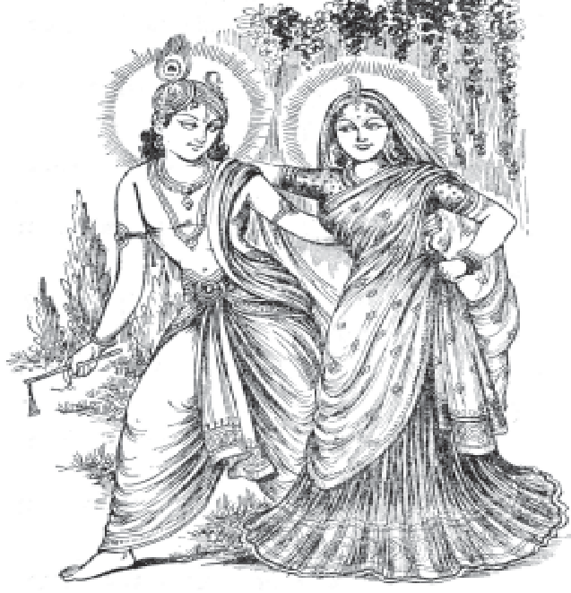

॥ श्रीहरिः ॥
ब्रज-भाव

भाईजी श्रीहनुमानप्रसादजी पोद्दारके काव्यमें ब्रज-भाव
सम्पादक — हनुमानप्रसाद पोद्दार
गीतावाटिका प्रकाशन, गीतावाटिका - गोरखपुर के मूल ग्रंथ
— सरल एवं सुगम पठन के लिए नवीन प्रस्तुति।
॥ ॐ श्रीपरमात्मने नमः ॥
नम्र निवेदन
‘भाव’ शब्दका अभिप्राय ‘भक्ति से है। भगवान् भावसाध्य-भावग्राह् हैं, इसका अर्थ है-वे भक्तिसे प्राप्त होते हैं। भगवान्ने कहा है-मैं एकमात्र अनन्य भक्तिसे ही ग्राह्य हूँ-’ भक्त्याहमेकया ग्राह्यः ‘। यही परमानन्दका रसास्वादन है। भक्तिशून्य या भावरहित होकर कोई भी (किसी भी विषयसे किसी भी परिस्थितिमें) इस आनन्दको प्राप्त नहीं कर सकता और समस्त भक्तिको मूल आकर हैं-श्रीराधा। जैसे समूर्त रसराज श्रीकृष्णसे ही समस्त रसोंका आविर्भाव हुआ है, वैसे ही मूर्तिमती महाभावस्वरूपिणी श्रीराधासे ही अमूर्त और मूर्त सभी भावोंका--विभिन्न भक्ति-भावोंका, भक्ति-स्वरूपोंका विस्तार हुआ है और भावानुसार भक्ति-स्वरूपोंमेंसे स्वरूपानुसार ही रसतत्त्वकी उपलब्धि होती है। जैसे एक ही प्रकाश-ज्योतिके नीले, पीले, लाल, हरे आदि विविध वर्णोके स्फटिकोंपर पड़नेसे विविध वर्णविशेष दिखायी देते हैं, वैसे ही भक्तिके रूपमें प्रकट श्रीराधा ही अमूर्त भावविशेषके रूपमें दास्य, सख्य, वात्सल्यादि भाववाले विभिन्न भक्तोंमें उसी रूपमें प्रकट होकर उसीके अनुसार उसीके उपयोगी रसतत्त्वको प्राप्त कराती हैं। पटरानी-रूपमें, लक्ष्मी आदिके रूपमें, गोपीरूपमें जितनी भी भगवान्की कान्ता देवियाँ हैं, वे सभी श्रीराधाकी समूर्त अवस्थाविशेष हैं। जिस अवस्थामें महाभावरूपा स्वयं राधा और रसराज श्रीकृष्ण प्रेमविलास-वारिधिमें लीलायमान हैं, जहाँ “रमण” और ‘रमणी ‘की भेदबुद्धिकी भी कल्पना नहीं रह जाती, वह सम्पूर्ण रस-भावाद्वैत ही विशुद्ध प्रेमविलासकी असीम सीमा है--निरवधि अवधि है।
भक्तिके कई भेद हैं-सामान्य भक्ति, श्रीकृष्णमें कर्मार्पणादिरूप आरोपसिद्धा भक्ति, कर्ममिश्रा-ज्ञानमिश्रा आदि सङ्गसिद्धा भक्ति, अकिंचना या केवला स्वरूपसिद्धा भक्ति आदि। इनके बहुतसे प्रकार हैं-नवधा, एकादशधा, शतधा, सहस्रधा आदि। जो लोग कर्म, ज्ञान तथा योग आदिकी भाँति भक्तिको साधनका अङ्ग मानते हैं, वे अपने-अपने स्तरके भावानुसार मोक्षतकको प्राप्त हो सकते हैं, परंतु उन्हें पंचम पुरुषार्थरूप, ‘भगवत्प्रेम’ की प्राप्ति नहीं होती। उनकी वह साधन-भक्ति सकाम होनेपर भोगप्रदायिनी और निष्काम होनेपर अन्तःकरणको शुद्धिके द्वारा मोक्षप्रदायिनी होती है।
प्रेमरूपा भक्तिके पाँच स्तर हैं-शान्त, दास्य, सख्य, वात्सल्य और मधुर। आनन्दस्वरूप निर्विशेष ब्रह्ममें शक्तिको अभिव्यक्ति नहीं है, परमात्मामें शक्तिका आंशिक विकास होनेके कारण वहाँ ह्वादिनी चित्-शक्तिका भी अस्तित्व किंचित् प्रकट है। अतएव ‘शान्त’ भक्त भगवान्में ममतायुक्त न होनेपर भी सामान्यरूपसे माधुर्यका अनुभव करता है, पर उसकी यह साधारण माधुर्यकी अनुभूति भगवान्के ऐश्वर्यज्ञानको ढक नहीं सकती--यहाँतक कि श्रीवैकुण्ठका जो माधुर्यानुभव है, उसमें ऐश्वर्यकी अनुभूति प्रत्यक्ष प्रकट रहती है। माधुर्यभावके साधनसे ही उत्पन्न प्रेमविशेष ही वास्तविक माधुर्यका अनुभव है। यही सर्वोत्तम रसास्वादन है। इस माधुर्य-रसास्वादनमें ऐश्वर्यादिका अनुभव सर्वथा अदृश्य हो जाता है। श्रीवैकुण्ठसे लेकर द्वारकातक सभी धामोंमें माधुर्यके साथ ऐश्वर्यका पूर्ण प्रकाश है। यद्यपि उसमें कुछ तारतम्य है और इसी ऐश्वर्यशून्य माधुर्यके विकासकी दृष्टिसे ही प्रेमीजन द्वारकामें श्रीकृष्णको पूर्ण, मथुरामें पूर्णतर और व्रज-गोकुलमें पूर्णतम कहते हैं ।
कृष्णस्य पूर्णतमता व्यक्ताभूद गोकुलान्तरे।
पूर्णता पूर्णतरता द्वारकामथुरादिषु॥
( भक्तिरसामृतसिन्धु)
इसका कारण यह है कि ब्रजकी लीलामें श्रीकृष्णके माधुर्यका पूर्णप्रकाश है। *
हनुमानप्रसाद पोद्दार
॥ ॐ श्रीपरमात्मने नमः ॥
१. प्राक्कथन
अनुभूतिकी गहनता सहज ही वाणीका आश्रय लेती है अभिव्यक्त हो उठनेके लिये। प्रबल एवं प्रगाढ़ अनुभूतिकी अभिव्यक्ति जबतक हो नहीं जाती तबतक कवि हृदय उमड़ता ही रहता है। अभिव्यक्ति कवि हृदयको एक विवशता और आवश्यकता है और यह अभिव्यक्ति ही कवि एवं समाजके लिये एक आनन्ददायी वरदान सिद्ध हो जाता है। महर्षि वाल्मीकिके अन्तरकी आकुलताकी सहज अभिव्यक्तिने ही उन्हें आदि कवि बना दिया। संत तुलसीके अन्तरको भावुकताकी ललित अभिव्यक्तिने ही उन्हें विध-विश्रुत राम-कवि बना दिया। इसी सत्यको आवृत्ति संत-हृदय श्रीपोद्दरजीके जीवनमें भी हुई। उनकी काव्य रचनामें रचनाकारकी अहमन्यता नहीं, रचना करनेके लिये रचना करनेका प्रयास नहीं, अपितु अन्तर्मुखी, अन्तनिर्हित कोमल भावनाओंका दृष्ट, अनुभूत उच्छवास है एवं भावोद्रेककी सहज स्वान्तः सुखाय अभिव्यक्ति है। इसलिये इसमें सहजता है। वस्तुतः यह ‘काव्य-रचना’ नहीं थी, उनका स्वात्मसंवेदन था। स्वात्मसंवेदनका अर्थ है--जीवनके महालक्ष्यसे सम्बद्ध अनुभवोंका स्फुरण जिसमें भीतरसे शब्द विद्युत प्रकाशकी भाँति प्रस्फुटित होते हैं। इस स्थितिको श्रीपोद्दरजीने जीवनभर प्रयत्नपूर्वक गोपनीय रखा। किन्तु दिव्यानुभूतिकी वह अंतःसलिला काव्य-कल्लोलिनी काव्यधाराके रूपमें चिरविश्रामके पूर्वतक अजस्त्र प्रवाहित होती रही, जिसने आज हिन्दी साहित्यकी सूर, तुलसी, कबीरकी परम्परामें भक्ति साहित्यको एक और उज्ज्वल और अपूर्व रत्न प्रदान किया है। उनके काव्यका अध्ययन करनेपर ऐसा प्रतीत होता है कि उनका हृदय सहज ही कवि-हृदय था। अन्यथा पत्रोंके उत्तरके रूपमें इतनी विपुल मात्रामें पदोंकी रचना संभव नहीं थी। उनका काव्य, उनका एकांतिक प्रेमी-भक्तके स्वरूपको प्रकट करता है, जिसमें उनके निश्छल एवं भाव विह्वल भक्त हृदयका यथार्थ प्रतिविम्ब परिलक्षित होता है।
श्रीपोद्दराजीके काव्यमें उनकी साधनाके सोपान भी स्पष्ट दृष्टिगोचर होते हैं एवं उनके अन्तर्हृदयको अनुभूतियोंके भी सहज दर्शन होते हैं। उनकी पद-रचना कवि-कल्पना न होकर उनकी स्वानुभूतिके उद्गार हैं। उनके द्वारा किया गया लीला प्रसंगोंका वर्णन बौद्धिक प्रक्रिया-प्रसूत न होकर साक्षात् लीला-परिकरके रूपमें प्राप्त प्रत्यक्षानुभवपर आधृत है। कुछ पदोंके तो पढ़नेसे साधारण पाठकोंको भी ऐसा परिलक्षित होता है कि जो लीला दृश्य उनके नेत्रोंके समक्ष प्रकट था उसीका आँखों देखा चित्र वे शब्दोंके माध्यमसे प्रस्तुत कर रहे हैं।
श्यामसुन्दर दुजारी
॥ ॐ श्रीपरमात्मने नमः ॥
२. श्रीभाईजीके शब्दोंमें ब्रजभावका संकेत
झाँकी १ — श्रीराधा-माधवका अनिर्वचनीय स्वरूप
श्रीराधा-श्रीकृष्ण नित्य ही परम तत्त्व हैं एक अनूप।
नित्य सच्चिदानन्द प्रेम-घन-विग्रह उज्ज्वलतम रसरूप ॥
बने हुए दो रूप सदा लीला-रस करते आस्वादन।
नित्य अनादि-अनन्त काल लीलारत रहते आनँदघन॥
कायव्यूहरूपा राधाकी हैं अनन्त गोपिका ललाम।
इनके द्वारा लीला-रस आस्वादन करते श्यामा-श्याम ॥
कृष्ण, राधिका, गोपी-जन--तीनोंका लीलामें संयोग।
एक तत्त्व ही तीन रूप बन करते लीला-रस-संभोग॥
परम तत्त्व श्रीकृष्ण नित्य हैं अनुपम सत-चित-आनँदघन।
सत् संधिनि, चित् चिति, आह्वादिनी है आनन्दशक्ति रसघन ॥
ह्वादिनि स्वयं राधिका ‘, संधिनि बनी नित्य’ श्रीवृन्दावन ‘।
बनी ‘योगमाया’ चिति करती रसलीलाका आयोजन ॥
राधा स्वयं बनी हैं व्रजमें गोपरमणियाँ अति अभिराम।
लीला-रसके क्षेत्र-पात्र बन यों लीलारत श्यामा श्याम॥
व्रजसुन्दरी प्रेमको प्रतिमा, कामगन्धसे मुक्त महान्।
केवल प्रियतमके सुख-कारण करतीं सदा प्रेम-रस-दान॥
लोक-लाज, कुल-कान, निगम-आगम, धन, जाति-पाँति, यश-गेह।
भुक्ति-मुक्ति सब परित्याग कर करतीं प्रियसे सहज सनेह ॥
इन्द्रिय-सुखकी मलिन कामना है अति निन्दित कलुषित काम।
मोक्ष-काम-कामी ऊँचे साधक भी नहीं पूर्ण निष्काम॥
काम सदा तमरूप अन्धतम, नरकोंका कारण सविशेष।
प्रेम सुनिर्मल हरि-रस-पूरित परम ज्योतिमय शुभ्र दिनेश॥
जिसको नहीं मुक्तिकी इच्छा, जिसे नहीं बन्धनका भान।
केवल कृष्ण-सुखेच्छा हित जिसके सब धर्म-कर्म, मति-ज्ञान ॥
ऐसे गोपी-जन-मनमें लहराता प्रेम-सुधा-सागर।
इसीलिये रहते उसमें नित मग्न रसिकमणि नटनागर॥
(पद-रत्नाकर, पद सं० ७२९)
श्रीराधा और श्रीकृष्ण नित्य-निरन्तर एक ही अनुपम परम तत्त्व हैं और ये नित्य सच्चिदानन्द प्रेमघनविग्रह उज्ज्वलतम रसरूप हैं। ये एक ही आनन्दघन सदा दो बने हुए लीलारसका आस्वादन करते रहते हैं और अनादि-अनन्तकाल लीलारत हैं। श्रीराधाजीकी ही कायव्यूहरूपा अनन्त सुन्दरी गोपिकाएँ हैं, जिनके द्वारा श्रीराधा-माधव सदा-सर्वदा लीला-रसास्वादन करते रहते हैं। ये श्रीकृष्ण, श्रीराधा और अनन्त गोपीजन--इन तीनोंका इस मधुरतम, दिव्यतम लीलामें संयोग है और एक ही परम तत्त्व त्रिरूप बना हुआ लीला-रस सम्भोग करता रहता है। परम तत्त्व श्रीकृष्ण नित्य अनुपम सत्-चित्-आनन्दघन हैं; ‘सत्’ ‘संधिनी’, ‘चित्’ ‘चिति’और ‘आनन्द’ रसघन ‘ह्लादिनी’ शक्ति हैं । ‘ह्वादिनी’ स्वयं ‘राधिका’ हैं, ‘संधिनी’ ‘वृन्दावन’ बनी है और ‘चिति’ ‘योगमाया’ बनी हुई नित्य-निरन्तर रसलीलाका आयोजन करती रहती हैं। श्रीराधा स्वयं ही लीलाधाम ब्रजमें अत्यन्त अभिराम गोपरमणियों के रूपमें प्रकट हैं। यों श्रीराधा-माधव स्वयं ही लीलारसके क्षेत्र और पात्र बनकर लीला-रस-पान-रत हैं। व्रजसुन्दरियाँ महान् प्रेमकी जीती-जागती प्रतिमाएँ हैं। ये काम-गन्ध-लेशसे सर्वथा मुक्त हैं और केवल प्रियतम श्रीकृष्णके सुखके लिये ही सदा प्रेमरसका वितरण करती रहती हैं। ये लोक-लज्जा, कुल-कान, निगम-आगम, धन-जन, जाति-पाँति यश-गृह, भोग-मोक्ष-सबका परित्याग करके प्रियतम श्रीकृष्णसे सहज स्नेह करती हैं। इन्द्रिय-सुखकी मलिन कामना तो अत्यन्त निन्दित कलुषित काम है ही, मोक्षकी कामना करनेवाले ऊँचे साधक पुरुष भी पूर्ण निष्काम नहीं हैं। (क्योंकि उनमें भी ‘अहं को बन्धनसे मुक्त करनेकी चिन्ता है, वे भी’ अहं‘की चिन्ता तथा’ अहं की मङ्गल-कामनासे आबद्ध हैं।) लौकिक काम सदा ही तमरूप है और अन्धतम नरकोंकी प्राप्तिका विशेष हेतु है तथा हरि-रस-पूरित प्रेम सदा ही परम ज्योतिर्मय उज्ज्वल भास्कर है। जिसको न तो मुक्तिको इच्छा है न जिसे बन्धनका भान है, केवल श्रीकृष्ण-सुखेच्छाके लिये ही जिसके सारे धर्म, कर्म, मति, ज्ञान आदि हैं, ऐसे गोपीजनके मनमें नित्य निर्मल प्रेम-सुख-सागर लहराता रहता है और इसीलिये उसमें रसिकशिरोमणि नटनागर नित्य-निरन्तर निमग्न रहते हैं ।
झाँकी २ — श्रीराधाका त्यागमय एकाड़ी निर्मल भाव
पवित्रतम प्रेम-सुधामयी श्रीराधाने प्रियतम प्रेमार्णव श्रीश्यामसुन्दरके दर्शन करके सर्वसमर्पण कर दिया। अब वे आठों पहर उरन्हींके प्रेम-रस-सुधा-समुद्रमें निमग्न रहने लगीं । श्यामसुन्दर मिलें-न-मिलें--इसकी तनिक भी परवा न करके वे रात-दिन अकेलेमें बैठी मन-ही-मन किसी विचित्र दिव्य भावराज्यमें विचरण किया करतीं। न किसीसे कुछ कहतीं, न कुछ चाहतीं, न कहीं जातीं-आतीं। एक दिन एक अत्यन्त प्यारी सखीने आकर बहुत ही स्नेहसे इस अज्ञात विलक्षण दशाका कारण पूछा तथा यह जानना चाहा कि वह सबसे विरक्त होकर दिन-रात क्या करती हैं। यह सुनकर श्रीराधाके नेत्रोंसे अश्रुबिन्दु गिरने लगे और वे बोलीं-‘प्रिय सखी! हृदयकी अति गोपनीय यह मेरी महामूल्यमयी अत्यन्त प्रिय वस्तु, जिसका मूल्य मैं भी नहीं जानती, किसीको दिखलाने, बतलाने या समझानेकी वस्तु नहीं है; पर तेरे सामने सदा मेरा हृदय खुला रहा है। तू मेरी अत्यन्त अन्तरङ्गा, मेरे ही सुखके लिये सर्वत्यागिनी, परम विरागमयी, मेरे रागकी मूर्तिमान् प्रतिमा है, इससे तुझे अपनी स्थिति, अपनी इच्छा, अभिलाषाका किंचित् दिग्दर्शन कराती हूँ। सुन--
“प्रिय सखी! मेरे प्रभुके श्रीचरणोंमें मैं और जो कुछ भी मेरा था, सब समर्पित हो गया। मैंने किया नहीं, हो गया। जगतमें पता नहीं किस कालसे जो मेरा डेरा लगा था, वह सारा डेरा सदाके लिये उठ गया। मेरी सारी ममता सभी प्राणी-पदार्थ-परिस्थितियोंसे हट गयी, अब तो मेरी सम्पूर्ण ममताका सम्बन्ध केवल एक प्रियतम प्रभुसे ही रह गया। जगतमें जहाँ कहीं भी, जितना भी, जो भी मेरा प्रेम, विश्वास और आत्मीयताका सम्बन्ध था, सब मिट गया। सब ओरसे मेरे सारे बन्धन खुल गये। अब तो मैं केवल उन्हींके श्रीचरणोंमें बँध गयी। उन्हींमें सारा प्रेम केन्द्रित हो गया। उन्हींका भाव रह गया। यह सारा संसार भी उन्हींमें विलीन हो गया। मेरे लिये उनके सिवा किसी प्राणी-पदार्थ-परिस्थितिकी सत्ता ही शेष नहीं रह गयी, जिससे मेरा कोई व्यवहार होता। पर सखी! मैं नहीं चाहती मेरी स्थितिका किसीको कुछ भी पता लगे। और तो क्या, मेरी स्थिति मेरे प्राणप्रियतम प्रभुसे भी सदा अज्ञात ही रहे। प्यारी सखी! मैं सुन्दर सरस सुगन्धित सुकोमल सुमनसे (सुन्दर मनसे) सदा उनकी पूजा करती रहती हूँ, पर बहुत ही छिपाकर करती हूँ; मैं सदा इसी डरसे डरती हूँ कि मेरी पवित्र पूजा अनन्त कालतक सुरक्षित चलती रहे। में कहीं भी रहूँ, कैसे भी रहूँ, इस पूजाका कभी अन्त न हो और मेरी यह पूजा किसी दूसरेको--प्राण-प्रियतमको भी आनन्द देनेके उद्देश्यसे न हो, इस मेरी पूजासे सदा-सर्वदा मैं ही आनन्द-लाभ करती रहूँ। इस पूजामें ही मेरी रुचि सदा बढ़ती रहे, इसीसे नित्य ही परमानन्दको प्राप्ति होती रहे। यह पूजा सदा बढ़ती रहे और यह बढ़ती हुई पूजा ही इस पूजाका एकमात्र पवित्र फल हो। इस पूजामें मैं नित्य-निरन्तर प्रियतमके अतिशय मनभावन पावन रूप-सौन्दर्यको देखती रहूँ। पर कभी भी वे प्रियतम मुझको और मेरी पूजाको न देख पायें। वे यदि देख पायेंगे तो उसी समय मेरा सारा मजा किरकिरा हो जायगा। फिर मेरा यह एकाङ्गी निर्मल भाव नहीं रह सकेगा। फिर तो प्रियतमसे नये-नये सुख प्राप्त करनेके लिये मनमें नये-नये चाव उत्पन्न होने लगेंगे।”
“यों कहकर राधा चुप हो गयीं । निर्मिमेष नेत्रोंसे मन-ही-मन प्रियतमके रूप-सौन्दर्यको देखने लगीं ।
हुआ समर्पण प्रभु-चरणोंमें जो कुछ था सब, मैं, मेरा।
अग-जगसे उठ गया सदाको चिर-संचित सारा डेरा॥
मेरी सारी ममताका अब रहा सिर्फ प्रभुसे सम्बन्ध ।
प्रीति, प्रतीति, सगाई सबही मिटी, खुल गये सारे बन्ध॥
प्रेम उन्हींमें, भाव उन्हींका, उनमें ही सारा संसार।
उनके सिवा, शेष कोई भी बचा न, जिससे हो व्यवहार॥
नहीं चाहती जाने कोई, मेरी इस स्थितिकी कुछ बात।
मेरे प्राणप्रियतम प्रभुसे भी यह सदा रहे अज्ञात॥
सुन्दर सुमन सरस सुरक्षित मृदुसे मैं नित अर्चन करती।
अति गोपन, वे जान न जायें कभी, इसी डरसे डरती ॥
मेरी यह शुचि अर्चा चलती रहे सुरक्षित काल अनन्त।
रहूँ कहीं भी, कैसे भी, पर इसका कभी न आये अन्त॥
इस मेरी पूजासे पाती रहूँ नित्य मैं ही आनन्द।
बढ़े निरन्तर रुचि अर्चामें, बढ़े नित्य ही परमानन्द॥
बढ़ती अर्चा ही अर्चाका फल हो एकमात्र पावन।
नित्य निरखती रहूँ रूप मैं, उनका अतिशय मनभावन ॥
वे न देख पायें पर मुझको, मेरी पूजाको न कभी।
देख पायँगे वे यदि, होगा मजा सभी किरकिरा तभी ॥
रह नहिं पायेगा फिर मेरा यह एकाड्री निर्मल भाव।
फिर तो नये नये उपजेंगे ‘प्रिय’ से सुख पानेके चाव ॥
(पद-रत्नाकर, पद सं० ४४२)
झाँकी ३
एक दिन श्रीराधाजी एकान्तमें किसी महान् भावमें निमग्न बैठी थीं । एक श्रीकृष्णप्रेमाभिलाषिणी सखीने आकर बड़ी ही नम्रतासे उनसे प्रियतम श्रीकृष्ण अथवा उनका विशुद्ध अनन्य प्रेम प्राप्त करनेका सर्वश्रेष्ठ साधन पूछा। बस, श्रीकृष्णप्रेमके साधनका नाम सुनते ही श्रीराधिकाजीके नेत्रंसे आँसुओंकी धारा बह चली और वे गदूद वाणीसे रोते हुई बोलीं--
अरी सखि! मेरे तन, मन, प्रान--
धन, जन, कुल, गह--सब ही वे हैं सील, मान, अभिमान॥
आँसू सलिल छॉड़ि नहिं कछु धन है राधा के पास।
जाके बिनिमय मिलैं प्रेमधन नीलकांतमनि खास॥
जानि लेउ सजनी! निस्चै यह परम सार कौ सार।
स्याम प्रेम कौ मोल अमोलक सुचि अँसुवन की धार॥
(पद-रत्नाकर, पद सं० ५२८)
वे बोलीं-‘अरी सखी! मैं क्या साधन बताऊँ, मेरे पास तो कुछ और है ही नहीं। मेरे तन, मन, प्राण, धन, जन, कुल, घर, शील, मान, अभिमान--सभी कुछ एकमात्र वे श्यामसुन्दर ही हैं। इस राधाके पास अश्रुजलको छोड़कर और कोई धन है ही नहीं, जिसके बदलेमें उन प्रेमधन स्वयं नीलकान्तमणिको प्राप्त किया जाय। सजनी ! तुम यह निश्चित परम सारका सार समझो--अमूल्य श्यामप्रेमका मूल्य केवल पवित्र आँसुओंकी धारा ही है। सब कुछ उन्हींको समर्पणकर, सब कुछ उन्हींको समझकर उन्हींके प्रेमसे, उन्हींके लिये जो निरन्तर प्रेमाश्रुओंकी धारा बहती रहती है, बस, वह पवित्र अश्रुजल ही उनके प्रेमको प्राप्त करनेका एकमात्र उपाय है। यह है उनके साधनका स्वरूप ।’
झाँकी ४
श्रीराधा नित्य सत्य एकमात्र अपने प्रियतम श्रीश्यामसुन्दरकी सुखविधाता हैं। वे इतनी त्यागमयी हैं, इतनी मधुर-स्वभावा हैं कि अचिन्त्यानन्त गुण-गणकी अनन्त आकर होकर भी अपनेको प्रियतम श्रीकृष्णकी अपेक्षासे सदा सर्वसदुणहीन अनुभव करती हैं, वे परिपूर्ण प्रेमप्रतिमा होनेपर भी अपनेमें प्रेमका सर्वथा अभाव देखती हैं; वे समस्त सौन्दर्यकी एकमात्र निधि होनेपर भी अपनेको सौन्दर्यरहित मानती हैं और पवित्रतम सहज सरलता उनके स्वभावकी सहज वस्तु होनेपर भी वे शसो कुटिलता तथा दम्भके दर्शन करती और अपनेको धिक्कार देती हैं।
इस प्रकार श्रीराधाजी अपनेको सदा-सर्वदा सर्वथा हीन-मलिन मानती हैं, अपनेमें त्रुटि देखती हैं--परम सुन्दर गुणसौन्दर्यनिधि श्यामसुन्दरकी प्रेयसी होनेकी अयोग्यताका अनुभव करती हैं एवं पद-पदपर तथा पल-पलमें प्रियतमके प्रेमको प्रशंसा तथा उनके भोलेपनपर दुःख प्रकट करती हैं।
श्रीराधाके गुण-सौन्दर्यसे नित्य मुग्ध प्रियतम श्यामसुन्दर यदि कभी प्रियतमा श्रीराधाके प्रेमको तनिक भी प्रशंसा करने लगते, उनके प्रति अपनी प्रेम-कृतज्ञताका एक शब्द भी उच्चारण कर बैठते अथवा उनके दिव्य प्रेमका पात्र बननेमें अपने सौभाग्य-सुखका तनिक-सा संकेत भी कर जाते तो श्रीराधाजी अत्यन्त संकोचमें पड़कर लज्जाके मारे गड़-सी जातीं। एक बार उन्होंने श्यामसुन्दरसे रोते-रोते कहा-
तुमसे सदा लिया ही मैंने, लेती-लेती थकी नहीं।
अमित प्रेम-सौभाग्य मिला, पर मैं कुछ भी दे सकी नहीं॥
मेरी त्रुटि, मेरे दोषोंको Ei देखा नहीं कभी।
दिया सदा, देते न थके तुम, दे डाला निज प्यार सभी॥
तब भी कहते-‘दे न सका मैं तुमको कुछ भी हे प्यारी।
तुम-सी शील-गुणवती तुम ही, में तुमपर हूँ बलिहारी ‘॥
क्या मैं कहूँ प्राण-प्रियतमसे, देख लजाती अपनी ओर।
मेरी हर करनीमें ही तुम प्रेम देखते नन्दकिशोर॥
(पद-रत्नाकर, पद सं० ६१३)
श्रीराधाजीका जीवन प्रियतम-सुखमय है। वे केश सँवारती हैं, वेणीमें फूल गूँथती हैं, मालतीकी माला पहनती हैं, वेष-भूषा, साज-श्रृंगार करती हैं, पर अपनेको सुखी करनेके लिये नहीं; वे सुस्वादु पदार्थोंका भोजन-पान करती हैं, परंतु जीभके स्वाद या अपने शरीरको पुष्टिके लिये नहीं; वे दिव्य गन्धका सेवन करती हैं, पर स्वयं उससे आनन्दलाभ करनेके लिये नहीं; वे सुन्दर पदार्थोंका निरीक्षण करती हैं, पर अपने नेत्रोंको तृप्त करनेके लिये नहीं; वे मधुर-मधुर संगीत-ध्वनि सुनती हैं, पर अपने कानोंको सुख पहुँचानेके लिये नहीं; वे सुख-स्पर्श प्राप्त करती हैं, पर अपने त्वगिन्द्रियकी प्रसन्नताके लिये नहीं । वे चलती-फिरती हैं, सोती-जागती हैं, सब व्यवहार-बर्ताव करती हैं, पर अपने लिये नहीं; वे जीवनधारण भी अपने लिये नहीं करतीं । वे यह सब कुछ किया करती हैं--केवल और केवल अपने परम प्रियतम श्रीकृष्णको सुख पहुँचानेके लिये!
वस्तुतः वे सदा-सर्वदा यही अनुभव करती हैं कि उनके समस्त मन-इन्द्रिय, उनके समस्त अङ्ग-अवयव, उनके चित्त-बुद्धि, उनका चेतन आत्मा--सभीको श्रीकृष्ण अपने नित्य-निरन्तर सुख-संस्पर्श-दानमें ही संलग्न बनाय रखते हैं, अन्य किसीका भी वे कभी संकल्प भी करें, इसके लिये तनिक-सा अवकाश नहीं देते या क्षणभरके लिये किसी अङ्गको वैसी स्व-संस्पर्शरहित स्थिति ही नहीं होने देते। श्रीराधाजी अपनी परिस्थिति बतलाती हैं--
स््रवननि भरि निज गिरा मनोहर मधु मुरली की तान।
सुनन न दै कछु और सबद, नित बहरे कीन्हें कान ॥
लिपटो रहै सदा तन सौं मम रही न कछु बिबधान।
अन्य परस की सुधि न रही कछु, भयौ चित्त इकतान॥
अँखियन की पुतरिनमें मेरे निसिदिन रह्यौ समाय।
देखन दै न और कछु कबहूँ एकै रूप रमाय॥
रसना बनी नित्य नव रसिका चाखत चारु प्रसाद।
मिटे सकल परलोक-लोक के खाटे मीठे स्वाद॥
अंग सुगंध नासिका राची मिटी सकल मधु बास।
भई प्रमत्त, गई अग-जगकी सकल सुबास-कुबास॥
मनमें भरि दीन्हीं मोहन निज मुनि-मोहनि मुसकान।
चित्त कस्यौ चिंतन-रत चिन्मय चारु चरन छबिमान॥
दई डुबाय बुद्धि रस-सागर उछरन की नहिं बात।
आय मिल्यौ चेतन मैं मोहन भयौ एक संघात॥
(पद-रत्नाकर, पद सं० ५२३)
अतएव श्रीराधाके श्रंगार-रसमें तथा जागतिक श्रंगारमें नामोंकी समताके अतिरिक्त किसी भी अंशमें, कहीं भी, कुछ भी तुलना ही नहीं है। तत्त्वतः और स्वरूपतः दोनों परस्पर सर्वथा विपरीत, भिन्न तथा विषम वस्तु हैं। लौकिक श्रृंगार होता है--काममूलक, कामको प्रेरणासे निर्मित! इन्द्रिय-तृप्तिको स्थूल या सूक्ष्म कामना-वासना ही उसमें प्रधान हेतु होती है।
झाँकी ५
श्रीकृष्णस्वरूपिणी श्रीकृष्णाह्वादिनी श्रीराधा वृषभानुपुरमें माता कीर्तिदादेवीके यहाँ महान् पुण्यमय मधुररूपमें प्रकट होकर नित्य अभिन्नस्वरूप श्रीकृष्णके साथ लीलाविहार करती हैं। इनके लीलासागरकी विविध ऋजु-कुटिल तरङ्गं हैं प्रेम, स्नेह, मान, प्रणय, राग, अनुराग, भाव-ये सभी इन लीला-भाव-तरङ्गोंके ही स्वरूप हैं। इनकी पूर्ण परिणतिका नाम ही ‘महाभाव’ है और श्रीराधा ही ‘महाभावस्वरूपा’ हैं। उनमें पूर्वोक्त सभी भावोंका एकत्र अन्तर्भाव है। लीलामें समय-समयपर सभी भावोंका लीला-क्षेत्रानुसार प्रकाश होता है। कभी वे अत्यन्त मानिनी बनकर श्रीकृष्णके द्वारा अत्यन्त विनयपूर्ण मानभङ्ग-लीला कराती हैं तो कभी अपना नितान्त दैन्य प्रकट करती हुई (ललिताजीसे) कहती हैं-
सखी री! हों अवगुनकी खान।
तन गोरी, मन कारी भारी, पातक-पूरन प्रान॥
नहीं त्याग रंचक मो मन मैं, भर्यौ अमित अभिमान।
नहीं प्रेम कौ लेस लेस, नित निज सुख कौ ही ध्यान॥
जग के दुःख-अभाव सतावैं, हो तन पीड़ा-भान।
तब तेहिं दुख दृग स्त्रवै अश्रु-जल, नहिं कछु प्रेम-निदान॥
तिन दुख-अँसुवन कौं दिखराऔं हौं सुचि प्रेम महान।
करौं कपट, हिय-भाव दुरावौं, रचौं स्वॉग सञ्चान॥
भोरे प्रियतम मम, बिमुग्ध बन करें, बिमल गुन-गान।
अतिसय प्रेम सराहैं, मोकूँ परम प्रेमिका मान॥
तुमहू सब मिलि करौ प्रसंसा, तब हौं भरौ गुमान।
करौं अनेक छद्य तेहि छन हौं, रचौं प्रपंच-बितान ॥
स्याम सरल-चित ठगौं दिवस-निसि हौं करि बिबिध बिधान।
धूग जीवन मेरौ यह कलुषित, धृग यह मिथ्या मान॥
(पद-रत्नाकर, पद सं० ५३२)
“री सखी! मैं अवगुणोंकी--दोषोंकी खान हूँ। शरीरसे गोरी हूँ, परंतु मनसे बड़ी काली हू; मेरे प्राण पातकोंसे पूर्ण हैं। मेरे मनमें रंचभर भी त्याग नहीं है, अपार अभिमान भरा है। प्रेमका तो लेश भी शेष नहीं है, नित्य-निरन्तर अपने सुखका ही ध्यान है। सब जगत्के दुःख-अभाव सताते हैं और शरीरमें पीड़ाकी अनुभूति होती है, तब उस दुःखके कारण आँखोंसे अश्रुजल बहने लगता है; उसमें तनिक भी प्रेमका कारण नहीं है। पर उन दुःखके आँसुओंको मैं महान् पवित्र प्रेमके आँसू बताकर प्रेम प्रकट करती हूँ। हदयके भावको छिपाकर कपट करती हूँ और जान-बूझकर स्वाँग रचती हूँ। मेरे भोले-भाले प्रियतम मुझे परम प्रेमिका मानकर विमुग्ध हो मेरा निर्मल गुणगान करते हैं और मेरे प्रेमको अतिशय प्रशंसा करते हैं। तुम सब भी मिलकर मेरी प्रशंसा करती हो, तब मैं अभिमानसे भर जाती हूँ और उस अपने मिथ्या प्रेमस्वरूपकी रक्षाके लिये मैं अनेक छल-छद्मय और प्रपञ्चोंका विस्तार करती हूँ। इस प्रकार मैं सरल-हदय श्यामसुन्दरको विविध विधियोंसे दिन-रात ठगती रहती हूँ। धिक्कार है मेरे इस कलुषित जीवनको और धिक्कार है मेरे इस मिथ्या मानको!”
झाँकी ६
राधाजी कभी वियोगका अत्यन्त दारुण अनुभव करके दहाड़ मारकर रोती हैं, कभी मिलन-सुखका महान् आनन्द प्राप्त करती हैं और कभी प्रत्यक्ष मिलनमें ही वियोगका अनुभव करके हा श्यामसुन्दर, हा प्राणप्रियतम !’ पुकारने लगती हैं एवं कभी-कभी अपनेको ही श्यामरूप मानकर ‘हा राधे’, ‘हा राधे’ की करुण ध्वनि कर उठती हैं। एक बार निकुञ्जसे लौटनेपर उन्हें ऐसा भान हुआ कि श्यामसुन्दर कहीं चले गये हैं। इसलिये वे वहीं वनमें वनधातुको जलमें घोलकर दाड़िमकी छोटी-सी पतली डालीको कलम बनाकर प्रियतमको पत्र लिखने बैठीं-इतनेमें ही अपने-आपको भूल गयीं और ‘हा राधे! तुम कहाँ चली गयीं?’ पुकार उठीं। फिर राधाको पत्र लिखा। पीछे अपनी ही वाणीसे उन्होंने प्रिय सखी ललिताको अपनी यह भूल बतलायी--
सखी! यह कैसी भूल भई।
लिखन लगी पाती पिय कौं, लै दाड़िम-कलम नई ॥
भूली निज सरूप हौं तुरतहिं बनि घनस्याम गई।
बिरह बिकल बोली पुकार-‘हा राधे’ कितै गई?
पाती लिखी--‘प्रिये हृदयेस्वरि! सुमधुर सु-रसमई।
प्रानाधिके! बेगि आवौ तुम नेह-कलह-बिजई॥
ठाढ़े भए आय मनमोहन, मो तन दृष्टि दई।
हँसे ठठाय, चेतना जागी, हौं सरमाय गई॥
(पद-रत्नाकर, पद सं० ३९०)
गोपी-प्रेमका स्वरूप-स्वभाव है-श्रीराधा-माधवका सुख। वे श्रीराधा-माधवके सुखमें ही सुखका अनुभव करती हैं और नित्य-निरन्तर उनके सुख-संयोग-विधानमें ही लगी रहती हैं। श्रीकृष्णप्राणा श्रीराधाजीका जीवन है श्रीकृष्णसुखमय। खाने-पीनेतकमें स्वाद-सुखकी अनुभूति भी उन्हें तभी होती है, जब उससे श्रीकृष्णको सुख होता है। वे ‘अहं को सर्वथा भुलाकर केवल श्रीकृष्णसुखको ही चिन्ता करती रहती हैं--और प्रेम-स्वाभावानुसार अपने दोषोंके तथा प्रियतम श्रीकृष्णमें गुणोंके दर्शन करती हुई कहती हैं-
क्षण भर मुझे उदास देख जो कभी प्राणप्रिय! पाते।
सारा मोद भूल तुम, प्यारे! अति व्याकुल हो जाते॥
कभी किसी कारण जब मेरे नेत्र-कोण भर आते।
तब तुम अति विषण्ण हो, प्यारे! आँसू अमित बहाते॥
कभी म्लानताकी छाया यदि मेरे मुखपर आती।
लगती देख धड़कने, प्रिय! तत्काल तुम्हारी छाती॥
मेरे मुख मुसकान देख तुमको अतिशय सुख होता।
हो आनन्द-मग्न अति, मन तब सारी सुध-बुध खोता ॥
मुझको सुखी देखने-करनेको ही प्रतिपल प्यारे।
पुण्य, विचार मधुर, तव-कार्य त्यागमय सारे॥
मेरा सुख-दुख तनिक तुम्हें अतिशय है सुख-दुख देता।
मेरा मन नित इन पावन भावोंसे अति सुख लेता॥
दिया अमित, दे रहे अपरिमित, देते नित्य रहोगे।
सहे सदा अपमान-अवज्ञा, आगे सदा सहोगे॥
किया न प्यार कभी सच्चा, मैंने निज सुख ही देखा।
निज सुख-हेतु रुलाया, कभी हैँसाया, किया न लेखा॥
दे न सकी में तुम्हें कभी कुछ सुख-सामग्री कोई।
निज मन-इन्द्रिय-तृप्ति हेतु मैंने सब आयुस् खोई॥
बुरा मानना, दोष देखना, पर तुमने नहिं जाना।
मेरे स्वार्थ-सने कामोंको सदा प्रेममय माना॥
मत्सुखकारक विमल प्रेमको मैंने नित ठुकराया।
तब भी प्रेम तुम्हारा मैंने नित बढ़ता ही पाया॥
तुम-से तुम ही हो, अग-जगमें तुलना नहीं तुम्हारी।
मेरा अति सौभाग्य यही, जो मान रहे तुम प्यारी॥
(पद-रत्नाकर, पद सं० ६४८)
“प्राणप्रियतम ¦ मुझे क्षणभरके लिये यदि कभी तुम उदास पाते हो तो प्रियतम! सारा आनन्द भूलकर तुम अत्यन्त व्याकुल हो उठते हो। कभी किसी कारण जब मेरे नेत्रकोण भर आते हैं, तब तुम अत्यन्त उदास होकर आँखोंसे अपार आँसू बहाने लगते हो। कभी यदि मेरे मुखपर तनिक-सी म्लानताकी छाया भी आ जाती है तो उसे देखकर उसी क्षण तुम्हारी छाती धड़कने लगती है। कभी मेरे मुखपर तनिक मुसकान देख लेते हो तो तुमको अतिशय सुख होता है और तुम्हारा मन अत्यन्त आनन्दमग्न होकर सारी सुध-बुध खो देता है। मुझको सुखी बनाने और सुखी देखनेके लिये ही प्रियतम, प्रतिपल तुम्हारे मधुर पवित्र विचार और त्यागमय समस्त कार्य होते हैं। मेरे तनिक-से सुख-दुःख तुम्हें अतिशय सुख-दुःख देते हैं। तुम्हारे इन पवित्र भावोंको ग्रहण करके मेरा मन निरन्तर अत्यन्त सुखका अनुभव करता है।
“तुमने मुझको अपरिमित दिया, अपरिमित दे रहे हो और आगे भी सदा अपरिमित देते ही रहोगे। तुम मेरे द्वारा सदा ही अपमान-अवज्ञा सहते आये हो और भविष्यमें भी सदा सहते ही रहोगे। मैंने कभी सच्चा प्रेम नहीं किया, केवल अपना ही सुख देखा। अपने ही सुखके लिये तुम्हें कभी रुलाया, कभी हँसाया। कुछ भी हिसाब नहीं रखा। मैं तुम्हें कभी कुछ भी सुखकी सामग्री नहीं दे सकी। मैंने अपनी सारी आयु अपने मन-इन्द्रियोंकी तृप्तिके लिये ही खो दी। पर तुमने तो कभी बुरा मानना, मेरे दोष देखना जाना ही नहीं और मेरे स्वार्थपूर्ण कार्योको सदा प्रेममय ही माना। मुझे सुखी करनेवाले तुम्हारे निर्मल प्रेमको मैंने सदा ठुकराया, तब भी अपने प्रति तुम्हारे प्रेमको मैंने निरन्तर बढ़ता ही पाया। प्रियतम! इस अग-जगमें तुम-सरीखे एक तुम्हीं हो! तुम्हारी कहीं तुलना नहीं है। मेरा यही अत्यन्त सौभाग्य है, जो तुम मुझे अपनी प्रिया मान रहे हो!”
झाँकी ७
परम दिव्य रसकी महिमामूर्ति श्रीराधिकाजी रसरूप रसिकवर श्रीश्यामसुन्दरसे कहती हैं--
“प्रिय रसिकश्रेष्ठ ! तुम निरन्तर रसपान करते रहो और फिर, मेरे अन्तस्तलको नित्य नवीन रससे भरते रहो। सबको अपने मधुर नृत्यसे मुग्ध करनेवाले नटवर! मैं नित्य तुमको मधुरतम रस पिलाती रहूँ और हे रसमय! तुम मुझको अपना मधुर रस जीवनभर पिलाते रहो। बस, हम दोनों परस्पर अनन्तकालतक सदा रसदान और रसपानमें लगे रहें। रसधाम ! इसमें कभी पलभरके लिये भी विराम न हो। नित्य नयी-नयी मधुर मनोहर लीलाका निर्माण होता रहे, इस दिव्य रसानन्दसे कभी तनिक भी तृप्ति न हो, वरं इसकी प्यास सदा अधिक-से-अधिक बढ़ती ही रहे। हम प्रिया-प्रियतम-रसकी खान पवित्र रास करते रहें और परम श्रेष्ठ, परम मधुर रस-सुधा-समुद्र सदा उछलता ही रहे।”
तुम करते रहो रसिकवर! यह रसपान निरन्तर।
फिर भरते रहो नित्य नव रससे मेरा अन्तर॥
मैं तुम्हें कराऊँ पान मधुरतम रस नित, नटवर!
तुम मुझे पिलाते रहो स्व-रस, रसमय! जीवनभर ॥
रस-दान-पानमें रहें सदा संलग्न परस्पर।
बस, काल अनन्त, न हो विराम, रसधाम! पलक भर॥
नित नयी-नयी लीलाका हो निर्माण मनोहर।
हो कभी न किंचित् तृप्ति, बढ़े नित प्यास अधिकतर॥
हम करते रहें प्रिया-प्रियतम शुचि रास रसाकर।
हो नित्य उच्छलित परम मधुर-रस-सुधा-उदधि वर॥
(पद-रत्नाकर, पद सं० ६२१)
श्रीराधारानीके अनन्त गुणोंका जितना गान किया जाय, उनके चरित्रगत महान् मधुरतम अत्युच्च भावोंका जितना ही स्मरण किया जाय, उतना ही अपना परम सौभाग्य है। श्रीराधा-माधवके अगाध स्वरूप-समुद्रके क्षुद्रवम एक सीकरकी छबि देखिये। श्रीराधाजी कहती हैं--
“हम दोनों अनादि अनन्त नित्य एक सनातनरूप हैं और सदा ही दो बने हुए सहज ही अनन्त अचिन्त्य अतुलनीय लीला करते रहते हैं। हम नित्य पुरातन और नित्य नूतन, सदा एक, एकरस तथा अभिन्न हैं। पर हमारी भिन्नतामयी रसलीलाधाराका प्रवाह नित्य अविच्छिन्नरूपसे बहता रहता है। उस रसलीलाधारामें सदा ही सहज ही सुखमय मिलन है और सदा ही सहज ही दारुण विरह-वियोगजनित हृदय-दाह है। उसमें नित्य मधुर मृदु मनोहर हास्य है और नित्य आह-कराहभरा करुण रुदन है। मेरा यह क्रन्दन अनादि और अनन्त है तथा दुःखभार-रूप सुखमय है। हमारा यह मधुर सुखसार-स्वरूप अमिलनमें मिलन--वियोगमें संयोग और मिलनमें अमिलन--संयोगमें वियोग नित्य है तथा परम अतर्क्य है।”
अन्तविहीन, अनादि, नित्य हम दोनों एक सनातनरूप।
बने सदा दो लीला करते, सहज अनन्त अचिन्त्य-अनूप॥
नित्य पुरातन, नित नूतन हम, सदा एकरस, एक अभिन्न।
पर भिन्नतामयी रसलीला-धारा बहती नित अविच्छन्न॥
सुखमय मिलन सहज नित, दारुण विरह-वियोग नित्य उर दाह।
नित्य मधुर-मृदु-हास्य-मनोहर, करुण-रुदन नित आह-कराह॥
है अनादि क्रन्दन यह मेरा, है अनन्त सुखमय दुख-भार।
अमिलन-मिलन, मिलन-अमिलन नित परम अतर्क्य मधुर
सुखसार॥ (पद-
रत्नाकर, पद सं० ५४०)
इस अत्यन्त संक्षिप्त नितान्त आंशिक वर्णनको भी भक्ति-श्रद्धापूत हृदयसे समझनेपर, श्रीराधा-माधवकी कृपासे श्रीराधा-माधवके स्वरूपके सम्बन्धमें उठनेवाली शङ्काओंका समाधान हो जाना चाहिये। पर यदि न हो और कुतर्कशून्य हृदयमें जाननेकी यथार्थ आकांक्षा हो तो इसके लिये उन्हीं श्रीराधा-माधवसे विश्वासपूर्ण कातर प्रार्थना करनी चाहिये। उनकी कृपासे ही वस्तुतः उनके स्वरूपका किसी अंशमें परिचय प्राप हो सकता है।
झाँकी झाँकी ८
एक दिन निकुझमें श्रीराधारानीकी प्रिय श्यामसुन्दरके साथ प्रेमचर्चा हो रही थी--तब उन्होंने कुछ ऐसी बातें कहीं, जिन्हें सुनते-सुनते श्यामसुन्दर गदगद हो गये। राधाजीने जो कुछ कहा, उससे पवित्र प्रेम-राज्यमें वे किस भूमिकापर स्थित हैं और प्रेम तथा प्रेमलीलाका क्या स्वरूप होता है--विचार करनेपर इसका कुछ अनुमान लग सकता है। वे बोलीं-
मेरे तुम, मैं नित्य तुम्हारी, तुम मैं, में तुम, सङ्ग असङ्ग।
पता नहीं, कबसे मैं तुम बन, तुम मैं बने कर रहे रङ्ग॥
होता जब वियोग, तब उठती तीव्र मिलन-आकांक्षा जाग।
पल-अमिलन होता असह्य, तब लगती हृदय दहकने आग॥
चलती मैं रस-सरि उन्मादिनि विह्नलल-विकल तुम्हारी ओर।
चलते उमड़ मिलाने निजमें तुम भी रस-समुद्र तज छोर॥
लीला-रस-आस्वादन-हित तुम-मैं बनकर वियोग-संयोग।
धर अनेक रस-रूप रमण-रमणी करते नव-नव संभोग ॥
किंतु मैं न रमणी, न रमण तुम; एक परम चिन्मय रस-तत्त्व।
आश्रय-विषयरूप हो समधुर शोभन सदा शुद्धतम सत्व ॥
(पद-रत्नाकर, पद सं० ६३६)
प्रियतम श्यामसुन्दर! तुम मेरे हो, मैं नित्य तुम्हारी हूँ। तुम मैं हो, मैं तुम हूँ। हम दोनों साथ रहते हुए भी असङ्ग हैं। पता नहीं कबसे मैं तुम और तुम मैं बने हुए खेल कर रहे हैं। जब वियोग होता है, तब अत्यन्त तीव्र मिलनाकांक्षाका उदय हो जाता है, फिर एक-एक पलका अमिलन असह्य हो उठता है और हदयमें ज्वाला धधक उठती है। उस समय में रस-सरिता उन्मादिनी और विह्वल-विकल होकर तुम्हारी ओर चल पड़ती हूँ, उधर तुम रससमुद्र भी कूल-किनारा त्यागकर मुझे अपनेमें मिला लेनेके लिये उमड़ चलते हो। वस्तुतः हम दोनोंमें कभी अलगाव या वियोग-विछोह होता ही नहीं, पर लीलारस-आस्वादनके लिये तुम और मैं स्वयं ही वियोग और संयोग बनकर रमण-रमणीरूप अनेक रस-विग्रह धारणकर नये-नये सम्भोगका सेवन करते हैं। वस्तुतः न मैं रमणी हूँ और न तुम रमण ही हो, हम दोनों एक ही परम चिन्मय रसतत्त्व हैं और हमीं दोनों सुन्दर पवित्रतम तत्त्व परस्पर आश्रयालम्बन और विषयालम्बन बनकर नित्य लीला-विलास करते रहते हैं।
भगवान् श्रीकृष्णके निर्मल प्रेमको दिव्य झाँकियाँ
झाँकी ९
श्रीकृष्ण सदा अपने दोष देखते और श्रीराधाकी असाधारण गुणावलिपर विमुग्ध होकर उनके गुण-गानमें ही अपना सौभाग्य समझते हैं। जगतके प्रेमी सिद्ध महापुरुषोंके प्रेमका निर्मल उच्च आदर्श दिखलाते हुए तथा साधन एवं तत्त्व बतलाते हुए वे श्रीराधाजीसे कहते हैं-
प्रिये! तुम्हारा-मेरा यह अति निर्मल परम प्रेम-सम्बन्ध।
सदा शुद्ध आनन्दरूप है, इसमें नहीं काम-दुर्गन्ध॥
कबसे है, कुछ पता नहीं, पर जाता नित अनन्तकी ओर।
पूर्ण समर्पण किसका किसमें, कहीं नहीं मिलता कुछ छोर॥
सदा एक, पर सदा बने दो करते लीला-रस-आस्वाद।
कभी न बासी होता रस यह, कभी नहीं होता बिस्वाद॥
नित्य नवीन मधुर लीला-रस भी न भिन्न, पर रहता भिन्न।
नव-नव रस-सुख-सर्जन करता, कभी न होने देता खिन्न
परम सुहृद, धन परम, परम आत्मीय, परम प्रेमास्पद रूप!
हम दोनों दोनोंके हैं नित, बने रहेंगे नित्य अनूप॥
कहते नहीं, जनाते कुछ भी, कभी परस्पर भी यह बात।
रहते बसे हृदयमें दोनों, दोनोंके पुनीत अवदात॥
नहीं किसीसे लेन-देन कुछ, जगमें नहीं किसीसे काम।
नहीं कभी कुछ इन्द्रिय-सुखकी कलुष-कामना अपगति-धाम ॥।
नहीं कर्मका कहीं प्रयोजन, नहीं ज्ञानका तत्त्वादेश।
नहीं भक्ति-साधन विधिसंगत, नहीं योग अष्टाङ्ग विशेष ॥
नहीं मुक्तिको स्थान कहीं भी, नहीं बन्ध-भयका लवलेश।
आत्मरूप सब हुआ प्रेमसागरमें, कुछ भी बचा न शेष ॥
प्रेम-उदधि यह तल गभीरमें रहता शान्त, अडोल, अतोल।
पर उसमें उन्मुक्त उठा करते हैं नित्य अमित हिल्लोल॥
उठती वहीं असंख्य रूपमें ऊपर उसमें विपुल तरङ्ग।
पर उन तरल तरङ्गोमें भी उसकी शान्ति न होती भङ्ग ॥
अडिग, शान्त, अक्षुब्ध सदा गम्भीर सुधामय प्रेम-समुद्र।
रहता नित्य उच्छ्वलित, नित्य तरङ्गित, नृत्य-निरत अक्षुद्र॥
शान्त नित्य नव-नर्तनमय वह परम मधुर रसनिधि सविशेष।
लहराता रहता अनन्त वह नित्य हमारे शुचि हद्देश॥
उसकी विविध तरङ्गं ही करतीं नित नव लीला-उन्मेष।
वही हमारा जीवन है, है वही हमारा शोषी-शेष॥
कौन निर्वचन कर सकता, जब परमहंस मुनि-मन असमर्थ।
भोक्ता-भोग्यरहित, विचित्र अति गति, कहना-सुनना सब व्यर्थ ॥
(पद-रत्नाकर, पद सं० ५६०)
“प्रियतमे ! तुम्हारा और मेरा यह अत्यन्त निर्मल प्रेमसम्बन्ध सदा विशुद्ध आनन्दरूप है, इसमें काम-दुर्गन्ध है ही नहीं। यह कबसे है, कुछ पता नहीं; परंतु यह नित्य-निरन्तर जा रहा है अनन्तको ओर। किसका किसमें पूर्ण समर्पण है, इसका कहीं कुछ भी पता नहीं लगता। हम सदा एक हैं, परंतु सदा दो बने हुए लीला-रसका आस्वादन करते हैं। यह रस न कभी बासी होता है न इसका स्वाद ही बिगड़ता है। यह नित्य नवीन मधुर रहता है। यह लीलारस भी हमारे स्वरूपसे भिन्न नहीं है, पर भिन्न रहता हुआ ही सदा नये-नये रस-सुखकी सृष्टि करता रहता है। कभी खिन्नता नहीं आने देता। हम दोनों ही दोनोंके नित्य अनुपम परम सुहृद, परम धन, परम आत्मीय और परम प्रेमास्पद हैं। पर न तो कभी परस्परमें भी इस बातको कहते हैं और न कुछ जनाते ही हैं। हम दोनों ही दोनोंके हृदयमें पवित्र उज्ज्वल रूपमें सदा बसे रहते हैं। न किसी अन्यसे हमारा कुछ भी लेन-देन है, न जगत्में किसीसे कुछ काम ही है और न दुर्गतिके धामरूप इन्द्रिय-सुखकी ही कभी कुछ कलुषित कामना होती है।
वस्तुतः न तो हमारा कहीं ‘कर्म’ से कुछ प्रयोजन है, न हमपर तत्त्वज्ञानका ही कोई आदेश है, न हममें विधिसंगत भक्तिसाधन है और न अष्टाङ्गयोग-विशेष है। यहाँतक कि मुक्तिके लिये भी कहीं हमारे जीवनमें स्थान नहीं है तथा बन्धनके भयका भी लवलेश नहीं है। सब कुछ प्रेमसागरने आत्मसात् कर लिया है। कुछ शेष बचा ही नहीं ।
“वह प्रेम-समुद्र-तलमें सदा ही अतुलनीय, गम्भीर, शान्त और अचल रहता है; पर उसमें उन्मुक्त रूपसे नित्य अपरिमित हिलोरें उठती रहती हैं। वहाँ ऊपर असंख्य विपुल तरंगें नाचती रहती हैं, परंतु उन तरुण तरंगावलियोंसे उसके तलको शान्ति कभी भंग नहीं होती। यह सुधामय प्रेम-समुद्र सदा ही अचल, अक्षुब्ध और शान्त बना रहता है; पर साथ ही यह महान् नित्य उछलता, नित्य लहराता और नित्य नाचता भी रहता है। यह शान्त और नित्य नवरूपसे नृत्यरत, विशेषरूपसे परम मधुर अनन्त रस-समुद्र नित्य-निरन्तर हमारे पवित्र हृदय-देशमें लहराता रहता है। इसको विविध तरंगें ही नित्य नवीन लीला-रसका उन्मेष करती हैं। हम परस्पर प्रेमी-प्रेमास्पद प्रिया-प्रियतमका यही जीवन है-यही हमारा शेष है और यही शेषी है। जब परमहंस मुनियोंका मन भी असमर्थ है, तब इस भोक्ता-भोग्य-रहित, अत्यन्त विचित्र गतियुक्त हमारे स्वरूपका तथा इस प्रेम-रसका निर्वचन कौन कर सकता है? यहाँ कुछ कहना-सुनना सभी व्यर्थ है।”
झाँकी १०
श्रीराधाजी श्रीकृष्णसे नित्य अभिन्न हैं और उनमें वस्तुतः परात्पर भगवान् श्रीश्यामसुन्दरके ही दिव्यगुणोंका प्राकट्य है, फिर भी विशुद्ध प्रेमराज्यमें कैसे क्या लक्षण होते हैं, प्रेमीकी कितनी, कैसी त्यागमयी जीवनधारा होती है एवं प्रेमीके साथ प्रेमास्पदके कैसे भाव-व्यवहार होते हैं, इसका एक आदर्श दिखाते हुए श्रीश्यामसुन्दर राधारानीसे कहते हैं—
“प्रियतमे ! मेरे मनसे तुम्हारी मधुर-मनोहर स्मृतिका कभी विराम होता ही नहीं। स्मृति ही क्यों, वस्तुतः तुम्हारी परम ललाम माधुरी मूर्ति निरन्तर मुझमें मिली ही रहती है। तुम्हारे त्यागका क्या वर्णन किया जाय। मुझे अपना बनानेके लिये तुमने बड़ा ही विलक्षण आत्यन्तिक त्याग किया है। (यह त्याग ही परम प्रेमास्पदके रूपमें मुझे सदा अपने वशमें कर रखनेका परम साधन है।) तुमने जाग्रत्, स्वप्र, सुषुप्ति तथा तुरीयमें भी केवल मुझमें ही विशुद्ध प्रेम किया। देनेपर भी तुमने तनिक भी जागतिक सुख, वैभव तथा सौभाग्य कभी स्वीकार नहीं किया। दिव्यलोक तथा कैवल्य मुक्तिके लिये भी तुमने सदा अनुपम वैराग्य ही रखा। परम विलक्षणता तो यह है कि उस विलक्षण पवित्र भोग-मोक्ष-वैराग्यमें भी तुमने जरा भी राग नहीं रखा, उस वैराग्यकी भी परवा नहीं की और मुझमें विशुद्ध मधुर राग रखा। तुम्हारे मनमें न भोगासक्ति रही न वैराग्यासक्ति। तुमने भोग और त्याग दोनोंका त्याग करके मुझमें अनन्य अनुराग किया। (यह भोग और त्याग दोनोंका त्याग ही “राधाभाव”का स्वरूप है।)
प्रिये! तुम्हारी मधुर मनोहर स्मृतिका होता नहीं विराम ।
सदा तुम्हारी मूर्ति माधुरी रहती मुझमें मिली ललाम ॥
मुझे बचानेको अपना अति तुमने किया अनोखा त्याग।
जाग्रत्-स्वप्न-सुषुप्ति-तुर्यमें रक्खा मुझमें ही अनुराग ॥
नहीं लिया देनेपर भी कुछ जगका सुख-वैभव-सौभाग्य।
दिब्यलोक, कैवल्य मुक्तिमें भी रक्खा अनुपम वैराग्य ॥
फिर उस शुचि वैराग्य विलक्षणमें भी नहीं रखा कुछ राग।
उसकी भी परवाह न की, करके मुझमें विशुद्ध मधु राग॥
नहीं तुम्हारे मनमें भोगासक्ति, नहीं वैराग्यासक्ति।
भोग-त्याग कर सभी त्याग, की मुझमें ही अनन्य अनुरक्ति॥
इसीसे राधिके! मैं तुम्हारा पवित्र सेवक सदा ही सत्य-सत्य तुम्हारा ऋणी बन गया हूँ। प्रियतमे! तुम निरन्तर मेरे बाहर-भीतर बसी रहती हो। मैं रसमय--रसस्वरूप हूँ, पर तुम्हारे विशुद्ध प्रेम-रसका आस्वादन करनेके लिये सदा ही समस्त श्रुति-मर्यादाओंको भूलकर ( कर्मजगत्की सारी श्रृंखलाओंको तोड़कर, भगवत्ताको भूलकर) लालायित रहता हूँ। प्रिये! स्वरूपतः मैं निष्काम भी तुम्हारे रसके लिये सहज ही सकाम बना रहता हूँ, सहज ही तुम्हारे रसका लोभी रहता हूँ और निरन्तर रस-रत रहता हूँ
जिसमें (अपने सुखके लिये) भोग-मोक्षको शुद्ध कामनाका भी लेशमात्र नहीं रहता, वही परम मधुर रस मुझको विशेषरूपसे आकर्षित किया करता है। तुम तो अत्यन्त धन्य हो ही, पर तुम्हारी व्यूहरूपा श्रीगोपाङ्गनागण भी धन्य हैं, जिनमें इसी अनन्य विशुद्ध मधुररसका अनन्त समुद्र सदा लहराता रहता है--
बना तुम्हारा शुचि सेवक मैं, बना ऋणी रहता मैं सत्य।
रहती बसी प्रियतमे! तुम मेरे बाह्याभ्यन्तरमें नित्य॥
रसमय मैं अति सरस तुम्हारा निर्मल रस चखनेके हेतु।
रहता नित्य प्रलुब्ध छोड़ मर्यादा, तोड़ सभी श्रुति-सेतु॥
प्रिये! तुम्हारे लिये सहज बन रहता मैं कामी, निष्काम।
सहज तुम्हारे रसका लोभी मैं रस-रत रहता अविराम॥
भोग-मोक्षकी शुद्ध कामनाका भी जिसमें रहा न लेश।
वही मधुर रस निर्मल मुझको आकर्षित करता सविशेष ॥
तुम अति, और तुम्हारी व्यूहस्वरूपा गोपीगण भी धन्य।
जिनमें भरा समुद्र इसी रसका लहराता नित्य अनन्य॥
(पद-रत्नाकर, पद सं० ५७५)
नित्य श्रीकृष्णाह्नादिनी श्रीराधिकाजीने महान् सौभाग्यशाली वृषभानुपुरमें परम पावन पुण्यमय सौन्दर्य-माधुर्यनिधिरूपमें प्रकट होकर अपने अभिन्नस्वरूप मधुरतम श्रीश्यामसुन्दरके साथ अपनी कायव्यूहरूपा श्रीगोपदेवियोंको साथ रखकर जो दिव्य लीलाएँ कीं, उनको ठीक यथार्थरूपसे यथासाध्य समझकर स्मरण करनेपर जगत्के समस्त दुर्गुण-दुर्विचारोंका आत्यन्तिक विनाश हो जाता है। भोगासक्ति, भोगकामना, भोगवासना, इन्द्रिय-तृप्तिकी इच्छा, जागतिक धन-वैभव-पद-अधिकार, यश-कीर्ति आदिके मनोरथ; सब प्रकारके लौकिक-पारलौकिक पदार्थोंकी, परिस्थितियोंकी प्राप्त-लालसा, क्रोध, लोभ, मोह, मद, ईर्ष्या, अभिमान, वैर, हिंसा; भोगसुख, स्वर्गसुख, उत्तम लोक तथा सद्गतिको तृष्णा; साधनाभिमान, भक्त्यभिमान, ज्ञानाभिमान आदि समस्त प्रेमविध्न सदाके लिये मर जाते हैं और पवित्रतम भावसे केवल मधुरतम भगवत्सङ्गकी ही लालसा जग उठती है तथा भगवानका ही नित्य संस्पर्श प्राप्त होता है। पर संस्पर्श प्राप्त करनेवाले मन-प्राण, अङ्ग-अवयव भी भगवद्रूप ही दौ जाते हैं। विशुद्ध प्रेमरसभावमयी श्रीगोपाङ्गनाओंके लिये कहा जाता है-
दिव्य देवाज़नाओंकी भी गोपरमणियोंसे तुलना नहीं की जा सकती; क्योंकि जो श्रीहरि समस्त जड-चेतनको सदा अपनी मायाको डोरीसे नाथे नचाते हैं, वे स्वयं उन गोपियोंके साथ करताल बजाते हुए नृत्य करते हैं। जिन गोपदेवियोंकी समस्त इन्द्रियाँ भगवद्रूपमें परिणत होकर अपने इच्छानुसार भगवान्का संस्पर्श प्राप्त करके सफल हो गयीं, जिनके नेत्रकमलोंमें मदनका मद हरण करनेवाले स्वयं भगवान् मधुर मधुकर बनकर नित्य बसे रहते हैं, जिनके कानोंमें भगवान् स्वयं मुरलीको मधुरतम ध्वनि और सर्वजनसुखकारिणी अपनी मधुर स्वर-लहरीके रूपमें बस रहे हैं, जिनकी प्राणेन्द्रियमें वे सबको मतवाला बना देनेवाली मधुर-सुन्दर सुगन्ध बनकर बस गये हैं, जिनकी रसनापर वे परम रुचिकर मुनि-मनहारी मधुर-मनोहर पवित्र रसमय अन्न बनकर विराज रहे हैं, जिनके सारे अङ्गोंमें वे मधुर सुख देनेवाले अपने-आपको ही मत्त कर देनेवाला अङ्ग-स्पर्श बनकर बसे हैं--इस प्रकार वे स्वयं भोग्य बनकर जिनके सम्पूर्ण तन-मनको सफल बना रहे हैं, गिरिवरधारी स्वयं भगवान् जिन श्रीगोपीजनोंके मनमें लहराते हुए प्रेमरसका आस्वादन करनेके लिये प्रेमविवश होकर मन-ही-मन ललचाते और स्वयं परम सुखके एकमात्र आधार होकर भी, इसमें परम सुखको प्राप्त करते हैं, उन श्रीगोपियोंकी उपमा किनसे दी जाय?
गोपिन पटतर नहिं सुर-नारी।
सबहि नचावनहार स्वयं हरि नाचे जिन सँग दै करतारी॥
सफल भई जिनकी सब इंद्री पाइ परस निज मन अनुहारी।
मन-मति भए धन्य अपने महँ निरखि निरंतर बसे मुरारी॥
नयन-सरोज बसे नित बनि मधु मधुकररूप मदन-मद-हारी।
स्त्रवननि बसे नित्य मुरलीधुनि स्वरलहरी बनि जन-सुखकारी ॥
बसे नासिका गंध मधुर सुन्द सजि करत सबहिं मतवारी।
रसना बसे अन्न बनि रुचिकर मधुर मनोहर सुचि मनहारी ॥
सकल अंग सुख दैन सबन्हि के अंग परस निज मादनकारी।
करि संस्पर्श, भोग्य बनि सब के, तन-मन सफल किये नित झारी॥
गोपी-जन-मन-प्रेम-रसास्वादन हित प्रेम बिबस गिरिधारी।
रहत नित्य ललचात मनहिं मन लहत परम सुख सुख-आधारी॥
(पद-रत्नाकर, पद सं० ७२३)
इस पावन प्रेमराज्यमें न तो जागतिक भोगोंको स्थान है न भोग-वासनाको; न जागतिक ममताको स्थान है न अहंकार-अभिमानको । यहाँ चिन्मय भगवान् ही सब कुछ बने रहते हैं--भोक्ता भी भगवान्, उनके भोग्य भी भगवान् तथा भोगक्रिया भी भगवान्। यहाँ आस्वादन आस्वाद्य तथा आस्वादकका तत्त्वतः भेद नहीं है। तथापि इस रस-सागरमें नित्य-निरन्तर स्वसुख-त्याग तथा प्रियतम-सुख-दानकी भावमयी सुधा-तरङ्गं नाचती रहती हैं। प्रेमीका जीवन केवलमात्र प्रेमास्पदका सुखसाधन बना रहता है और स्व-सुख-वाञ्छाका सर्वथा अभाव होनेके कारण दोनों ही परस्पर प्रेमी-प्रेमास्पद हो जाते हैं। श्रीकृष्ण कहते हैं कि ‘मैं इन प्रेमिकाशिरोमणि परम सती राधारानी तथा गोपीजनोंके प्रेमका बदला कभी नहीं चुका सकता, सदा इनका ऋणी रहूँगा। और श्रीराधारानी तथा श्रीगोपाज़नाएँ अपनेमें नित्य हीनता-दीनताके दर्शन तथा बखान करती हुई यह कहते कभी नहीं थकतीं कि “हम तो सदा लेती-ही-लेती हैं, हमारे अंदर तो दोष-ही-दोष भरे हैं; यह तो प्राणनाथ प्रभुका स्वभाव है जो वे सदा हमारे अंदर प्रेम देखते हैं।”
झाँकी १२
श्रीराधामुख्या गोपसुन्दरियोंको लक्ष्य करके श्रीश्यामसुन्दर कहते हैं--‘श्रीराधाजी, श्रीगोपिकाओ, प्रियाओं! मैं सदा ही तुम्हारा ऋणी हूँ और वह तुम्हारा ऋण क्षण-क्षण नया-नया बढ़ता ही जा रहा है। उसके घटनेका तो कभी अवसर आता ही नहीं। ऋण तो तब कम हो, जब मैं, तुमलोग मुझे जो सुख दे रही हो, उससे अधिक विशेष सुख तुम्हें दे सकूँ । पर तुम्हारे सुखविशेषका एकमात्र साधन यह है कि मैं तुमलोगोंके द्वारा अपना सुख अधिक बढ़ाऊँ और यों जैसे-जैसे तुम्हारे द्वारा मेरा नया सुख बढ़ेगा, वैसे-ही-वैसे प्रतिक्षण तुम्हारा नित्य नवीन ऋण मुझपर चढ़ता जायगा। इस प्रकार तुम्हारे ऋण-शोधनका यदि मैं कुछ उपाय करूँगा तो तुम्हारा ऋण उलटे मुझपर बढ़ेगा ही। अतएव मेरे पास ऐसा कोई साधन है ही नहीं, जिससे मैं तुम्हारा ऋण भर सकूँ ।
तुम अपना तन-मन-जीवन सभी अर्पण करके केवल मेरा ही सुख साध रही हो। धर्म, लोक, परलोक, स्वजन, कुल--सबका त्याग करके मेरी ही आराधना करती हो। इस ऋणसे मैं कभी उऋण नहीं हो सकता और होना चाहता भी नहीं। मैं समझता हूँ इस प्रकार तुम्हारे द्वारा सुख प्राप्त करके अपने ऊपर तुम्हारा जो ऋण बढ़ाना है--बस यही तुम्हारी सेवा है और मैं चाहता हूँ कि इस सेवाका नित्य नया सुअवसर प्राप्त करके मैं अपने मनको नित्य नवीन उमंगसे भरता रहूँ। तुम्हारे इस अत्यन्त मधुर मनोहर ऋणको कभी चुका ही न सकूँ और अपने सम्पूर्ण योगैश्चर्यको भूलकर सदा तुम्हारे प्रेमरजुसे बँधा हुआ तुमलोगोंके साथ खेलता रहूँ। इस प्रकार मैं नित्य नये रासकी रचना करके तुम्हारे रससे परम सुखी बना हुआ सदा तुम्हारे सुखको सरस बनाता रहूं।
गोपिका! ( प्रिया सब ) हौं नित रिनी तिहारौ।
नव नव बढ़त जात रिन छिन-छिन, नहिं घटिबे कौ बारौ॥
घटै तबहिं जब तुम लोगनि हौं सुख बिसेख दै पाऊँ।
तुम्हरे सुख बिसेख कौ साधन हौं निज सुखहि बढ़ाऊँ ॥
ज्यौं-ज्यौं बढ़े तिहारे द्वारा मेरौ नव सुख प्रति छन।
त्यौं त्यां बढ़ती रहै तिहारौ रिन मोपै नित नूतन॥
या बिधि तुम्हरे रिन-सोधन कौ जो उपाय कछु करियै।
तौ उलटौ रिन बढ़े, न साधन कोउ, जासौं रिन भरियै॥
तन-मन-धन-जीवन अरपन कर मेरो ही सुख साधौ।
धरम-लोक-परलोक-स्वजन-कुल त्याग मोहि आराधौ ॥
या रिन तैं नहिं उरिन कबहुँ ह्वै सकौं, न होनौ चाहौं।
नित नव सेवा कौ अवसर लहि, नित नव मनहि उमाहौं॥
कबहुँ निवेरि न सकौं तिहारौ रिन अति मधुर मनोहर।
बध्यो रहीं तुव प्रेम-दाम सौं, भूलि सकल जोगैस्वर॥
खेलूँ सदा तिहारे सँग हौं, नित नव रास रचाऊँ।
तुम्हरे रस तैं परम सुखी बनि तुम्हरो सुख सरसाऊँ ॥
(पद-रत्नाकर, पद सं० ६०६)
श्रीकृष्णको सर्वविध आनन्द देनेवाली श्रीराधिका
झाँकी १३
श्रीकृष्ण अपनी ही ह्लादिनी शक्तिसे आप ही आह्हलादित होते हैं और अपने आह्लादसे नित्य श्रीराधाजीको आह्वादित करते रहते हैं। यह आनन्दचिन्मय रसकी नित्य रसलीला है। यहाँ वस्तुतः प्रकृति-पुरुष या देह-देहीका भेद नहीं है। ‘ना सो रमण ना हाम रमणी’ श्रीराधिकाजीके कविदर्शित इन शब्दोंमें यही भाव है। तथापि श्रीराधिकाजी नित्य-निरन्तर श्रीकृष्णको आराधना, भावमयी पूजा करती रहती हैं और श्रीकृष्ण, तो अपने जीवनकी मूलरक्षानिधि ही उनको बतलाते हैं। वे कहते हैं-
मैं हूँ पूर्णानन्द परम शुचि, मैं हूँ नित्य सच्चिदानन्द।
मैं रसमय, रसराज, सदा रसपूर्ण, रसिक-जन-मन-आनन्द॥
मुझ आनन्दसिन्धुका पाकर सीकर एक अखिल संसार।
पाता रहता नित्य निरन्तर विविध भाँति आनन्द अपार॥
मुझसे भी हो जिसमें निर्मल शत-शतगुना अधिक आनन्द।
एक वही, बस, दे सकता है मेरे मनको परमानन्द ॥
ऐसी एक राधिका ही है, जो मुझको देती आह्वाद।
लेता रहता हूँ अतृप्त मैं मधुर निरन्तर उसका स्वाद ॥
कोटि-कोटि कंदर्प-दर्पका करता मर्दन मेरा रूप।
सकल जगत्को मोहित, आप्यापित करता वह नित्य अनूप॥
वह मैं छविकी छवि राधाका सौन्दर्यामृत करके पान।
नहीं अघाता कभी, विकल दर्शनहित रहते मेरे प्रान॥
मेरी मुरलीकी स्वर-लहरी त्रिभुवनको कर्षित करती।
राधा-वचन-सुधाकी माधुरि अविरत मेरा मन हरती॥
मेरे तनकी मधुर गन्धसे अखिल विश्व होता सुरभित।
राधा-अङ्ग-सुगन्ध हरण करती बरबस मेरा मन नित॥
अग-जगको है आदि-सृष्टिसे सरस बनाता मेरा रस।
राधा-अधर-सुधा-रसने कर रक्खा मुझे सदा निज वश ॥
यद्यपि मेरा स्पर्श कोटि शरदिन्दु सदृश अति है शीतल।
राधा-अङ्घ-स्पर्श-सुख मेरा तुरत बुझाता हृदयानल॥
मेरा सुखकण पाकर सुख अनुभव करता जगका जन-जन॥
राधाके गुण-रूप सुरक्षित रखते नित मेरा जीवन॥
(पद-रत्नाकर, पद सं० ५३६)
इस प्रकार श्रीकृष्णको सब प्रकारसे आकर्षित करके उन्हें परम सुख देनेवाली श्रीराधा हैं-यही राधाका स्वरूप है।
लोग पूछते हैं-श्रीराधाजी भगवान् श्रीकृष्णको कौन थीं? इसका उत्तर समझनेवालोंके लिये तो ऊपर आ ही गया है। श्रीराधा और श्रीकृष्ण दोनों एकरूप ही हैं और दोनों ही एक ही भगवानको नित्य अभिव्यक्ति हैं। दोनोंमें भेद माननेवालोंको घोर नरकोंकी प्राप्ति होती है। भगवान् श्रीकृष्णने श्रीराधाजीसे कहा है-
आवयो र्भेदबुद्धिं तु यः करोति नराधमः।
तस्य वासः कालसूत्रे यावच्चन्द्रदिवाकरो॥
( ब्रह्मवैवर्तपुराण)
जो नराधम तुममें और मुझमें भेदबुद्धि करेगा, वह जबतक चन्द्रमा और सूर्य रहेंगे तबतक कालसूत्र नामक नरकमें निवास करेगा--इसलिये उनमें? किसी सम्बन्धका प्रश्न ही नहीं उठता। तथापि ‘ब्रह्मवैवर्तपुराण’ में उनके दिव्य मङ्गल विवाहका वर्णन भी आता है, जो बड़ा सुन्दर और मधुर है ।
झाँकी १४ — श्रीराधाका दिव्य भाव
एक विचित्र बात तब होती है, जब श्रीकृष्ण मथुरा पधार जाते हैं, श्रीराधा तथा समस्त गोपीमण्डल एवं सारा व्रज उनके वियोगसे अत्यन्त पीड़ित हो जाते हैं। यद्यपि श्रीश्यामसुन्दर माधुर्यरूपसे नित्य श्रीराधाके समीप ही रहते हैं, पर लोगोंकी दृष्टिमें वे चले जाते हैं । मथुरासे संदेश देकर वे श्रीउद्धवजीको ब्रजमें भेजते हैं।
श्याम-सखा श्रीउद्धवजी ब्रजमें आकर नन्दबाबा एवं यशोदा मैयाको सान्त्वना देते हैं, फिर गोपांगना-समूहमें जाते हैं; वहाँ बड़ा ही सुन्दर प्रेमका प्रवाह बहता है और उसमें उद्धवका समस्त चित्तप्रदेश आप्लावित हो जाता है। तदनन्तर वे श्रीराधिकाजीसे एकान्तमें बात करते हैं। श्रीराधाजीकी बड़ी ही विचित्र स्थिति है। वे जब उद्धवजीसे श्रीश्यामसुन्दरका मथुरासे भेजा हुआ संदेश सुनती हैं, तब पहले तो चकित-सी होकर मानो संदेहमें पड़ी हुई-सी कुछ सोचती हैं। फिर कहने लगती हैं-
“उद्धव! तुम मुझको यह किसका कैसा संदेश सुना रहे हो? तुम झूठमूठ मुझे क्यों भुलावेमें डाल रहे हो? मेरे प्रियतम श्रीश्यामसुन्दर तो यहीं हैं। वे कब परदेश गये? कब मथुरा गये? वे तो सदा मेरे पास ही रहते हैं। मुझे देखे बिना एक क्षण भी उनसे नहीं रहा जाता मुझे न पाकर वे क्षणभरमें व्याकुल हो जाते हैं, वे मुझे छोड़कर कैसे चले जाते? फिर मैं तो उन्हींके जिलाये जी रही हूँ, वे ही मेरे प्राणोंके प्राण हैं। वे मुझे छोड़कर चले गये होते तो मेरे शरीरमें ये प्राण कैसे रह सकते?”
उद्धव! तुम मुझको किसका यह सुना रहे कैसा संदेश?
भुला रहे क्यों मिथ्या कहकर? प्रियतम कहाँ गये परदेश?
देखे बिना मुझे पलभर भी कभी नहीं वे रह पाते!
क्षणभरमें व्याकुल हो जाते, कैसे छोड़ चले जाते!
मैं भी उनसे ही जीवित हूँ, वे ही हैं प्राणोंके प्राण।
छोड़ चले जाते तो कैसे तनमें रह पाते ये प्राण?
इतनेमें ही श्रीकृष्ण खड़े दिखलायी दिये। तब श्रीराधा बोलीं-‘अरे देखो, उधर देखो, वे नन्दकिशोर कदम्बके मूलमें खड़े कैसी निर्निमेष दृष्टिसे मेरी ओर देख रहे हैं और मन्द-मन्द मुसकरा रहे हैं। देखो तो, मेरे मुखको कमल समझकर प्राणप्रियतमके नेत्र-भ्रमर मतवाले होकर मधुर रस-पान कर रहे हैं
--वह देखो, कैसे मृदु-मृदु मुसकाते नंदकिशोर।
खड़े कदम्ब-मूल अपलक वे झाँक रहे हैं मेरी ओर ॥
देखो, कैसे मत्त हो रहे, मेरे मुखको पङ्कज मान।
प्राणप्रियतमके दृग-मधुकर मधुर कर रहे हैं रसपान॥
“देखो, भौंहें चलाकर और आंखें मटकाकर वे मेरे प्राणधाम मुझसे इशारा कर रहे हैं तथा अत्यन्त आतुर होकर मुझको एकान्त कुञ्जमें बुला रहे हैं। उद्धव! तुम भौंचक-से होकर कदम्बकी ओर कैसे देख रहे हो? क्या तुम्हें श्यामसुन्दर नहीं दिखायी देते, अथवा क्या तुम उन्हें देखकर प्रेममें डूब गये हो?”
भ्रकुटि चलाकर, दृग मटकाकर मुझे कर रहे वे संकेत।
अति आतुर एकान्त कुञ्जमें बुला रहे हैं प्राणनिकेत॥
कैसे तुम भौंचक-से होकर देख रहे कदम्बकी ओर?
क्या तुम नहीं देख पाते? या देख हो रहे प्रेम-विभोर॥
श्रीराधिकाजी यों कह रही थीं कि उन्हें श्यामसुन्दरके दर्शन होने बंद हो गये; तब वे अकुला उठीं और बोलीं--
“हैं, यह सहसा क्या हो गया? श्यामसुन्दर कहाँ छिप गये? हाय! वे आनन्दनिधान मनमोहन मुझे क्यों नहीं दिखायी दे रहे हैं? वे लीलामय क्या आज पुनः आँखमिचौनी खेलने लगे? अथवा मैंने उनको तुम्हें दिखा दिया, इससे क्या उन्हें लाज आ गयी और वे कहीं छिप गये?”
हैं, यह क्या? सहसा वे कैसे, कहाँ हो गये अन्तर्धान?
हाय, क्यों नहीं दीख रहे मुझको मनमोहन मोदनिधान?
आँखमिचौनी लगे खेलने क्या वे लीलामय फिर आज?
दिखा दिया मैंने तुमको, क्या इससे उन्हें आ गयी लाज?
“नहीं, नहीं! तब क्या वे सचमुच ही मुझे छोड़कर चले गये? हाय! क्या वे मुझसे मुख मोड़कर मुझे अपरिमित अभागिनी बनाकर चले गये? हाय उद्धव! तुम सच कहते हो, तुम सत्य संदेश सुनाते हो? वे चले गये, हा! वे मेरे लिये रोना शेष छोड़कर चले गये!”
नहीं नहीं! तब क्या वे चले गये सचमुच च ही मुझको छोड़!
मुझे बनाकर अमित अभागिन हाय गये मुझसे मुख मोड़!
सच कहते हो उद्धव! तुम, हो सत्य सुनाते तुम संदेश?
चले गये, हा! चले गये वे, छोड़ गये रोना अवशेष ॥
‘पर ऐसा कैसे होता?’ जो पल-पलमें मुझे अपलक नेत्रोंसे देखा करते; जो मुझे सुखमय देखनेके लिये बड़े सुखसे मान-अपमान, स्तुति-निन्दा, हानि-लाभ, सुख-दुःख--सब सहते; मेरा दुःख जिनके लिये घोर दुःख और मेरा सुख ही जिनका आत्यन्तिक सुख था, वे मुझे दुःख देकर कैसे अपने जीवन-सुखको खो देते? अतएव वे गये नहीं हैं। यहीं छिपे होंगे!
प्रतिपल जो अपलक नयनोंसे मुझ देखते ही रहते,
सुखमय मुझे देखनेको जो सभी द्वन्द्व सुखसे सहते।
मेरा दुःख दुःख अति उनका, मेरा त ही अतिशय सुख।
वे कैसे मुझको दुःख देकर खो देत निज जीवन-सुख॥
इतना कहते-कहते ही राधाका भाव बदला। उनके मुखपर हँसी छा गयी और उल्लसित होकर वे कहने लगीं-‘हाँ, ठीक, वे चले गये। मुझे परम सुख देनेके लिये ही वे मथुरा जाकर बसे हैं। मैं इसका रहस्य समझ गयी। मैं सुखी हो गयी मुझे सुख देनेवाले प्रियतमके इस कार्यको देखकर! मुझे वे सब पुरानी बातें याद आ गयीं, जो मुझमें-उनमें हुआ करती थीं। उनके जानेका कारण मैं जान गयी। वे मुझे सुखी बनानेके लिये ही गये हैं। इसीसे देखो, मैं कैसी प्रफुल्लित ह् रही हूँ-मेरा अङ्ग-अङ्ग आनन्दसे किस प्रकार रोमाञ्चित हो रहा । ?
मुझे परम सुख देनेको ही गये मधुपुरीमें बस श्याम।
समझ गयी, मैं सुखी हो गयी, निरख सुखद प्रियतमका काम ॥
याद आ गयी मुझको सारी मेरी-उनकी बीती बात।
जान गयी कारण, इससे हो रही, प्रफुललित, पुलकित-गात॥
‘बताऊँ, क्या बात है? मुझमें न तो कोई सदुण था, न कोई रूप-माधुरी ही। मैं दोषोंकी खान थी। पर मोहविवश होनेके कारण मनमोहन श्यामसुन्दरको मुझमें सौन्दर्य दिखलायी देता और वे मुझे अपना सर्वस्व--तन-मन-धन देकर मुझपर न्योछावर हुए रहते! वे बुद्धिमान् होकर मोहवश मुझे’ मेरी प्राणेश्वरी’, ‘मेरी हदयेश्वरी’ कहते-कहते कभी थकते नहीं। मुझे इससे बड़ी लज्जा आती, बड़ा संकोच होता। में बार-बार समझाया करती-‘प्रियतम! तुम इस भ्रमको छोड़ दो।’ पर मेरी बात मानना तो दूर रहा, वे तुरंत मुझे हदयसे लगा लेते, मेरे कण्ठहार बन जाते, मैं उन्हें अपने गलेसे लिपटा हुआ पाती । मैं गुणसे, सौन्दर्यसे रहित थी, प्रेमधनसे दरिद्र थी, कला-चतुरतासे हीन थी; मूर्खा, बहुत बोलनेवाली, झूठे ही मान-मदसे मतवाली, मन्दमति तथा मलिन स्वभावको थी। मुझसे बहुत-बहुत अधिक सुन्दरी, सदुण-शीलवती, सुन्दर रूपकी भंडार अनेकों सुयोग्य सखियाँ थीं, जो प्रियतमको अत्यन्त सुख देनेमें समर्थ थीं। मैं उनके नाम बता-बताकर प्रियतमको उनसे स्नेह करनेके लिये कहती; परंतु वे कभी भूलकर भी उनकी ओर नहीं ताकते और सबसे अधिक--अधिक क्यों, वे प्रियतम सारा ही प्यार सब ओरसे, सब प्रकारसे, अनन्यरूपसे केवल मुझको ही देते। इस प्रकार प्रियतमका बढ़ा हुआ व्यामोह देखकर मुझे बड़ा संताप होता और मैं देवतासे मनाया करती कि ‘हे प्रभो! आप उनके इस मोहको शीघ्र हर लें।’ मेरा बड़ा सौभाग्य है कि देवताने मेरी करुण पुकार सुन ली। मेरे प्राणनाथ मोहनका मोह आखिर मिट गया और अब वे मथुरामें अपार आनन्द प्राप्त कर रहे होंगे। मेरे प्राणाराम वे किसी नगरनिवासिनी चतुर सुन्दरीको प्राप्त करके अनुपम सुख भोग रहे होंगे। मेरा मनोरथ पूर्ण हो गया। आज में परम सुखवती हो गयी। आज मेरे भाग्य खुल गये, जो मुझको आनन्द-मङ्गलमय, जीवनको सजानेवाला, सुखको खानरूप श्यामसुन्दरका यह संदेश सुननेको मिला।”
सद्गुणहीन, रूप-सुषमासे रहित, दोषको मैं थी खान।
मोहविवश मोहनको होता मुझमें सुन्दरताका भान॥
न्यौछावर रहते मुझपर सर्वस्व स-मुद कर मुझको दान।
कहते थकते नहीं कभी ‘प्राणेश्वरि!’ ‘हृदयेश्वरि!’ मतिमान ॥
‘प्रियतम! छोड़ो इस भ्रमको तुम’--बार-बार मैं समझाती।
नहीं मानते, उर भरते, मैं कण्ठहार उनको पाती ॥
गुण-सुन्दरता-रहित, प्रेमधन-दीन, कला-चतुराई-हीन।
मूर्खा, मुखरा, मान-मद-भरी मिथ्या, मैं मतिमन्द मलीन ॥
मुझसे कहीं अधिकतर सुन्दर सदुण-शील-सुरूप-निधान।
सखी अनेक योग्य, प्रियतमको कर सकतीं अतिशय सुख-दान ॥
प्रियतम कभी, भूलकर भी, पर नहीं ताकते उनकी ओर।
सर्वाधिक क्यों, प्यार मुझे देते अनन्य प्रियतम सब ओर ॥
रहता अति संताप मुझे प्रियतमका देख बढ़ा व्यामोह।
देव मनाया करती मैं, ‘प्रभु! हर लें सत्वर उनका मोह’॥
मेरा अति सौभाग्य, देवने सुन ली मेरी करुण पुकार।
मिटा मोह मोहनका, अब वे प्राप्त कर रहे मोद अपार ॥
पाकर सुन्दर चतुरा किसी नागरीको वे प्राणाराम।
भोग रहे होंगे अनुपम सुख, पूर्ण हुआ मेरा मन-काम॥
परम सुखवती आज हुई मैं, खुले भाग्य मेरे हैं आज।
सुना श्याम-संदेश सुखाकर, मृदु-मंगलमय, जीवन-साज ॥
यह कहते-कहते ही पुनः भावमें परिवर्तन हो गया। वे दूढ़तापूर्वक बोलीं-‘नहीं -नहीं, प्रियतमसे ऐसा काम कभी हो ही नहीं सकता। मुझसे कभी पृथक् होना उनके लिये सम्भव ही नहीं । मेरा और उनका ऐसा सुन्दर, प्रिय और अनन्य-अनोखा सम्बन्ध है, जो कभी मिट ही नहीं सकता। मुझे छोड़कर “वे” और उनको छोड़कर “मैं” कभी रह ही नहीं सकते। एकके बिना दूसरेका अस्तित्व ही नहीं है। वे मं हूँ, मैं वे हैं। दोनों एक तत्त्व हैं। दोनों सब प्रकारसे एकरूप ही हैं।’
नहीं, नहीं! ऐसा हो सकता नहीं कभी प्रियतमसे काम।
मेरा-उनका अमिट अनोखा प्रिय अनन्य सम्बन्ध ललाम ॥
मुझे छोड़ ‘वे’ उन्हें छोड़ ‘मैं’ रह सकते हैं नहीं कभी।
मैं’ ‘मैं वे’--एक तत्त्व हैं--एकरूप हैं भाँति सभी ॥
राधा यों कह रही थीं कि उन्हें श्यामसुन्दर सहसा दिखायी दिये। वे बोल उठीं-‘अरे, अरे उद्धव! देखो, वे सुजान फिर प्रकट हो गये हैं। कैसा मनोहर रूप है, कैसी सुन्दर प्रेमपूर्ण दृष्टि है। अधरोंपर मृदु मुसकान खेल रही है। ललित त्रिभंग मूर्ति है। घुँघराले कुटिल केश हैं। सिरपर मोर-मुकुट तथा कानोंमें कमनीय कुण्डल झलमला रहे (जि । मुरलीधरने अधरोंपर मुरली धर रखी है और मधुर तान छेड़ रहे हैं।’
अरे-अरे उद्धव! देखो, वे पुनः प्रकट हो गये सुजान।
प्रेमभरी चिवतन सुन्दर छायी अधरोंपर मृदु मुसकान ॥
ललित त्रिभंग, कुटिल कुन्तल, सिर-मोर-मुकुट, कल कुण्डल कान।
धर मुरली मुरलीधर अधरोंपर हैं छेड़ रहे मधु तान॥
यों कहकर राधा समाधिमग्र-सी एकटक देखती निस्तब्ध हो गयीं । इस प्रकार प्रेम-सुधा-समुद्र श्रीराधामें विविध विचित्र तरंगोंको उछलते देखकर उद्धव अत्यन्त विमुग्ध हो गये। उनके सारे अङ्ग सहसा विवश हो गये। उनको अपने शरीरको सुधि नहीं रही। उनके हृदयमें नयी-नयी उत्पन्न हुई शुभ प्रेम-नदीमें अकस्मात् बाढ़ आ गयी। कहीं ओर-छोर न रहा। वे आनन्दमग्र होकर भूमिपर लोटने लगे और उनका सारा शरीर शुभ राधा-चरण-स्पर्श-प्राप्त व्रजधूलिसे धूसरित हो गया।
प्रेम-सुधा-सागर राधामें उठती विविध विचित्र तरंग।
देख विमुग्ध हुए उद्धव अति, बरबस विवश हुए सब अंग॥
उदित नवीन प्रेम-सरिता शुभ बढ़ी अचानक, ओर न छोर।
भू-लुण्ठित, तन धूलि-धूसरित शुचि, उद्धव आनन्दविभोर॥
(पद-रत्नाकर, पद सं० ३४३)
इस प्रकार अभिन्नस्वरूपा होनेपर भी श्रीराधारानी अपनेको प्रियतम श्यामसुन्दरके सुखसे वञ्चित करके उनका सुख चाहती हैं। उनका सारा श्रीकृष्णानुराग, श्रीकृष्णसेवन श्रीकृष्ण सुखके लिये ही है। वे जब यह सोचती हैं कि श्रीकृष्णको मुझसे वह सुख नहीं मिलता, जो अन्यत्र मिल सकता है तो वे देवताको मनाती हैं कि कृष्ण मुझको छोड़कर अन्यत्र सुख प्राप्त करें।
झाँकी १५ — श्रीराधा-प्रेमका स्वरूप
उद्धवजी भगवान् श्रीकृष्णके भेजे हुए ब्रजमें जाते हैं। वे सबसे मिलते हैं, सबको समझाते हैं। अन्तमें भाग्यवती प्रेमस्वरूपा श्रीगोपाङ्गनाओंसे और श्यामसुन्दरकी अभिन्नरूपा और उनकी प्राणाधिका श्रीराधिकासे एकान्तमें मिलते हैं। पहले समझानेकी चेष्टा करते हैं, फिर उनके प्रेमकी महान् उच्च स्थितिको देखकर हतप्रभ हो जाते हैं। उद्धवजीके अपने ज्ञानका अभिमान दूर हो जाता है, वे उनसे प्रेमशिक्षा ग्रहण करते हैं और अन्तमें उन गोविन्द-प्रेमरूपिणी गोपरमणियोंके निवास-स्थान वृन्दावनमें कोई लता-गुल्म-ओषधि बनकर भी उनकी चरणधूलि प्राप्त करनेकी महती अभिलाषा करते हैं-
आसामहो चरणरेणुजुषामहं स्यां वृन्दावने किमपि गुल्मलतौषधीनाम्।
या दुस्त्यजं स्वजनमार्यपथं च हित्वा भेजुर्मुकुन्दपदवीं श्रुतिभिर्विमृग्याम्॥
(श्रीमद्भागवत १०/४७/६१ )
“अहो ! मैं इस वृन्दावनमें कोई झाड़ी, बेल अथवा ओषधि--जड़ी-बूटी ही बन जाऊँ। ऐसा बन जाऊँगा तो मुझे इन ब्रजाज़नाओंकी चरणरज निरन्तर मिलती रहेगी। उस चरणरजमें स्नान करके मैं धन्य हो जाऊँगा। इन गोपियोंकी बड़ी महिमा है, इन्होंने उन प्रेममय भगवानको जिनको श्रुतियाँ-वेद, उपनिषद् सदा खोजते ही रहते हैं परंतु पाते नहीं, पदवीको, तन्मयताको, उनके परम प्रेमको पा लिया है और इसके लिये इन्होंने दुस्त्यज स्वजन-सम्बन्धी और लोक-वेदकी मर्यादा--आर्यमार्गका भी परित्याग कर दिया है।”
फिर उद्धवजी जब वहाँसे चलने लगते हैं, तब श्रीराधाजी विकल हो जाती हैं। वे कहने लगती हैं-
उद्धव! राधा-सी अभागिनी दुःखभागिनी पापिन कौन?
जिसको छोड़, मधुपुरी जाकर माधव मधुर हो गये मौन!
ऐसी प्रियवियोगिनी तरुणी मेरे सिवा न कोई और।
प्रिय-बिछोहमें शून्य दीखते जिसको सभी काल, सब ठौर॥
पल-पलमें बढ़ता जाता है दारुण-से-दारुण उर-दाह।
सूखे कण्ठ-तालु सब जिसके, निकल न पाती मुखसे आह॥
प्रियतमके वियोगको ज्वालामें कैसा भीषण उत्ताप।
कर न सकेगा उसका कोई, कभी कल्पनासे भी माप ॥
मेरे मनकी विषम वेदना रहती मनमें ही अव्यक्त।
भाषा नहीं पहुँच पाती है, शब्द नहीं कर पाते व्यक्त॥
कैसे किसे सुनाऊँ, उद्धव! मैं अपने मनकी यह बात।
कौन बोध देकर कर सकता, शीतल मेरे जलते गात ॥
दुखी न होओ देख मुझे तुम, जाओ उद्धव! हरिके पास।
झुलसा दें न कहीं ये मेरे तुम्हें घोर संतापी श्वास॥
(पद-रत्नाकर, पद सं० ३४५)
“उद्धव! इस राधाके सदृश अभागिनी, दुःखभागिनी तथा पापिनी भला और कौन होगी, जिसको छोड़कर उनके बड़े मीठे माधव मधुपुरी चले गये और वहाँ जाकर कहना-सुनना ही बंद कर दिया? प्रियतमका ऐसा वियोग सहनेवाली तरुणी मेरे सिवा और कोई नहीं है। मुझे उन प्रियतमके विछोहमें आज सभी देश और सभी काल सूने दिखायी दे रहे हैं। पल-पलमें मेरे हृदयका दाह भीषण-से-भीषणरूपमें बढ़ा चला रहा जा है। इस तापसे मेरे कण्ठ-तालू भी ऐसे सूख गये कि मुँहसे आह भी नहीं निकल पा रही है। प्रियतमके वियोगको ज्वालामें कैसा भयानक ताप होता है, इसका परिमाण कोई कभी कल्पनासे भी नहीं कर सकेगा। मेरे मनकी भीषण वेदना मेरे मनमें ही अप्रकट रह जाती है, न वहाँतक कोई भाषा पहुँचती है और न कोई शब्द ही उसे व्यक्त कर पाते हैं। मैं अपने मनको बात, उद्धव! किसे सुनाऊँ और कैसे सुनाऊँ? (और जब कोई मेरे हदयकी बातको जानता ही नहीं, ) तब मुझे प्रबोध देकर कौन मेरे जलते-भुनते अङ्गको शीतल कर सकता है? उद्धव! तुम मेरा दुःख देखकर दुःखी न होओ, (मेरा मन अपहरण करके चले जानेवाले) उन हरिके पास चले जाओ; यहाँ ठहरे तो, कहीं मेरे घोर आग उगलनेवाले श्वास तुम्हें झुलस न दें!”
यों कहते-कहते राधाजी अत्यन्त व्याकुल हो जाती हैं और मूर्छित होकर जमीनपर ढुलक पड़ती हैं। उद्धवजीके द्वारा समयोचित उपचार किये जानेपर कुछ समयके बाद श्रीराधाजीकी चेतना लौटती है। तदनन्तर श्रीराधाके दुःखसे अत्यन्त दुःखी, उनके तापसे संतप्त सहज-सुहृद् उद्धव क्षोभ प्रकट करते हुए कहने लगते हैं-‘महिमामयी राधा! मैं अबतक जानता था, हमारे श्यामसुन्दर सदय-सहदय हैं और प्रियजन-सुखद हैं। पर आज इन सब गोपाङ्गनाओंकी और तुम्हारी उनके वियोगमें ऐसी दारुण दीन दशा देखकर में यह निश्चितरूपसे अनुभव करने लगा हूँ कि वे सचमुच बड़े ही निष्ठर-निर्दय हैं। राधे! तुम उन कपटी निर्मोही बन्धुका स्मरण करके क्यों इतनी दुःखी हो रही हो .....
श्रीराधाको उद्धवके इन सहानुभूतिपूर्ण वचनोंमें भी प्रियतमको निन्दा सुनना सहन नहीं हुआ और वे उन्हें रोककर बीचमें ही बोल उठीं-‘उद्धव! ऐसा मत कहो। वे मेरे प्राणनाथ कदापि निष्ठर-निर्दय नहीं हैं। वे बड़े ही सदय-सहदय हैं। मैं जानती हूँ, उनका हृदय अत्यन्त कोमल है। अब भी वे मेरी स्मृतिसे, पता नहीं, कितने कैसे व्याकुल हो रहे होंगे। वे बिना ही रूप-गुण देखे सदा मुझपर मुग्ध रहते हैं। सच तो यह है कि मैं ही अभागिनी हूँ। उद्धव! मैं उन प्राणनाथ प्रियतमको कैसे भूल जाऊँ? उनको मधुर-मधुर स्मृति ही तो मेरा जीवन है-मेरा अस्तित्व है। इस राधाके रूपमें केवल उनकी स्मृति ही तो बची है। क्षणभरकी भी उनकी विस्मृतिका अर्थ है--राधाका मरण-राधाके अस्तित्वका अभाव !’
झाँकी १६
बिसारूँ कैसे स्याम सुजान?
एकमात्र स्मृति ही है आत्मा, स्मृति ही जीवन-प्रान॥
एक मधुर अनन्य स्मृति प्रिय की नित्य अखंड बनी मन।
प्रानि, पदार्थ, परिस्थिति -सब कौ सहजहिं भयो बिसर्जन ॥
नित नव सुंदरता, नव माधुरि, नित नव रूप-विकास।
नित नव प्रीति, नित्य नव गौरव, नित नव रासबिलास॥
नित नव नेह, भाव नित नूतन रातदिवस मन राजत।
नित नव संगम की मधुर स्मृति हियमह नित्य बिराजत॥
गुन-गरिमा, महिमा, सुहाग-सुख, रस-वर्षी मुसुकान।
आतुर मान-मनावनि, बोलनि सुधा मधुर र रसखान॥।
चरनकमल, मुखमंडल, मधुमय रूप, सिंगार ।
बिकट भ्रुकुटि, दूग नलिन बिसद, पग नूपुर की झनकार॥
स्त्रवनमात्र मन होत प्रहरषित, परस प्रफुलित देह।
स्मृति में होत सुस्त्रग्ध आतमा, उपजत नित नव नेह ॥
कोटि-कोटि सत मन्मथ जिन के पटतर आत लजावत।
ब्रह्मा, सिव, सनकादि गुननि कौ जिनके पार न पावत॥
एक बार सपनेहूँ जिन्ह कीन्हे रूपरासि के दरसन।
अग-जग बिसरि, कियौ तिन अपनौ सरबस बिबस समरपन ॥
जिनके मधुर मनोहर मंजुल गुन, स्वर-लहरी अतुलित।
पाहन काठ करत द्रवमय जल, मृत तरु करत सुमुकुलित॥
वायु-सूर्य की गति स्तंभित करि, अचल करत सब चेतन।
तिन कौं प्रियतम रूप पाइ पुनि कैसैं सुधि बिसरे मन ॥
मेरे प्राननाथ वे प्रियतम, मधुर-मधुर जीवनधन।
रातदिनाँ वे रहत हृदय में बिलगत नहिं एकहु छिन॥
ऊधौ! तिन में मैं, वे मो में, नहीं भेद कौ लेस।
प्रियतम के ढिंग जाउ सिदौसी, मेटो मन कौ क्लेस॥
“मैं उन सुजान श्यामसुन्दरको कैसे भूल जाऊँ, एकमात्र उनकी वह स्मृति ही मेरी आत्मा है, वह स्मृति ही मेरा जीवन-प्राण है। प्रियतमकी एक अनन्य अखण्ड स्मृति नित्य-निरन्तर मनमें बनी रहती है; उनके अतिरिक्त अन्य सभी प्राणी, पदार्थ, परिस्थितिका मनसे विसर्जन हो गया है। उनका वह नित्य नूतन सौन्दर्य, नित्य नव माधुर्य, नित्य नया-नया रूपका विकास, नित्य नया प्रेम, नित्य नूतन प्रेमका गौरव, नित्य नूतन स्नेह और नित्य नवीन भाव रात-दिन मेरे मनमें स्मृतिरूपसे सुशोभित हैं। उनके नित्य नवीन संगमकी मधुर स्मृति मेरे हदयमें नित्य-निरन्तर विराजित रहती है। उनकी वह गुण-गरिमा, महिमा, उनके द्वारा मिला हुआ सौभाग्य-सुख, उनकी वह रस बरसाती मधुर मुसकान, मेरे मान करनेपर आतुर होकर मनानेकी मधुर चेष्टा, उनकी सुधामधुर रसको खान वाणी, उनके वे अरुण चरणकमल, उनका मनोहर मुखमण्डल, मधुमय रूप और उनका वह केशोंका रूपशृंगार, वे बाँकी भौंहें, विशाल कमलदल-लोचन एवं पैरोंके नूपुरोंकी झनकार सदा ही स्मरण रहती हैं। कहीं उनकी ये बातें जरा-सी सुननेको मिल जाती हैं तो मन हर्षसे पूर्ण हो जाता है। शरीर स्पर्शमात्रसे प्रफुल्लित हो जाता है। स्मृतिसे आत्मा ही सुस्निग्ध हो जाता है एवं नित्य-नूतन स्नेहका उदय होता है। सैकड़ों करोड़-करोड़ कामदेव जिनकी तुलनामें आते लजाते हैं, ब्रह्म, शिव और सनकादि जिनके गुणोंका पार नहीं पाते-उस रूपराशिकी एक बार स्वप्नमें भी जिसको झाँकी दीख गयी, वह सारे अग-जगको भूलकर विवश होकर अपना सर्वस्व समर्पण करनेको बाध्य हो गया। जिनके मधुर मनोहर सुन्दर गुण तथा जिनकी स्वर-लहरी ऐसी अतुलित है कि जो कठोर पाषाण और काष्ठको भी द्रवमय-जल बनाकर बहा देती है, मरे हुए वृक्षको हरे-भरे करके भलीभाँति मुकुलित कर देती है, वायु तथा सूर्यकी चाल रोक देती है और समस्त चल चेतनोंको अचल कर देती है ऐसे उनको मैंने प्रियतमके रूपमें प्रात किया। अब भला, मेरा मन उन्हें कैसे भूल जाय? वे मेरे प्राणनाथ हैं, मेरे प्रियतम हैं, में मधुरसे भी मधुर जीवन-धन हैं; वे रात-दिन मेरे हृदयमें निवास करते हैं, कभी एक क्षणके लिये भी अलग नहीं होते (सदा साथ ही रहते हैं) । उद्धव! मैं उनमें हूँ और वे मुझमें हैं। हम दोनोंमें लेशमात्र भी भेद नहीं है। तुम तुरंत उन प्रियतमके पास पहुँचकर उनके मनके क्लेशको दूर करो।”
झाँकी १७
उद्धवजी श्रीगोपियोंकी दशा देखकर बड़े दुःखी हुए। वे अत्यन्त क्षुब्ध मनसे मथुरा लौटे। फिर राधाकी दीन-दशाका करुण चित्र सामने आते ही उद्धवजी अपनेको मर्यादामें नहीं रख सके और प्रणयकोपसे भरकर वे श्रीकृष्णसे कहने लगे-
तुम सम निठुर दूजौ कौन?
राधिका-सी प्रेम-पुतरी रुदित छाँड़ी भौन॥
बिंधि गयौ नहिं हियौ तेहि छिन कुटिल बज्र-कठोर।
बीच धारा नाव तज दइ, लै गए नहिं छोर॥
देखि आयौ, मलिन धूमिल स्वरन-तन कृस छीन।
बिकल तलफत दीन दिन-निसि जलरहित जिमि मीन ॥
तजे भूषन सकल सुबसन, अंगराग सिंगार।
सिथिल बेनी सुमन बिखरे, केस रूखे झार॥
बोध नहिं कछु रात-दिन कौ, नहीं जल-थल-ग्यान।
आत्म-पर, मानव-अमानव की न कछु पहिचान॥
हा दयित! हा हदैबल्लभ! हाय प्रानाधार।
अश्रुधारा बहत अविरत, करत करुन पुकार॥
बिरह-ज्वाला जरत मन, तन दहत दारुन पीर।
जरी परसत कुसुम-सज्या सांस-अनल-समीर ॥
रसरहित उर भयौ, सूख्यौ तप्त आँसू-स्त्रोत।
रुकत पुनि पुनि प्रान, पुनि छिन पुनर्जीवन होत॥
सकल सुख कारन कहावौ, जगत-जीवन नाम।
प्रान अबलनि के हरत, यह कहा तुम्हरो काम?॥
धाइ पहुंची वेग माधव! करौ जीवन दान।
मिलि अबाधित, बिरह-पीरा हरो सपदि महान ॥
भई कोउ न राधिका-सी, है न आगैं होय।
प्रेममूति भजै तुम कौं लोक-बेदहिं खोय॥
(पद-रत्नाकर, पद सं० ३५३)
“श्रीकृष्ण ! तुम-जैसा निष्ठर दूसरा कौन होगा, जो राधा-सरीखी प्रेमपुतलीको घरमें रोती हुई छोड़ आये? तुम्हारा वज्रके समान कुटिल कठोर हृदय उसी क्षण बिंध क्यों न गया? जो तुम मझधारमें ही नौका छोड़ आये, किनारेतक नहीं ले गये! मैं स्वयं देखकर आ रहा हूँ राधाकी दीन-दशा! उसका स्वर्ण-सा शरीर मैला, धुवाँसा, अत्यन्त कृश और क्षीण हो गया है। वह रात-दिन जलसे निकाली मछलीकी तरह अत्यन्त दीन और व्याकुल होकर तड़पती रहती है (पर मछलीकी तरह उसके प्राण नहीं निकलते) । उसने सम्पूर्ण सुन्दर वस्त्र, आभूषण, अङ्गराग और श्रुज्धारका त्याग कर दिया है; उसके सिरकी वेणी ढीली हो रही है, फूल इधर-उधर बिखर रहे हैं और सिरके बाल सब रूखे हो रहे हैं। उसे न रात-दिनका पता है न जल-स्थलका ज्ञान है; न वह अपना-पराया जानती है और न उसे मनुष्य-अमनुष्य--(पशु-पक्षी) की ही पहचान रह गयी है! वह अविराम आँसुओंकी धारा बहाती हुई ‘हा प्यारे !’ ‘हा हृदयवल्लभ!’ ‘हाय मेरे प्राणाधार!’ कहती हुई करुण पुकार करती रहती है!”
“तुम्हारे विरहकी ज्वालासे उसका मन जल रहा है, शरीर भयानक पीड़ासे दहकता रहता है। पुष्पोंकी शय्या उसका स्पर्श होते ही जल गयी। श्वाससे पावकमय पवन निकलता रहता है। अब तो अंदरकी इस अग्निसे उसका हृदय सूखकर इतना रसरहित हो गया है कि उसके उन तप्त आँसुओंका स्रोत भी सूख गया है। क्षण-क्षणमें बार-बार उसके प्राण रुक जाते हैं, वह निष्प्राण हो जाती है, फिर दूसरे क्षण वह पुनः जी उठती है। तुमको तो सब लोग सबको सब प्रकारके सुख देनेवाला कहते हैं और तुम जगत्के जीवन कहलाते हो; फिर यह तुम्हारा कैसा काम है कि तुम अबलाओंके प्राण हरण कर रहे हो? (इस प्रकार--स्त्री-हत्या तो ज्ञानशून्य चोर-डाकू भी नहीं करना चाहते--‘स्त्रीहत्यां नैव वाञ्छन्ति ज्ञानहीनाश्च दस्यवः।’) अरे माधव! तुम तुरंत दौड़कर वहाँ जाओ और राधाको जीवन-दान करो। उससे निर्बाध मिलकर तुरंत उसकी महान् विरह-यन्त्रणाको दूर करो। देखो! राधिका-सरीखी प्रेमकी प्रतिमा न तो कोई पहले हुई है, न अब है और न भविष्यमें होगी ही, जो सारे लोक-वेदको खोकर केवल तुम्हारा सेवन करती है।”
इसपर श्रीकृष्ण उद्धवको समझाकर यह बता देते हैं कि उनमें तथा राधा और गोपाङ्गनाओंमें कोई भेद नहीं है। अस्तु!
झाँकी १८
रसिकशेखर ब्रजेन्द्रनन्दनके समीप उपस्थित होनेपर भी परमानुरागमयी श्रीराधा विषम विरहतापसे विकल हो गयीं और अत्यन्त उद्घूर्णित होकर दाँतोंमें तृण दबाकर कहने लगीं-‘सखि! मेरे प्रियतम प्राणवल्लभ कहाँ हैं? उनके तुरंत दर्शन कराओ।’ श्रीराधाकी इस प्रेमविह्वलताको देखकर श्रीकृष्ण विस्मित हो गये।
श्रीराधाके शरीरमें प्रेमवैचित्त्यके कारण विविध प्रकारके विरह-विकार उत्पन्न हो गये और स्वजन-प्रेमरसास्वादनपरायण श्यामसुन्दर श्रीकृष्ण राधाकी विचित्र विरह-भंगिमा--परम अद्भुत प्रेमविकार-वैचित्त्यको देख-देखकर मुग्ध होने लगे। देखते-ही-देखते राधाका विरह-विकार अत्यन्त प्रबल हो गया और वे जोर-जोरसे क्रन्दन करने लगीं-
“कहाँ गये तुम, कहाँ छिपे? हे नाथ! रमण! जीवन-आधार!”
विरह-प्रेमवैचित्त्य-विकल राधा कर उठी करुण चीत्कार॥
“विषम विरह-दावानलसे हो रहा दग्ध यह दीन शारीर।
प्राण-पखेरू उड़ा चाहता, त्याग इसे, हो परम अधीर॥
यद्यपि मैं अतिशय अयोग्य हूं, सहज मलिन, गुण-रूप-विहीन।
मान बढ़ाकर तुमने मेरा, मुझे कर दिया धृष्ट, अदीन॥
लगी मानने तुम्हें प्राणवल्लभ, मैं मनमें कर अभिमान।
लगा, तुम्हें मिलता होगा मुझसे कुछ सुख विशेष रसखान!॥
“परमानन्दसुधार्णव तुम हो नित्य अनन्त अगाध अपार।
क्या आनन्द तुम्हें दे सकती गुण-दरिद्र मैं, दोषागार ॥
तो भी तुम मुझसे मिलते हो, हदय लगाते, देते स्त्रेह ।
बरसाते रहते तुम संतत मुझपर प्रेम-सुधा-रस-मेह ॥
“कोटि-कोटि सुन्दरियाँ हैं-गुण-शील-रूप-सौन्दर्यनिधान।
उन्हें छोड़, तुम मुझे निरन्तर देते रहते शुचि रसदान॥
निश्चय ही मिलता होगा तुमको इससे अतिशय आनन्द।
मुझसे बिछुड़ हो रहे तुम उस सुखसे वञ्चित, हे स्वच्छन्द! ॥
विरह-वेदनासे यदि प्रियतम! मेरे चले जायँगे प्राण।
वञ्चित सदा रहोगे फिर तुम इस सुखसे, प्राणोंके प्राण!॥
करुण विलाप करोगे फिर तुम मेरे लिये नित्य, नॅदलाल!
रह जायेंगे प्राण, न होगा दुःख तुम्हें, मेरे उर-माल! ॥
मिलकर प्राण बचा लो मेरे अभी तुरंत परम सुकुमार।
करो शीघ्र आनन्दलाभ फिर, प्रियतम हे व्रजराजकुमार!॥
तुम्हें तनिक सुख होता तो, रहता न मुझे प्राणोंका मोह।
कोटि-कोटि हैं प्राण निछावर तुमपर परानन्द-संदोह॥
(पद-रत्नाकर, पद सं० २९४)
‘हे नाथ! हे रमण! हे मेरे जीवनके आधार! तुम कहाँ चले गये? कहाँ जा छिपे?’ प्रेमवैचित्त्यजनित विरहसे व्याकुल राधा करुणस्वरमें चीत्कार करने लगीं-‘प्राणनाथ! तुम्हारे विरहकी विषम ज्वालाओंसे मेरा यह दीन शरीर दग्ध हुआ जा रहा है। मेरा प्राणपखेरू अत्यन्त अधीर हो उठा है और वह इस देह-पिञ्जरको त्यागकर उड़ ही जाना चाहता है। यद्यपि मैं अतिशय अयोग्य हूँ, सहज ही मलिन तथा गुण-रूपसे रहित हूँ, पर तुमने मुझ अयोग्यका मान बढ़ाकर मुझे धृष्ट बना दैन्यभावसे दूर कर दिया। मैं मनमें अभिमान करके तुमको अपना प्राण-वल्लभ मानने लगी। हे रसखान! मुझे लगा कि मुझसे तुमको कुछ विशेष सुख मिलता होगा। प्राणनाथ ! तुम परमानन्दसुधाके नित्य अनन्त अगाध अपार समुद्र हो, ऐसे तुमको मैं गुणोंकी दरिद्र तथा दोषोंकी आगार क्या आनन्द दे सकती हूँ। इतनेपर भी, तुम मुझ नगण्यसे मिलते हो, मुझे हदय लगाते हो और स्नेह देते हो एवं नित्य-निरन्तर मुझपर प्रेम-सुधा-रसकी वर्षा करते रहते हो। प्रियतम! मुझसे सर्वथा श्रेष्ठ गुण शील, रूप और सौन्दर्यको निधान करोड़ों-करोड़ों सुन्दरियाँ हैं; तुम उनको छोड़कर अपना पवित्र रस निरन्तर मुझे देते रहते हो। इससे ऐसा समझमें आता है कि तुमको मुझसे अवश्य अतिशय आनन्द मिलता है। (मैं योग्य नहीं भी हूँ, तो भी तुम मेरे प्रति विशेष स्नेह रखनेके कारण मुझसे आनन्द पाते होओगे।) अब तुम मुझसे बिछुड़ गये, इससे तो हे निरंकुश! तुम मुझसे मिलनेवाले उस आनन्दसे वञ्चित हो रहे हो। और यदि कहीं भीषण विरहवेदनासे मेरे प्राण चले जायँगे, तब तो हे मेरे प्राणोंके प्राण! तुम इस सुखसे सदाके लिये वञ्चित हो जाओगे। फिर तुम, हे नन्दलाल! मेरे लिये सदा करुण विलाप करते रहोगे और यदि मेरे प्राण रह जायँगे तो फिर, हे रमण! हे मेरे कण्ठहार! तुमको यह दुःख नहीं होगा। इसलिये तुम अभी शीघ्र-से-शीघ्र मिलकर मेरे परम सुकुमार प्राणोंको बचा लो। प्रियतम! व्रजराजकुमार! मुझे प्राणदान देकर तुम शीघ्र आनन्द प्राप्त करो! मैं इसीलिये प्राण बचाना चाहती हूँ कि तुमको सुख मिले, तुम्हें जरा भी दुःख न हो। तुम्हें यदि मेरे मरनेसे कहीं तनिक भी सुख होता तो मुझे प्राणोंका मोह नहीं रहता। मैं प्रसन्नतासे मरती, अपनेको परम सौभाग्यशालिनी समझती । है परमानन्दसंदोह ! मेरे तो कोटि-कोटि प्राण तुमपर सदा न्योछावर ।
यों प्रेमवैचित्त्योन्मादिनी प्रबल-विरहसंतप्ता श्रीराधा विलाप करती-करती मूर्च्छित होकर प्रियतम श्यामसुन्दरकी गोदमें ढुलक पड़ीं। अभीतक तो अखिलरसामृतमूर्ति राधाप्राण श्रीकृष्ण राधाको विचित्र प्रेमावेशभंगिमाको देख-देखकर मुग्ध और पुलकित हो रहे थे। पर अब उनसे नहीं रहा गया। उन्होंने दृढ़ संकल्पके साथ श्रीराधाके केशोंको सहलाते हुए बड़े मधुर स्वरमें कहा--
उठो, प्राणप्रतिमे! मैं कबसे आया बैठा तेरे पास।
कबसे तुझे निहार रहा हूँ, देख रहा शुचि प्रेमोच्छ्वास॥
धन्य पवित्र प्रेम यह तेरा, हूँ मैं धन्य, प्रेमका पात्र।
नित्यानन्द-विधायिनि मेरी, तू ही एक ह्लादिनी मात्र ॥
“मेरी प्राणप्रतिमा राधा! उठो! मैं कबसे आकर तुम्हारे पास बैठा हूँ, मैं कबसे तुमको और तुम्हारे पवित्र प्रेमोच्छूवासको देख रहा हूँ। तुम्हारे इस पवित्र प्रेमको धन्य है। मैं भी धन्य हूँ जो तुम्हारे इस प्रेमका पात्र हूँ। राधे! मेरा नित्य आनन्दविधान करनेवाली तुम्हीं हो और एकमात्र तुम्हीं मेरी ह्वादिनी-आह्लादरूपा हो।
विशुद्ध सेवाके लिये ‘सेवानन्द’का भी त्याग
झाँकी १९
जो वास्तविक प्रेमी महानुभाव हैं, वे सेवानन्दकी भी इच्छा नहीं करते। वे चाहते हैं-‘विशुद्ध अहैतुकी सेवा’। सेवा करते हैं-सेवाके लिये ही। सेवामें यदि कहीं अपने आनन्दका अनुसंधान या आनन्दप्राप्तिकी वासना रहती है--उसका किंचित् भी आवेश-लेश रहता है, तो उसे प्रेमराज्यमें कलङ्क और प्रेम-सेवाका विघ्न माना जाता है और वे इस प्रकारके आनन्दको अपना घोर विरोधी मानकर उसका तिरस्कार करते हैं।
एक बार प्रियतम श्रीकृष्ण एक दिन खेलते-खेलते बहुत थक गये थे, इसीसे वे निकुञ्जमें ठीक समयपर नहीं पहुँच पाये। श्रीराधारानी उनकी प्रतीक्षा कर रही थीं। वे जब पधारे तो उन्हें अत्यन्त श्रान्तक््लान्त और उनके विशाल भालपर श्रम-बिन्दु-कण देखकर राधाजीको बड़ी मनोव्यथा हुई। वे आदरपूर्वक उन्हें सुकोमल सुरभित सुमन-शय्यापर शयन कराकर पंखा झलने लगीं और जब स्वेद-बिन्दु नहीं रहे, तब राधाजीको अपार आनन्द मिला। फिर वे धीरे-धीरे उनके पैर दबाने लगीं । श्यामसुन्दरकी श्रान्ति दूर हो गयी, उनके मोहन मुखपर मधुर मृदुहास्यका समुदय हो गया। राधारानीने चाहा--‘अब इन्हें कुछ देरतक नींद आ जाय तो इनमें और भी स्फूर्ति आ सकती है।’ श्यामसुन्दरके नेत्र निमीलित हो गये। राधा धीरे-धीरे उनके पैर दबा रही थीं। अपने परमाराध्य प्राणप्राण प्रियतम माधवको इस प्रकार परम आनन्दसे सोते हुए देखकर राधारानीके आनन्दका पार न रहा। उनके शरीरमें आनन्द-जनित लक्षण उत्पन्न होने लगे। क्षणभरके लिये ‘स्तम्भ’ दशा हो गयी और पैर दबाना रुक गया। दूसरे ही क्षण पवित्र अनन्य ‘सेवात्रत’ने प्रकट होकर उन्हें मानो कहा-- राधा! तुम सेवानन्दमें निमग्न होकर सेवा-परित्यागका पातक कर रही हो।’ बस, वे तुरंत सावधान हो गयीं और अपने सेवानन्दको धिक्कार देकर उसका तिरस्कार करती हुई बोलीं-‘सचमुच, आज मैंने यह बड़ा पाप--अत्यन्त अपराध किया, जो अपने सुखको चाह रखकर, सेवा-सुखकी परवा न कर आनन्दमें डूब गयी, सेवाके विघ्न सेवानन्दको साध रखकर, सेवा छोड़ बैठी। हाय! मेरे-जैसी जगतमें दूसरी कौन ऐसी स्वार्थसनी नारी होगी, जो अनन्य-सेवा-व्रतकी रक्षा करते हुए प्रियतम-सेवा न कर सकी-
नव निकुञ्जमें कृष्ण प्रेष्ठतम थके शरीर पधारे आज।
श्रान्त कलेवर था, सुभालपर श्रम-कण-बिन्दु रहे थे भ्राज॥
राधा श्रमित देख प्रियतमको हुई दुखी, कर मधु मनुहार।
सुला दिया कोमल कुसुमोंकी शय्यापर प्रियको, दे प्यार॥
करने लगी तुरत, सुरभित पंखेसे, उनको मधुर बयार।
श्रम कम हुआ, स्वेद-कण सूखे, राधाको सुख हुआ अपार॥
करने लगी पाद-संवाहन मृदु कर-कमलोंसे अति स्त्रेह।
श्रान्ति मिटी, मोहन-मुखपर बरसा मद -मधुर हास्यका मेह ॥
राधाने चाहा--‘प्रियतम अब कर लें निद्राको स्वीकार।
सो जायें कुछ काल, बढ़े जिससे शरीरमें स्फूर्ति-सँभार ‘॥
नेत्र निमीलित हुए श्यामके, सोये सुखकी नींद मुकुन्द।
शायित प्रियको दख परम सुख, बढ़ा अमित राधा-आनन्द॥
होने लगे उदय तनमें आनन्द-चिह्न फिर विविध प्रकार।
हुआ उदय जब ‘स्तम्भ’, पाद-संवाहन छूटा तब ‘क्षण’ बार॥
प्रकट हुआ ‘सेवाब्रत’, तत्क्षण बोला श्रीराधासे आप।
“सेवानन्द-विभोर! किया कैसे सेवा तजनेका पाप?”॥
चौंकी, सजग हो गयी राधा, मनसे निकली करुण पुकार।
बना विघ्न ‘सेवा’का ‘सेवानन्द’ जान, देकर धिक्कार॥
तिरस्कार कर उसका बोली-‘मैं मन रख निज सुखको
आनँद-मग्न हुई, सेवाकी मैंने की न तनिक परवाह॥
सचमुच मैंने किया आज यह घोर पाप, अतिशय अपराध।
सेवा त्याग रखी मन मैंने ‘सेवानन्द’-विघ्लकी साध॥
कौन स्वार्थसे सनी जगतमें मेरे-जैसी होगी अन्य।
जो न कर सकी प्रियतम-सेवा रख ‘सेवाब्रत’-भाव अनन्य ॥
(पद-रत्नाकर, पद सं० ४१६)
झाँकी २० — मादन-अवस्थामें प्रेमरसके विचित्र आस्वादन
श्रीराधाकी मादनाख्य सर्वश्रेष्ठ भक्तिको ‘गाढ़ तृष्णा’ और ‘इष्टमें परमाविष्टमति’-इन दो भावोंके कारण श्रीराधा तथा ‘समर्था’ रतिवती श्रीगोपाङ्गनाओंको ‘प्रियतम-सुख-तात्पर्यमयी’ सहज स्वाभाविक चेष्टारूपी सुधारस-तरंगें नित्य नये-नये रूपोंमें तरंगित होती रहती हैं। यहाँतक कि प्रियतम श्रीकृष्णके ‘नाम’, उनकी कण्ठध्वनि तथा उनके स्वरूप आदिके तनिक-से बाह्य सम्बन्धमात्रसे ही श्रीराधाकी उन्मादावस्था हो जाती है और वे विश्वविस्मारिणी उस मत्तस्थितिमें ही मधुरतम प्रियतम-प्रेम-पीयूषका आस्वाद प्राप्त करती रहती हैं।
२. श्रीराधारानी एक दिन निकुञ्जमें बड़े प्रेमसे प्रियतम श्यामसुन्दरको भोजन करा रही थीं। उन्होंने अपने कर-कमलोंसे कई प्रकारके षड्रसयुक्त पदार्थ बनाये थे; वे बड़े चाव तथा मनुहारसे उन्हें परोस रही थीं और प्रियतम सराह-सराहकर मधुर मुसकाते तथा आदर्श विनोद करते हुए भोग लगा रहे थे। इसी बीच एक सखा वहाँ आ गया और उसने कहा-‘प्यारे कन्हैया! मैंने तो सुना था कि श्यामसुन्दर अभी कालिन्दी-कूलपर क्रीड़ा कर रहे हैं, तुम यहाँ कैसे कब आ गये?’ सखाके वचनोंमें ‘मैंने सुना था’ यह वाक्य तथा ‘तुम यहाँ कैसे कब आ गये?’ यह वाक्य तो राधाको सुनायी ही नहीं दिये, उनके कानमें केवल यह वाक्य पहुँचा-‘श्यामसुन्द अभी कालिन्दी-कूलपर क्रीड़ा कर रहे हैं।’ बस, राधाको प्रेमवैचित्त्य-दशा प्राप्त हो गयी। वे भूल गयीं कि श्यामसुन्दर यहीं विराजित हैं और भोजन कर रहे हैं; वे अत्यन्त व्याकुल हो गयीं और बोलीं-
“याद पड़ रहा है आये थे, भोजन करने मोहन श्याम।
परस रही थी मैं उनको अति रुचिकर भोज्यपदार्थ तमाम॥
यह मेरा भ्रम था, माधव तो खेल रहे कालिन्दी-कूल।
आये क्यों न अभी? क्या क्रीड़ामें वे गये सभी कुछ भूल॥
भूखे होंगे, कैसे उन्हें बुलाऊँ अब मैं यहाँ तुरंत?
हृदय विदीर्ण हो रहा, कैसे हो इस मेरे दुखका अन्त ॥
बना-बनाया भोजन क्या यह नहीं आयगा प्रियके काम?।
क्या वे इसे धन्य करनेको नहीं पधारेंगे सुखधाम ‘॥
माधव सुन हँस रहे प्रियाका यह मधु प्रेमविलाप-विलास।
बोले--राधे! चेत करो, देखो मैं रहा तुम्हारे पास॥
छोड़ दिया क्यों तुमने वस्तु परसना, होकर व्यर्थ उदास?
भूखा मैं यदि रह जाऊँगा, होगी तुम्हें भयानक त्रास”॥
यों कह, मृदु हँस, माधवने पकड़ा राधाका कोमल-हाथ।
चौंकी, बोली--‘हाय! हो गयी मुझसे बड़ी भूल यह नाथ!’ ॥
कैसी मैं अधमा हूँ, जो मैं भ्रमसे गयी जिमाना भूल।
व्यर्थ मान बैठी, प्रिय! तुम हो खेल रहे कालिन्दी-कूल ॥
लगी प्रेमसे पुनः परसने विविध स्वादयुत वस्तु ललाम।
भोग लगाने लगे, मधुर लीला पर हसकर प्रियतम श्याम ॥
(पद-रत्नाकर, पद सं० २९२)
इस प्रकार राधारानीके प्रेम-रस-सागरमें अनेक नयी-नयी तरंगें उठ-उठकर उन्हें नित्य नवीन प्रेमानन्द-रसका आस्वादन कराती रहती हैं। पर इन सबमें सहज उद्देश्य होता है--एक ही प्रियतम श्रीकृष्णका सुख-सम्पादन। राधाके जीवनका सब कुछ एकमात्र इसीलिये है।
झाँकी २१ — श्रीराधाका स्वरूप और महत्त्व
वैसे देखें तो श्रीकृष्णने गोपाङ्गनाओंको दुःख भी बहुत ही सांघातिक दिया। जिन्होंने दुस्त्यज स्वजनोंका तथा आर्यपथका सहज परित्याग करके--लोक-वेद-कुलकी कुछ भी परवा न करके सर्वसमर्पणपूर्वक श्रीकृष्णका सेवन किया, उन सबको वे सहसा छोड़कर मथुरा पधार गये और फिर कभी उन्हें बुलाने-मिलनेका भी नाम नहीं लिया। यह क्या कम दुःख है? पर गोपाङ्गनाओंका और श्रीराधारानीका भाव तनिक भी नहीं बदला, वरं उनका विशुद्ध प्रेम इस कठिन वियोगको स्थितिमें भी उत्तरोत्तर बढ़ता ही गया। एक बार श्रीकृष्णके इस कठोर व्यवहारको लेकर राधासे सहानुभूति तथा विशेष स्नेह रखनेवाली हिताकांक्षिणी एक सखीने श्रीराधासे इतना-सा कह दिया कि ‘राधे! श्रीकृष्ण बड़े ही निष्ठर-निर्दय हैं। उनपर विश्वास तथा उनके प्रति प्रेम करनेमें क्या लाभ है? तुम उनके वियोगमें इतनी दुःखी हो, रात-दिन जलती रहती हो, इसका उनको पूरा पता है; तब भी वे इस ओर तनिक भी ध्यान नहीं देते। ऐसी परिस्थितिमें तुम उनका मनसे त्याग कर दो तो सर्वोत्तम है, इस दुःखसे त्राण पानेका तो यही उपाय है।’ सखीकी यह बात सुनकर श्रीराधाजीको बड़ी मर्मपीड़ा हुई। पर वे अत्यन्त मधुरहृदया होनेके कारण सखीका तीक्ष्ण तिरस्कार न करती हुई उससे कहने लगीं-
सखी! तुम ऐसी मूर्खता-भरी बातें मत करो। प्राणनाथको निन्दा करके मेरे हृदयपर चोट मत पहुँचाओ। मेरे वे जीवनके जीवन सदा सुखी रहें। तुम मुझे उनके गुणोंकी और उनकी मीठी कुशलकी बात सुनाओ। वे दूर रहें या समीप, वस्तुतः वे मुझसे पलभर भी पृथक् नहीं रहते। वे निरन्तर (आठों पहर) मेरे हदयमें बसे रहते हैं, कभी भी इधर-उधर नहीं जाते। मेरे हृदयमें तनिक भी दुःख-संताप नहीं है, वहाँ यदि ताप होता तो मेरे प्राण-प्रियतमका सुकोमल शरीर जल जाता। अतएव मेरे हृदयमें मुदिता तथा शीतलता भरी रहती है, इतना सुख रहता है कि वह वहाँ समाता नहीं। मुझको एक क्षणके लिये भी वे दुःखी देख लेते हैं तो लगातार बिलखने लगते हैं। सखी ! उनके सुखसे मेरे हृदयमें नित्य सुख-सागरको लहरें उछलती रहती हैं।
सखी! जनि करो अयानी बात।
प्राननाथ की निंदा करि जनि करौ हिएँ आघात।
मेरे जीवन के जीवन वे सुखी रहैं दिन-रात॥
मोय सुनावी तुम तिन के गुन मधुर, कलित कुशलात।
दूर रहें या पास, न मोतें वे पलहू बिगलात॥
अंतर मेरे बसे निरंतर रहत, न इत-उत जात।
ताप जु रहै नेक मो अंतर, जरै सुकोमल गात॥
तातें रहें मोद-सीतलता, सुख नहिं हिएँ समात।
मोय दुखी जो देखैं छिनहू, रहें सतत बिललात॥
तिन के सुख सखि! मेरे हियँ नित सुख-सागर लहरात॥
(पद-रत्नाकर, पद सं० ५२९)
श्रीराधाकी इन उक्तियोंको सुनकर सखी स्तम्भित-चकित हो गयी और श्रद्धापूर्ण उत्सुकताके साथ वह निर्निमेष श्रीराधाकी ओर देखती रह गयी-मानो वह श्रीराधाके श्रीमुखसे कुछ और सुनना चाहती है। तब श्रीराधाने उसे समझाते हुए विशुद्ध प्रेमके स्वरूपका संकेत करके अपनी स्थिति बतलायी। वे बोलीं-
“मेरे वे एकमात्र परम प्रियतम जिससे परम सुखी हों, वही मेरा धर्म है, वही कर्म है और वही एक श्रेष्ठ कर्तव्य है। फिर वह चाहे सदाके लिये बन्धन हो, चाहे अविलम्ब मोक्षकी प्राप्ति हो; चाहे तमोमय अज्ञान हो या फिर चाहे अपरोक्ष ज्ञान हो; चाहे अनन्तकालीन स्वर्ग-सुख हो या चाहे घोर नरक-यन्त्रणा हो; चाहे अशान्तिके बादल छाये हों या चाहे सब ओर नित्य शान्ति विराजित हो; चाहे अतिशय दारिद्र्य हो या चाहे अत्यन्त भोगविलास हो; चाहे कर्ममय जीवन हो या चाहे सम्पूर्ण कर्म-संन्यास हो। मेरा न तो बन्धन और मोक्षसे कुछ सम्बन्ध है, न अज्ञान-ज्ञानसे और न स्वर्ग-नरकसे ही। न मेरे लिये परम भोगैश्वर्यका कोई भी बन्धन है और न घोर दारिद्र्यका ही। मेरा किसी (प्राणी, परिस्थिति या पदार्थ) में भी न कहीं तनिक राग है और न वैराग्य ही है। एकमात्र प्रियतमका सुख ही मेरा जीवन है और वही मेरा सौभाग्य है।”
जिससे परम सुखी हों मेरे एकमात्र वे परम प्रेष्ठ।
वही धर्म है, वही कर्म, वही एक कर्तव्य श्रेष्ठ ॥
फिर चाहे वह चिर बन्धन हो, हो चाहे तुरंत ही मोक्ष ।
हो चाहे अज्ञान तमोमय, हो फिर भले ज्ञान अपरोक्ष ॥
हो अनन्तकालीन स्वर्गसुख, चाहे नरक-यन्त्रणा घोर।
हों अशान्तिके बादल छाये, चाहे नित्य शान्ति सब ओर॥
हो अतिशय दारिद्र्य भले, हो चाहे अतिशय भोगविलास।
हो चाहे कर्मोका जीवन, चाहे पूर्ण कर्म-संन्यास॥
बन्ध-मोक्ष, अज्ञान-ज्ञानसे, स्वर्ग-नरकसे नहिं सम्बन्ध।
रहा न भोगैश्चर्य, परम दारिद्र्य घोरका कुछ भी बन्ध॥
नहीं किसीमें राग तनिक भी, नहीं किसीसे भी वैराग्य।
प्रियतमका, बस, एकमात्र सुख ही मेरा जीवन, सौभाग्य ॥
(पद-रत्नाकर, पद सं० ७१३)
झाँकी २२ — श्रीराधाका स्वरूप
श्रीराधाजीका स्वरूप क्या है और श्रीकृष्णके साथ उनका क्या सम्बन्ध है, इसे संक्षेपमें इस प्रकार सोचिये-देखिये-
कृष्णमना, श्रीकृष्ण-मति, कृष्णजीवना शाद्ध।
कृष्णेन्द्रिया, सुचारु शुभ, कृष्णप्रिया विशुद्ध ॥
कृष्ण-कथा मुखमें सदा, कृष्ण-नाम-गुण-गान।
कृष्ण सुभूषण श्रवण शुचि, कृष्ण-गुण-निरत कान॥
कृष्ण-रूप-मधु नेत्रमं, नासा कृष्ण-सुगन्ध।
कृष्ण-सुधा-रस-रसमयी रसना नित निर्बन्ध ॥
कृष्ण-स्पर्श-संलग्न नित अङ्ग बिना व्यवधान।
कृष्ण-मधुर-रस कर रहा मन अतृप्त नित पान॥
नित्य कराती श्यामको मधुर अमिय-रस-पान।
नित्य पूर्ण करती सभी श्याम-काम रख ध्यान ॥
श्याम-प्रेम शुचि रत्नको अमित मनोहर खान।
श्याम-सुखकरण गुण अमित अनुपम नित्य निधान॥
भीतर-बाहर पूर्ण नित सुन्दर श्याम सुजान।
दीख रहा सब श्याममय, नित नव मधुर महान ॥
विश्वमोहन श्यामको मनमोहनि रसधाम।
श्याम-चित-उन्मादिनी श्यामा दिव्य ललाम॥
(पद-रत्नाकर, पद सं० ७३७)
श्रीराधाके स्वरूपगुण अचिन्त्यानन्त हैं। उनका वर्णन तो दूर रहा, चिन्तन भी असम्भव है। यह तो केवल एक बाह्य संकेतमात्र है और यह भी उनकी कृपाका ही सुन्दर परिणाम है।
पर वस्तुतः जितने भी महान् गुण, भावोंके अवान्तर भेद तथा भावोंके परमोच्च स्तर आदि हैं, जिनका किसी प्रकार भी वाणीके द्वारा वर्णन अथवा चित्तके द्वारा चिन्तन हुआ है, हो सकता है, नित्याचिन्त्य-भावमयी श्रीराधा उन सभी भावोंसे अतीत निज महिमामें नित्य स्थित हैं। ये सब भाव आदि शाखाचन्द्र-न्यायसे उनका संकेतमात्र करते हैं।
जितने सब हैं भाव विलक्षण एक-एकसे उच्च उदार।
वे सब अति अभ्यन्तर होकर भी हैं बाह्य सरस व्यवहार॥
हैं वे परमादर्श पुण्यतम प्रेमराज्यके भाव महान।
मिलते हैं उनसे प्रेमास्पद प्रेष्ठरूपमें श्रीभगवान् ॥
पर राधा स्वरूपतः बँधी न उनसे किंचित् कभी कहीं।
एक श्यामके सिवा तत्त्वतः राधामें कुछ और नहीं ॥
राधा नित्य श्यामकी मूरति, नहीं अन्य कुछ भावाभाव।
राधा श्याम, श्याम राधा हैं, अन्य तत्त्वका नित्य अभाव॥
(पद-रत्नाकर, पद सं० ६७४)
“जितने भी ये प्रेमराज्यके एक-से-एक उच्च, विलक्षण और उदार भाव हैं, वे सभी अत्यन्त आभ्यन्तरिक होनेपर भी बाह्यरसपूर्ण व्यवहार ही हैं। निश्चय ही वे परम आदर्श हैं, पवित्रतम हैं और महान् हैं। उन भावोंके द्वारा प्रेमास्पद श्रीभगवान् किंचित् भी बँधी नहीं है। एक श्यामसुन्दरके अतिरिक्त तत्त्वतः श्रीराधामें और कुछ है ही नहीं। श्रीराधा नित्य श्यामसुन्दर हैं और श्रीश्यामसुन्दर राधा हैं, उनमें अन्य किसी भी तत्त्वका नित्य अभाव है।”
झाँकी २३
इस प्रेमका अनन्त अगाध नित्यप्रवाही समुद्र है-श्रीराधाजी। यही राधाका स्वरूप है। इस त्यागमय परम प्रेमके सांकेतिक स्वरूपको कण्ठस्थ करनेयोग्य इन पंक्तियोंमें पढ़िये-सुनिये--
देह-प्राण-मन-बुद्धि-इन्द्रियाँ, इनके स्वाभाविक सब कर्म।
अभिलाषा, आसक्ति, कामना, आशा, तृष्णाके सब मर्म ॥
माया, मोह, अहंता, ममता एवं उनके सब आचार।
इह-परके, परमार्थ-स्वार्थके ऊँचे नीचे सब ब्यापार॥
धन-जन, जीवन, स्वजन, सुयस, सत्कीर्ति, परम आदर-
सुगति, सिद्धि, सम्पत्ति, सफलता, प्रज्ञा अमल, विवेक
देहधर्म, परिवार-धर्म सब, लोकधर्म, वैदिक सब धर्म।
सर्वधर्म, धर्मी, धर्मात्मा, धर्मशरीर, धर्मका वर्म॥
देह-कुटुम्ब-स्वर्ग-सुख अनुपम अतुल मुक्ति-सुख ब्रह्मानन्द ।
सभी समर्पण हुए सहज ही, रहा न कुछ भी उत्तम-मन्द॥
जाग्रत्-स्वप्न-सुषुप्त-तुरीया, द्रष्टा-दर्शन-दृश्य-विचार।
भूत-भविष्यत्-वर्तमान सब हुए समर्पित निरहंकार॥
रही न रंचक स्मृति अर्पणकी, रहा न कहीं तनिक अभिमान।
करता पतन उच्चस्तरसे जो, हरते जिसे स्वयं भगवान् ॥
सर्वत्याग शुचितम होता यों--जहाँ एक प्रियतम-सुख हेतु।
होता उदय प्रेम-रवि, उज्ज्वल मरता काम-राहु तम-केतु॥
होता दैन्य प्रकट पावन तब, बढ़ता प्रियतम-सुखका चाव।
स्मरण ‘अनन्य’, ‘सुखी तत्सुख’ से-यही मधुरतम
परम रत्न इस शुचि अमूल्य रतिकी जो विमल विलक्षण खान।
नित्य अगाध सहज ही प्रतिपल वर्धमान जो अमित अमान ॥
स्नेह-मान-प्रणयादि अष्टविध रतिका जो सर्वोच्च सुरूप।
महाभावरूपा वे राधा सहज कृष्ण-कर्षिणी अनूप ॥
(पद-रत्नाकर, पद सं० ७४६)
शरीर, प्राण, मन, बुद्धि, इन्द्रिया और उनके सभी स्वाभाविक कर्म; अभिलाषा, आसक्ति, कामना, आशा और तृष्णाका सम्पूर्ण रहस्य; माया, मोह, अहंता, ममता और उनकी प्रेरणासे होनेवाले सब आचरण; इस लोकके और परलोकके, परमार्थ और स्वार्थके ऊँचे-नीचे सारे व्यवहार-व्यापार; धन, जन, जीवन, स्वजन, सुन्दर यश, सात्त्विक कीर्ति और श्रेष्ठ आदर-सम्मान; शुभ गति, सिद्धि, लौकिक और दैविक सम्पत्ति, सफलता, निर्मल बुद्धि और महान् विवेक; देहके धर्म, परिवारके धर्म, सारे लोक-धर्म, सारे वेद-धर्म, अन्य धर्ममात्र, उनके धर्मी, धर्मक आत्मा, धर्मजीवन और धर्मका कवच; शरीरके, ‘कुटुम्बके और स्वर्गके अनुपम सुख, अतुलित मुक्ति-सुख और ब्रह्मानन्द--ये सब कुछ सहज ही समर्पित हो गये। कुछ भी उत्तम-मन्द नहीं बच रहा। यहाँतक कि जाग्रत्-स्वप्न-सुषुप्ति और तुरीय-ये चारों अवस्थाएँ तथा भूत-भविष्य-वर्तमान--ये तीनों काल भी बिना किसी अहंकारके समर्पित हो गये। फिर इस सर्व-समर्पणकी स्मृति भी समर्पित हो गयी, वह जरा-सी भी नहीं बची और न कहीं अर्पण या त्यागका तनिक-सा वह अभिमान ही बचा, जो उच्चस्तरसे गिरा देता है और स्वयं भगवान् जिसका हरण--नाश करते हैं-’ अभिमानद्वेषित्वात्’। यों जब एकमात्र प्रियतमके सुखके लिये पवित्रतम सर्वत्याग हो जाता है, तब समुज्ज्वल प्रेम-सूर्यका उदय होता है और काम-तमरूप राहु-केतु मर जाते हैं। तदनन्तर सबको पवित्र कर देनेवाला एक विलक्षण दैन्य प्रकट होता है और उसीके साथ प्रियतमको सुख देनेका चाव आत्यन्तिक रूपसे बढ़ जाता है। यह अनन्य-स्मरण और प्रियतमके सुखसे सुखी होना ही मधुरतम गोपीभाव है। इस मधुरतम परम पवित्र श्रेष्ठ अमूल्य प्रेम-रत्नकी जो निर्मल और विलक्षण खान है; जो नित्य अगाध प्रेम सहज ही पल-पलमें अपरिमित रूपसे बढ़ता रहता है; प्रीति, स्नेह, मान, प्रणय, राग, अनुराग, भाव और महाभाव--इस आठ प्रकारके प्रेमका जो सर्वोच्च सुन्दर रूप महाभाव है, उसीका प्रत्यक्ष मूर्तिमान् रूप--सहज ही श्रीकृष्णको आकर्षित करनेवाली महाभावरूपा अनुपमेय श्रीराधा हैं ।
झाँकी २४ — प्रेमराज्य
आत्माराम भगवान् श्रीकृष्णको आत्मा निश्चय ही श्रीराधाजी हैं । इन श्रीराधा-माधवका वह भावराज्य अतिशय उज्ज्वल है। वहाँ प्रिया-प्रियतमकी अचिन्त्य-अमल मधुरतम लीला नित्य चलती रहती है। अक्षर कूटस्थ ब्रह्म जिनकी पद-नख-ज्योति हैं और जो ब्रह्मके आधार हैं उन परात्पर श्यामसुन्दरका लीलाविहार वहाँ निरन्तर होता रहता है। वह लीलाका महान् मधुर सागर अत्यन्त शान्त होनेपर भी सदा उछलता रहता है। स्वयं नटनागर ही विविध मनोहारिणी भावलहरियाँ बनकर खेलते रहते हैं। उस भावराज्यमें ज्ञान-विज्ञान छिपे रहकर रसिकेन्द्र-शिरोमणि रसरूप भगवान् श्यामसुन्दरके द्विधारूप श्रीराधा-माधवका और श्रीराधाकी कायव्यूहरूपा श्रीगोपाङ्गनाओंका मधुरतम लीला-रस-रङ्ग देखते रहते हैं। जो ज्ञानी-विज्ञानी महात्मा इस भावराज्यमें पहुँचते हैं, उनके वे ज्ञान-विज्ञान यहाँ अपने ही दुर्लभ फलका सङ्ग पाकर परम प्रफुल्लित हो जाते हैं। ज्ञान-विज्ञानके अधिष्ठातृ-देवता सदा अतृप्त ही रहते हैं क्योंकि उन्हें लीला-रसका पान करनेके लिये कभी अवसर ही नहीं मिलता। पर प्रेममय ज्ञानी पुरुषोंके साथ वे जब यहाँ पहुँचते हैं, तब रसदर्शनके लिये वे छिप जाते हैं और अपने ही परम फलस्वरूप श्रीराधाकृष्णकी रसमयी चिन्मय अविरल केवलानन्दरस-सुधा-प्रवाहिणी लीला देख-देखकर अपूर्व अतुलनीय आनन्द लाभ करते और कृतकृत्य होते हैं; ज्ञान-विज्ञामका जीवन यहाँ सार्थक हो जाता है। वे चुपचाप छिपे हुए रस-पान करते रहते हैं, कभी भी प्रकट होकर लीला-रसमें विघ्न नहीं डालते; क्योंकि इस प्रेम-रसमें ज्ञानकी खटाई पड़ते ही यह फट जाता है। वहाँ इसमें अलौकिक लीलाकी अनन्त मधुर तरंगें नित्य उठती रहती हैं। यह वही रस है, जो सभी रसोंका उद्मस्थान नित्य महान् परम मधुर रस है। वस्तुतः निरतिशय रसमय श्रीभगवान् ही यहाँ महाभाव-परिनिष्ठित होकर रसरूपमें भी प्रकट रहते हैं। देवता भाग्यवान् असुर, किंनर, ऋषि, मुनि, पवित्र, तपस्वी, परम पवित्र सिद्ध पुरुष--सभी इसके लिये ललचाते रहते हैं; पर इसे पाना तो दूर रहा, इस मनभावन रसमय भावराज्यको वे देख भी नहीं पाते। कर्म-कुशल कर्मी, समाधिनिष्ठ योगी और छिन्नग्रन्थि ज्ञानी पुरुष इस रसमय भावराज्यकी कल्पना भी नहीं कर पाते, इसका अर्थ ही उनकी समझमें नहीं आता। इसीसे वे इसकी अवहेलना करते हैं। इस भावराज्यमें निवास करनेवाली रसलीला-निरत, रस-सेवाकी जीती-जागती मूर्ति जो परम श्रेष्ठ दिव्य सखी, सहचरी, मञ्जरियाँ हैं, अति श्रद्धाके साथ जो उनकी चरण-रजका सेवन करता है, जो तर्कशून्य साधक अपने रसयुक्त हृदयको भावराज्यके उज्ज्वल भावोंसे भरता रहता है, जो तुच्छ घृणित भोगोंसे और कैवल्य मोक्षसे सदा विरक्त रहता है और जिसका हृदय निरन्तर भावराज्यके आराध्यस्वरूप श्रीराधा-माधवके चरणोंमें ही आसक्त रहता है, वही भावराज्यके किसी महान् जनका-किसी मञ्जरीका कृपाकण प्रात कर सकता है और वही जन इस परम भावराज्यकी सीमामें प्रवेश कर सकता है। इसी तत्त्वका स्मरण दिलानेवाला यह पद है-
“कर्म-राज्य से उच्च स्तरपर सुन्दर” भाव-राज्य’ जगमग।
‘तत्त्वज्ञान’ उच्चतर उससे, कष्टसाध्य अति ‘राज्य’ सुभग॥
‘परम भाव’ का है उससे भी उच्च ‘राज्य’ अतिशय उज्ज्चल।
होती जहाँ प्रिया-प्रियतमकी लीला मधुर अचिन्त्य अमल ॥
जिसकी पद-नख-आभा अक्षर ब्रह्म, ब्रह्मका जो आधार।
उसी परात्परकी लीलाका संतत होता जहाँ विहार॥
सदा उछलता रहता वह लीलाका शान्त मधुर सागर।
विविध भाव-लहरें मनहर बन स्वयं खेलते नट-नागर॥
छिपे ज्ञान-विज्ञान देखते जहाँ मधुर लीला-रस-रङ्ग।
होते परम प्रफुल्लित पाकर अपने दुर्लभ फलका सङ्घ ॥
प्रकट नहीं होते, करते वे नहीं कभी लीला-रस-भङ्ग।
उठतीं वहाँ अलौकिक लीलाकी नित मधुर अनन्त तरङ्ग ॥
रस वह सभी रसोंका उद्गम, नित्य परम रस मधुर महान्।
महाभाव-परिनिष्ठित नित्य निरतिशय रसमय श्रीभगवान् ॥
देव, दनुज, किंनर, ऋषि, मुनि, शुचि तापस, सिद्ध पमपावन।
ललचाते रहते, मनसे भी देख न पाते मनभावन॥
कर्म-कुशल कर्मी, समाधिरत योगी, छिन्न-ग्रन्थि ज्ञानी।
नहीं कल्पना भी कर पाते, समझ नहीं पाते मानी॥
जो इस भावराज्यके वासी, रस-लीला-रत परम उदार।
सखी, सहचरी, दिव्य मञ्जरी, रस-सेवा-विग्रह साकार॥
उनकी चरणधूलिकी अति श्रद्धासे जो सेवा करता।
तर्कशून्य जो सरस हृदयको उज्ज्वल भावोंसे भरता ॥
रहता तुच्छ घृणित भोगोंसे तथा मुक्तिसे सदा विरक्त।
जिसका हृदय निरन्तर रहता राधा-माधव-चरणासक्त ॥
भाव-राज्यके जन महानका वही कृपा-कण पा सकता।
वही परम इस भाव-राज्यकी सीमामें जन जा सकता॥
(पद-रत्नाकर, पद सं० ६६२)
नित्य रासेश्वरी, नित्य निकुञ्जेश्वरी श्रीराधा और उनके प्रियतम श्रीकृष्णमें तनिक भी भेद नहीं है। पर लीला-रसास्वादनके लिये श्रीकृष्णको स्वरूपभूता परमाह्वादिनी श्रीराधा सदा श्रीकृष्णका समाराधन करती रहती हैं और श्रीकृष्ण भी उनका प्रेमाराधन करते रहते हैं। रस-सुधा-सागर ये श्रीराधा-माधव एक ही तत्त्वमय शरीरके दो लीलास्वरूप बने हुए एक-दूसरेको आनन्द प्रदान करते रहते हैं-
आनँद की अहलादिनी स्यामा अहलादिनी के आनंद स्याम।
सदा सरबदा जुगल एक मन एक जुगल तन बिलसत धाम ॥
इनमें परकीया-स्वकीया लीला भी वस्तुतः रस-निष्पत्तिके लिये है। इस भेदका आग्रह वस्तुतः श्रीकृष्णके स्वरूपको विस्मृतिसे ही होता है। श्रीराधा-माधव एक ही सच्चिदानन्दमय वस्तु-तत्त्व है; उसमें न स्त्री है न पुरुष। ब्रह्मवैवर्तपुराण और देवीभागवतमें आया है कि इच्छामय, सर्वरूपमय, सर्वकारणकरण, परम शान्त, परम कमनीय, नव-सजल-जलद-श्याम परात्पर भगवान् श्रीकृष्णके वामभागसे मूल प्रकृतिरूपमें श्रीराधाजी प्रकट हुईं। इन्हीं राधाजीके द्विविध प्रकाशमेंसे एकसे लक्ष्मीका प्राकट्य हुआ। अतएव श्रीकृष्णाङ्गसम्भूता होनेसे श्रीराधाजी नित्य श्रीकृष्णस्वरूपा ही हैं। श्रीदेवीभागवतमें श्रीराधाजीके मन्त्र, उपासना, स्वरूपका और भगवान् नारायणके द्वारा उनकी स्तुतिका वर्णन है, जो संक्षेपमें इस प्रकार है--
भगवती श्रीराधाका वाञ्छाचिन्तामणि सिद्ध मन्त्र है- 3 हीं श्रीराधायै स्वाहा’। असंख्य मुख और असंख्य जिह्लावाले भी इस मन्त्रका माहात्म्य वर्णन करनेमें असमर्थ हैं। मूल प्रकृति श्रीराधाके आदेशसे सर्वप्रथम भगवान् श्रीकृष्णने भक्तिपूर्वक इस मन्त्रका जप किया था। फिर, उन्होंने विष्णुको, विष्णुने विराट ब्रह्माको, ब्रह्माने धर्मको और धर्मने मुझ नारायणको इसका उपदेश किया। तबसे मैं निरन्तर इस मन्त्रका जप करता हूँ, इसीसे ऋषिगण मेरा सम्मान करते हैं। ब्रह्मा आदि समस्त देवता नित्य प्रसन्नचित्तसे श्रीराधाकी उपासना करते हैं।
॥ ॐ श्रीपरमात्मने नमः ॥
३. श्रीसूरदासजीका अन्तिम पद
(लेखक--अज्ञात)
‘खंजन नैन रूप रसमाते’ सूरदासका यह अत्यन्त प्रसिद्ध पद है। इसके सम्बन्धमें कहा जाता है कि यह सूरदासका अन्तिम पद है। भक्तोंसे लेकर हिन्दी साहित्यके अनेक पण्डितोंने इस कथनको साधु मान लिया है और बहुतोंने तो इसकी मनमानी व्याख्या कर पाठकोंको भ्रममें डाल दिया है। टीकाकारोंकी टिप्पणियोंपर विचार करनेकी आवश्यकता तो तब पड़ती जब उनमें कुछ सार होता। हमारी धारणा है कि किसी लेखकने इस पदपर विचार नहीं किया है; नहीं तो उसको स्पष्ट हो जाता कि इस पदका प्रसङ्ग क्या है और यदि सूरदासने अन्तिम समय इसका गान किया तो उसका आशय क्या है? इस पदके सम्बन्धमें हमारा मत है कि यह सूरदासका अन्तिम पद नहीं है और इसमें श्रीकृष्ण या सूरदासके नेत्रोंका वर्णन न होकर श्रीराधाके नेत्रोंका वर्णन है इस पदका प्रसङ्ग ही हमारे कथनका पुष्ट प्रमाण है। पदका प्रसङ्ग
स्यामहि सुख दै राधिका निजधाम सिधारी।
चित तें कहुँ उतरत नहीं श्रीकुंजबिहारी॥
रैनि बिपिन रतिरस रह्यो मो मनहिं विचारै।
यहि अंतर चन्द्रावली राधा गृह आई।
अंग सिथिल छबि देखिकै जहँ तहं भरमाई॥
कह्यो चहति कहत न बनै मन मन अनुमानै।
सूर स्याम सँग निसि बसी निहचै यह जानै॥
पाठकोंसे हमारा अनुरोध है कि उक्त प्रसङ्गपर ध्यान रखकर सूरदासके इस पदपर विचार करें और देखें कि इसका अर्थ क्या है। सूरदास कहते हैं—
खंजन नैन सुरंग रसमाते।
अतिसय चारु बिमल दृग चंचल पल पिंजरा न समाते॥
बसे कहूँ सोड़ बात कही सखि रहे इहाँ केहि नाते।
सोइ संज्ञा देखति औरासी बिकल उदास कला ते॥
चलि चलि आवत श्रवण निकट अति सकुचति टंक
फैँदाते।
सूरदास अंजन गुन अटके नतरु कबै उड़ि जाते ॥
इस पदका शुद्ध पाठ ‘र्नाकर’ जीके अनुसार शायद यह है--
खंजन नैन सुरंग रसमाते।
अतिसय चारु बिमल चंचल ये पल पिंजरा न समाते॥
बसे कहूँ सोड़ बात कही सखि रहे इहाँ किहिं नातैं।
सोइ संज्ञा देखति औरासी बिकल उदास कला तैं ॥
चलि चलि जात निकट काननि ह्वै सकि ताटंक फँदा
सूरदास अंजन-गुन अँटके नतरु कबै उड़ि जाते॥
प्रसङ्गको अधिक स्पष्ट करनेके लिये हम सूरदासजीका एक और पद उद्धृत किये देते हैं। यह पद उक्त पदके बाद ही एक पद छोड़कर, जिसमें श्रीराधाकी छविका वर्णन है, दिया गया है। वह पद है—
मोसों कहा दुरावति प्यारी।
नंदलाल सँग रैनि बसी री कोक-कला गुन भारी॥
लोचन पलक पीक अधरनको कैसे दुरत दुराए।
मनो इन्द्रपर अरुण रहे बसि प्रेम परस्पर भाए॥
अधर दसन-छतकी अति सोभा उपमा कही न जाइ।
मनो कीर फल बिंब चोंच दै भख्यो न गयो उड़ाइ॥
कुच नख-रेख धनुसकी आकृत मनु सिव सिर ससि राजै।
सुनत सूर प्रियवचन सखी सुख नागरि हँसि मन लाजै॥
अब तो आप समझ गये होंगे कि सूरदासका अन्तिम पद वास्तवमें अन्तिम पद नहीं है। इस पदमें तो राधाके नेत्रोंका वर्णन है, कृष्ण या सूर‘के नेत्रोंका नहीं। राधा “सरति-लक्षिता” के रूपमें अङ्कित की गयी है जो चन्द्रावलीसे “सरति-गोपन” कर रही हैं।
उक्त पदको भलीभाँति समझनेके लिये यह आवश्यक है कि हम इसके रूपकको अलग कर लें और उसमेंसे सखियोंके वाद-विवादको अलग । ‘खंजन-नैन’ का सांग रूपक इस प्रकार पदमें पूरा होता है-
खंजन नैन सुरंग-रस माते।
अतिसय चारु बिमल चंचल ये पल-पिंजरा न समाते ॥
........................................................................
चलि चलि जात निकट ननि ह्वै सकि ताटंक-फँदा तैं।
सूरदास अंजन-गुन अँटके नतरु कबै उड़ि जाते॥
सखियोंकी बातचीत इस प्रकार है ‘बसे कहूँ’, ‘सोइ बात कही सखि’, ‘रहे इहाँ केहि नातैँ।’ इसके बादकी पंक्तिका सम्बन्ध ‘खंजन-नैन’ से भी हो सकता है, पर हमारी समझमें इसकी व्यञ्जना तभी उचित होती है जब इसका सम्बन्ध राधाकी दशासे होता है। इसका प्रधान कारण यह है कि नेत्र प्रेममें मस्त हैं, खिन्न नहीं। खिन्नता तो स्वयं राधामें है। उसका श्रीकृष्णसे एक ओर तो वियोग हो गया है और दूसरी ओर सखियाँ उसकी रतिको ताड़कर उसके पीछे पड़ गयी हैं। अस्तु, इस पंक्तिका अर्थ है कि राधामें इस समय न तो वह प्रफुल्लता है और न वे हाव-भाव। उसमें तो केवल वियोगजनित खिन्नता और व्यग्रता है। चन्द्रावलीने राधासे प्रश्न किया था ‘बसे कहूँ?’ राधाने उत्तर दिया था ‘रहे इहाँ केहि नातैं।’ चन्द्रावलीने राधासे कहा था कि ‘तुम्हारी बातोंसे तो जान पड़ता है कि श्रीकृष्ण तुम्हारे संग बसे थे।’ राधाने टालते हुए उत्तर दिया कि ‘यहाँ किसलिये रहने लगे? हमारा उनका सम्बन्ध ही क्या है?’ चन्द्रावलीने कहा अच्छा, इसीलिये आपकी यह दशा हो रही है कि आप खिन्न हैं और आपके नेत्र प्रियतममें लगे हुए हैं और उड़कर वहीं पहुँचना चाहते हैं। वे उड़कर चले भी गये होते, पर करें क्या, वे बेचारे तो ‘अञझ्जन-गुण’, लोक-लाज या लोक-व्यवस्थामें बँधे हैं; किन्तु अञ्जन (कृष्ण-रंग) से रिक्त नहीं है।
प्रस्तुत पदको व्याख्या करने हम नहीं बैठे हैं। अतएव प्रसङ्गवश जो उसकी ओर सङ्केत कर दिया गया है वही पाठकोंके लिये पर्याप्त है। इस पदमें जो ‘बसे’ और ‘ताटंक’ ( ताटंक शाब्द विचारणीय है। वार्ता ‘में केवल सांग रूपक दिया गया है। उसमें बसे’ और ‘सखि’ शब्द नहीं हैं। पर ताटंक वहाँ थी बना है। ‘ताटंक’ स्त्रियोंके कानमें पहननेका एक भूषणविशेष है जिसे तरकी भी कहते हैं। सूरसागरमें राधाके ताटंकका उसी प्रकार वर्णन है जिस प्रकार श्रीकृष्णके कुण्डलका है। ‘वार्ता’ में यह पद इस प्रकार दिया गया है-‘खंजन नैन रूप रस साते। अतिसै चारु चपल आअनियारे पल पिंजरा न समाते। चलि चलि जात निकट श्रवननके उलट पलट ताटंक फूँदाते। सूरदास अंजन गुन अटके नातर अब उड़ि जाते/) पर ध्यान देगा वह स्वतः समझ लेगा कि इसका प्रसंग क्या है। प्रसंगको स्पष्टकर हमने यह दिखा देनेकी चेष्टा की है कि सूरसागरकी अधिकांश प्रतियोंमें जिस प्रसङ्गमें यह पद मिलता है वही इसका वास्तविक स्थान है और उसी प्रसङ्गमें, उसी अवसरपर इसकी रचना भी हुई है।
यह तो हमने देख लिया कि इस पदका प्रसंग क्या है और यह किसके सम्बन्धमें कहा गया है। अब हमको थोड़ा इस बातपर भी विचार कर लेना चाहिये कि इस व्यापक भ्रमका कारण क्या है। लोग इसको क्यों सूरदासका अन्तिम पद मानते हैं। और यदि अन्त समयका पद मान लिया जाय तो इसका तात्पर्य क्या है?
हमारी धारणा है कि इस व्यापक भ्रमका मूल कारण ‘चौरासी वार्त्ताः का यह कथन है “इतनो कहि कै श्रीसूरदासजीके चित्त श्रीठाकुरजीको श्रीमुख तामें करुणारसके भरे नेत्र देखे, तब श्रीगुसाईजी पूछो जो सूरदासजी नेत्रकी वृत्ति कहाँ है तब सूरदासजीने एक पद और कह्यो सो पद--‘खंजन नैन रूप रसमाते’-इतनो कहत ही सूरदासजीने या शरीरको त्याग किया सो भगवत्-लीलामें प्राप्त भये।” कहनेकी आवश्यकता नहीं कि इस कथनमें केवल “पद कह्यो” है। इसका तात्पर्य यह नहीं लगाया जा सकता कि सूरदासने इस पदको रचना की। इसका सीधा-सादा अर्थ है कि सूरदासजीने इस पदका पाठ किया। इस पदका भाव जो ऊपर दिया गया है उसका स्पष्टीकरण इस बातसे हो जाता है कि सूरदासजीने इस पदके पहले जिस पदका पाठ किया था, वह है--
बलि बलि बलि हौं कुमारि राधिका नंदसुवन जासों रति मानी॥
वे अति चतुर तुम चतुरसिरोमनि प्रीति करी कैसे होत छानी॥
वे जु धरत तन कनक पीतपट सो तो सब तेरी गति ठानी॥
ते पुनि स्याम सहज वे सोभा अंबर मिस अपने उर आनी ॥
पुलकित अंग अबहि है आयो निरखि देखि निज देह सयानी॥
सूर सुजान सखीके बूझे प्रेम प्रकास भयो बिहँसानी॥
इस पदके पाठके विषयमें ‘वार्त्ता’ का कथन है-‘सूरदासजीको मूर्छा आयी तब श्रीगुसाईजी कहें जो सूरदासजी चित्तको वृत्ति कहाँ है। तब सूरदासजीने एक पद और कह्यो।’ ‘वार्त्ता’ के कथनोंसे स्पष्ट अवगत हो जाता है कि सूरदास उस समय नये पदोंकी रचना नहीं कर रहे थे। उनके अन्य पद भी सूरसागरमें संग्रहीत हैं और उनका प्रसङ्ग भी ठीक-ठीक मिल जाता है। इससे स्पष्ट हो जाता है कि सूरदास किस प्रकार मरते समय भी अपने ललित पदोंका गान करते तथा उन्हें आनन्दायक समझते थे।
यहाँपर प्रश्न उठता है कि सूरदासने अन्तिम समय श्रीकृष्णका ध्यान न कर श्रीराधाका ध्यान क्यों किया और किस प्रेरणासे प्रेरित होकर किस इष्टकी प्राप्तिकि लिये मरते समय भी सूरदासने ‘रति’ का प्रसङ्ग छेड़ा। श्रीराधाके सम्बन्धमें जो लेख निकल रहे हैं और सूरको जो कुत्सित किया जा रहा है उसका एकमात्र कारण है भक्ति-भावनाके मर्मसे अपरिचित रहकर भी भक्तोंका भाव चूसना। राधा तथा सूरको समझनेके लिये इस प्रश्नपर विचार करना अत्यन्त आवश्यक ही नहीं अनिवार्य भी है। सूरदासने स्वतः कहा है--
रूप-रासि सुख-रासि राधिका सील महा गुनरासी।
कृष्ण चरन ते पावहिं स्यामा जे तुव चरन उपासी ॥
जगनायक जगदीस पियारी जगत जननि जगरानी।
नित विहार गोपाल लाल सँग वृन्दावन रजधानी ॥
अगतनि को गति भक्तनकी पति श्रीराधापद मंगलदानी।
असरन-सरनी भव-भय-हरनी वेद पुरान बखानी ॥
रसना एक नहीं सत कोटिक सोभा अमित अपारी।
कृष्ण-भक्ति दीजै श्रीराधे सूरदास बलिहारी॥
सूरदास श्रीराधाको क्या समझते थे, इसका कुछ पता तो चल गया होगा। जो लोग श्रीराधाको जीव समझते हैं उनको एक बार अच्छी तरह सूरका अध्ययन कर लेना चाहिये। राधाको सूर श्रीकृष्णको शक्ति समझते थे। यहाँ राधा, श्रीकृष्ण एवं गोपियोंके प्रसङ्गपर विचार करना नहीं है। हमें तो यह स्पष्ट करना है कि सूरदासने राधाको दशा तथा उनके नेत्रोंके भावका स्मरण इसलिये किया कि राधा भी, लीलाके लिये ही सही, श्रीकृष्णको चिन्तामें इतनी मग्न थी कि उनको यदि किसी प्रकारके बन्धनका सामना न करना होता तो वे श्रीकृष्णमें समा जातीं । सूरके नेत्र राधाके नेत्रोंकी उस दशाका अनुभव कर रहे थे जिसमें पड़कर उन बेचारोंको श्रीकृष्णका दीदार दुर्लभ हो गया था और वे उन्हींके पास उड़कर जाना चाहते थे। पर लोकलाजके कारण जा नहीं पाते थे। सूरदासके कहनेका अर्थ था कि नेत्र तो उड़कर श्रीकृष्णके रूपमें लय हो जाना चाहते हैं पर करें क्या, श्रीकृष्णको लीला अपरम्पार है। उनकी मायाने जो सृष्टि की है अभी उनके नेत्र उसी ‘अञ्जनगुण’ में अटके हैं। यदि उनपर कृष्णको कृपा हो जाती और वे अपनी मायाको समेट लेते तो उन्हें श्रीकृष्णका साक्षात्कार हो जाता। उनकी भी ठीक वही दशा है जो सखियोंके बीचमें राधाके नेत्रोंकी थी। तात्पर्य यह कि सूरदास अब शीघ्र ही श्रीकृष्णलोकमें जाना चाहते हैं और बीचमें किसी अन्य व्यवधानको नहीं देख सकते । राधाका अवतरण इसलिये होता है कि हम उनसे प्रेम करना सीख लें। राधा एक तो सामान्य गोपीके रूपमें हमारे सामने आती हैं और हमें प्रेम करना सिखातीं हैं; दूसरे उनका वह रूप भी बना रहता है जिसका उल्लेख उक्त पदमें किया गया है। श्रीकृष्ण भी इन्हीं दो रूपोंमें हमारे सामने आते हैं। सूरदासने इस पदमें श्रीकृष्णके माधुर्य-भावको कामना की है, ऐश्वर्य-भावकी नहीं । अवतार लेनेका प्रधान कारण धर्मकी व्यवस्था और दुष्टोंका दलन होता है। यही भक्तोंकी दृष्टिमें प्रभुकी प्रभुता है। कहना न होगा कि भगवानके इस रूपमें आनन्दके साथ ही विषाद भी मिला रहता है। अतएव आनन्दके पक्के उपासक इस ऐश्वर्य- भावकी उपासना न कर भगवानके उस भावको उपासना करते हैं जो दुष्टोंकी शत्रुभावकी उपासना भी स्वीकारकर उन्हें मुक्त कर देता है और काम भावके उपासकोंको परम कान्तके रूपमें मिल जाता है। सूरदासने श्रीकृष्णके माधुर्य-भावको चुना और उस रसिककी उपासना की जिसके लिये राधाके नेत्र परवश होकर ललक रहे थे। निदान हमको कहना पड़ता है कि यदि सूरदासने अन्तिम समय ‘खंजन नैन सुरंग रसमाते’ का गान किया तो उसका अर्थ यह नहीं है कि उन्होंने इसकी रचना भी उसी समय की; प्रत्युत इसका अर्थ यह है कि सूर-कृष्णके दीदारके लिये तरस रहे थे। प्रिय पदोंको सङ्कट या मौजके समय सभी गाते हैं। फिर सूर तो उसके निर्माता थे।
(कल्याण वर्ष ९, पृष्ठ १०६३)
॥ ॐ श्रीपरमात्मने नमः ॥
४. श्रीपरमानन्ददासजी
[एक भाव-विश्वेषण]
(लेखक--पं ० श्रीगोकुलानन्दजी तैलङ्ग)
जीवनके सत्य-शिव-सुन्दरकी अभिव्यक्ति ही कला है। जो वस्तु सीधे मर्मको स्पर्शकर दर्शक या श्रोताको भावनिमग्न कर दे, कलाका उत्कर्ष वही है। किंतु इस अभिव्यक्तिमें मार्मिकता तब आती है, जब कलाकार स्वयं आत्मविस्मृति और तन्मयतामें अपनेको खो दे, भुला दे। ऐसा भावुक हृदय ही कवि, चित्रकार, गायक आदि विविध रूपोंमें व्यक्त होता है। प्रेमी और भक्त भी इसी कोटिमें आते हैं। वे भी जीवनके उसी सत्य, शिव, सुन्दरको अन्तरतममें अनुभूतियोंके स्तरपर लाकर, उसमें अपनेको तदाकार पाते हैं और तब उनकी वाणी, उनकी कृति और गति-विधिसे वही भाव-विभोरता फूट पड़ती है, जो सहज ही काव्य, चित्र, संगीत-सरीखी कलाओंकी माधुरी देकर शत-शत जीवनोंको चिरंतन सौन्दर्य प्रदान करती है।
अष्टछापके भावुक कवि परमानन्ददास भी ऐसे ही भक्ति कलाकार हैं, जो श्यामसुन्दरकी रूप-माधुरी और उनके अनुराग-रागमें पगी परम भाग्यवती व्रजाङ्गनाओंके सरस हृदयके अभिव्यक्त रूप हैं-तद्रूप प्रेमके प्रतीक हैं। उनके भावुक हृदयमें नन्दनन्दन-वृषभानुनन्दिनीको प्रथम स्त्रेह-तन्मयताका कितना सुन्दर चित्र उतरता है, देखिये-
प्रथम सनेह कठिन मेरी माई!
दृष्टि परी वृषभाननंदिनी, अरुझे नयन निरवारे न जाई॥
बछरा छोरि खरिक में दीनौ, आपुन झिमिक तिरोली माई।
नोवत वृषभ, गई चलि गइयाँ, हँसत सखा कहा दुहत कन्हाई॥
चारो नैन मिले जब संमुख, नँदनंदन सों रुचि उपजाई।
‘परमानंददास’ उहि नागरि नागर सों मनसा अरुझाई॥
प्रथम स्त्रेहमें कितनी तल्लीनता है! वृषभानुनन्दिनी सामने दृष्टि पड़ जाती हैं। नन्दनन्दनके नेत्र उनके रूप-सौन्दर्यमें जा उलझते हैं । गोदोहनका समय है। नेत्र मिलते ही मानो सुध-बुध भूल गये-कहाँ गयी दोहनी, कहाँ गये बछड़े, कहाँ गयीं गौएँ! ध्यान भी नहीं रहा--किसीकी रूप मादकतामें चूर होकर वृषभके नीचे बैठ गये, दुहने लगे। कितना कुतूहलमय दृश्य है--सखा-‘ग्वाल-बाल सब इस तन्मयता, आत्मविस्मृतिको स्थितिको देखकर हँसने लगते हैं। आँखोंके डोरे एक बार उलझ जाते हैं तो भला, सुलझ सकते हैं? “चार नजरें” होते ही प्रिया-प्रियतम एक-दूसरेके प्रेम पाशमें बँध गये, उलझ गये, एकरूप हो गये। आखिर “नागरी-नागर” जो ठहरे!
अब तो जितना अधिक वे रूप-रसका पान करते हैं, उतनी ही प्यास बढ़ती जाती है। इस प्यासका स्वाद--इस अतृप्तिमें भी तृप्तिकी अनुभूति वृषभानुनन्दिनी-सरीखी कोई ‘सुहागिन’ ही कर सकती है। वह तो आज परम सौभाग्यवती है, जिसकी ‘सुहागरात’ श्यामसुन्दरके वदनाम्बुज-परिमलके अनुपम सौन्दर्य-सुधा-पानमें बीत रही है-प्रेम-चकोरी राधिका अपने चन्द्रानन प्रियतमको देखती ही रह जाती है, एक पलके नेत्र-निमीलन वा पलक गिरनेसे व्यवधान नहीं लाती, मानो उसके मुखविधुकी समग्र सुधाको निचोड़कर अपनी आँखोंमें भर लेना चाहती है, एक बूँद भी छोड़ना नहीं चाहती। उधर नन्दनन्दन भी अपनी प्रियतमा स्वामिनीके प्रति--उनके अनन्य निरवधि प्रेमके लिये अपना सर्वस्व समर्पण किये हैं। प्रेमको इस उत्कृष्ट कोटिका रहस्य स्वानुभव प्राप्त कवि परमानन्द सरीखे कोई विरले ही जान सकते हैं । उन्हींके शब्दोंमें सुनिये-
कमल मुख देखत त्रिपति न होइ।
उह सुख कहा दुहागिन जानै, रही निसा भरि सोइ ॥
ज्यों चकोर चाहत उडुराजहि, चंद्र बदन रहि जाइ।
नेकु अँकोर देति नहिं राधे चाहत पियो निचोइ॥
उन तो अपुनो सरबसु दीनौ, एक प्रान बपु दोइ।
भजन भेद न्यारो परमानँद जानत बिरलो कोइ ॥
यही भजन-भेद है-प्रेम भक्ति और भावनाका निगूढ़तम अनिर्वचनीय रहस्य है।
मनको यह आसक्ति, रूप--सौन्दर्यकी यह चुभन जब अन्तरतमको बेध जाती है, चित्त समग्ररूपसे सिमिटकर अपने प्रेमपात्रमें केन्द्रित हो जाता है । श्यामसुन्दर जब गोधूलिबेलामें सायंकाल गोधनको साथ लेकर मधुर वेणुवादन करते हुए व्रजगोष्ठको लौटते हैं, उस समय प्रियतमके वियोगमें सम्पूर्ण दिवसके तापसे मुरझायी हुई व्रजांगनाओंको प्रियदर्शनके लिये कितनी उत्कण्ठा--लालसा जाग जाती है, भुक्तभोगी कविकी वाणीमें ही सुनिये-
मेरौ मन उहाँई चाह करै
वह मुसुकानि बंक अवलोकनि हिरदै तें न टरै॥
जब गुपाल गोधन सँग आवत मुरली अधर धरै।
मुख की धूरि दूरि अंचर करि जसुमति अंक भरै॥
संध्या समै घोष में डोलत वह सुधि क्यों बिसरै।
परमानंद प्रीति अंतरगत सुमिरत नैन भरै॥
मनको रोकते हैं; किंतु वह किसी संयमको, विधि-निषेधको नहीं मानता। गोपाल कृष्णको उस मन्द मधुर मुसकानको--उनकी बंक अवलोकनिकी चुभनको हृदय भूलता नहीं । वेणुधर गोचारी वनमाली रह-रहकर आँखोंके सामने नाच उठते हैं। गोधूलिमें लिपटी कोमल उत्फुल्ल अलकावलिया-व्रज-रज-विलसित मधुर आननकी वह सुषमा जिसे माताका वात्सल्यपूरित अञ्चल आतुर हो सहज समेट लेता है गोपाङ्गनाओंके हदयमें, मनमें, आँखोंमें समायी हुई है--छायी हुई है। यह प्रेमविह्वलता अन्तरगत प्रीतिकी गम्भीरता उन व्रज-ललनाओंको तो आत्मविभोर कर ही रही है, भावुक कविकी आँखोंमें भी उसके स्मरणसे प्रेमाश्रु छलछला उठते हैं। कितनी भावावेशकी स्थिति है।!!
हृदयका हृदयके प्रति आकर्षण प्रेमीके मनको कितना रसमग्र, आतुर और किसी भी मर्यादामें बँधे रहनेमें असमर्थ बना देता है! प्रियतमकी एक-एक चेष्टा, उसके सौन्दर्य-श्रृंगारकी विधि, उसकी एक-एक मधुर बोली हदयको-अङ्ग-अङ्गको बलात् उसकी ओर खींच ले जाती है। कविने उसका भावपूर्ण चित्रण किया है-
ता दिन तें मोहि अधिक चटपटी।
जा दिन तें देखे इन नैनन गिरिधर बाँधे माई पाग लटपटी ॥।
चले जात मुसुकाइ मनोहर हँसि जु कही इक बात अटपटी।
हौं सुनि त्रवन भई अति आतुर, परि जु हिऐं मेरे मदन सटपटी ॥
कहा री कहौं गुरुजन भए बैरी, बैर परे मोसों करत खटपटी।
परमानंद प्रभु रूप बिमोही, या ढोटा सों प्रीति अति जटी॥
श्यामसुन्दरकी एक ही बात--‘अटपटी’ बात मदनकी ‘सटपटी’ जगानेके लिये पर्याप्त है। फिर उसके साथ उनकी मोहन मुसकानका पुट। अब नेत्र, कान, हृदय विवश क्यों न हो जायें। ऐसी चटपटीमें गुरुजनोंकी मर्यादा-रेखाके भीतर कैसे बँधा रहा जा सकता है? इसीलिये आज वे बैरी-से प्रतीत हो रहे हैं। इष्ट वस्तुकी प्राप्तिम् जो अकारण बाधा दे, वही तो वैरी है।
परंतु जब हृदय हार चुका--किसीकी रूप-सुधाके माधुर्यका आस्वादन पाकर, तब मन-प्राण उससे आबद्ध हो गये। श्यामसुन्दरके मधुर-प्रेममें-उनके अनूप रूपको मोहिनीमें हृदय विवश हो गया-
कैसें छुटै स्याम सगाई।
कोऊ निंदौ कोऊ बंदौ, अब तो इहै बनि आई॥
मोहन मदन मनोहर मूरति सकल काल सुखदाई।
देखत रूप अनूप स्याम कौ नैननि परै जुड़ाई॥
लोक बेद की लाज तजी मैं, जिनि कोउ बरजहु माई।
परमानंद प्रभु स्वामी पै जैहौं, मिलिहों ढोल बजाई ॥
कैसे छूटै स्याम सगाई?’ एक समस्या है, उलझन है, विवशता है। किंतु यह सब कुछ है दूसरोंके लिये ही-उन्हींके लिये, जो लोक-वेदकी मर्यादाओंमें बॅधे हुए हैं, जिन्हें निन्दा-स्तुति वा यश-अपयशकी चिन्ता है। यहाँ तो ‘कोऊ निंदौ कोऊ बंदौ’, परवा ही नहीं। जो कुछ बन पड़ा, सो बन गया। यही उस समस्याका हल है। सकल कामनाओंके पूरक, समग्र सुखोंके दानी मदनमोहनका पल्ला पकड़ लिया--उनसे सगाई कर बैठे, फिर ‘वर्ज्य’ रहा क्या? लोकस्तरपर ही तो सारे विधि-निषेध हैं; यह सगाई तो अलौकिक है-प्रेम-सगाई है। मर्यादाओंकी जड़ श्रृंखलाएँ इसकी गतिको पंगु कैसे कर सकेंगी? यह कोई बन्धन, मर्यादा नहीं मानती। युग-युगके बन्धन टूट गये--युग-युगको पराधीनताएँ विनष्ट हो गयीं। अब तो निर्भय उद्घोष है-‘मिलिहीँ ढोल बजाई।’ कोई छिपाव नहीं, कोई दुराव नहीं--सारा लोक स्याम-सगाईका मंगल संवाद जान ले। चिरवियोगिनी-रूपको प्यासी जलती आँखोंने आज यह मदवेला कठिनाईसे पायी है, जब कि--
देखत रूप अनूप स्याम कौ नैननि परै जुड़ाई।
प्रेमको चरम कोटिमें प्रेमी ‘’ लोक-हंसाई’ की भी चिन्ता नहीं करता। मन, तन, वचनसे नन्दनन्दनका अनुपम चिन्तन करनेवाली कोई गोपिका तो स्पष्ट घोषणा कर रही है--
करनि दै लोकनि कौं उपहास।
मन क्रम वचन नंदनंदन को निमिष न छाड़ों पास ॥
सब कुटुंब के लोक चिकनियाँ मेरे भाएँ घास।
अब तो जिय ऐसी बनि आई, क्यों मानौंगी त्रास ॥
अब क्यों रह्या परैं सुनि सजनी, एक गाउँ को बास।
ए बातें नीकें जानतु हैं जन ‘परमानँद दास ॥
कितनी मानस उत्क्रान्ति है! कितना भीषण विद्रोह है-खुला विद्रोह-कुटुम्बियोंके प्रति, समाजको बाँधी भित्तियोंके प्रति। मर गया लोकापवाद उसके लिये--वह एक निमिषमात्रके लिये भी नन्दनन्दनका वियोग सहन नहीं कर सकेगी। कुटुम्बी उसके लिये तृणवत् हैं, अपदार्थ हैं। ‘चिकनियों “के दिये त्रासको-उनके बरजने-रोकनेको अब वह नहीं मानेगी।” अब जो जियें ऐसी बनि आई’--भला, एक गाँवमें रहकर--आमने-सामने बसकर भी ‘उससे’ विलग रहा जा सकता है? उस लगनको परमानन्ददास-सरीखे कोई प्रेमी ही जान सकते हैं।
यदि कुछ पलोंके लिये श्यामसुन्दर विलग भी हो जाते हैं तो गोपी उन्हींकी रूपमाधुरीमें डूब जाती है-तन्मयतामें उन्मत्त-सी बड़बड़ा उठती
आँखिन आगेंहूँ मूँदे, स्यामहुं कहन लागी गोपी कहाँ गए स्याम।
आदिहुँ स्याम, अंतहू स्याम, रोम-रोम रम रह्यौ काम ॥
मधुबन आदि सकल बन ढ़ूँढ्यो, ढूँढति फिरी कुंज बन धाम।
परमानंद दास’ कौ ठाकुर अंग अंग अभिराम॥
भीतर-बाहर--सर्वत्र श्यामसुन्दर विद्यमान हैं। आँख खोलती है तो अपनी तल्लीनतामें डूबी अणु, परमाणु, लता, बेल, पल्लव, गुल्म, तृण--सबमें उसी श्याममनोहरकी रूप-छटा बिखरी-निखरी दिखायी देती है! आँख मूँदती है तो भी हदयमें, रोम-रोममें श्याम झर रहे हैं । श्याम ही आज मनोज काम-रूपसे रग-रगमें समाया मालूम होता है। ओर-छोर सभी श्याममय है।
कहन लागी गोपी, कहाँ गए स्याम।
वन-वन, कुञ्ज-कुञ्ज भटकती डोलती है--श्याम नहीं मिले, श्याम नहीं मिले। उस अङ्ग-अङ्ग अभिरामको अब वह कहाँ पायेगी, कौन जाने। पाकर भी खोयी हुई-सी और खोकर भी पायी हुई-सी-कैसी विलक्षण गति है! !
प्रियतमके विरहमें वह उन्मादिनी-सी फिर रही है। एक-एक क्षण युग-युगकी भाँति बीत रहा है। जितना समय काट पाती है, उससे शतगुणित वियोगके क्षण सामने पहाड़की तरह अडिग-से अडे दिखायी देते हैं-उसके साथ ही विरहकी तपन भी तीव्रतम होकर अङ्ग-अङ्गको जलाये जा रही है। वियोगकी अवधिको असद्यता कविने कितनी मार्मिकतासे व्यक्त की है--
भए हैं पहार से दिना।
निघटत नाहिन सुन री सजनी! मदनगुपाल बिना ॥
स्याम समीप कछू नहिं जान्यो, जुग सम जात छिना।
‘परमानंद’ बिरहिनी हरि की तोरिऽब चली है तिना॥
संयोग और वियोगको बेलामें कितना महान् अन्तर है! परिमाणमें भी और परिणाममें भी! संयोगमें युग बीत जाते हैं; फिर भी ऐसे लगते हैं, मानो कुछ क्षण ही तो बीते हैं ! अनन्तकालके संयोग-सुखसे भी मनको तृप्ति नहीं होती। थोड़ा और थोड़ा और-प्यास बढ़ती ही जाती है। आँखोंसे आँखें मिली हुई हैं--हदयका अनुराग पलकोंकी प्यालियोंसे छलक-छलककर दो प्रेमियोंको इतना सराबोर किये रहता है कि उन्हें बाह्यजगतके अस्तित्वका भान ही नहीं रहता। जब अपना ही अस्तित्व खो बैठते हैं, तब कालकी गतिका अनुसंधान किये रहे? किंतु प्रियतमको खोकर लुटे और ठगे-से इस शून्य जगत्के बीच प्रेमी अपनेको एकाकी पाते हैं और तब एक-एक क्षण बिताना उन्हें कितना कठिन हो जाता है! आज मदनगोपालके बिना गोपीकी भी यही गति है। सूर्यकी गति मानो कुण्ठित हो गयी-वह अस्ताचलको एक तृणभर भी आगे नहीं बढ़ता। वह आज पर्वत-सा अचल है गतिमें और विशाल है अपनी छायामें--अपने ताप-दापमें। इसीलिये वह कराह उठती है--
भए हैं पहार से दिना।
किंतु वियोगको साधना भी एक महान् साधना है। भीषण अग्नि-परीक्षामेंसे होकर ही तप्त काञ्चन निखार और शोभा पाता है! वियोगावस्था ऐसी ही अग्नि-परीक्षा है, जिसमें प्रेमी झुलसकर, जलकर, तपकर निर्मल-मानस बनता है। एक लंबी निष्ठा और तपके बाद उसे प्रेमसरीखा अमोलक तत्त्व प्राप्त होता है। प्रेमी वस्तुतः एक साधक है, प्रेम साध्य और विरह उसका साधन! इसीलिये कवि कहता है--
बिरह बिनु नहीं प्रीति कौ खोज।
बिनु लागें कैसें आवत है इन नैननि कों रोज॥
स्याम मनोहर बिछुरे सखी री, बैरी भयो मनोज।
‘परमानंद’ निसूगे जे नर, ते हैं राजा भोज॥
‘जिन खोजा तिन पाइयाँ’ की उक्ति यहाँ चरितार्थ होती है। विरह एक अगाध, अनन्त जलनिधि है। इसमें एक ओर आँधी और तूफान हैं, तो दूसरी ओर प्रशान्त गम्भीरता और गहनता है। एक ओर उत्तालतरङ्गित जल-राशि है तो दूसरी ओर तरलित मृदुल हिलोरोंका मादक विलास है--शीतल सीकरोंका मधुर उच्छवास है। यहाँ आलोडन और विलोडन भी है, गहराइयोंके अन्तः्स्रोतोंका अस्फुट संगीत भी। ऐसे वियोगरूपी गहन सिन्धुके किसी निभृत तलपर प्रेमके उज्ज्वल मुक्ताओंकी राशियाँ सो रही हैं। इन्हें पानेके लिये वियोगजनित सभी उथल-पुथल, उत्थान-पतन सरल-सहज भावसे सहने पड़ते हैं-उत्तुङ्ग तरङ्गोंके थपेड़े सहकर ही उनके तलमें विलसित अनन्त अमोल निधि प्राप्त होगी। जबतक हृदयपर विरहकी चोट नहीं लगती, आघातसे हृदय कराह नहीं उठता, पीड़ासे विगलित नेत्रोंके अश्रुमुक्ताओंसे प्रेमीका श्रृंगार नहीं हो पाता। ‘बिनु लागे कैसें आवत है इन नैननि कों रोज’-ठीक ही तो है। पाषाणखण्डोंके कुलिश-कठोर हृदयोंपर जब चोट पड़ती है, तब उनके अन्तःस्नोतोंको प्रसुप्त चेतना भी अविरल निर्मल निर्रिणीके रूपमें फूट पड़ती है। लगी हुई बुरी होती है-चोट भी, आग भी। प्रीति भी चोट और आगकी तरह जहाँ लग जाती है, संयोग और वियोगको अनेक कोटियोंमेंसे होकर विविध अनुभूतियोंमें हदयको रँगती-पागती हुई--हास और अश्रुओंके अनेक खेल खिलाती हुई-परिपुष्ट रसकी उपलब्धि कराती है। किंतु इन सब कोटियोंमें वियोगको कोटि प्रेमीके लिये-विरहीके लिये ऐसी कोटि है, जिसमें प्रियतमके विलग होते ही सारा जग वैरी हो जाता है। सम्बलके टूटते ही, निर्बल पाकर उसे कोई भी आ दबाता है। यहाँ भी श्याममनोहरके बिछुड़ते ही सबसे पहिला वैरी विरहिणी व्रजाङ्गनाओंके लिये उनका मनोज ही हो गया; क्योंकि अब सम्पूर्ण कामनाओंके पूरक प्रिय श्यामसुन्दरका सम्बल टूट गया। अबला गोपियाँ उस प्रबल पुष्पधन्वाके आगे असहाय बन गयीं।
उस वियोगावस्थामें कामके द्वारा दी हुई पीड़ा गोपियोंके लिये अनेक रूपमें व्यापती है। दिवा-निशि इकटक प्रियतम नन्दनन्दनके आगमनको प्रतीक्षामें, उनका वियोग-व्याकुल हृदय उद्वेगमें कराहता हुआ उद्वेलित हो रहा है। अखण्ड रात्रिका जागरण श्यामघनकी बाट जोहते-जोहते साधा जा रहा है। बेकलीकी भी कोई सीमा नहीं। प्रियतमके अनुचिन्तनके बिना एक क्षण भी नहीं बीतता। आज चिन्तामणि जो हाथसे छूट गयी है--इतनी बड़ी निधि खो जाने पर चैनकी साँस कौन रोगा? यह तो पपीहाकी भाँति है--इसमें पी-पीकी रट उसका मूलमन्त्र ।
कल्पना तो कीजिये, किस तरह ये विरहिणियाँ शून्य दृष्टिसे अनन्त आकाशसे अपने खोये प्रियतमको ढूँढ़ लानेकी चेष्टा कर रही हैं। मानो अपनी ही कल्पनाओंके रंगोंसे निरभ्र गगनको नीलिमाके निर्मल पटपर ‘घनश्याम’ का चित्र आँक रही हैं। कितनी तन्मनस्कता है! कवि स्वयं ऐसी ही विरहिणियोंकी अनुभूतियोंसे अपने हृदयका तार मिलाकर कह उठता है
नींद तो ताहि परे, जाहि लाल न भावै।
चारि जाम निसि बैठी जागौं कबहिं स्यामघन आवै ॥
जाकी छूटि जाइ चिंतामनि, सो कौनें ढँग सोवै।
उपजति प्रीति पपीहा की सी सदा गगन तन जोवै॥
जाकौं मन जाही सों बेध्यो, सो ता हाथ बिकानो।
परमानंद हिलग है ऐसी, कहा रॉक कहा रानो॥
यह कैसी ‘हिलग’ है, मनकी अटक है? जो रंक-राजा सभीके हृदयमें उठे बिना नहीं रहती। मन-विहङ्गको जिसने अपनी प्रीतिके बाणसे बेधा, बस, वह उसीका हो गया-बिना मोल उसीके हाथ बिक गया। जब मन पराया हो गया, परवश हो गया, तब उन्मत्त-मूक-जडवत् स्थिति हो गयी । विरह-व्यथित राधाकी स्थितिका कितना सजीव अङ्कन कविने इन शब्दोंमें किया है--
अनमनी बैठी ये रहै।
अंतरगत की बिथा मोहिनी काहू सौं न कहै॥।
सूखी बदन, अधर कुम्हिलाने, नैननि नीर बहै।
रजनी निंदा ढरत चंद्र को अलकावली दहै।
तुम्हें बिरह बियोग राधिका बासरधाम सहै।
बेगि मिलहु ‘परमानेंद’ स्वामी, दूती बचन कहै ॥
आज वह अनमनी-सी है--मनसे वञ्चित, ठगी और छली हुई। हृदयको व्यथा व्यक्त करते नहीं बनती, मनकी चिन्तन और तर्कको शक्ति विलुप्त हो गयी। तब हृदयकी चेतनामात्र है, जो अनुभूतितक ही सीमित है--अभिव्यक्तिमें पङ्गु है। फिर व्यथाका ढिंढोरा नहीं पीटा जाता। चुपचाप, लबोंपर ‘उफ’ लाये बिना सारी चोट सहकर रह जाते हैं। प्रीति तो परम गोपनीय तत्त्व ठहरा। प्रीतिको व्यथा वह व्यथा नहीं, जो पीड़ा दे, जलन दे। उच्चकोटिमें पहुँचकर तो वह सारी पीड़ा भी रसमय हो जाती है-सब कुछ मधुर, आस्वाद्य हो जाता है। वह भी तो अपने मधुर प्रिय‘की ही दी हुई है, अतः वह भी मधुरतम है। इसीलिये “शिकवा-शिकायत” करके वे प्रेमको कलङ्कित नहीं करना चाहतीं। “काहू सों न कहै” का यही रहस्य है।
फिर भी हृदयके अनुभाव छिपाये नहीं छिपते। चित्तकी उन्मनता, वाणीका मौन, अन्तर्व्यथाका गोपन, मुखको शुष्कता वा विवर्णता, अधरोंका कुम्हला जाना, नेत्रोंसे अश्रुप्रवाह, चन्द्रको सुधा-शीतल ज्योत्स्राकी भी निन्दा अथवा अरुचि, अलकावलियोंका दाह, दिवसके उत्तापका सहन आदि ऐसी चेष्टाएँ वा गतिविधियाँ हैं, जो उसके अन्तःक्षोभ और अन्तर्हन्दकी वेदनाको स्पष्ट करती हैं। प्रियतमके मधुर मिलनके बिना यह सारी स्थिति ज्यों-की-त्यों बनी रहेगी। ‘बेगि मिलेहु’-यही इस समग्र रोगका उपचार है ।
कितना अनन्य अनुराग है श्यामसुन्दरके प्रति! जगत्की सारी ममताओंके बन्धनोंको तोड़कर प्रियतममें एकनिष्ठ तन्मयता बड़े भाग्यसे प्राप्त होती है। जिन रस-लोभी भक्त-मधुपोंको प्रभु चरणारविन्दको गहन भक्तिका आस्वाद प्राप्त हो गया है, वे उन्हें छोड़कर जगतमें यहाँ-वहाँ क्यों भटकेंगे? अव्यभिचारिणी प्रीति तो एक ही स्थानपर रहेगी। कविने इसी तथ्यका निरूपण कितना सुन्दर किया है--
प्रीति तो एकहि ठौर भली।
इहब कहा मति चरन कमल तजि फिर जो चली चली॥
ते जाने जे सब बिधि नागर सार सार ग्रहि लोग।
पायो स्वाद मधुप रस लोभी स्याम धाम संजोग ॥
‘परमानंद दास’ गुन सुंदर नारदादि मुनि ज्ञानी।
सदा बिचार विषय रस त्यागी जसु गावत मधु बानी ॥
विशुद्ध प्रेममें ‘सब बिधि नागर सारासारग्राही’ ‘मधुप रस-लोभी’ और ‘नारदादि मुनि ज्ञानी’ की भाँति ‘सदा विचार-विषय-रस-त्यागी’ होना चाहिये। तभी ‘एकहि ठौर की प्रीति’ का सम्यक् निर्वाह हो सकता है।
किंतु इस ‘एकहि ठौर की प्रीति’ के निर्वाहमें व्रज सीमन्तिनियोंके आगे एक और बाधा है। उनके श्यामसुन्दर ‘माखनचोर’ और ‘चितचोर’ जो ठहरे। उन्हें ब्रजकी गोपियोंके ‘घर-घर’ जाकर उनके दधि नवनीत’ की चोरीका स्वाद लग गया है। वे तो ‘मधुप रस-लोभी’ हैं-स्वयं ‘एक ठौरकी प्रीति’ के पालक नहीं। तब ऐसे ‘चोरजार शिखामणि’को अपने स्नेहानुबन्धमें सदाके लिये एक स्थानपर कैसे रखा जाय? इसके लिये भी एक रसवती नायिकाकी बड़ी सरस योजना है--
चित को चोर अबहिं जो पाऊँ।
द्वार कपाट बनाइ जतन करि नीकें माखन दूध खवाऊँ॥
जैसें निसंक धसत मंदिरमें तिहिं औसर जो अचानक आऊँ।
गहि अपने कर सुदृढ़ मनोहर बहुत दिन की रुचि उपजाऊँ॥
लै राखौं कुच बीच निरंतर प्रतिदिन कौ तन ताप बुझाऊँ।
परमानंद’ नंदनंदन कौ घर घर को परिभ्रमन मिटाऊँ ॥
वह श्यामसुन्दर माखन-दूधके साथ ही उनके चित्तको भी चुराकर आँख बचाकर भाग निकलता है। उसने कितनी ही बार चोरको पकड़ना चाहा, पकड़ न सकी। इस बार हाथ लगनेपर वह उसे नहीं छोड़ेगी। बड़े यत्रसे द्वारको बंद कर वह अपने ही हाथों अच्छे प्रकारसे दधि-नवनीत खिलायेगी--हदयका चिर-संचित मधुर ‘नवनीत’ भी तो उसे खिलाना है। उसके भवनमें वह जैसे ही निर्भय घुसेगा, अचानक पीछेसे आकर वह उसे अपने सुदृढ़ बाहुपाशमें बॉध लेगी--अन्तःस्तरमें छिपी हुई उसकी चिरकालकी अभिलाषा पूरी हो जायगी। किंतु प्रश्न है कि बाहु-बन्धनमें कबतक बाँधे रहेगी? उसे स्थायी रूपसे बसायेगी कहाँ? इसके लिये भी उसके पास उत्तुङ्ग कुचोंसे घिरा हुआ सुदृढ़ हृदयगढ़ सुरक्षित है, जहाँ निरंतर-निरन्तरके लिये उसे वह बंदी बना लेगी। युग-युगीन विरह-ताप और कामानलसे जली-झुलसी गोपी प्रियतमका मधुर-मंदिर आश्रेष पाकर--अन्तस्तलमें उसे चिर-मधुर वास देकर--अपनेको शीतल, परितृप्त कर लेगी। श्यामसुन्दर नन्दनन्दन सदा-सर्वदाके लिये उसके अपने’ हो जायंँगे।
सर्वस्वात्मसमर्पण और सर्वस्व-अधिग्रहणको उत्कट कामना ही तो प्रेमी-युगलोंका चरम लक्ष्य है।
(कल्याण वर्ष ३२/५/९२६)
॥ ॐ श्रीपरमात्मने नमः ॥
५. श्रीकृष्णदासजी
[एक भाव-विश्वेषण]
( लेखक--श्रीगोकुलानन्दजी तैलंग)
भक्ति, काव्य और संगीत--एक ही रसस्त्रोतसे अनुप्राणित हैं । भक्ति या हृदयको रागात्मिका वृत्तिमें काव्यकी रस-प्राणता भी है और संगीतको आनन्द-माधुरी भी । इसी प्रकार काव्यको रस-प्राणता रागवृत्तिसे संश्रृष्ट नहीं। फिर संगीतको आह्वादकारिणी मधुरिमाका प्रतिफलन भी प्रेम, राग और रसका ही मनोरम प्रतीक है। अलौकिक, आध्यात्मिक स्तरसे देखनेपर ये तीनों एक दूसरेके कार्य, कारण, अथच तद्रूप और एक ही मधुर, मादनभावसे परिलुप्त, प्रेरित और अभिव्यञ्जित हैं ।
अष्टछापकी वाणीमें वही एकरसता सर्वत्र परिलक्षित होती है। भक्त, कवि और कीर्तनकार--ये तीनों रूप एक ही रसधारासे आप्लावित हैं। हम कृष्णदासके काव्यका भी इसी दृष्टिबिन्दुसे आलोचन कर सकते हैं। उनका कीर्तन-काव्य उनके सर्वस्व नन्दनन्दनके अनुराग-रागसे पगा हुआ है। उनके काव्यको कोई रसवती नायिका किस प्रकार उसी सर्वत्र व्याप्त प्रेम-रससे छकी हुई अपने रसाधिपति नायक श्रीकृष्णको रूप-माधुरीमें अटक रही है। उन्हींके शब्दोंमें देखिये-
ग्वालिनी कृष्न दरस कौं अटकी।
बार बार पनघट चलि आवति सिर जमुनाजल मटकी ॥
मनमोहन कौ रूप सुधानिधि पिवत प्रेमरस गटकी।
‘कृष्णदास’ धनि धन्य राधिका लोक लाज धर पटकी ॥
श्रीकृष्णदर्शनकी कितनी अदम्य लालसा है! उसका चित्त प्रियतमके रूप-रसमें ऐसा अटक गया है कि वह सुलझाये नहीं सुलझता। किसी अव्यक्त अन्तःप्रेरणासे बँधी हुई वह उनको ओर बार-बार खिंची चली आ रही है। यमुना-जल भरनेके लिये पनघटपर आना तो एक बहाना है। वह आज यमुना-जल ही नहीं भर रही है, वस्तुतः तो उस रूप-सुधा-निधि मनमोहनके प्रेम-रसको नयन-गगरियोंमें भर-भरकर अपने हृदयमें संचित करती जा रही है। इसी रसमें वह निमग्न है। फिर भी उसका अतृप्त हदय, युग-युगका प्यासा मन रीता-ही-रीता प्रतीत होता है। वह उसे लबालब नेह-रसमें भरनेमें व्यस्त है। इसीलिये--
बार बार पनघट चलि आवति ....
वह भाव-विग्रहा ग्वालिनी राधा अपनी रस-तन्मयतामें भूली-सी पनघटके चक्कर लगा रही है। अपने इस उन्मादपर उसे लोकलज्जाका विचार नहीं। लोकलाजको तो वह जगत्में ही पटककर किसी अलौकिक भाव जगत्में खोयी हुई है। फिर उसे इहलोकके अपवादोंकी क्या चिन्ता। कितनी प्रबल उसके मनको हिलग है!
प्रेम-राग-रङ्गिणी उन्मादिनी राधाके हृदयकी गति आज कौन कह सकता है। वह स्वयं भी तो अपनी स्थिति, अपने मनमें बसी भावनाओंको अभिव्यक्त नहीं कर पाती। गूँगेके गुड़की तरह स्वयं ही रसास्वाद करती हुई वह उसकी अनुभूतियोंमें डूबी-सी फिर रही है--
आजु कछु बौरि भई का डोलै।
मेरे मन जानौं तेरे जिय की जैसी ऊतरउ देति मुखहु न बोलै॥
हौं तो हितू वृषभानुनंदिनी मोसौं जिय की न खोलै।
‘कृष्णदास’ गिरिधरन छबीलौ बस कीनौ बिन मोलै॥
‘गिरिधरन छबीले’-के स्नेहवश होकर जब उसके हाथ ‘बिन मोल’ बिक गयी, फिर उसका अपने ऊपर अधिकार ही क्या रहा, जो अपने विषयमें कुछ रहस्योद्घाटन कर सके। सम्भवतः इसीलिये आज वह ‘बौरी’सी .... पूछनेपर भी बिना कुछ उत्तर दिये अपनेमें ही अपनेको बाँधे हुए है। उसका सबसे बड़ा हित, आत्मीय, सर्वस्व तो वह श्यामसुन्दर है, जिसके आगे वह अपना हदय रख चुकी है। मनके गीत घर-घर नहीं गाये जाते। अपने मनका मीत जान ले-बस, यहीं उसके गीतोंकी कड़ियाँ पूरी हो गयीं। समग्र वाणी-विलास उसने अपने प्रियतमके साथ एकान्त प्रेमालापमें, भीतर बसे चितचोर मनमोहनके साथ गूढ़, गोपनीय रस-चर्चामें, मूक वार्तालापमें पा लिया।
वह तो उसकी रूप-मदिरामें इतनी छकी हुई है, उसकी छविको मिठासमें इतनी रॅगी-पगी हुई है कि वह परवश हो गयी, पतली-सी उसकी आँखोंको डोरीमें बँध गयी। उसकी आँखोंके सरस तागोंमें उसके तन-मनके तार उलझ गये हैं। अनुपम दृष्टि-मिलन होते हुए भी उसके रूप-सुधा-पानकी प्यास बुझती ही नहीं। वह कहती है--
कमल मुख देखत कौन अघाइ।
री सखि लोचन अलि मेरे मुदित रहे अरुझाइ॥
मुक्ता दाम स्याम तनु जनु बर फूली जाइ।
गोवर्द्धनधर के अँग अँग पर ‘कृष्णदास’ बलि जाइ ॥
आज उसके मधुप-लोचन मुखाम्बुजकी पराग मधुरिमाको पीकर मद-अलसित हो रहे हैं। उनके मोदकी आज परिसीमा नहीं । इसीलिये आँखोंसे आँखें उलझ रही हैं। अहर्निश रस-पान कर रही हैं। फिर भी वे तृप्त नहीं होतीं। उसका हृदय ही नहीं, जगत्में कोई भी हृदय कभी भी इस मिठाससे अघाता नहीं । मुख-माधुरीके साथ, उनके अंग-अंगका सौष्ठव श्यामसुन्दरको और भी आकर्षक बना रहा है। नेत्र वहाँसे, उस सौन्दर्य-केन्द्रसे हटाये हटते ही नहीं। सारे व्यवधानोंसे ऊपर उठकर, युग-बन्धनोंकी मर्यादाओंका अतिक्रमण करके ग्वालिनीके नेत्र प्रियतमके रूप-सौन्दर्यपर एकटक लगे हुए हैं। जो प्रियतमके प्रेम-रंगोंमें डूब गये, उसकी मादकतासे मत्त हो गये, वे किसकी अटक मानेंगे। इसी भावको कवि इन शब्दोंमें व्यक्त करता है-
घूँघट मैं न समात नैन दरसन मद माते।
स्यामल सेत सु अनियारे गिरिधर रंग राते॥
मनहुँ मधुप जुग बदन कमलपर बिलसत न अघाते।
कृष्नदास’ प्रभु स्वबस किये बूझति हौं ताते॥
घूँघटके पटका आवरण, रूप-सौन्दर्यकी मदिरासे मत्त प्रबल नेत्रोंके लिये असफल, निर्बल प्रतिबन्ध सिद्ध होता है। उनकी श्यामपुतलियों में मानो श्याम रमे हुए हैं। उज्ज्वल प्रेमको धवलताको लिये हुए, वे ‘अनियारे’ नयन गिरिधर मनमोहनके प्रतिराग-रंगमें अनुरञ्जित हो रहे हैं। इसी प्रेमकी मादकतामें आज वे निरंकुश होकर रूप-माधुर्यका उपभोग कर रहे हैं। यह मादकता भी तो सामान्य नहीं। श्यामसुन्दरके वदन-नलिनका अविरल रस जो उन्हें मिला है। मधुप-युगलकी भाँति अहर्निश सौन्दर्य-मधुको पीकर भी वे परितृप्त नहीं होते। प्रियतमने कुछ ऐसी प्रबल मोहिनी डाल दी है इनपर कि ये सर्वदा उन्हींके वशवर्ती होकर गोपीके अनुशासनको नहीं मानते। उनके हृदय, तन, मन, प्राणको भी उन्हीं नन्दनन्दनके हाथोंमें सौंपे दे रहे हैं। इन नयनोंकी स्वच्छन्दताके कारण ही आज उसका हृदय भी किन्हीं लोक श्रृंखलाओंमें बँध नहीं पा रहा है। आज उसे क्या हो गया है कि प्रियतमको देखे बिना उससे रहा नहीं जाता-
चली जाति उत गेह मुरि मुरि हरि देखति इत।
कबहूँ कैं इहि मिस ठाढ़ी ह्वे लावन्यादि सुधारति कबहूँ ॥
ओढ़ति आँचरुः बनाइ ढिंग जित तित।
झूठेइ सोचि सोचि रहति पुनि डगरति फिरि डगरति।
पुनि डरति अटपटाति कछु भूली सी भ्रमित चित॥
‘कृष्नदास’ प्रभु के रूप गुन मन अरुभयौऋ तातैं।
सुरझि त सकति सकति अकति हित॥
घरको जा रही है, किंतु उसका चित्त यहाँ श्याम-सुन्दरकी रूपनिधिमें अटका हुआ है। ‘मुरि-मुरि हरि देखति’ में कितनी नारी-सुलभ लज्जा, संकोच, पल-पलकी दर्शनोत्कण्ठा व्यक्त होती है। लोकमर्यादाके भयके कारण खुलकर निर्निमेष--एकटक देख भी तो नहीं सकती; कोई-न-कोई बहाना ढूंढती है रुकनेका, देखनेका। और नहीं तो अपने अञ्चलको ही जान-बूझकर गिरा देती है और फिर उसे जहाँ-तहाँ सँवार-सँवारकर ओढ़ती है। प्रियतमके दर्शनके लिये इतना-सा ही समय मिल जाय तो क्या थोड़ा है? इससे भी जब तृप्ति नहीं होती, तब झूठमूठ ही कुछ सोचकर, ठिठककर रह जाती है। मानो कुछ भूल-सी रही हो, इस प्रकार भूली-सी, ठगी-सी, भ्रमित-चित्त, थकी-सी गोपी एक पग बढ़ती है। कैसी अटपटी स्थिति है। प्रियतम नन्दनन्दनके रूप-गुणमें उसका मन उलझ गया है, जिसे वह सुलझा नहीं पा रही है।
इस रूप-लावण्यका आस्वाद पाकर ग्वालिनीके नेत्र उत्फुल्ल हो रहे हैं, उनकी चञ्चलता मादकतामें बदल गयी है और झूम-झूमकर सर्वत्र वे उसी माधुरीके दर्शन करते हैं। कविके ही शब्दोंमें-
नैना मेरे निरखि निरखि छबि फूले।
छबि छाई चंचल दिरगनिमें मतवारे भए झूले॥
जित देखौं तित माधुरि मूरति कालिंदी के कूले।
कृष्णदास ‘की जीवनि प्यारी सदा रहो दिन डूले॥
चित्तकी इस तन्मयताको कौन जान सकता है। प्रियतमके रूपासवमें ही कुछ ऐसी मादकता है, जिसके आगे अन्य समस्त चेतनाएँ लुप्त हो जाती हैं। रह जाता है केवल अपने प्रियका सौन्दर्य। फिर कालिन्दीका कूल स्वयं ही उसी प्रेम, सौन्दर्य और माधुर्यके वातावरणसे समाहित है, जहाँके कण-कणमें श्यामसुन्दरकी वही मोहिनी रमी हुई है। ऐसे वातावरणमें भला, फिर मनको कैसे अपने संयम, अनुशासनमें रखा जा सकता है। ‘गोपाललाल’से बढ़ी हुई प्रीतिमें ग्वालिनीके मनकी गति कितनी विलक्षण होती है, देखिये-
जानी माई तेरे मन की रीति।
छुटी अलक लट कुररि बनि चितवत लाल गोपाल सौं बाढी है प्रीति ॥
गति डगमगति चपल बर अंचल सिखवति कोककला की नीति।
रसिकराइ गिरिधर जस मिलत ‘कृष्णदास’ गावत तव गीति॥
अलकें बिखरी हुई हैं, देहका अनुसंधान ही नहीं। डगमग गतिसे पग रख रही है। पैर ही नहीं डगमगा रहे हैं, मन भी डगमगा रहा है, उन्मन हो रहा है। अञ्चल भी सँभाले नहीं सँभलता। इतनी आत्मविस्मृतिकी दशा है। मधुर-मादक चितवनसे, अपनी विविध शारीरिक चेष्टाओंसे रस-कोर्तिकलाकी नीति-सी व्यक्त करती हुई हदयमें आपूरित रसिक-वृत्तिको परिलक्षित कर रही है। ‘लाल गोपाल’ से प्रीति जो बढ़ी हुई है। हदयके आवेगको छिपा कैसे सकेगी, वह तो प्रतिपल ‘रसिकराइ गिरिधर’ से मिलनेके लिये उत्कण्ठित है। उन्हींक मिलनके लिये वह गीत गाया करती है। किंतु मनमोहनसे मिलन सहज नहीं । एक लंबी साधना-एक चिरनिष्टा उसमें अपेक्षित है। तब जाकर कहीं सौभाग्यसे वह अपने प्रियतम श्यामसुन्दरमें जाकर समा सकेगी। प्रिया-प्रियतम जब एक बार मिल गये, फिर तो,
स्याम स्यामा स्यामा स्याम।
स्यामा स्याम हृदय महँ पूरन, स्यामा स्याम नैन अभिराम ॥
स्यामा स्याम सुजस जग पूरित, जोरी देखि लजित रति काम।
‘कृष्नदास’ प्रभु गिरिधर स्याम स्यामा स्याम रसिकता धाम॥
मिलनको यह चरम कोटि है। दो भिन्न अस्तित्व एकरूप हो गये। द्वैत अद्वैतमें बदल गया।
“स्याम स्यामा स्यामा स्याम”
प्रिया-प्रियतम दोनों एक दूसरेके हदयमें समाये हुए हैं। श्यामा श्याममयी है, श्याम श्यामारूप! कितनी अभिन्नता है! इसी अनन्य, तन्मय प्रेमके यशोगीतोंसे समस्त जगत् आपूरित है। इस प्रेमी-युगलके अचिन्त्य सौन्दर्य, उनके हृदयोंके तादात्म्यके आगे रति-काम भी लज्जित हैं। ऐसे श्रृंगार-शिरोमणियोंके उज्ज्वल प्रेमकी रस-रीति समग्र विश्वको, प्रेमी-जगत्को रसमय बना रही है। इसलिये श्यामा-श्यामको ‘रसिकता-धाम’ कहा गया है। कवि-हदय भक्तोंका मन उनकी ‘छबीली बानक’ पर न्यौछावर हो रहा है। वे श्यामा-श्यामके इस श्रंगार-सौन्दर्यपर इन शब्दोंमें बलिहारी जाते हैं-
बलि जाउँ छबीली बानक की।
नखसिख अंग मनोहर मूरति नैन कुसुम सर तानक की ॥
सहज कृतग्य उदार सहज पिय इतनिक सेवा मानक की।
कृष्नदास ‘प्रभु गिरिधर देखत थकित बधू नभ यानक की ॥
नख-से शिखातक सर्वाङ्ग-सौन्दर्यपर कौन बलिहारी नहीं जायगा कौन मोहित नहीं होगा। जिनके एक बारके दृष्टिपातसे ही हृदयमें रत्रवर्षा होने लगती है, प्रेमभाव जाग्रत् हो जाता है, उन पुष्पधन्वा मन्मथका भी मन मथ डालनेवाले रसेश्वरसे कौन मुग्ध नहीं हो जायगा। अपने भक्तोंको थोड़ी-सी अनुराग-भावनाको जो बहुत करके मानते हैं, परम उदार जिनकी प्रकृति है, ऐसे प्रिय श्यामसुन्दरके, चिरंतन कल्याणको देनेवाले पावन चरणोंमें कौन खिंचा चला नहीं आयेगा। जिनके रूपाकर्षणसे देवांगनाएँ भी थकित-चकित-सी अपने विमानोंमें रह जाती हैं, उन सौन्दर्यनिधिमें रम जाना कौन नहीं चाहेगा। भावुक कविने श्यामसुन्दरका कितना मनोरम चित्र दिया है--
अंबुज बदन अलक अलि पाँती।
खंजन मीन न तजित अलक अलि मधु लंपट ऊपर फहराती ॥।
अद्भुत सरद सरोवर पिय तन जुबति कुमुदिनि फूली बहु भाँती।
स्याम चंद्रक अनुछिन पोषित सुरत रंग लोल कुल काँती॥
सीतल बहै मंद मलयानिल गिरिधर नवरेंग सँग बिलसाती।
कृष्नदास’ प्रभु रस परिपूरन प्रेम-मोद भरि अंग न भाती॥
कितना भावपूर्ण आलंकारिक रूप है!
अंबुज अलक अलि पाँती”।
काली-भॅवराली अलकें अलि-श्रेणीकी भाँति उत्फुल्ल मुखकमलपर शोभायमान हैं। ये रस-लम्पट अलक-मधुप श्यामसुन्दरके बदन-चञ्चरीकके रूप-माधुर्यका अनुक्षण पान किया करते हैं। यह खंजन-मीन-नेत्रोंसे नहीं देखा गया। वे उस रूप-राशि, लावण्यके आस्वादका लोभ संवरण नहीं कर सके और अलक-मधुपोंके ऊपर छा गये। मुखपर बिखरी अलकोंके समीप चञ्चल विशाल नेत्रोंका सौन्दर्य कितने सरस रूपमें अभिव्यञ्जित किया गया है, और देखिये--
अलक-अलि-पंक्तियों और खंजन-नयनोंसे संवलित अम्बुज-वदन नन्दनन्दनका अङ्ग शरदुज्ज्वल, निर्मल सरोवरकी भाँति विकसित हो रहा है। उनके चहुं ओर जो ब्रजसुन्दरियोंके यूथ हैं, वे विविध विकसित कुमुदिनियोंकी भाँति उन्हें घेरे हुए हैं। श्यामसुन्दर कृष्णचन्द्रकी पीयूषवर्षिणी दृष्टिको अमृतमयी, ज्योतिर्मयी किरणोंसे अनुक्षण पोषित जो सुरत-रस-रङ्ग-पूर्ण केलि-किलोलें हैं, वे ही मानो उस सरोवरकी लोल लहरें हैं। शीतल-मन्द-मलय-मारुत, धीर-समीरके मधुर-मादक आवरणके बीच वे व्रज सीमन्तिनियाँ श्यामसुन्दरके नव-रङ्ग-प्रसङ्गमें विलसित हो रही ।
इस प्रकार उनके रस-परिपूर्ण हृदयमें यह रस-प्रमोद समा नहीं रहा है। उन्हीं गोपी-भाव-विभावित कृष्णदास सरीखे भावुकोंके हृदयमें भी आज स्वानुभव-जन्य सुख उमड़ रहा है। नन्दनन्दनके अन्तरंग सखा जो ठहरे। वे भी भक्ति-काव्य-संगीतकी पुनीत त्रिवेणीमें अवगाहन कर रहे हैं। यही उनकी रागात्मिका-वृत्ति, रस-प्राणता और आनन्द-माधुरीका समन्वय है ।
(कल्याण वर्ष ३२/७/१०५३)
॥ ॐ श्रीपरमात्मने नमः ॥
६. श्रीकुम्भनदासजी
[एक भाव-विश्वेषण]
(लेखक-श्रीगोकुलानन्दजी तैलङ्ग)
आअष्टछापकी अमर काव्य-वाणीने भारतीय साहित्यमें जो अविरल रस-निर्झरिणी प्रवाहित की है, वह भारतीय वाङ्गमयके लिये ही नहीं, विश्वसाहित्यके लिये एक अनूठी देन है। अष्टछापके महानुभावोंने अष्टसखाके रूपमें जहाँ अपने सुहृद् वृन्दावनविहारीके साथ सख्यभावकी प्राप्तिको है, वहाँ उन्हें अविरल अगाध भक्ति-भावनाका अनुगामी एक सरस कवि हृदय भी मिला है, जो उसी मनमोहनकी विश्व-विमुग्धकारिणी वेणु-स्वर-लहरीसे प्रतिक्षण अभिगुञ्जित रहता है और जिसके साथ उनकी काव्यवाणीने स्वरमें स्वर मिलाकर समग्र जनजीवनको प्रतिपल अनुप्राणित करनेकी अपूर्व क्षमता पायी है।
इन महानुभावोंमें एक ओर उस नन्दनन्दनको रूपमाधुरीमें गहन आसक्ति है, तन्मयता है, भाव-विभोरता है, तो दूसरी ओर जगत्के सुखमय भासमान यावन्मात्र पदार्थोंके प्रति एक गहरी विरक्ति है। इसी अनुराग और विरागके अद्भुत सम्मिश्रणके साथ उनकी वाणी-वीणासे अविरत निस्सृत भावगीतोंकी धाराने काव्य-कलाका प्रशस्त आधार लेकर भावुक भक्त, कवि और कलाकारोंके समक्ष साहित्य-संगीत-कलाके एक मनोरम रूपको प्राण-प्रतिष्ठा की ।
इस प्राणवान् त्रिवेणी-संगम-साधनाने एक ऐसा पावन केन्द्र-बिन्दु दिया है, जिसमें जन-जनकी बिखरी भाव-धाराएँ एकत्र परिनिष्ठित हुई और उनके सामने एक दिव्य पुण्य आराध्यकी साकार सजीव प्रतिमा खड़ी हो गयी। एक ओर नटवर-वेष नन्दनन्दन मुरलीमनोहरके रूपमें और दूसरी ओर युगल प्रिया-प्रियतम श्यामा-श्यामके रूपमें इस आराध्यके प्रति सख्य, वात्सल्य और श्रंगार--इन त्रिविध रूपोंमें अष्ट-सखाओंकी पुनीत भावना प्रस्फुटित हुई। इन महानुभावोंने इसी त्रिविध भावनासे समय-समयपर निज-निज रुचिके अनुसार मधुर गीतिधारा बहायी और सभीने उसमें गति एवं जीवन देकर जन-जनका अशेष कल्याण सम्पादन किया ।
परम भावुक कवि कुम्भनदासका इन अष्टसखाओंमें एक अन्यतम स्थान है। वे ‘यशोदोत्सज़लालित’, ‘गोप-गोकुलनन्दन’ और’ गृहीतमानसात्रजस्त्रीरमण’ श्रीकृष्णको त्रिविध स्वरूपोंकी विविध व्रजलीलाओंके दर्शक, उपासक और अन्तरंग सखा हैं। अतएव उनका काव्य भी वात्सल्य, सख्य और श्रंगार--इन तीनों भावनाओंसे भीगा और पगा हुआ है। तथापि उनके काव्यके निकट अनुशीलनसे यह सहज विदित होता है कि उनका मन श्यामा-श्यामकी निकुञ्जलीला और युगल-भावनामें अधिकांश रमा है। इसमें कविकी रूपासक्ति और गोपी-भाव-विभावित विरहासक्तिकी तीखी अभिव्यञ्जना संवलित है। देखिये--
जब वे पावसकी सघन घन-घटाओंके बीच श्यामा-श्यामकी युगललीलाका भाव-तन्मयतामें अनुचिन्तन करते हैं, तब मानो वे अपनेको कालिन्दीके कल-कूलोंपर एक अन्तरंग सखीको भाँति खड़ा पाते हैं और उनके अन्तरतमको युगल-स्वरूपके मधुर दर्शनकी उत्कट लालसा विरहाकुल कर उठती है। उनकी हृदय-वीणाके सोये तार मानो इन भावोंको लेकर झंकृत हो उठते हैं--
भींजत कब देखौंगी नैना।
दुलहिन जू की सुरँग चूनरी, मोहन कौ उपरैना॥
स्यामा स्याम कदँब तर ठाड़े, जतन कियौ कछु मैं ना।
‘कुं भनदास’ प्रभु गोबर्द्धनधर जुरि आई जल सैना॥
कविका चिरवियोग-तप्त-उन्मथित हृदय अन्तःपीड़ाओंकी उमड़ती-घुमड़ती धुँआधार श्याम-घटाओंसे ढँक जाता है। उसके अन्तरको अधित्यकामें घुटती, सिमटती धारा-प्रवाहिनी रसवर्षा उसके संतप्त लोचनोंके मार्गमें प्रेमाश्रुओंके रूपमें प्रसवित हो जाती है और तब उसे मानो ‘सुरँग चूनरी’ और उपरैना‘से विलसित कदम्ब-तले खड़े श्यामा-श्याम प्रत्यक्ष दर्शन दे देते हैं। प्रिया-प्रियतमके अनुराग-राग-संवलित सुरङ्ग सौन्दर्यको लालिमा कविके सजल लोचनोंको अनुरञ्जित कर देती है। एक ओर तो वर्षाके सजल जलदोंका गगनव्यापी समूह और दूसरी ओर कविके हदयप्रदेशसे उमड़नेवाली “जल-सेनाएँ”! ऐसा न हो कि वह इस प्रेमाश्रुप्लावनमें बह जाय। इसीलिये वह अपने त्राणके लिये प्रभु “गोवर्द्धनधर ‘की शरणमें आकर आर्तभावसे कृपा-याचना करता है। इस युगल-दर्शनके लिये भी तो कवि मानता है कि “जतन कियौ कछु मैं ना” अर्थात् उसके आराध्यकी अहैतुकी कृपाकी ही यह देन है, उसका अपना प्रयत्न कुछ नहीं। यही तो’ अनुग्रह-मार्ग” या “पुष्टि-भक्ति”का सिद्धान्त है और कवि है उसका साधक पथिक।
इस प्रकार कुम्भनदास बेसुध और विह्वल दशामें अहर्निश श्यामसुन्दरकी सौन्दर्य-सुधाका निर्निमेष दृष्टिसे पान करते हुए छके रहते हैं। किसी रूप-ठगी, थकी-सी, चित्रको लिखी-सी व्रजाङ्गनाके शब्दोंमें ही उनके रस-लोभी हृदयको परखिये--
लोचन मिलि गए जब चार्यो।
ह्वै हौं रही ठगीसी ठाढ़ी उर अँचरा न संभारर्यो॥
अपने सुभाइ नंदजू कें आई, सुंदर स्याम निहार्यो।
टगटगि लगी, चरन गति थाकी, जिउऽब टरत नहिं ठार्यौ ॥
उपजी प्रीति मदनमोहन सों, घर कौ काज बिसार्यो।
कुभनदास’ गिरिधर रस लोभी, भलौ आरजपथ पायौ ॥
व्रजराजकुमार नन्दनन्दनकी रूप-माधुरीमें मोहिनी और मादकता ही ऐसी है कि एक पल भी जिसने उसका आस्वाद लिया, ‘आँखें चार’ हुई कि वह अपना आपा भूल जाता है, नेत्र और चरणोंकी गति तो ठीक, हृदय भी उसमें अटककर, ठिठककर रह जाता है। फिर कैसा गृह-काज, कैसा ‘आरज-पथ’ और कैसी लोकलाज?
कुम्भनदासमें भी यही रूपासक्ति है। उनके प्रभु अपरिमित सौन्दर्य-निधि हैं-ऐसी निधि, जो प्रतिपल नवीन विलक्षण और विकासमान है। अङ्ग-प्रत्यङ्गको नूतन कान्ति, उनके सौभाग्य-सीमाकी परिमिति तथा इभत बतानेमें उनकी दृष्टि और कल्पना असमर्थ है, उनकी ही थकित वाणीमें--
छिनु छिनु बानिक औरहिं और।
जब देखौं तब नौतन सखि री, दृष्टि जु रहति न ठौर॥
कहा करौं परिमिति नहिं पावत, बहुत करी चित दौर।
कुँ भनदास’ प्रभु सौभग सीवाँ गिरिबरधर सिरमौर॥
अनन्त सृष्टिके अणु-अणुके सौन्दर्य-द्रष्टा कविकी उन्मुक्त उड़ानभरी कान्त कल्पना भी इस माधुर्यके आगे पङ्गु और पराभूत हो गयी।
ऐसे निस्सीम नित-नूतन लावण्यको भला, कविका तरल हृदय कैसे भूल सकता है। मिलन और वियोग--दोनों ही क्षणोंमें उस रूप-मदिराको पीकर उसकी आँखोंमें प्रेमोन्न्माद छलकता रहता है। हदयसे वह माधुरी मूर्ति किसी भी क्षण टाले नहीं टलती। वियोगके क्षणोंका रूप तो और भी सजल और मञ्जुल हो जाता है। प्राणोंके अन्तरतमसे उठी हुई मूक पीड़ाकी कसक सम्पूर्ण अंगोंमें एक सिहरन और कम्पन पैदा कर देती है। किसी विरहिणी व्रजाङ्गनाको गदूद वाणीमें ही कविके विरहाग्नि-संतस उद्गार सुनिये-
कहा करौं उह मूरति मेरे जिय तें कबहुँ न टरई।
सुंदर नंदकुँवर के बिछुरें निसिदिन नींद न परई॥
बहुबिधि मिलनि प्रानप्यारे की एक निमिष न बिसरई।
वे गुन समुझि समुझि चित नैननु नीर निरंतर ढरई॥
कछु न सुहाइ तलाबेली मन, बिरह अनल तन जरई।
कुंभनदास लाल गिरिधर बिनु समाधान को करई॥
कितनी बेबसी है! प्राणप्यारेकी ‘बहुविधि मिलनि’ के बीते मधुर क्षणोंकी मादक स्मृतियाँ कवि-हदयकी अलसाई भावनाओंको कितनी गहरी भावनाओंके साथ अँगड़ाइयाँ लेनेको विवश कर देती हैं। आँखोंमें समायी सावली सलोनी मूर्ति भला, नींदको अवकाश क्यों देने लगी? फिर जहाँ निरवधि वियोगाश्रु-सलिलका स्रोत उमड़ा करता है और प्रियतमके विरहकी धू-धू करती ज्वाला-मालाएँ रग-रग, प्राण और आत्माको झुलसा रही हों, वहाँ ‘तलाबेली’ का क्या कहना। इस उन्मनताका शमन ‘लाल गिरिधर’के ही हाथ है। ‘सुंदर नंदकुँवर’में आकर्षण और उनके गुणोंमें मोहिनी ही ऐसी है। प्रेमको इस तीखी पीरका अनुभव करके ही तो वे प्रेम-बटोहियोंको सावधान कर रहे हैं-
प्रीति तौ काहू सों नहिं कीजै।
बिछुरत कठिन परै मेरी माई, कहु कैसें कै जीजै॥
रति रति कै कर जोरि जोरि कै हिलिमिलि सरबसु दीजै।
एक निमिष सम सुख के कारन जग समान दुख लीजै॥
‘कुंभनदास’ इह जानि बूझि कै काहें बिषु जल पीजै।
गोबर्द्धनधर सब जानतु हैं, उपजि खेद तन छीजै॥
युग-युगको संचित अनुराग-निधिको, हदयकी सरल और तरलतम भावनाओंको, जिन्हें कण-कण करके सहेजा गया है, मिलनके अल्पकालीन क्षणोंमें सर्वस्व-समर्पणके रूपमें अपने प्रियतमको सौंप देना और दूसरे ही क्षण उन्हें विछोहके शून्य-रिक्त पलोंमें हार देना कितनी विडम्बना है! एक पलके सुखके बदलेमें युग-युगीन अतृप्ति और पीड़ाओंको समेटना है। अमिय-तुल्य मिलनका अवश्यम्भावी परिणाम है--वियोग-विषकी जलन। यह जानते हुए भी, सर्वाङ्गमें उस जलन और तड़पनकी टीस देनेवाले विषाक्त विरहानलको अंगीकार कर लेना कितना करुण और जीवनके अस्तित्वके लिये घातक है--कुम्भनदास-से भुक्तभोगी ही अनुभव कर सकते हैं।
किंतु इन भोले प्राणियोंसे कोई पूछे कि फिर जानबूझकर इस ‘विषजल के लिये तुम्हारा हृदय क्यों लालायित है? “प्रीति तौ काहू सों नहिं कीजै” के शब्दोंमें उन्मुक्त उद्घोष वा निषेधादेश करनेवाले भक्तके हृदयमें भी फिर उसी “सुंदर स्याम मनोहर” के साथ केलिको एक अतृप्त लालसा होती है, कितनी विलक्षण और अनिवार्य स्वाभाविक स्थिति है!
कब हौं देखिहोँ भरि नैननु।
सुंदर स्याम मनोहर इह अँग अंग सकल सुख दैननु॥
बृंदाबन बिहार दिन दिन प्रति गोपबूंद संग लैननु।
हसि हँसि हरषि पतौआ पीवन बॉाँटि बाँटि पय पैतनु॥
कुंभनदास किते दिन बीते किये रैनि सुख सैननु।
अब गिरिधर बिनु निसि अरु बासर मन न रहत क्योंहु चैननु॥
कितनी बेचैनी, कितनी तन्मयता है! वृन्दावनबिहारीकी विविध लीला-माधुरीके दर्शनके लिये नेत्रोंमें कितनी उत्कट प्यास है, आकुल उत्कण्ठा है! एक-एक निमिष कोटि-कोटि युग-कल्पोंके समान बीत रहा है, उन गिरिधर सुन्दर श्यामके बिना। कविकी इस वियोग-व्यथाकी मार्मिक पीड़ाको कौन जान सकता है? ये विषके बुझे विरह-बाण मर्म-स्थलको सीधा ही बेधते हैं और विरहकी रग-रग उसकी चोटसे सिहर उठती है। यह वर्णनातीत है, वाणीसे परेकी अनुभूति है; तथापि एक क्षीण आभास तो इन शब्दोंसे प्रतिबिम्बित होता ही है-
बिरह बान की चोट जाहि लागै सोई जानै।
भोगइये तो समुझि परै जिय कहै कहा मानै॥
जैसे कांड सु बधिक चनकटि होत है विषु सानै।
भरमत नख सिख अंग ततच्छिनु थोरेहूँ तानै॥
होत न चैनु निमिष निसि बासर बहुत जलद आने।
कुंभनदास लाल गिरिधर बिनु बिथा कौन मानै॥
इस प्रकार उपरिनिर्दिष्ट कतिपय पदोंके भावविश्वेषणसे सहृदयजन समझ सकेंगे कि व्रज-लीलाके रसिक भक्त, कवि-हदय कुंभनदासजी काव्य और भक्तिके क्षेत्रमें, गीति-लालित्यके तरलित आधारपर अष्टछापके कवियोंमें अपना विशिष्ट स्थान रखते हैं। विप्रलम्भ-काव्यसे उनका काव्य विलसित है, जिसमें तदाकार-तद्रूप होकर वे अपने श्यामसुन्दरके सौन्दर्य-सुधा-सागरमें सतत सर्वदा अवगाहन-निमज्जन करते रहते हैं ।
(कल्याण वर्ष ३२/९/११७७)
॥ ॐ श्रीपरमात्मने नमः ॥
७. श्रीछीतस्वामीजी
[एक भाव-विश्वेषण]
( लेखक--श्रीगोकुलानन्दजी तैलंग)
काव्यको प्राणशक्ति उसमें अन्तर्निहित वे भावानुभूतियाँ हैं, जो कविको अन्तश्चेतनासे निकलकर उसकी वाणी-वीणाके गुञ्जनरूपमें उसे सञ्जीवनी प्रदान करती हैं। कवि-वाणीकी सजीवता, मर्मस्पर्शिता और शालीनता इन्हीं अनुभूतियोंपर निर्भर है। अनुभूतियाँ ही तो जीवन हैं, काव्य हैं; और प्रेम अथवा रागात्मिका वृत्तिकी प्राण-प्रतिष्ठा, सरस आत्मानुभूतिकों आधार-शिलापर ही भाव-साम्राज्यका अस्तित्व टिका हुआ है ।
भाव और भक्ति परस्पर पूरक हैं, एक-दूसरेकी क्रमकोटियाँ हैं। भाव आत्माभिव्यक्ति है तो भक्ति आत्मनिष्ठा । जहाँ दोनोंका समन्वय वा संतुलन है, वहीं उत्कृष्ट काव्यकी संसृष्टि होती है। महाकविके काव्यके ये ही दो पार्श्व है -भाव और भक्ति। भावसिन्धुकी उत्ताल तरलित ऊर्मियोंके अवगाहनसे ही कवि वा भक्तके हृदयमें एक स्पन्दन होता है, और तब अन्तरतमके किसी निभृत अञ्चलसे निस्सृत निःस्वन गानलहरी उसे, उसके प्राण और रग-रगको सम्मोहितकर, अपने किसी प्रियतमके प्रेमपाशमें बद्ध होनेको विवश कर देती है।
यह है भाव और भक्तिको एकरूपता, काव्य और जीवनकी एकरूपता, दोनोंका सामझस्य। अष्टछापकी वाणी इन्हीं मूलतत्त्वोंसे ओत-प्रोत है, इन्हींसे अनुप्राणित है। छीतस्वामी भी अपने श्याम-मनोहरके प्रेम-पाशमें बँधे हुए हैं-स्वयं बँधे हुए ही नहीं, अपने भाव-बन्धनमें उन्होंने उन्हें भी रोक रखा है। अन्तरतममें एक बार प्रेमरज्जुसे खिंचे चले आनेपर फिर वहाँसे सहज मुक्त कैसे हुआ जा सकता है। प्रभु तो प्रेम-परवश ठहरे ! भक्तका अनुराग-रागमें भीगना और प्रभुका उसके भावसञ्चित अन्तर्देशमें बिलख जाना उनके परम अनुग्रह, भक्ति, कृपादानका ही द्योतन है। कविको ही वाणीमें सुनिये-
प्रीतम प्रीति तै बस कीनौ।
उर अंतर तें स्याम मनोहर नैकहूँ जान न दीनौ॥
सहि नहिं सकत बिछुरनौ पल भरि, भलौ नेमु यह लीनौ।
‘छीतस्वामि’ गिरिधरन श्रीबिद्ठुल भक्ति कृपा-रस भीनौ॥
प्रभुपर भक्तका कितना कड़ा पहरा है-‘नैकहुँ जान न दीनौ’ एक पलका भी वियोग असह्य जो ठहरा। निरवधि प्रियतमके सांनिध्यमें रहना--कितना सत्य संकल्प है, कितना कठोर व्रत! फिर भला, प्रभु इस स्त्रेहानुबन्धमें बद्ध क्यों न होंगे।
ऐसे भावभरित, प्रेमपगे, नेहभीगे, भावुकहदयकी कल्पना कीजिये--जिसके अन्तःप्रदेशमें अहर्निश श्यामल प्रीतिघटाएँ झूम-झूमकर रसवर्षा कर रही हैं और रूप-सौन्दर्य-माधुरीके पानके लिये जो एक दृष्टिसे अपने प्रियतमको निरख रहा है। यह कौन है? कोई रूपठगी, रगमगी, रसपगी गोपाङ्गना है अथवा गोपीभाव-विभावित स्वयं कविका भक्त-हृदय ही है। हम तो दोनोंमें ही एकरसता, एकरूपता और एकतानता पाते हैं। भक्त कवि अपने बाह्य स्वतन्त्र अस्तित्वको भूल जाता है, अपने आपको खो बैठता है और तद्रूप, तदासक्त होकर उसके अन्तश्चक्षुओंके समक्ष व्रजकी किसी सघन वेलि-वल्लरी-विलसित निभृत निकुञ्जका दृश्य नाच उठता है-
बादर झूमि झूमि बरसन लागे।
दामिनि दमकति चौंकि स्यामघन गरजन सुनि सुनि जागे॥
गोपी द्वारें ठाढी भींजति, मुख देखन कारन अनुरागे।
‘छीतस्वामि’ गिरिधरन श्रीबिट्ठल ओतप्रोत रस पागे॥
‘गोपी द्वारे ठाढीं भीजति’-कितनी तल्लीनता है, रसमयता है भीतर और बाहर, सर्वत्र अनुराग-रससे अभिषेक हो रहा है। प्राण और शरीर, हृदय और नेत्र-दोनों ही प्रेमरसमें डूबते-उतराते तरलित, विगलित हो रहे हैं। चिन्तन कीजिये--
श्यामसुन्दर शस्यश्यामला वसुन्धराकी हरित, भरित गोदमें किसी मेघश्याम निकुञ्जको हरितिमाके बीच शयन कर रहे हैं। सजल नील-नीरद झूम-झूमकर बरसने, सरसने लगे। मेघोंके सघोष तर्जन-गर्जनके साथ दामिनीकी चमक-दमकने उन्हें जगा दिया। वे चौंक उठे। घनश्याम नन्दनन्दनकी इस उद्ठिग्रताका एक मनोवैज्ञनिक आधार है। भक्तके हृदयमें विप्लव हो-घुटती, सिमटती वियोग-व्यथाओंकी धूम-धूसर घनघटाओंसे उसका हृदय आक्रान्त हो; तीखी वेदनाओंसे अन्तर विनाशके वज्रपात चीत्कारके साज सजा रहा हो और रूपके प्यासे अश्रुविगलित नेत्र जब नेह-मेह-मुक्ताके स्वागत-हार पिरोते हुए, अनुपल हृदयको सर्वस्व संचित निधिको लुटा रहे हों, निकुञ्ज-द्वारपर खड़ी गोपी’ भींग रही हो। तब भला, प्रभु सुखकी नींद कैसे सो सकते हैं। भगवान् और भक्त-दोनों ही तो एक ही रससे रसमय हैं। एक ओर बेचैनी, तड़प और सिसक है, तो क्या दूसरी ओर टीस और दर्द नहीं होगा?
इस प्रकारकी लगनवाला भक्त या कवि एक ही रंगमें रंग जाता है। छीतस्वामी किसी गोपीकी ही प्रीतिको, भावनाको इन शब्दोंमें व्यक्त करते हैं। मानो गोपी नहीं, कविका अनुराग-रँगा हदय ही बोल रहा है—
गिरिधरलाल के रैँग राची।
तन सुधि भूलि गई मोकौं, अब कहति हौं तोसौं साँची ॥।
मारग जात मिले मोहि सजनी! मोतन मुरि मुसिकाने।
मन हरि लियो नंद के नंदन चितवनि माँझ बिकाने ॥
जा दिन तैं मेरी दृष्टि परे सखि! तब तैं रह्यौ न जावै।
ऐसो है कोउ हितू हमारो, ‘छीत’ स्वामि सौं मिलावै॥
कितनी गहरी आसक्ति, आत्मविस्मृतिको दशा है--‘तन सुधि भूलि गई।’ मनकोही खो दिया, तब तनकी कौन कहे । श्यामसुन्दरकी रूप-मोहिनी, उनका ‘मुरि मुसकाना’ कितना जादूभरा प्रभाव डालता है? एक ही चितवनमें मदभरी दृष्टिके निक्षेपमें बिक गये, लुट गये, मिट गये। ‘स्व’ पर अधिकार जाता रहा, दूसरेके सदा-सर्वदाके लिये हो गये। दृष्टि-मिलनके क्षणसे ही अधीरताने हृदयमें घर कर लिया। अब उनका मधुर मिलन ही जीवनके सुखका एकमात्र साधन है। जिस रंगमें हदय एक बार सराबोर हो गया, अब दूसरा रंग उसपर नहीं चढ़ सकता। गिरिधरलालका रंग है--श्याम रंग, सबको अपनेमें समानेवाला, आत्मसात् कर देनेवाला।
अतएव कवि अब किसी ‘हितू’ की खोजमें है, जो उसके ‘स्वामी ‘से उसे मिला सके। प्रत्येक वस्तु, प्रियतम वस्तु पानेके लिये कोई माध्यम चाहिये, कोई साधन। उसके बिना साध्य दुर्लभ है। उस “हितू” माध्यमके रूपमें अपने गुरुचरणोंमें कविकी निष्ठा आश्रय पाती है। वह कहता है-
हौं चरनातपत्र की छहियाँ।
कृपासिंधु श्रीबल्लभनंदन बह्यौ जात राख्यौ गहि बहियाँ॥
नव नख चंद किरन मंडल छबि हरत ताप सुमिरत मन महियाँ।
‘छीतस्वामि’ गिरिधरन श्रीबिद्ठल सुजस बखान सकति स्त्रुति नहियाँ ॥
अतल भव-जलधिकी उत्ताल तरड्डोंगें यह जीव बह रहा है। दुःख-दारिद्र्यको अनुपल प्रवर्द्धमान पीड़ाओंके थपेड़ोंसे त्रस्त हो, अभाव और विषमताओं, विवशताओंके भँवरजालमें फँसकर, कूल-किनारोंसे दूर, बहुत दूर भटकता-बहकता किसी सुखद आश्रयके लिये वह प्रतिक्षण इच्छुक है। बाँह पकड़कर उसे कोई गन्तव्य-स्थलको पहुँचा दे, इसके लिये वह सतृष्ण नेत्रोंसे चारों दिशाओंमें देख रहा है। सौभाग्यवश इस भवसिन्धुके बीच सम्बलरूप श्रीवल्लभनन्दन दिखायी पड़ते हैं, और वह अपने उन्हीं कमल-कोमल, सकल ताप-दाप-निवारक गुरु-चरणोंकी शीतल छायामें गहरी निष्ठा और आत्मविश्वासके साथ आश्रय ग्रहण करता है। एक ओर अगम भवसिन्धु है तो दूसरी ओर सुगम कृपासिन्धु गुरुचरण। आपके नितनूतन विकासमान, कृपा-ज्योति-पुञ्ज चरण-नखोंमें कोटि-कोटि चन्द्रकिरणोंको आभा, सतत सुधा-सिञ्चन-समर्थ सुधांशुकी अमर शीतल छाया संनिहित है। स्मरणमात्रसे संसार-तापोंका निवारण होता है । ऐसे हैं श्रीविङुलेश प्रभुचरण, श्रुतियोंसे भी जिनका सुयश-गान अशक्य ।
प्रभुसे मिलनेमें साधक गुरुचरणोंमें, उस एकमात्र हितूमें कविको कितनी दृढ़ निष्ठा है! हरि और हरिभक्तोंके बलपर ही तो, उनके अनुग्रहकी आशापर ही तो वह अवलम्बित है। मन, कर्म और वाणीसे उनकी कृपा-प्राप्ति ही उसका व्रत है, उसका भरोसा है--
मोकौं बल है दोऊ ठौर कौ।
इक बल मोकौं हरिभक्तनि कौ, दूजें नंदकिसोर कौ ॥।
मन क्रम बचन इहै ब्रत लीनौ, नाहिं भरोसौ और कौ।
‘छीतस्वामि’ गिरिधरन श्रीविट्ठल श्रीवल्लभ सिरमौर कौ ॥।
इस प्रकार कविको अपना वाञ्छित ‘हितू’ मिल गया और उसने अपने प्रियतमसे मिलन करा दिया। अब तो वे लावण्यनिधि प्रभुके निर्निमेष दर्शनमें निरत हैं। उस विलक्षण, नित्य नवीन वर्धमान रूपके भँवर-जालमें जब एक बार फस गये, फिर उससे मुक्ति कैसे सम्भव है। उस सौभाग्यश्रीसे आपूरित नख-शिख सौन्दर्यके बिना उन्हें एक पल भी चैन नहीं। सुनिये--
नैननि निरखे हरि कौ रूप।
निकसि सकत नहिं लावनि निधि तैं मानौ पर्यो कोउ कूप ॥
छीतस्वामि गिरिधरन बिराजित नख सिख रूप अनूप।
बिनु देखें मोहि कल न परत छिनु सुभग बदन छबि जूप॥
समस्त अन्तर और बाह्य वृत्तियाँ उस सौन्दर्य-पुझ्में जाकर अधिनिष्टित हो जाती हैं। मनकी गतियोंका सिमिटकर पुञ्जीभूत हो जाना और एक केन्द्रमें समाहित हो जाना ही तो साधनाको चरम कोटि है, चिन्तन और समाधिस्थताका उत्कृष्ट रूप है। अपनी इसी स्थितिको कवि किसी रूप-सुधा-छकी एवं गीतिमाधुरीसे आकृष्ट गोपबालाकी वाणीमें चित्रित करता है--
मुरली सुनत गई सुधि मेरी।
गृह कारज सब भूलि गई मोहि सपति करति हौं तेरी॥
इकटक लागि सुनति स्त्रवननि पुट जैसें चित्र चितेरी।
छीतस्वामि गिरिधर मन करष्यौ इत उत चलै न फेरी॥
रागात्मिका वृत्ति ही रस है, सौन्दर्य है, संगीत है। तात्त्विक दृष्टिसे तीनोंका मौलिक स्वरूप एक ही है-‘सत्यं शिवं सुन्दरम्। जहाँ रस है, वहाँ सौन्दर्य है और जहाँ सौन्दर्य है, वहाँ संगीत स्वत आपूरित है । नन्दनन्दनके प्रेममस और सौन्दर्यकेन्द्रसे ही उनका वेणुनाद निस्सृत है। इसीलिये व्रजललनाओंका हृदय उनके प्रियतमके अनुराग-राग एवं माधुर्यकी भाँति ही उनके वेणुसंगीतकी मधुरिमासे भी आकृष्ट होता है। वे श्रवणपुटोंसे अनुक्षण उस गीतिमाधुरीको पी-पीकर नहीं अघातीं। जहाँसे वंशीकी मादक ध्वनि आ रही है, उसी ओर किसी चितेरेके रेखाचित्रकी भाँति अडिग मूक और जडवत् कर्णपुटोंको लगाये बैठी है। मानो सौन्दर्य-पानकी कान और नेत्रोंकी क्षमता एकीभूत हो गयी है। शब्द और रूप-ग्रहणको शक्ति श्रवणोंमें ही समायी हुई है। रूप-माधुरी और वेणुध्वनिमें कितना एकात्मभाव है।
इस द्विविध माधुर्यके निरन्तर आस्वादके लिये ही कवि इस वातावरणसे एक क्षण भी विलग होना नहीं चाहता। उसको आन्तर अभिलाषा है--
अहो विधिना तोपै अँचरा पसारि माँगौ
जनमु जनमु दीजै मोहि याही ब्रज बसिबौ।
अहीर की जाति समीप नंद घरु
घरी घरी घनस्याम हेरि हेरि हँसिबौ ॥
दधि के दान मिस ब्रज की बीथिनि में
झकझोरनि अंग-अँग कौ पीरसिबौ॥
छीतस्वामी गिरिधन श्रीबिद्ठल
सरद रैनि रस रास कौ बिलसिबौ॥
किसी ब्रजसुन्दरीकी यह कामना कविके जीवनमें फलित हो सकेगी? क्यों नहीं। अनन्य भक्त हरिसे कब विलग हो सकते हैं। अँचरा पसारकर माँगी हुई विनयभरी भीखकी झोली क्या कभी खाली रह सकती है। पुण्यमयी व्रजभूमिकी गोदमें नन्दनन्दनके समीप प्रियतम श्यामसुन्दरके पल-पल प्रफुल्लित मुख-सरोजके दर्शनसे ऊँची कामना और क्या हो सकती है। भले ही इसके लिये अहीरकी-सी छोटी जातिमें जन्म लेना पड़े, दधिके दान मिस ‘ब्रजकी बीथिनिमें झकझोरनि अँग अँगकौ परसिबौ’ तभी तो सम्भव है और तभी ‘सरद रैनि रस-रासको बिलसिबौ’ है।
छीतस्वामी-सरीखे अन्तरंग भक्त सखा ही ऐसी पुण्य कामना करने और उसके प्रतिफलित सुखका आस्वाद पानेमें समर्थ हैं। यही भाव और भक्तिकी आत्माभिव्यक्ति और आत्मनिष्टाका उज्ज्वल स्वरूप ।
(कल्याण वर्ष ३२/११/१३३४)
॥ ॐ श्रीपरमात्मने नमः ॥
८. श्रीचतुर्भुजदासजी
[एक भाव-विश्वेषण]
(लेखक-पं० श्रीगोकुलानन्दजी तैलंग)
अष्टछापके कवियोंमें सूरको भाव-साम्राज्यका एकछत्र अधिपति माना गया है, अन्य कवियोंको उनका भावानुगामी। किंतु सूरके साथ ही यदि हम अन्य महानुभावोंकी वाणीका भी अनुशीलन करें तो उनमें भी हम वैसी ही भावुकता, वही रसावेश और वैसी ही तल्लीनता पायेंगे। सभी एक ही रस, एक ही पीड़ामें पगे हैं; आराध्य भी तो सभीके एक ही हैं रसेश श्रीकृष्ण।
चतुर्भुजदास भी श्यामसुन्दरकी उसी रूप-माधुरीमें निमग्न हैं, जिसका आस्वाद पानेके लिये सभी अष्टसखा सर्वदा आतुर और वियोग-व्याकुल हैं। उनकी आँखोंकी ‘बान’ और लगनको देखिये--
नैननि ऐसिये बानि परी।
बिनु देखे गिरिधरनलाल मुख जुग भर गनत घरी ॥
मारगु जात उलटि चपलनु मोहन तन दृष्टि परी।
जब ही तें लागी जक इकटक निमि मरजाद टरी॥
चन्रुभुजदास छुड़ावन कौ हदु मैं बिधि बहुत करी।
त्यों सरबसु हरि कौं हरि दीनो देह दसा बिसरी॥
एक क्षणका वियोग भी असह्य है। इसीलिये निमिकी मर्यादाको भंग करके एकटक; पलक गिराये बिना गिरिधरलालको ये नेत्र निरवधि देख रहे हैं; यहाँ मर्यादा और विधि-निषेधको कौन पूछता? कितने चपल हैं ये नेत्र कि मार्ग चलते-चलते ही उनसे ये जा उलझे। और इसका परिणाम हमें भुगतना पड़ा सर्वस्व समर्पण-हृदय, आत्मा, समग्र जीवनके निवेदनके रूपमें; फिर क्यों न आत्मविस्मृतिकी दशा प्राप्त हो? ऐसे हैं ये रसमत्त नेत्र, इसीलिये कविने इन्हें कुरङ्गको कितनी सुन्दर उपमा दी है-
नैन कुरंगी रति रस माते फिरत तरल अनियारे।
नवल किसोर स्याम घन तन बन पाए हैं नव निधि वारे॥
नाना बरन भए सुख पोषे स्याम सेत रतनारे।
‘चत्रुभुज’ प्रभु गिरिधरन कृपा रँग रैँगि रचि रुचिर सँवारे॥
हरिणके नेत्रॉको भाँति उनकी सहज चपलता और तरलित भावोंकी विचक्षणता तथा संगीत-रसमें निमग्न आत्माको सम्पूर्ण विस्मृति उनके अपने गुण हैं। सघन श्याम मेघोंकी तरह गहन प्रेम-रससे भरे श्यामसुन्दर अनुराग-रागमें वे रैगे हुए हैं। इसीलिये श्याम-वर्णोमें समाविष्ट श्रेत-रतनारे आदि समस्त रंगोंकी झलक, विविध सुखोंसे परिपुष्ट भावोंकी झाँकी हमें वहाँ मिलती है। हदयके अनेक संचारी भाव अनुभावरूपमें चक्षुपटलपर विलसित होनेके कारण ही तो वे ‘तरल’, सरस और ‘अनियारे’ अनूठे हैं। कविके मनोवैज्ञानिक विश्वेषणका यह एक परिपुष्ट उदाहरण है।
चतुर्भुजदास उस असीम सौन्दर्य-निधिके आराधक हैं, जिसमें व्रजसीमन्तिनियांने अवगाहन कर एकतान भावसे अपनेको केन्द्रित कर दिया था। रूप-ठगी व्रज-सुन्दरीके शब्दोंमें ही देखिये-
तब ते और न कछू सुहाइ।
सुंदरस्याम जबहि तें देखे खरिक दुहावत गाइ॥
आवति हुती चली मारग सखि हौं अपने सतभाइ।
मदनगोपाल देखि कै इकटक रही ठगी मुरझाइ॥
बिसरी लोक लाज गृह कारज बंधु पिता अरु माइ।
दास ‘चतुर्भुज’ प्रभु गिरिबरधर तन मन लियो चुराइ॥
जबसे खिरकमें गोदोहन करते हुए ‘सुन्दर श्याम’को देखा है उनके कोटि-कन्दर्पलावण्यसे ऐसी ठगौरी पड़ी है कि उनपर टकटकी लग गयी। घरके कार्यका तो भान ही किसे रहे, स्वजन और परिजनोंके प्रति लज्जाका भाव भी विलीन हो गया। चेतना ही कहाँ, जो कहींका अनुसंधान रहे । ‘मुरझाइ’ में कितनी निस्पन्दता और गहरी वेदना छिपी हुई है? ‘तन-मनके चोर’ने अपने पास छोड़ा ही क्या, जो हृदयको पंखुड़ियोंको विकासका अवकाश दे। उल्लासके क्षणोंमें ही चित्त किसी भी ओर रमता है। किसीसे बँध जाने और बँधकर भी न पा सकनेकी स्थितिमें और कुछ कैसे सुहा सकता है। कितनी विवशता है!
इसीलिये, उस मधुर दर्शन, मिलनके पल निकल जानेपर उनके वियोगमें एक-एक क्षण युगके समान बीत रहा है। वह मन्द, मधुर, मादक मुसकान कैसे भुलायी जा सकती है। कितनी विडम्बना है कि जब मिलनको घड़ी आयी, तब चित्त इतना भावाविष्ट हो गया कि उनसे दो बात भी न हो सकी। सुयोग मिलनेपर भी भावमुग्धताके कारण जिसके मनकी न हो सकी है, ऐसी किसी मुग्धताका चित्रण कविकी मर्मस्पर्शी वाणीमें देखें-
तब तें जुग समान पल जात।
जा दिन तें देखे मोहन मो तन मुरि मुसिकात॥
दरसन देत ठगौरी मेली कहि न सकी कुछ बात।
बीतत घरी पहर क्रम क्रम अब कर मीडत पछितात॥
हिरदै गड़ी मदन मूरति मन अटक्यौ साँवल गात।
चत्रुभुज प्रभु गिरिधरन मिलन कों नैन बहुत अकुलात॥
कितना पछतावा है, कितनी आतुरता है! वह मदनमोहिनी मूर्ति अन्तरतममें गड़ गयी है, उसे निकालना दुष्कर है; मन भी तो साथ नहीं, जो इसके लिये प्रयास किया जा सके। वह तो उस ‘साँवरगात ‘से जा अटका है, कितना सुन्दर आदान-प्रदान हुआ है। अब आँखें उस रूपको प्यासमें तड़प रही हैं। इस भावव्यापारका माध्यम भी तो ये ही हैं। इन्हें अपने कियेका फल भोगना ही चाहिये।
हृदयको व्यथा ही आँखोंमें आ झलकती है और क्रमशः अङ्ग-अङ्गको गति-विधिमें उसकी स्पष्ट छाया फैल जाती है। कवि अपने हृदयको तालाबेली, मनको डाँवाडोल कर देनेवाली वियोग-व्यथा किसी विरहिणीका प्रतिनिधित्व करता हुआ इस प्रकार चित्रित करता है--
उठी फिरि फिरि आवति निज द्वार।
गृह आगमन सोई हो तब ते देखे नंदकुमार॥
सुंदर स्याम कमल दल लोचन सोभा सिंधु अपार।
ता दिन ते आतुर भए मग तन चितवत बारंबार॥
मोर भवन ते निकसे मोहन चलनि गयंद सुठार।
“चत्रुभुज ‘प्रभु गिरिधरन मिलन कों करत अनेक बिचार॥
मनमोहनको अपने द्वारसे जाते हुए एक बार देख लिया है। बस, उन कमलदललोचन श्यामसुन्दरके अपार शोभासिन्धुमें बार-बार निमज्जन करनेके लिये वह उन्मन--उन्मत्त हो उठी है। एक क्षण चैन नहीं। आँगन और ढ्यौढ़ी एक कर रखी है। न जाने कब वे वहाँसे निकल पड़े। दृष्टि भी मार्गपर लगी हुई है। लौट-लौटकर वहीं जाती है। कितनी बेचैनी और मनोमन्थनकी दशा है! वह अपने रंग-बिरंगे सपनोंकी भाव-धारामें न जाने कबतक डूबी हुई इसी प्रकार दिवानिशि बिताती रहती है।
धीरे-धीरे यह तन्मयता उन्मादके रूपमें बदल जाती है। मनकी चञ्चलता, गतिको स्थिरता और उस अनन्तको अनन्त साधनाको विवेचना दो सखियोंके बीच हुए प्रश्न-संवादसे और स्पष्ट हो जाती है।
ए री तू घरिये घरी क्यों आवै?
नंदनँदन सों हेतु कहा है सो क्यों न मोहि बतावै॥
दीपक बार द्वार मंगल करि फेर बारने धावै।
हिये अँधारौ उजारौ चाहत सो दीपक क्यों जावै॥
मनि माला आँगन में लै लै तोर डार बगरावै।
बीनन मिस मोहन अवलोकत यों ही पहर बितावै॥
ब्रह्मादिक जाकौ ध्यान धरत हैं, खोजत अनत न पावै।
चन्रुभुज प्रभु गिरिधर छबि निरखत इनहिं लखें सचु पावै॥
उन्मत्त, मूक, जडकी भाँति बार-बार किसी भी बहानेसे वह नन्द-भवनके चक्कर काट रही है। नन्दनन्दनसे उसे क्या प्रयोजन है, उनके प्रति उसकी कैसी लगन है, वह किसीको नहीं बताती। आखिर प्रेम तो मौन साधनाकी निधि है, विज्ञप्ति या घोषणाको वस्तु थोड़े ही है। प्रियके आगमनको वह अनुक्षण बाट जोहती है। अपने भवनमें दीपक जला देती है, फिर द्वारपर दौड़कर आती है--सम्भवतः अपनी तल्लीनतामें प्रियकी पदचापकी ध्वनिकी कल्पना करके। किंतु भीतर जो एक निराशाका अन्धकार छाया हुआ है, जिसमें वह आशा-निराशा, सुख-दुःखको आँखमिचौनी कबतक चलती रहेगी, कौन जाने? यशोदाके आँगनमें अपनी मणिमालाको तोड़-तोड़कर, मानो हदयके भाव-मुक्ताओंकी कितनी ही अञ्जलियाँ बिखेरकर वह उन्हें बीनती है और इसी बहाने मनमोहनके दर्शन करती हुई एक पहर बिता देती है। कितनी चातुरी है! ब्रह्मादिकके ध्यानमें भी जो नहीं आता, उसको मुख-छविसे वह अपनेको परितृप्त करती रहती है--हृदयसे उसकी सौन्दर्य-सुधाका स्वाद लेती रहती है।
चतुर्भुजदास भी उसी पगली ग्वालिनीकी तरह नन्दनन्दनके मुख-दर्शनका कोई-न-कोई बहाना निकाल ही लेते हैं, उनकी आँखोंमें बड़ा सुन्दर चित्र उतरता है।
कर लै निकसी घन दोहनी।
भोरहि स्याम बदन देखन कौ आलस अँग छबि सोहनी।
मानो सोभा निधि मथि काढ़ी मनसिज मन को मोहनी।
खरिक के डगर चली हित पागी रसिक कुँवर के गोहनी॥
गाइ दुहावनके मिस तब त्रिय नंदनँदन मुख जोहनी।
चनत्रुभुज प्रभु गिरिधरनलाल की चितवनि मृदु मुसकोहनी ॥।
प्रभातकी उल्लासमयी वेलामें रसिक कुँवरके मुख-दर्शनके लिये गोदोहनके मिस खरिकके मार्गपर दोहनी हाथमें लेकर जानेवाली रसपगी अंग-अंग अलसित छबिसे विलसित, शोभासिन्धुसे मथकर काढ़ी गयी उस मनसिज-मन-मोहिनीकी कल्पना कीजिये। उसके रूप-लावण्यकी मृदुताके साथ ही उसके भावविभोर हृदयका भी अनुमान कीजिये और आस्वादन कीजिये; नन्दनन्दन मन्दस्मितिसंबलित चितवनसे प्राप्त मधुरिमाका नवनीत-हदय कवि, ग्वालिनी और रूप-माधुरी-तीनों यहाँ तद्रूप, तदाकार-से दिखायी देते हैं।
अब यह पूर्वानुराग अनुदिन बढ़ता जा रहा है। मिलनको लालसा बलवती हो रही है, सदा-सर्वत्र लालगिरिधरकी प्रेमरजुमें बँधे रहें-इसके लिये प्रयास हो रहे हैं। उधर प्रेमीके मधुर आकर्षणसे प्रिय भी समीप खिंचते चले आ रहे हैं, दो हदय एक होकर रहेंगे-
या ही ते फिरत सदा बन खोरी।
कबहुँक अंचर गहत मंद हँसि सहज लेत रति जोरी॥
उलटत नाहिं ‘चतुर्भुज’ प्रभु तजि हारी मनहिं निहोरी।
बाढ़ी प्रीति लाल गिरिधर सौं लोक बेद तृन तोरी॥
उत्कट प्रेमकी धाराका वेग लोक-वेदकी मर्यादामें बाँधा नहीं जा सकता। प्रेम तो उन्मुक्तता, स्वछन्दता चाहता है। परमगोपनीय अव्यक्त तत्त्व होते हुए भी अपनी चरमावधिमें वह स्वतएव अनायास व्यक्त हो जाता है। तब अन्य भौतिक बन्धन, आवरण या परिसीमन उसे पंगु नहीं कर सकते। तभी तो प्रिया-प्रियतम वन-वन, गली-गली प्रेमको वंशी बजाते हुए उन्मुक्त विचरण करते हैं। एक मन्द मुसकानमें ही दो प्रेमी हृदयभावोंकी टूटी कड़ियोंको जोड़कर स्वयं ही सदाके लिये अनजाने एक-दूसरेके हृदयमें बंदी बन जाते हैं। कवि इसी गोपी-भावमें तादात्म्य पाता है। कवि-वाणी उसी भाव-वीणाकी झंकार है, जिसमें उसके सर्वस्वकी माधुरी खेला करती है।
प्रेमियोंकी एकरूपता, उनकी एकरसता कविके ही शब्दोंमें परखें--
माई! मेरो माधौ सौं मन मान्यौ ।
अपनौ तन और कमल नैन कौ एक ठौर लै सान्यौ ॥
एक गोबिंदचंद के कारन बैर सबन सौं ठान्यौ।
लोक लाज कुल कानि सबै तजि, मैं अपन्यौत घर आन्यौ॥
अब कैसैं बिलगु होइ मेरी सजनी दूध मिल्यौ जैसैं पान्यौ।
‘चत्रुभुज’ प्रभु मिली हौं गिरिधर पैहेलैं की पहिचान्यौ॥
प्रेम तो मनमानेका सौदा है, दो हदयोंका स्वेच्छासे सर्वदाके लिये बँध जानेका समझौता है। जब जीव अपना स्वतन्त्र अस्तित्व भूल जाय, उसकी अहंता-ममता समूल विनष्ट हो जाय, तो दैन्यकी परमावधि है, और तभी सर्वस्व-समर्पणकी कोटि आती है। फिर प्रभु भी जीवसे हरि भी भक्तसे विलग नहीं रह सकते। वे भक्तका अस्तित्व विलय होनेपर अपना अस्तित्व भी उसके अधीन छोड़ देते हैं। उसकी परवशताके आगे स्वयं परवश हो जाते हैं। दो स्थितियाँ भिन्न प्रतीत होती हुई भी फलमें कितनी एक हैं। इसीलिये गोपाड़नायें एक गोविन्दचन्द्रकी साधना करती हैं, भले ही इसके परिणाममें उन्हें सम्पूर्ण विश्वसे वैर मोल लेना पड़े। इस वैरका हरिके प्रेमके आगे मूल्य भी क्या? यह तो दूध और पानीकी-सी एकात्मता है--जहाँ दूध-ही-दूध है, पानीको पहचान ही उठ गयी और वह युग-युगके, जन्म-जन्मके संस्कार, प्रेम और साधनाका फल है-एऐसा वे विश्वास करती हैं। कवि घोषित करता है, ‘पहले की पहिचान्यौ’।
इतनी एकात्मकता-तद्रूपता अनन्य प्रेम बिना नहीं हो सकती। अहर्निशि वही लगन, वही उलझन, वही मनन! फिर मिलनमें क्या व्यवधान हो सकता है? कवि-चित्रकारकी तूलिकाका एक ऐसा भी कलाचित्र देखिये--
आजु सखी तोहि लागि रही रट।
गोबिंद लेहु, लेहु कोउ गोबिंद कहति फिरति बन में घट औघट ॥
दधिको नाउ बिसरि गयौ देखत स्यामसुँदर ओढ़ें सुभग पीत पट।
माँगत दान ठगौरी मेली ‘चत्रुभुज’ प्रभु गिरधरनागर नट॥
निकली तो दधि बेचने, किंतु ‘गोविन्द लेहु लेहु कोउ गोविन्द’ की रट लगाती घर और वनमें फिरने लगी। लगन ही जो ठहरी। गोविन्द और ग्वालिनी एकरस, एकरूप हो गये। पीतपट ओढे हुए श्यामसुन्दरको देखकर वह अपने आपको ही भूल गयी, दधिको कौन कहे? दानमें मानो उसने अपना हृदय ही दे दिया, उसकी ऐसी मोहिनीसे छली गयी।
इस प्रकार चतुर्भुजदास अपने परमाराध्य नन्दनन्दनकी रूप-माधुरीमें आसक्त हैं, निरन्तर उनके प्रेम-रससे आपूरित हैं, वे क्षण-क्षण अधिकाधिक शोभायमान मुख-सरोजके पावन परागके लुब्ध मधुकर हैं। वे अंग-अंगकी माधुरीपर न्योछावर होते हैं। चितवनोंसे सुखको वर्षा हो रही है और उसमें सराबोर कविका भावुक हृदय स्वयं भावविगलित होकर गा उठता है--
बलिहारी हों चारु कपोलनु की।
छिनु छिनु मैं प्रतिबिंब अधिक छबि झलकनि कुंडल लोलनु
बदन सरोज निकट कुंचित कच भाँति मधुर के टोलनु की।
दायें दिसन कहनि हँसि कै कछु अति मदु मीठे बोलनु की ॥
मूग मद तिलक भ्रकुटि बिच राजनि सिर चंद्रिका अमोलनु
चत्रुभुज’ प्रभु गिरधर सुख बरषत चितवनि नैन सलोलनु की॥
(कल्याण वर्ष ३१/४/८९२)
॥ ॐ श्रीपरमात्मने नमः ॥
९. श्रीनन्ददासजी
[एक भाव-विश्वेषण]
(लेखक-पं० श्रीगोकुलानन्दजी तैलंग)
भक्ति-काव्य-श्रूज्धारकी परिसीमाओंका रेखाङ्कन करते हुए रससिद्ध कवीश्वरंने अपनी भाव-तूलिकाको हृदयके नव-नव राग-रड़ोंगें डुबोकर, अपनी कान्त-कल्पनाके माध्यमसे भावुक जगत्के मानस-पटलपर जो मनोरम चित्र उतारे हैं, वे युग-युगतक आकुल जन-जीवनको आप्यायित, आभरित और अनुप्राणित करते रहेंगे। रंग-बिरंगी रस-रेखाओंमें खचित इन चतुर चितेरोंके ये अप्रतिम प्रतिमान काव्य-कलाके ही प्रतिरूप नहीं; रसिक हदयोंकी भी सजीव प्रतिकृतियाँ हैं। उसमें भी अष्टछापके परम रस-मर्मज्ञ-साथ ही अलंकार-शास्त्रके भी प्रतिभाशाली पण्डित भक्त-कवि नन्ददासके विविध भाव-चित्र तो उन्हें एक उत्कृष्ट कुशल काव्य-चित्रकार सिद्ध करते हैं।
कवि अपनी गेय गाथामें गहन तन्मयता प्राप्त करता है। ब्रजके प्रेम-लक्षणा-भक्तिरूप परम गोपीभाव--और उसीकी चरम परिणति ‘राधा-भाव’ में वह आत्म-प्रतिष्ठा पाता है--उसमें एकात्मभावकी अनुभूति करता है। तभी तो वह गीतिकाव्यके सरस परिधानमें इतने मञ्जुल-मनोज्ञ चित्र अवतरित कर सका है। नन्ददासकी वाणी मानो गोपीहदयको प्रतिध्वनि है। श्यामसुन्दरके रस-रूपमें रँगी-पगी किसी व्रजाङ्गनाके तदाकार, तद्रूप हृदयका भावाङ्कन ही मानो उनकी काव्यप्रतिभा है और वे उसीके प्रतिनिधिरूपमें भावसिद्धि लेकर हमारे समक्ष दृष्टिगत होते हैं। गोपी-हदयका एक शब्द-चित्र उनकी वाणीमें देखिये-
मो
सलौने रूपमें अंग-अंगनि तर्यौ।
ऐसौ लटू ह्वै लटक्यौ बहुरि न
मटक्यो अनेक जतन जो करयौ॥
ज्यों-ज्यों ऐचौ त्यों-त्यों अधिक मगन
होत का पै जात निकर्यौ।
‘नंददास’ तू सिख दै रे आली! अली सब कैसें
निकसैं कुंज-रचना तरै पर्यौ ॥
कितनी स्वाभाविक परिकल्पना है। श्यामसलौने रूपके अतल-जलधिमें मन अनुक्षण तरङ्गित-तरलित हो रहा है। उसे जितना ही उससे बिलग करनेका प्रयास किया जाता है, वह उतना ही उसमें संलग्न-निमग्न होता जाता है। कितने ही यत्न किये जायँ, किसीका क्या वश चलेगा? अपनी तीव्रतम गतिमें चक्रवत् सतत परिभ्रमण करता हुआ, रस-रूप-निधिकी लोल-लहरोंके भँवरोंमें वह आज ‘लट्ट’ हो रहा है। अपनी धुरीपर सर्वाङ्गसे एक-रस, एक रूप होकर वह॑ ऐसा नाच रहा है--लगता है, मानो उस रूप-राशिमें समा जायगा, गड़ जायगा। ‘बहुरि न मटक्यो’ में उसकी एकतान, एकनिष्ठ स्थितिको तल्लीनता परखिये । भला, इस स्थितिमें वह किसीकी ‘सिख’ को मानेगा? स्वयं गोपीकी भाँति उसकी सहचरी भी अपने प्रयासमें विफल ही होगी। कहती है--
आली री, होत कहा समुझाए।
नैन बैन थकित रहे निरखि मुख तन परयो हाथ पराए॥
डारि गई कोटि कटाच्छि हुदै में कढ़त न कढ़त कढ़ाए।
‘नंददास’ तोहि भली जु बनी अब गिरिधर बदन दिखाए ॥
मन आज विद्रोही है-वह अपनी रुझानके विरुद्ध किसीकी कुछ नहीं सुनेगा। वह परवश भी तो है, पराये हाथमें पड़कर। जब एक बार उसपरसे संतुलित विवेकका--विधि-निषेधोंके नियमनका अंकुश उठ जाता है फिर वह ‘मनमानी’, ‘घरजानी’ करने लगता है। उन नन्दनन्दनको रूप-माधुरीमें ही कुछ ऐसी मादकता है--कुछ ऐसा अनोखा जादू है कि ‘नैन बैन थकित’ होकर रह जाते हैं। अपनी सारी गति-मतिमें कुण्ठित, पङ्गु होकर वे जड-से, थके-जके-से उसमें उलझकर रह गये । आखिर इस ‘कुण्ठा’ का कारण क्या? कवि ‘डारि गई कोटि कटाच्छि हृदैमें’ शब्दोंके द्वारा मनकी पराधीनता स्पष्ट कर देता है। प्रियके कटाक्षके तीखे बाणोंने उसके मनको बेध लिया है। फिर एक कटाक्ष भी नहीं, कोटि कटाक्ष । उन्हें निकाला कैसे जाय? उनको चुभन हृदयको पीड़ाकुल कर रही है। हृदयकी इस वेदनाका उपचार तो अब--‘गिरिधर-बदन दिखाए’ ही है। तीखे कटाक्षका निराकरण मधुर-मुखको चितवन ही है। कितना स्वाभाविक है।
पर कैसी है मनकी अधीरता--चितवनकी चोट--कटाक्षके आघात। दृष्टिसे दृष्टिका मिलन--बस, मानो तिलमिला उठी मिलनेके लिये--अकबका उठी उनका मधुर संस्पर्श पानेके लिये और यह सब हो गया कुछ ही क्षणोंमें-सहसा, अनुमानित, अकस्मात्। यह आकस्मिक संयोग देखिये--
हाँ तौ या मग निकसी आइ
अचानक
कान्ह कुँवर ठाढ़े अपनी पौरि।
दृष्टि सों दृष्टि मिली रोम-रोम सीतल भयो
तन में उठी कहौं काम रोरि॥
लटपटी पान लटकि रही अधसिर
अँग-अँग देखियत चंदनकी खौरि।
नंददास’ प्रभु प्यारी छबि निरखति
मनमें उठी किधौं मिलौं दौरि॥
प्रीतिकी भी कैसी विलक्षण गति है? मिलती हैं आँखें प्रिया-प्रियतमकी और सुख-चैन मिलता है रोम-रोमको। रस, माधुर्य, आनन्दमें मानो रग-रग पग जाता है। इसी रस-विवश स्थितिमें फिर न जाने, कैसी एक ‘पीर’ उठती है, मरोरी--नस-नसको उमेठ देती है--टीस और कसकसे रग-रग भर जाता है। यही उस ‘मधुर’ को पानेकी आकुल उत्कण्ठा है। जो ‘लटपटी पाग लटकि रही आधे सिर अंग-अंग देखियत चंदन-खोरी’ वाले कुँवर कान्हको अपनी पौरपर खड़े हुए देखकर गोपीके हृदयमें जाग उठती है। इस कसकमें भी कितनी शीतलता है--चन्दनकी खोरीसे किसी प्रकार कम नहीं । लटपटी पागके साथ मानो उसका हृदय भी लटपटाया जा रहा है--उसके मनके बन्ध खुल-खुलकर, बिथुरकर, बिखरकर रह जाते हैं। कब दौड़कर कन्हैयासे जा मिलूँ, यह साध उसे अनजाने अधीर किये दे रही है। यह है रूपका आकर्षण, मनपर मनमोहनकी मोहिनी ।
अच्छा होता, इस मार्गसे ही नहीं निकलती-और जब आ निकली है, तब उस प्रियतम-छबिको हदयमें पूरी तरह उतारे बिना नहीं रहा जायगा। आत्मविभोर--रस-डूबी-सी गा उठती है--
अँखियाँ मेरी लालन संग अटकी।
वह मूरति मो चितमें चुभि रही छुटति नहीं मो झटकी ॥
भौंह मरोरि डारि पिक बानी पिय हिय ऐसे औघट की ।
नंददास ‘प्रभुकी प्यारी लाजति जिय डटी चलि निकट की ॥
दृष्टि अटक गयी-आँखोंके डोरे उस सनेहीकी चितवनसे उलझ गये। साँवरी सलौनी छबि चित्तमें चुभ गयी, उतर गयी। झटकती है झाड़ती है--उसी मीठी पीड़ाको, जो तनमें-मनमें-रोम-रोममें रमती जा रही है, गहरी होती जा रही है। किंतु वह चित्तसे बिलग नहीं होती। फिर मोहक भ्रू-संचालनके साथ विविध भाव-चेष्टाएँ-मधुर पिक-वाणीकी लास्य-लीलाएँ उसे कहींकी न रहने देंगी। आज ‘औघट साजन’ से जो पाला पड़ा है। सर्वस्व लुटने-ठगाये जानेसे पहिले ही वह कहीं निकट भाग खड़ा होना चाहती है; किंतु वह भी उस सलज्जा अबलासे नहीं बन पड़ता। वह उस सारी रूप-रस-निधिको पिये जा रही, लिये जा रही है।
व -दलके चञ्चल स्पर्शसे संवलित कल-कुण्डलकी सजीली झाँईसे ललित कपोलोंपर बिथुरी, गोरजमण्डित अलकोंके साथ जब कन्हैया सरस वेणु-वादनसे समग्र विश्वके अणु-अणुको सम्मोहित, संदीपित करते हुए व्रजमें प्रवेश करते हैं, उस शोभाका क्या निरूपण किया जाय, नयनोंकी प्यालियोंमें भर-भरकर उस रूप-सुषमासे गोपी आज अपनेको परितृप्त कर लेना चाहती है। पर ओह! विधिका विधान भी कैसा विचित्र है--निर्निमेष अपने प्यारेको वह देख भी तो नहीं पाती। क्यों? इसलिये कि-
देखनि देति न बैरिनि पलकें।
निरखत बदन लाल गिरिधर कौ
बीच परत मानों बज्र की सलकें ॥
बन तें जु आवत बेंनु बजावत
गो-रज-मंडित राजति अलकैं।
ऐसे मुख देखनि कों सजनी
कहा कियो इहि पूत कमल कें॥
कल कुंडल अरु चलनि अंगुलि दल
ललित कपोलनि झाई झलकें।
‘नंददास’ सब जडनिकी इहि गति
मीन जात मरि भाएँ न जल कें ॥
आज पलकोंने भी किसी जन्म-जन्मान्तरका वैर साधा है, मानो! आँखें लाल गिरिधरके रूप-सौष्ठवका पान करनेको आतुर हैं। इकटक अपलक उन्हें निहारती रहें, यह उनकी युग-युगकी प्यास है। किंतु अविरल रसास्वादकी साधमें ये भी बाधक हो जाती हैं। वज़-शलाकाकी तरह एक अनभीष्ट कठोरतम अवरोध--अवाञ्छनीय व्यवधान जो उत्पन्न कर रही हैं। जिन पलकोंके कोमल भाव संकुल सम्पुटमें यह अपने श्यामसुन्दरके रूप-लावण्यको बाँधकर घंटो-घंटों मुग्ध-सी, निश्चेतन-सी, तन्मय और आत्म-विस्मृत दशामें बैठी रही है--आज उसके वे स्नेही, मोही पलक ही अपने ‘प्रिय को प्रत्यक्ष पाकर भी, उसकी मधुर छबिको सहज सुलभ करानेमें अन्तराय उत्पन्न कर रहे हैं। आँखोंमें एक तिनका, धूलकण भी “किरकिरी” बनकर जब किसीको मर्मान्तक पीड़ा पहुँचा सकता है, फिर वज्र-शलाकाओंके आधातकी क्या कल्पना की जा सकती है? पलकोंके गिरने, बीचमें आ जानेसे आज जो प्राण-भेदिनी वेदना हो रही है, उसे कौन बता पायेगा? इससे तो श्यामसुन्दरकी उन काली-भँवराली, बदनाम्बुज-कोषकी मधुकरी अलकावलिया ही धन्य हैं, जिन्होंने किन्हीं संचित सुकृतोंक फलस्वरूप उनका नित्य रसास्वाद निरवधि साहचर्य पाया है। दूसरी ओर ये “बैरिन पलकें” हैं, जो स्वयं भी रस-वंचित हैं और प्रेमीके रूप-प्यासे हृदयको भी उससे विलग कर मसोसे जा रही हैं। आखिर तो जड ठहरीं। जड और चेतनमें परस्पर संवेदना, सहानुभूति कहाँ? सभी जडोंको यही गति है। जल और मीनका उदाहरण स्पष्ट है। जलको जडताको इसीलिये तो मीनके प्राणान्तकी चिन्ता नहीं रहती।
कितनी भाव-प्रवणता है। कविने गोपीकी मार्मिक पीड़ाको पूरी तरह परखा है। यह तो पलकोंका व्यवधान ही है--कभी-कभी ‘इकटक रूप-रसपानका पूर्ण सुयोग पानेपर भी तो वह विफल हो जाती हैं-उन्हें भली-भाँति देख नहीं पातीं--अपनी लोक-लाज, शील-मर्यादाके कारण। इस विवशताका एक सुन्दर चित्र देखिये--
माई री! साँवरे पियारे लाल इत ह्वै गए।
कबकी पछितात ठाड़ी लौनों मुख देखिबे को
अंग-अंग क्यों न मेरे नैन भए॥
पियकी दसन जोति हिय तें न हाती होति
जब हँसि-हँसि मेरी ओर चितए।
रॅगीले बदन पर बंदन भुरकें मानों
छबीली छटाके मनों बीज बए ॥
छबि की छबीली भीर उत गुरुजन भीर
तामें नीकें देखनि न पए।
नंददास’ प्रभु प्यारी अब कें जोड़ इत आवें
देइँगे फेरि मानों प्रान नए॥
साँवरिया’ अभी तो यहाँसे निकले हैं-बस एक-दो क्षणोंकी झलक मात्र देकर। भला, इतनेसे समयमें वह उनकी रूप-सुधासे कैसे छक पाती? यह तो अनन्त-अनन्त कालतक ‘पी’-‘पी’ की रटके साथ--‘और’-‘और’ की पुकारके साथ विलसने, सरसनेका विषय है। यदि इतनेसे क्षणहीका यह नेत्र-संयोग, दृष्टि-मिलन पाना था तो विधाताने उसके अंग-अंगमें नयनोंकी ज्योति क्यों न भर दी? यही उसे आज अनुताप हो रहा है--विधि-विडम्बना और अपनी रसवञ्चनाको वह कोस रही है। क्यों न रोम-रोमसे उसने रूप-पीयूषको पी लिया? वह याद कर रही है उन मादक क्षणोंको, जब मन्द-मधुर मुस्कानके साथ उन्होंने उसपर दृष्टि-निक्षेप किया था-अभी भी उनकी दशन-ज्योति उसके हृदयको समेटे हुए है। उससे अलग ही नहीं होती। वह मदभरी, रसभरी चितवन-मूर्तिमती रूप-सुषमाके बीज ही जहाँ बोये हैं, ऐसी रेंगीली मुख-माधुरी-सब कुछ इने-गिने क्षणोंगें वह बटोर नहीं पायी! समेट और सहेज नहीं पायी-सहसा उसे कुछ सूझ भी तो नहीं पड़ा। फिर एक ओर तो वह ‘छबिकी छबीली भीर’ और दूसरी ओर ‘गुरुजनोंकी भीर’। उसकी आँखें चौंधिया गयीं-वह उन्हें भली-भाँति देख भी नहीं सकी। सोचती है--पछतावे और विकलताके साथ कि अबकी बार जो प्यारे कभी इधर आवें तो उसे नवजीवन--प्राण-स्फूर्ति मिले।
उस हृदयकी--चितवनकी लगनको कोई क्या कहे? उस लोक-लाजको वह आज घूँट पी-पीकर कोस रही है--
जर जाओ री, लाज मेरें ऐसी कौन काज आवै
कमलनैन नीकें देखनि न दीने।
बन तें जु आवत मारग में भेंट भई
सकुचि रही री हौं इनि लोगनि के लीने॥
कोटि जतन करि रही री निहारिबे को
अँचरा की ओट दै-दै कोटि स्त्रम कीने।
‘नंददास’ प्रभु प्यारी ता दिन तें मेरे नैना
उनि हीं के अंग अंग रस भीने॥
जल जाय ऐसी लाज, वह किस प्रयोजनको जो कमलनयन श्यामसुन्दरके दर्शनमें बाधक बने। इन गुरुजनोंके कारण ही तो वह इतनी सकुचती सहमती-सी रही है--नहीं तो, सामनेसे आते हुए भेंट होनेपर क्यों उनसे आँखें चुरा लेती? कल्पना नहीं होती, उस प्रेमातुर हृदयको आकुलता की। लोक-मर्यादाके पीछे अञ्चलको ओट दे रखी है, किंतु यह तो सारा बाह्य उपचार है-लज्जा, शीलका नाट्य! मन तो बेबस हुआ जा रहा है--और अञ्चलको ओट-कोटमें बन्दिनी आँखें अधीर । ‘कोटि जतन करि रही री निहारिबे कों’
-में कितनी उत्कट दर्शन-लालसा है! किंतु ‘कोटि स्रम’ करनेपर भी वह अपनी रूपको प्यासको बुझा नहीं सकी। प्रियतमके अङ्ग-अङ्ग रङ्ग-रससे भीने उसके नयन आज भी उनको झलक पानेके लिये वैसे ही तड़प रहे हैं। यह रंग अब उतरनेका नहीं--यह प्यास अब टलनेकी नहीं। उन प्यासी आँखोंकी तन्मयताको इन शब्दोंमें देखिये-
मेरी अँखियाँ निपट बड़भागी लागी।
लागिए रहति गिरिधरनलाल सों सदाई रूप अनुरागी॥
रूपमाधुरी पियत निधरक भई भीर भरी या तें तरसनि लागी ॥
नंददास’ प्रभुको छबि निरखत वाहि रंग रस पागी॥
सदाई रूप-अनुरागी’--‘वाही रंग रस पागी’ इन आँखोंके महदभाग्यको क्या कहना? सुयोग पानेपर गिरिधरनलालकी रूप-माधुरीमें ये रम जाती हैं-निधड़क, निःसंकोच! किंतु वियोगको बेलामें-संयोगके होते हुए भी कभी-कभी लोक-लाजको सीमाओंमें अञ्चल-पटको ओटमें इनके तरसने, बरसनेकी भी सीमा नहीं! श्यामसुन्दरकी चितवनको मोहिनीने ही तो इन्हें इतना विवश कर रखा है। कहती हैं-
अँखियनि सों अँखियाँ मेरी मोहन लाइ लीनीं।
लाग्योई रहत तो ही सों मन मेरौ
फिरत न फेर्यौ जबतें नैंन सैंन दीनी॥
कहा री! कहौं कित जाउँ सखी री!
निसु दिन रहति वाहि रग भीनी।
‘नंददास’ प्रभु रसिक सिरोमनि
चितवनि में बस कोनी ॥
उन मनमोहनकी ओर मनकी गति-मति कितनी प्रबल है-‘फिरत न फेऱ्यो’-‘नैन-सैन’ का यही तो जादू है। नेत्रोंसे नेत्रोंका मिलन, उनकी अनबोली भाषा, अटपटी मूक वाणीमें हृदयसे हृदयका विनिमय, दोनों ओर आत्मसमर्पण--सर्वस्व अधिग्रहणका व्यापार-प्रीति-रीतिकी कैसी सुन्दर नीति है, परम्परा है, क्रम-कोटियाँ हैं। नेहके चरम उत्कर्षमें फिर तो यही स्थिति आ जाती है--
“कहा री कहाँ कित जाउँ सखी री।
निसु दिन रहति वाहि रंग भीनी”॥
-ये हैं, रसिकशिरोमणिके चल-चितवनके खेल! !
अब तो क्या है? मन उन्हें पानेको विकल हो गया, विवश और उन्मथित! प्रियतमकी खोज होने लगी--उनका पीछा किया जाने लगा। कितनी बार उन्हें देखा होगा, उनका नाम-गाँव भी जानती होगी। किंतु आज तो कुछ ऐसी सुध-बुध खो गयी है-अपने आपको जगत् और उसके व्यापारको भूल-सी गयी है कि उसके प्रियतम कहाँ मिलेंगे कैसे मिलेंगे, यह भी सूझ नहीं पड़ता। बस, केवल उनकी रूप-माधुरी आँखोंमें अंजल-रेखा-सी रमी हुई है और हदयमें उसकी तीखी प्यास। वह रूप-ठगी, नयन-प्यासी वियोगिनी व्रजाङ्गना उस साँवरे प्रियतमका लता-पता पूछकर जैसे और जितना शीघ्र बने, उन्हें पा लेना चाहती है--देखिये, उसकी रूप-रसासक्ति !
साँवरे प्रीतम बसे सो कित है सखी, वह गाउँ।
पंख नहीं तन बिधना दई हो नॉतरु अबहिं उड़ि जाउँ॥
अब उड़ि जाउँ डराउँ न काहू मोहन मुख देखि जु आउँ।
ससि तें सहस गुनों लखि संतत जर रहे नैंन बुझाउँ॥
जसोमतिनंदन ब्रजजन चंदन दुखभंजन मन भाइ।
कित वह गाउँ जाउँ बलिहारी जहाँ सबै गिरिधर राइ ॥
सुधि आवै बन तें आवनि जोइ कुंडल जगमग जोती।
ढरकनि मंजुल मुकुटकी मानों लटकनि नासा मोती॥
नासा माही जगमग जोती सोई धन बड़ कारौ।
कच घुघरारौ जग मतवारौ अंबुजपर अलि वारौं॥
सुनि मेरी आली दृष्टि परें बिनु अंतर अति दुख पावै।
नंददास’ प्रभु पीय की बिनती सुनहु जीवनि सुधि आवै॥
सबसे बड़ा अनुताप यह है कि विधाताने उसे पंख नहीं दिये। नहीं तो, वह उनके सहारे उन्मुक्त उड़ाने भरकर प्रियतमके देशको पहुँच जाती। उसे आज किसीका डर नहीं, वह मोहन-मुख देखकर अभी-अभी आ सकती है, इतना उसका साहस है। किंतु करे क्या? पर कटी-छटी-सी तिलमिलाकर, बिलबिलाकर रह जाती है। उसके असीम-वियोगतप्त नेत्र आज जल रहे हैं। यह जलन अंग-अंगमें समा गयी है, रम गयी है, विलम गयी है। सुधांशु-हिमांशुकी सहस्त्र-गुणित शीतलता--अमृत-संजीवितासे विलसित मुख-माधुरीको पाकर वह अपने नयनोंकी तपनको बुझा लेना चाहती है। आखिर, वह यशुमतिनन्दन व्रज-वन-चन्दन दुखभञ्जन ही तो है। उसे उसका जलता हदय क्यों न चाहेगा। उसकी आँखोंमें उस गिरिधरराइकी बनसे लौटते हुए समयकी सुषमा भरी हुई है-वह कुण्डलोंकी लटकनि और मुखारविन्दपर बिथुरी हुई घुंघराली, भ॑वराली अलकोंकी श्यामलता उसकी पुतलियोंमें उतरी हुई है। क्या उसे भूल सकेगा?
नन्ददासकी आखें भी गोपी-हदय लेकर जिन मादक-मधुर चित्रोंमें लगी हुई हैं, वे एक कुशल चित्रकारको भाँति भावुकोंके मानसमें भी उन चित्रोंको उर्मिल करनेमें सिद्धहस्त हैं। वे रसैकजीवन कवि-हदय और रूप-रस-अनुरागी भक्त-मानसके प्रवीण कलाकार चितेरे हैं!
(कल्याण वर्ष ३४/२/७५६)
॥ ॐ श्रीपरमात्मने नमः ॥
१०. श्रीगोविन्दस्वामीजी
[एक भाव विश्वेषण]
(लेखक-पं० श्रीगोकुलानन्दजी तैलङ्ग)
रूप-रागके रस-पिपासु भावुकोंकी जगतीमें स्वप्न और सत्यको जिन भाव-खेलाओंकी उदभावना और अनुभूतियाँ की गयी हैं, उन्हें काव्य-कलाका एक प्रशस्त आधार मिला है; किंतु कवि केवल कलाकारको भाँति कल्पनाके कोमल पंखोंपर वायवी उड़ानोंक सहारे ही नहीं, अपितु अपने अन्तरतमको समग्र निष्ठाओं, मर्म-बींधी ममताओंका संबल पाकर मनके रंग-बिरंगे तानों-बानोंकी वह दुनियाँ बसाता है, जिसकी तहमें--परत-परतमें उसका सत्य, मधुर और चिरन्तन सत्य अपनी रस-पगी वाणी अनुपल घोलता रहता है।
गोविन्द सरीखे भक्त-कवियोंने रस और काव्यको एकरूपताको नींवपर ऐसे ही मादक-मधुर स्वप्र और सत्योंके भाव-भीने चित्र उतारे हैं। वे स्वयं अपनी हदयानुभूतियोंसे रँग-पगकर अपनेमें उन स्वप्निल सत्योंको सजीव विलसित पाते हैं। रसिक प्रेमी-प्रेमियोंके अन्तर्मनका भाव चित्रण तो उनके काव्यका एक व्याजमात्र है। वस्तुतः तो वे सरस-हृदय-विभावित अपने ही अन्तस्तलको काव्यके परिधानमें सजाते हैं । एक गोपी-हृदयके साथ उनका तादात्म्य इस शब्द-चित्रमें देखिये-
सुपन में सिगरी रैनि गई।
भएँ बनचर-धुनि सुनि जागत ही पीर भई ॥
जल बिनु मीन चकोर चंद बिनु तलफत निज मन
इहि दुख कहाँ कौन सों सजनी! जातु न मोपें सही ॥।
जब सुधि होति नंदनंदन की बिरहा अनल दही।
‘गोविंद’ प्रभु ही मिलें सुख उपजै जाति न काहु कही ॥
यह स्वप्न और सत्यका एकात्मभाव है। जिन प्रियतम नन्दनन्दनके रूप-रागमें भी वह जाग्रत् अवस्थामें विरमी, विलसी रही है, स्वप्रमें भी वह उसीसे अनुप्राणित, उपजीवित है। स्वप्रकी अवस्था उसकी जाग्रत् भाव-दशाका प्रतिरूप है। जीवनमें अनुक्षण वह अपने प्रेष्ठके रूप-रागमें डूबी रहना चाहती है। सपनोंका टूट जाना उसके उस रूप-संबलका टूट जाना ही तो है, जिसने उसके अनुपल मधुर-मिलनकी मद-वेलामें एक वियोग-व्यवधानकी स्थिति ला दी है। स्िग्ध सपनोंकी झिलमिल तारिकाओंकी छायाके बीच उसकी मधु-यामिनी कितनी मोहक--कितनी मादक होगी। युग-युगतक--सदा-सदाके लिये वह उस रूपसीको अपने पलकोंमें बाँधे रहती, सजाये रहती, समाये रहती। किंतु प्रकृतिकी मतिको, नियतिकी गतिको, विधि-विधिको वह कैसे मर्यादित, अनुशासित कर सकेगी?
भोर होते ही वनचर पक्षियोंका कलरव उसके कानोंमें पड़ता है--उनकी वह मङ्गल प्रभाती उसके हृदयमें एक हास पैदा करने लगी। सारी-सारी रातको एक लंबी प्रतीक्षाके तार मानो टूट गये। वह तिलमिलाकर, बिलबिलाकर रह गयी। आखिर प्रियतम नहीं आये। ‘नहीं आये’ यह उसकी अन्तर्वेदनाका उतना बड़ा कारण नहीं, जितना उसके मीठे सपनोंका टूट जाना--उसकी लजीली-सजीली कल्पना और सजल अनुभूतियोंकी दुनियाका बिखर जाना, लुट जाना। जलके बिना मीनकी जो गति है, उन सजल जलद श्यामसुन्दरके बिना उसकी भी वही गति है। उसके भाव-लोकमें, सुनहले स्वप्र-संसारमें, उसके हृदय-गगन-पटलपर सुदूर धूमिल क्षितिजकी ओरसे जो नेह-गम्भीर श्याम-घटाएँ-घुटतीं-सिमिटतीं-घिरकर उसकी अलसाई पलकोंकी छाया तले सोये-खोयेसे अन्तःपुरको सारी रात रस-सिञ्चित करती रहीं, उनका ऊषाकी पहिली मद-मुस्कानके साथ ही बिखर जाना कितना पीड़ादायी है। जिन प्रियतम कृष्णचन्द्रकी सुधा-सनी रूप-किरणोंसे उसका प्यासा चकोरी-हृदय रस-सिक्त, परितृप्त होता रहा, जिनके रस-राग-परागको अपनी पलक-पँखुरियोंकी प्यालियोंमें भर-भरकर वह रग-रगको अविरल आप्यायित करती रही, जिनके रसकी बूँदोंसे उसके नयनोंकी कोर पल-पल भीगती रहीं, उन्हें भोरमें बिहंगोंके मद-रोरके बीच अपने सुख-सपनोंके जालसे मुक्त हुआ देखकर वह कितनी अकल्पनीय करुणामें डूब गयी होगी? वह तो ‘आज तलफत निज मन हीं’-मर्मको पीड़ाको व्यक्त भी नहीं कर पाती है, करना भी नहीं चाहती है। कौन उसकी थाह पायेगा, उससे क्या फलसिद्धि होगी? परम गोपनीय, स्वसंवेद्य रस जो ठहरा-उन अनमोल निधिका, मन-माणिकका पारखी भी तो सहज प्राप्य नहीं। तब अपनी व्यथाको किससे कहे? कहते नहीं बनता तो सहते भी नहीं बनता।
उन मीठे सपनोंमें प्रियतमके मिलनकी मीठी याद वह अन्तरतममें युगयुग तक सँजोये, पिरोये रहेगी । स्वप्र-संयोग और स्वप्र-वियोग दोनोंके ही बीच वह झिलमिलाती, तिलमिलाती-सी अन्ततः तिल-तिल विरहानलकी झारसे झुलसी जा रही है--वह मधुर स्मृति कितनी मादक, साथ ही कितनी तीखी, अनिर्वचनीय ।
यह तो स्वप्न-दृष्ट सुखकी बात रही प्रत्यक्ष मिलनमें उसकी कैसी तन्मयता, कैसी चोंप है--रूप-रागमें आकर्षण है, कविकी वाणीमें परखिये--
कहा री! कहाँ मोहन-मुख-सोभा।
बदन-इंदु लोचन-चकोर मेरे पीवत किरन-रूप-रस लोभा ॥
अंग-अंग उछलित रूप-छटा कोटि मदन उपजत तन गोभा।
‘गोविंद’ प्रभु देखें बिबस भई प्यारी चपल कटाच्छ लाग्यौ चोभा॥
रूप-लावण्यके उस अगाध रस-सिन्धुसे उच्छलित अंग-प्रत्यंग-गत अनंग-माधुरी कोटि-कोटि कन्दर्प-कलाका प्रतिमान जो है। ऐसे मनमोहनको मुख-सुषमा, भला, फिर उस भोली व्रजाङ्गनाके अंग-अंगमें अनंग-रंग क्यों न उत्पन्न करेगी? इसीलिये तो उसके लोचन-चकोर उसके वदनेन्दुकी रूप-रश्मियोंसे रस-मुग्ध, रस-लुब्ध हो रहे हैं। उसपर भी उनके चपल कटाक्षोंके विनिपातकी चुभन--विष-बुझे तीखे तीरोंकी तरह उसके हृदयके पार हो गयी। कौन जाने उसकी कसकको--उसके घावोंकी टीसको ! श्यामसुन्दरकी उन चल-चितवनोंका, उनके अप्रतिम रूप सौन्दर्य मञ्जुल मुख-कान्तिका वह इन शब्दोंमें निर्वचन कर रही है—
बदन-कमल ऊपर बैठे री! मानों जुगल खंज री।
ता ऊपर मानों मीन चपल अरु ता पर अलकावलि गुंजरी॥
और ऐसी छबि लागै री मानो उदित रवि निकर फूलीं-किरनि कदंब-मंजरी।
‘गोविंद’ बलि-बलि सोभा कहाँ लौं बरनौं सुमदन कोटि दल गंजरी॥
कोटि-कोटि मदनोंके गर्वको भी दलन करनेवाली है, उनकी यह मुख-मधुरिमा ! कितना सुन्दर रूप-विधान है-सरस रूपक!
समग्र मुख-कमलके बीच खंजन-युगल-रूप नेत्र-गोलकोंकी स्थितिसे यहाँ कितनी कान्त-कल्पना की गयी है। मुखकी उत्फुल्लता, उसकी सद्यः रूप-लालिमा, उसके माधुर्य-पराग-रागकी रमणीयता किसी भी प्रकारसे कम नहीं। इसी आकर्षणसे तो नेत्र-गोलकोंमें ये अति चपल-खञ्जन-युग्म भी आकर मन्त्र-मुग्ध-से टिके हुए हैं। भला, इन्हें कौन बाँध सकता। किंतु ये रूप-जालमें स्वेच्छासे बंदी हो गये-‘खंजन नयन रूप-रस माते।’ इन्हींके साथी फिर इन्हें चञ्चल मीन-द्वय मिल गये-वे मीन, जिनका जलसे नित्य संयोग है, जो उसके वियोगमें एक क्षण भी जीवित नहीं रह सकते हैं, यहाँ श्याम-सरोवरमें नयनोंके डोरोंको, उनके गुलाबी डोरोंको छूते हुए मनमोहनके रूप-जलाशयमें तो वे समग्र प्राण-स्फूर्ति पाकर तरलित, रस-विगलित हुए जा रहे हैं। इसीलिये तो इनका विलास-हास--इनकी रस-क्रीड़ा--इनकी विशालता इतनी नव-नव कला-कलित हो रही है। इन खञ्जन और मीनोंकी लास्य-लीलाओंकी मधुरिमासे मुग्ध होकर ही मानो काले-भँवराले अलक-जाल इन्हें घेरे हुए हैं। उत्फुल्ल मल्लिकाके सुवासित पुष्पोंसे आकुञ्जित-झीनी-झीनी भीनी-भीनी मादक सुरभिसे सम्पुटित इन अलकावलियोंपर मधुप-टोलियाँ मधु-गुञ्जनके साथ झुक-झूमकर मँडरा रही हैं। इन कुछ-कुछ बिथुरी अलकोंकी झलकोंके साथ ये श्याम केश-पाश कितने रस-लोभियोंको आकर्षित कर रहे हैं। श्यामसुन्दरके पराग-राग-पूरित मुखारविन्दपर बिखरती-निखरती असित अलकावलि--उनपर ग्रथित, सुरभित पुष्प-गुच्छ और उनपर मँडराते हुए रस-लुब्ध श्यामल अलि-कुलका मधुगुञ्जन कितना मधुर-मादक संयोजन है--कितनी एकरसरूपता ! यहाँ भ्रमर-दलका गुञ्जन है अथवा स्वयं अलकावलियाँ ही गुंजायमान होती हुई, अभिगुञ्जजा कर रही हैं। दोनोंमें आज समरसताका स्वारस्य है। कवि उस अनुपम छबिसे इतना सम्मोहित है कि नवीन-नवीन उत्प्रेक्षाँ देकर भी नहीं अघाता। अपनी किसी अलसाई मोह-वेलामें, स्वप्न और जागरणके संधिकाल अरुणोदयकी रम्य लालिमासे अनुरञ्जित हृदयमें मोहनको मुख-माधुरीमें वह मानो उदीयमान अनुराग-रश्मियोंसे पूरित दिवाकरके दर्शन करती है, जिसके निकट ये मञ्जु अलक-जाल सौरभ-सुषमा-भरित कदम्ब-मञ्जरीको भाँति शोभायमान हैं ।
ऐसे हैं, असीम छबि-पुञ्ज उसके मनमोहन प्रियतम। उसकी दृष्टि उनके मुख-कमलके रूप-रसको अपलक पिये जा रही है। आज उसके नेत्र किसी प्रकारको रोक-टोक नहीं मानेंगे-वे स्वच्छन्द, निट्टन्द् हो जाना चाहते हैं, समग्र विधि-निषेधोंसे परे-रस-रूपमें छके हुए, उसीमें अरुझे हुए। कहते हैं-
नैना बरजौ न मानें।
घूँघट-पट-गढ़ तोरि निकसे पिया-प्रेम-अरुझानें ॥
कहा री! कहौं गुरुजन भए बैरी किए मो सों रहत रिसानें।
‘गोविंद’ प्रभु बिनु क्यों जीवै गिरिधर-मुख-विधु-पानें॥
कितनी गम्भीर रूपासक्ति है। ‘बरजौ न मानें’--विद्रोही जो हो गये हैं-समस्त कौटुम्बिक मर्यादाओं, लोक-बन्धन और आत्मानुशासनसे मुक्त, सर्वतन्त्र-स्वतन्त्र ! गुरुजन सोचते हैं कि घूँघटकी ओटसे उसकी आँखोंका शील, उसकी नारी-सुलभ लज्जा सुरक्षित रहेगी। उन्होंने घूँघट-पटको सुदृढ़ गढ़ मानकर उसके लिये इस लोकानुशासनके आवरणका विधान किया; किंतु ‘प्रिया-प्रेम अरुझाने’ नेत्रोंको किसी रोक-टोककी आवश्यकता नहीं। वे किसी अन्तरायको मानते भी नहीं। जिस समाजने, जिन लोक-परम्पराओंने उस अबला नारीको परदे-सरीखी अनेक अटल प्राचीरोंमें रोक रक्खा है, वह उनके प्रति विद्रोह करती है। विधि-निषेधके विधाता, समाजके निर्बल पक्षके नियन्ता, अधिकार और कर्तव्योंके निर्देशक उन गुरुजनोंके कोपको भी वह चुनौती देती है। न जाने किन डका वैर उन्होंने साधा है जो उसके प्रिय इष्टकी प्राप्तिमें व्यवधायक ।
उसके रस-प्यासे, चिर-वियोग-व्याकुल नेत्र तो गिरिधर मुख-विधुसे अविरल निर्झरित रूप-अमियका अपलक पान करना चाहते हैं। उसकी आँखें तो जब एक बार उस अनिन््द्य अलौकिक रूप-रसको पी चुकीं, वे फिर रोके कैसे रुकेंगी? प्यास, तीखी प्यास--रस और रूपको प्यास कितनी प्रबल होती है--प्रेमीकी अननुशासित आँखोंकी हठधर्मिता इसका प्रमाण है। गोपीको घूँघटके कोरमें चिर-बन्दिनी आँखोंको उत्कट लालसा और गुरु-जनोंकी अटकके विरुद्ध प्रतिक्रियाको एक अन्य काव्य-रूपकमें समझिये--
स्याम-रूप चरिआई जबतें हरियाँई अँखियाँ भई री मेरी।
गुर-जन-लाज-सकुच करि बंधन बहु भाँति जतन करि जेरी॥
एरी! गई तुराइ अगाध अगम की नेकु न काहू अब इत-उत हेरी।
बीधी प्रेम-मुदित हरि ‘गोविंद’ घूँघट-ग्वाल घिरत नहिं घेरी॥
व्रज-गोष्ठ और उसके प्रमुख ग्वारियाके गो-चारणके वातावरणके अनुरूप आँखोंको एक गायके कितने सुन्दर रूपकमें उपस्थापित किया गया है । श्यामसुन्दरके रूपकी भूखी गोपीकी आँखोंको गुरुजनोंकी लाज और संकोचका कोई भी प्रयत्रकृत अनुबन्ध नहीं रोक पा रहा है। हरी-हरी मीठी घासका जब एक बार आस्वाद गाय पा लेती है, उसकी आँखें उससे हरिया जाती हैं। वह इस हरीतिमामें रम जाती है, फिर उसे उस ओर जानेसे चाहे जितना रोका जाय, वह नहीं मानेगी--रस्सी और खूँटा तुड़ाकर, विवश और उन्मत्त होकर उस ओर दौड़ेगी! ग्वालोंके घेरनेपर भी वह नहीं घिरेगी। आज गोपीकी भी यही रूप-रसाविष्ट दशा हो रही है। नन्दनन्दन और उसके बीच गुरु-जनोंने जो लोक-शास्त्र सम्मत घूँघट-मर्यादाकी व्यवस्था की है, उसकी रूप-लुब्ध आँखोंके आगे जो अञ्चल-पटके कोटकी ओट दी है, आँखोंने विद्रोह करके मानो उस व्यवस्थाको एक ओर रख दिया। घूँघटको ऊपर उठाकर अपलक, निर्निमेष उस रूप-रसमें, किञ्चित् भी इधर-उधर देखे बिना जाकर अटक गयीं। ‘एरी! तुराइ गई अगाध अगम की’--सारी मर्यादाएँ छिन्न-भिन्न हो गयीं। आखिर तो वे आँखें-
“बीधीं प्रेम-मुदित हरि गोविंद” ठहरीं।
कितना गहन रूपाकर्षण है। गोपी उस रूप-मदिराको सारी-की-सारी एक ही क्षणमें पी लेना चाहती है--आँखोंके अञ्चल चषकोंमें भर लेना चाहती है-सर्वांग लावण्यका उपभोग कर लेना चाहती है। पर यह भी उसके वशकी बात नहीं। विधाताकी विधिके समक्ष वह हतप्रभ, पराजित-सी है। कहती है--
बिधाता बिधि न जानी।
सुंदर बदन पान करन कों रोम-रोम प्रति
नैंन दिए क्यों न करी इति बात अयानी ॥
स्त्वन सकल बपु जो होते री!
सुनती पिय-मुख अमृत-बानी। एरी! मेरें भुजा होतीं री! कोटि-कोटि
तौ हौं भेंटति ‘गोविंद’ प्रभु कों तौ हू न तपति बुझाइ सयानी ॥।
वह विधि-विधानको ही दोष-पूर्ण मान रही है। इतने अगाध सौन्दर्यकी निधिको देकर, उसके पूर्ण उपभोग-अंग-अंग-माधुर्यक अपरिमित और अबाध रस-ग्रहणकी क्षमता मानवमें न देना उसकी बहुत बड़ी भूल है। कोटि-कोटि रोमोंको यदि नेत्र दिये गये होते-उनमें ‘दर्शन ‘की सामर्थ्य दी गयी होती तो वह उस “सुन्दर-बदन ‘को समग्र रूप-रसके साथ पी गयी होती। इसी प्रकार’ पिय-मुख-अमृत-बानी” की समग्र मिठासको भी आत्मसात् कर जानेके लिये सम्पूर्ण देहमें श्रवणशक्ति मिली होती। फिर यदि इससे भी उसके विरह-संतप्त मनको, अंग-अंगको परितृप्ति न मिलती तो उसके देहमें कोटि-कोटि भुजाओंकी योजना ही विधाता कर देता, जिससे कि एक ही बारमें नव नख-शिख-आलिंगनसे उस रूप-विमोहन गोविन्द-प्रभुके अशेष लावण्यको उपलब्ध कर पाती! इन्द्रियोंके पूर्ण विषयोपभोगमें अक्षम मानवको सृष्टिमें पूर्णता लानेके लिये कितने सुन्दर सुझाव हैं उसके।
उस रस-विवश प्रणयातुरा गोपिकाकी अधीरताका कैसे अनुमान लगाया जा सकता है। वह तो उस ‘परमनागर’ ‘रूप-सागर’ ‘कोक-कला-गुन-आगर’ ‘मदनमोहन पिय’ के प्रति ‘उजागर प्रीति में डूबी हुई है। उनकी एक-एक स्वाभाविक चेष्टाने उन्हें उसका “चितचोर” बना दिया है। उसीकी वाणीमें-
मेरौ मन मोह्यौ री! इनि नागर।
कैसें कें धीरजु धरौं सुनि मेरी आली! बिनु देखें न रह्यौ परै रूप-
सागर॥
चितवनि चलनि हँसनि चित चोरति कोक-कला-गुन कौ है आगर।
गोविंद’ प्रभु श्रीमदनमोहन पियकी जु प्रीति उजागर॥
अब कहिये, धीरजका बाँध क्यों न टूटे! रूप-सागर जो आज उसके चारों ओर उमड़ पड़ा है। चितवनि, चलनि, हंसनि-ये सब उसकी उत्ताल तरङ्गं हैं। उस रूपनिधिको आँखोंसे पिये बिना वह रह नहीं सकती। पीती है, तो उसके मनकी मोहिनीकी क्या सीमा! फिर उसका प्रियतम सामान्य नायक नहीं-‘मदन-मोहन’ जो है--काम-कलाका विधायक और प्रेरक है-स्वयं उसका सजीव प्रतीक! इसीलिये तो कहती है--
नैना ठग लिए मेरे।
आवति हुती चली मारगमें नेंकु ललन मुख हेरे॥
मन बुधि चित फेरनि कों पठए देखि रूप लुभाने वेउ भए जाइ चेरे।
जब कहा करौं मतौ दै री! न मोहि सखि! यह हवाल ‘गोविंद’ प्रभु
॥
‘ललन’के एक सूक्ष्म दृष्टि-निक्षेपसे ही उसके नेत्र ठगे गये-ऐसा क्या जादू, क्या मोहिनी उनमें होगी! उस छलियेने उसपर कोई भुरकी ‘-सी डाल दी। वे उस लावण्य-निधिमें जाकर विरम गये। मन, बुद्धि और चित्तकी कोई प्रेरणा, कोई संदेश उन्हें वहाँसे हटा न सका। उसके नेत्रोंकी दृष्टि वहाँसे हटायी न जा सकी। यहाँतक कि जो संदेश-वाहक नेत्रोंको लौटा लानेके लिये भेजे गये थे, वे लौटा लाना तो दूर, स्वयं ही उस रूपसे लुभा गये--वहीं रुक गये-उसके चेरे हो गये! ठीक रही-अब क्या उपाय? उस रूप-ठगौरीके आगे समग्र इन्द्रियाँ-मन, बुद्धि और चित्त पराजित हैं। गोपी समग्र रूपमें उसके रूप-रसकी अनुगामिनी-रूप-रसमय बन गयी है। इन पंक्तियों में उसके हृदयकी रस-विभोरता देखिये--
तब तें रूप-ठगौरी परी।
जब तें दृष्टि पेर मनमोहन रहत सदा संग ही--तब ते भष मधुव्रत धरी॥
कमल-बदन कबहूँ न तजि सकत सुगंध चली छबि-तरंग री।
विकसित रहत सदा ‘गोविंद’ प्रभु सुरभि-रेंनु-रंजित पराग भरी ॥
उस ‘कमल-बदन’ के रस-राग-परागकी वह मधुकरी है। ‘मधुब्रत-वेष’ धारण करके वह उनका सर्वदा अनुगमन कर रही है। मनमोहनके रूप-समुद्रसे छबि-तरंग सर्वदा ऊर्ध्वमान रहती हैं। उनके मुख-परिमलकी भीनी-भीनी सुरभि भी उस सतत-प्रवहमान छबिकी ही अनुवर्तिनी है। फिर ये दोनों ‘सुरभि-रेनु-रंजित पराग भरी’ होकर और भी मादकता देती हैं। गोपीका हृदय अनुपल उसी सौन्दर्य-माधुर्य-रससे सम्मोहित ।
कवि और भक्त--नन्दनन्दनके चिर सखा और उनकी प्रणय-रागासक्त गोपांगनाओंके हृदयोंका यह मर्मस्पर्शी चित्र है!
(कल्याण वर्ष ३४/१०/१२६६)
॥ ॐ श्रीपरमात्मने नमः ॥
११. श्रीगदाधरजी भट्ट
[एक भाव विश्वेषण]
(लेखक-पं० श्रीगोकुलानन्दजी तैलङ्ग)
व्रज-रजके कण-कण-व्यापी रस-निधिके एक सूक्ष्मतम परमाणुका भी जिन महानुभावोंने एक बार आस्वादन पा लिया है, वे फिर एक पलके लिये भी उससे बिलग होनेपर कितने अधीर, बिकल और बिरहातुर हो उठते हैं--कोई उनसे जाकर पूछे। उस अतीन्द्रिय रस-माधुरीमें क्या आकर्षण है, उसका अपना क्या आस्वाद है--सम्भवतः वे इसे गूँगेके गुड़की तरह वाणीसे व्यक्त भी नहीं कर पायेंगे। वे तो किसी ब्रज-ललनाकी तरह ब्रजनिधि श्यामसुन्दरके ‘श्याम-रंग में अंग-अंग सराबोर होकर, उसीको पानेके लिये व्याकुल हैं। अनुपल--सोते-जागते, बैठते-उठते, जहाँ-तहाँ, सर्वत्र उसीके मधुर मिलनके सपने देखते हैं।
श्रीगदाधर भट्ट ऐसे ही महानुभावोंमेंसे हैं। वे ‘श्याम-रंग-रँगी नेह-रस-पगी दो गोपाज़नाओंके परस्पर मधुर संवादके ब्याजसे अपने अन्तर्भावकी अभिव्यक्ति कर रहे हैं-
सखी, हौं स्याम रँग रँगी।
देखि बिकाइ गई वह मूरति, सूरति माहिं पगी॥
संग हुतो अपनो सपनो सो, सोड रही रस खोडइ़।
जागेहुं आगें दृष्टि परै सखि, नेकु न न्यारो होइ॥
एक जु मेरी अखियनि में निसि-द्योस रह्यो करि भौन।
गाइ चरावन जात सुन्यो सखि, सो धौं कन्हैया कौन॥
का सों कहाँ कौन पतियावै, कौन करै बकवादु।
कैसें कैं कहि जात गदाधर गूँगे को गुड़ स्वाद॥
उस सांवली-सलोनी रूप-मोहिनीके राग-रंगमें वह ऐसी रग गयी है कि उसका अपना स्वरूप ही उसमें अन्तर्हित हो गया। सारे रंग ‘श्याम-रंग’ में समा जाते हैं। वह भी उसीमें डूब गयी, समा गयी । अपनेपरसे उसका स्वत्व भी तो उठ गया। उसके हाथ बिकी-सी वह उसीकी हो गयी, उसीमें खो गयी। उसने तो अभीतक सुन ही रखा था कि ब्रजमें कोई गो-चारण करता हुआ कन्हैया रमण किया करता है। उसकी आँखोंमें रात-दिन वही श्रुतिजन्य रूप बसा करता था, मानो उसकी पुतलियोंमें उसने घर कर लिया हो; किंतु जब आज स्वप्रमें भी उसीका मिलता-जुलता चित्र उतर आया, तब तो वह रस-विभोर हो उठी। वह भोली-भाली ग्वालिनी भूल गयी अपनेको। थोड़ा भी वह उसके दृष्टि-पटलसे विलग नहीं होता, बार-बार उसके आगे आ ही जाता है। आज सत्य और स्वप्न मानो एकरूप और सजीव हो उठे। अब वह किससे कहे, उसकी आँखोंमें कौन बसा है--विलसा है? वह जिस सौन्दर्य-निधिमें आकण्ठ निमग्र है, उसकी अनुभूतिका स्वारस्य कैसे बताये? उसकी प्रतीति किसे होगी? फिर प्रतीति ही नहीं तो, किसीके साथ इस विवादमें उलझना भी व्यर्थ है; उसकी ‘तन्मनस्क, तदालाप’ स्थितिको सिवा उसके और कौन जान सकेगा?
इसी ‘गोपी-भाव’ से कवि भी आज विभावित है। उसमें वैसी ही आर्ति, वैसी ही करुणा है, वैसी ही विकलता भरी है। वह अपनी भाव-तन्मयतामें डूबा, अनुरागके आँसुओंमें भींगा, प्रीति-रससे सिञ्चित व्रजकी किसी श्याम-तमाल-कुञ्जके तले बैठा मानो श्यामसुन्दरका आश्रय ग्रहण किये अचिन्त्य परमानन्दका अनुभव कर रहा है। उसके मधुर चिन्तनका चारु चित्र देखिये-
श्रीगोबिंद पद पल्लव सिर पर बिराजमान,
कैसें कहि आवै या सुख को परिमान।
ब्रज नरेस देस बसत कालानल हू त्रसत,
बिलसत मन हुलसत करि लीलामृत पान॥
भीजे नित नयन रहत प्रभु के गुनग्राम कहत,
मानत नहिं त्रिबिध ताप जानत नहिं आन।
तिन के मुख कमल दरस पावन पद सनु परस,
अधम जन ‘गदाधर’ से पावैं सनमान॥
कितनी तदाकार वृत्ति है! यह व्रजको लता-पताके आश्रयमें नहीं, मानो श्रीगोविन्दके पद-पल्लवोंकी सुखद शीतल छायामें विराजमान है। इस सुखके परिमाणकी कल्पना भी नहीं की जा सकती। व्रजपति नन्दनन्दनके इस राज्यमें निवास करते हुए, किसी भी प्रकारके ताप-दाप, आधि-व्याधि-यहाँतक कि अति दारुण कालानलका भी भय नहीं । अहर्निश भगवल्लीलाका पान करते हुए उल्लसित मनसे विलस रहे हैं। पल-पल प्रेमाश्रुओंसे आँखोंकी कोर भीगी रहती है, प्रभुका गुण-गान जो कर रहे हैं। कर्ण-पुटों और वाणी ... सर्वत्र ही तो प्रीति रसका अमिय-निर्र प्रवाहित है। इस अमृतत्वकी निरवधि उपलब्धिमें भला कोई भी ताप सम्भव है? यदि प्रकृति अपना धर्म बरतती भी है तो यहाँ तो सुख-दुःख, हानि-लाभ आदि द्वन्द्वोंको स्थितप्रज् समभाव होकर ग्रहण किये जा रहे हैं। सिवा उस प्रियतमके यहाँ अन्य किसीकी सत्ता नहीं मानते। सब कुछ हरिमय, रसमय है। प्रियतमके मुख-कमलके रूप-मधुसे जिनका हृदय आप्यायित है, जो अखिल-पावन चरणरेणुका स्पर्श करके अपनी समग्र अधम वृत्तियोंको खो चुके हैं, उन प्रभुके प्यारोंके सौभाग्यको क्या इयत्ता है? उनके माहात्म्यको कौन पा सकता है?
व्रज और व्रजपतिमें उनकी गहरी निष्ठा है, पूर्ण आसक्ति है। अनन्य आश्रयके साथ वे उस व्रज-रजमें पड़े हुए हैं। विश्वकी समग्र सम्पदाको, जगत्के निखिल वैभवको व्रजके समक्ष वे तुच्छ, अपदार्थ गिनते हैं। व्रजमें रहकर वे आत्माराम, पूर्णकाम हैं। यदि उनकी कोई कामना अवशिष्ट है तो यही कि प्रभु अपना कर-कमल उनके मस्तकपर रखकर उन्हें अभय--आशीर्वाद दें। एक ढाढीकी अभिलाषाके रूपमें उनकी वृत्ति परखिये--
हौं ब्रज माँगनौ जू, ब्रज तजि अनत न जाऊँ॥
बड़े बड़े भूपति भूतल में, दाता सूर सुजान।
कर न पसारूँ, सिर न नवाऊँ या ब्रज के अभिमान ॥
सुरपति नरपति नागलोकपति राजा रंक समान।
भाँति भाँति मेरी आसा पुजवत ऐ ब्रज जन जजमान॥
मैं त्रत करि करि देव मनाए अपनी घरनि सँजूत।
दियौ है बिधाता सब सुख दाता गोकुलपति कें पूत॥
हौं आपनो मनभायो लैहों, कत बौरावत बात।
औरनि कें धन घन ज्यों बरषत, मो देखत हँसि जात॥
अठसिधि नवनिधि मेरे मंदिर तुव प्रताप ब्रज ईस!
कहि कल्यान मुकुंद तात कर कमल धरौ मम सीस॥
वे तो ‘ब्रजके भिक्षुक’ हैं, व्रज छोड़कर अन्यत्र कहाँ जायँगे? उनमें एक व्रजवासी, व्रज-भक्त होनेका अटल स्वाभिमान भी तो है। किन्हीं क्षुद्र भौतिक स्वार्थोके पीछे किस-किसके आगे हाथ पसारें, किस-किसको सिर नवायें? फिर कोई चाहे जितना वैभवशाली, पराक्रमी, दानशील हो, उनके प्रभुके समक्ष उसकी क्या गणना, क्या सत्ता? जो अपने प्रभुको सर्वस्व-निधिस्वरूप माने हुए हैं, वह किसी भी लोकाधिपतिके अनुग्रहको कामना क्यों करेगा? उसके लिये तो राजा-रंक सभी समान हैं। अष्ट सिद्धियाँ, नवनिधियाँ तो उन्हें नित्य सुलभ हैं। वे तो केवल प्रभुको अनुकम्पा, उनका स्नेह चाहते हैं। वे तो उनके रूपके प्यासे, उनकी सौन्दर्य-सुधाके ग्राहक हैं। उसीसे उनके संसारजनित तापोंका निराकरण होगा। कितने सुन्दर रूपमें उन्होंने इस भावको व्यक्त किया है--
नंद कुल चंद बृषभानु कुल कौमुदी
उदित बृंदाबिपिन बिमल अकासे।
निकट बेष्टित सखीबूंद बर तारिका
लोचन चकोर तिनि रूप प्यासे॥
रसिक जन अनुराग उदधि तजी मरजाद,
भाव अगनित कुमुदिनिगन बिकासे।
कहि ‘गदाधर’ सकल बिस्व असुरनि बिना
भानु भव ताप अज्ञान तम नासे॥
इस भूतलपर एक दिव्यलोक अवतरित हो गया है। वृन्दाविपिन मानो एक प्रशस्त निर्मल नभोमण्डल है, जिसे नन्दनन्दन सुधांशु--चंद्रकी भाँति समुदुभासित--आलोकित किये हुए हैं। उस चन्द्रकी विमल चन्द्रिकाके रूपमें उनकी परम प्रेयसी श्रीवृषभानुनन्दिनी शोभायमान हैं। वे भी वैसी ही रूपोज्ज्वल, वैसी ही लावण्यकी निधि, श्री-शोभा-सुषमाकी आकर हैं; सखी-समूह तारिकावलियोंकी भाँति विलसित हैं। श्रीकृष्णचन्द्रके इतने समीप होते हुए भी उनके लोचन चकोरकी भाँति रूप-सुधाका पान करनेको अनुपल उत्कण्ठित हैं, मानो उनकी प्यास बुझती ही नहीं । उन्हींक साथ रसिक जनोंकी प्रीति भी अनन्त सागरको भाँति पल-पल तरंगायमान हो रही है। आज उनके प्रेष्ठ पूर्णन्दुरूपमें विकसित जो हो रहे हैं। उनके रूप-अमियका चुम्बकीय आकर्षण उनके हृदय-सागरको तरंगोल्लसित, आलोडित-विलोडित-हिन्दोलित कर रहा है। वह सारी मर्यादाओंका आज अतिक्रम कर रहा है। हृदयके आपूरित हो उठनेपर भला, उसे अपनेमें समाये रखा जा सकता है? सारी कगारें टूट-फूट पड़ती हैं। युग-युगीन बन्धन क्षत-विक्षत होकर उन्मुक्त विलासको अवकाश देते हैं। अनगिनत सरस भाव-कुमुदिनियाँ अलग उत्फुल्लमान हैं। आज समग्र व्रजमण्डल आसुरी भावोंसे रहित, दिव्य गुणोंके वातावरणसे परिवेष्टित है। फिर भला, संसारके ताप-दाप, सांसारिक जीवनके हृदयका अज्ञानान्धकार क्यों न विलीन हो जायगा?
कविको आराधनाका लक्ष्य, उसकी साधनाका केन्द्रबिंदु उनके नयन-पटलपर निखर रहा है। ‘गोपी-हदय’ मानो मूर्त्तिमन्त होकर उनके समक्ष विलस रहा है, उनकी रग-रगको अनुप्राणित कर रहा है। वन्दनाके छन्दोंमें उनका भाव-भरा हदय रसनिधि श्रीराधिकाके चरणोंमें विनत हो मुखरित हो उठता है। उनका वही ‘गोपीभाव’ भावातिरिककी परमावधिको पाकर निगूढतम ‘राधा-भाव’ में पर्यवसित हो जाता है--
जयति श्रीराधिके सकल सुख साधिके तरुनि मनि नित्य नवतन किसोरी।
कृष्न तन नील घन रूप की चातकी कृष्न मुख हिम किरन की चकोरी॥
कृष्न-मन भृंग बिस्त्राम हित पदिनी, कृष्न दूग मृगज बन्धन सुडोरी।
कृष्न अनुराग मकरंद की मधुकरी। कृष्न गुन गान रस सिंधु बोरी॥
एक अद्भुत अलौकिक रीति मैं लखी, मनसि स्यामल रंग अंग गोरी।
और अचरज कहूँ हौं न देख्यौ सुन्यौ, चतुर चौसठ कला, तदपि भोरी॥
बिमुख परिचत्त तें चित्त याको सदा, करत निज नाह की चित्त चोरी।
प्रकृत यह ‘गदाधर’ कहत कैसैं बनै, अमित महिमा इतै बुद्धि थोरी॥
राधाका सौन्दर्य ही राधाका भाव है। व्रजभक्तोंका हृदय-सौन्दर्य भी उनका आन्तरभाव है। रस और प्रीति-प्रतीतिको प्रतीक ही मानो वृषभानु-नन्दिनी रासेश्वरी व्रजेश्वरी राधा हैं।
कृष्ण-सुख-साधना ही उनके जीवनको परम आराधना है। अपने प्रियका प्रिय-साधन हो, इससे बढ़कर कामिनी-हदयका और क्या सौभाग्य हो सकता है? तरुणियोंमें मणिस्वरूप उनकी दिव्य-उज्वल कान्ति है और नित्य-नूतन किशोरीके रूपमें वैसा ही उनके अन्तरका परमोज्ज्वल रसभाव है। हदयेश्वरके प्रति पल-पल उदीयमान कोमल रस-सिक्त कामना नव-नव प्रवर्द्धमान भावशबलता उनके हदयके अनुरूप प्रतिक्रियाएँ हैं। उनकी रस-द्रव-मृदुता नवनीत कृष्णघनके रूप-रसकी अनुसंगिनी है। रूप-रस-लोलुप चातक-हदयकी प्यास जो उनके अन्तरमें जगमगा रही है। उन्हीं श्यामसुन्दरकी सजल, शीतल हिमांशु-मुख-माधुरीसे प्रतिक्षण बिखरने-निखरनेवाली अमृत-रश्मियोंके अनुपानके लिये उनका हृदय मानो चपलचित चकोरीका हृदय है। अनुराग-पराग-रागसे परिलुप्त, अनुरञ्जित किसी कान्त-कमलिनीरूप उनका हृदय है जिसपर स्वयं रसेश, तथापि रस-लुब्ध श्याम-सलोने नन्दनन्दनका मन-मधुकर मँडराया करता है--मानो वह श्यामसुन्दर उन्हींके हृदयको पंखुड़ियोंमें सम्पुटित होकर निशिदिन उनसे स्फुरित भावोंके माधुर्यका आस्वाद पाता है। कभी-कभी उनकी भोली-भाली हरिण-सुलभ आँखें राधाकी चञ्चल-चितवनसे जा उलझती हैं तो उनका सुलझना कठिन हो जाता है, मानो रूप-राग-पगी नेहकी डोरीसे वे सदा-सर्वदाके लिये उनसे बँध गये, सध गये। सरल-तरल चितवनोंकी डोरीका सहज बन्धन कुछ क्षणोंका नहीं--युग-युग कल्प-कत्पका बन्धन है। इसीमें तो परस्पर सर्वस्व समर्पणका रहस्य अन्तर्निहित ।
भक्तहदय, कविहदय भी इसी युगल-प्रीतिको रस-स्त्रिग्धतासे अनुप्राणित है। उनकी परमाराध्या राधा जब नन्दनन्दन श्यामसुन्दरके अनुराग-परागकी मधुकरी है, उसके एक-एक रस-कणको पानेके लिये उतावली उनपर झूमती-झूमती मँडरा रही है, पी-पीकर भी, रस-डूबी-सी भी अधिकाधिक प्यासी-सी जो अपनेको अनुभव कर रही है तब उसकी प्रीति-परिपाटीको लेकर चलनेवाले, उसके प्रेमादर्शका अनुगमन करनेवाले व्रज-भक्तोंकी गति-मतिका क्या कहना। वे भी श्याम-रसमें छके-से, थके-से ‘और-और’ के लिये आकुल-व्याकुल हैं। वे भी उन्हींकी तरह कृष्ण-गुण-गानरूपी रसनिधिमें-प्रीति-महोदधिमें अपनेको आकण्ठमग्न पाते हैं। जब उसके अन्तरतममें जा पहुँचे, उसकी मिठासका तलस्पर्शी स्वाद मिल चुका, सदा उसीमें गर्क रहना चाहेंगे। अब पल-पल डूबने-उतरानेकी स्थिति ही नहीं रही; अथाह--अगाधमें विरम गये, विलम गये।
‘राधा-भाव’ की एक और विलक्षणता देखिये। नन्दनन्दन श्यामसुन्दरके श्याम-रंगमें जिनका चित्त, हृदय, रग-रग रँगा हुआ है अन्तः जो श्याम-रंगमें पूरे डूबे हुए हैं, वे बाह्यतः अङ्ग-प्रत्यङ्गसे गौर-वर्ण हैं-कैसा विरोधाभास है! ‘ज्यौं ज्यों डूबै स्याम रँग, त्यौं त्यौं उज्ज्वल होइ’ की उक्ति यहाँ पूर्णतया चरितार्थ हो रही है। राधा उन्हीं अनुरागी चित्त’ श्यामरसिकोंकी तो प्रतीक है। इसीलिये उन्हें कृष्ण-अनुराग-मकरन्दकी ‘मधुकरी’ कहा गया है। यह अलौकिकता, दिव्यता ही उन भक्तोंकी विशेषता है। यह ही उन भक्तोंकी विशेषता है। यह गौरवर्णता उनके जीवनकी बहिरंग स्थूलरूपता नहीं, किंतु वह तो उनके अन्तः-बाह्य सर्वतः व्याप्त परमोज्ज्वल, तपोमय सात्त्विकताका निर्वचन है। श्याम-रंगमें समग्र रंगोंका अन्तर्भाव होनेपर भी उनके व्यक्तित्वका उज्ज्वल पक्ष सर्वथा पृथक् निखरता हुआ विद्यमान है। यह अपार्थिव, दिव्य आलोक है, जो उन्हें देदीप्यमान कर रहा है। भक्तोंकी दैवी-सम्पत्तियों, सत्त्वगुणोंका ही यह रूप है।
रस-रीति, भक्ति-भावकी सजीव प्रतिमा राधाको कविने यहाँ सरल, निर्मल और भोला भी चित्रित किया है। चौसठ कलाओंकी चातुरी जिसमें संनिहित है, वह रूपमें, व्यवहारमें एक ‘गँवार भोली ग्वालिनी’ है। कितना बड़ा आश्चर्य है! त्रिकालमें भी इस विश्व-पटलपर दुर्लभ भक्त भी जहाँ अन्तरतः समग्र गुण-गणोंके आकर, समग्र कला-कौशलकी निधि हैं, बाह्यतः-व्यवहारतः उतने ही सरल और तरल हैं। उनकी यह सरलचित्तता ही तो एक बहुत बड़ा आकर्षण है, जादू है। उनका यह भोलापन ही तो प्रभु-मन-माणिकको चुराकर ले जाता है। चित्तसे जो पर-चित्तके प्रति निःस्पृह हैं, निर्विकार और निर्लेप हैं, वे ही ‘करत निज नाहकी चित्त चोरी’--कितना बड़ा चमत्कार है! प्रियतमका हृदय बलात् उनको ओर खिंचा चला आता है। भगवान् भक्तके वशमें ही हो जाते हैं। सारी भगवत्ता, सर्व-नियन्तृत्व-शक्ति, सर्व-व्यापकता यहाँ विवश हो जाती है।
राधा और राधानुभावित भक्त-हदयोंकी यह प्रकृति वर्णनातीत है। यह अद्भुत महिमा सहज बुद्धिगम्य भी नहीं। फिर कवि तो अपनेको अल्पमति मानता है--यद्यपि इतनेपर भी उसने ‘राधा-हृदय’का जो सुन्दर विश्लेषण किया है, उसके मनोविज्ञामको जिस प्रकार समझा और परखा है, वह किसी भी प्रकार कम नहीं। वह स्वयं भी तो वही ‘हृदय’ रखता है। समानतत्त्ववादी एवं तत्त्ववाहीव्यक्ति एक-दूसरेको पहिचाननेमें भूल नहीं कर सकते।
राधाकी मोहिनी जहाँ निज नाहकी चित्त चोरी’ करती है, वहाँ वह स्वयं भी उसके रूपाकर्षणसे सम्मोहित है। अपने ‘सारंग-नयनों’ के बाणोंसे जहाँ वह प्रियतम श्यामसुन्दरके रससिक्त हृदयको बेधती है, वह स्वयं भी उस, वैसे ही लक्ष्यसे बच नहीं पाती। उसके रसावेशकी एक झलक देखिये-
आजु माई, रिझई सारँगनैनी।
अति रस मीठी ताननि, काननि मैं अमृत सो बरसत।
अँखियाँ जल झलमलाइ आई, भई तन पुलकनि स्त्रैनी॥
आपु तकति कर ताल देति दीनी न जाइ मुरझाइ़ भाड़ भीनी मृगनैनी ।
प्रेम पागि उर लागि रही ‘गदाधर’ प्रभु के पिय अँग अँग सुख देनी ॥
उस सुधा-सनी रस-मीठी वंशीकी स्वरलहरी और उसकी मधुर लयसे जो मन्त्र-मुग्ध-सी हो गयी है, सूक्ष्म संवेदनशील कलित कलेवरको कोमलतासे जो भाव-भीनी-सी, मुरझा-सी गयी है, निस्पन्दित भित्ति-चित्रको भाँति जो स्तम्भित और विचकित-सी खड़ी रही गयी है, उस राधाके हृदयको रुझान-रिझानको कैसे व्यक्त किया जा सकता है। आँखें नेह-नीरसे झलमला रही हैं। प्रेम-पुलकोंसे समग्र देह आपूरित है। थकी-सी, ठगी-सी विजडित-विगलित-सी इकटक, अपलक प्रियतमके रस-पगे रूप-लावण्यकी ओर दृष्टि लगाये है। ‘सारँग-नैनी’ जो ठहरी। रूप-माधुर्य-संनिविष्ट वेणु-माधुरीने मानो उसे एक सम्मोहन प्रदान कर दिया है। अङ्ग-अङ्गकी प्रक्रियाओं, चेष्टाओंमें गतिरोध हो गया, सारी चेतना मानो कुण्ठित हो गयी! विवश, परानुशासित-सी उसको दशा हो गयी है! तभी तो वह प्रियतमको ‘अंग-अंग-सुख-देनी’ है.....
“प्रेम पागि उर लागि रही” है।
कवि भी राधाकी इस सौभाग्य-सीमाको पानेका चिर अभिलाषी है। वह भी सायंकाल गोचारणसे लौटते हुए, धूलि-धूसरित कुटिल भँवराली अलकोंकी झलकोंसे विलसित, मधुर, वेणुधर, मन्द-विहंसनि-कलित-मद, विघूर्णित-नयन वनमालीकी वनमालाके बीच अपना स्थान चाहती है! देखिये उसकी कामना--
आजु ब्रजराज को कुँवर बन तें बन्या,
देखि आवत मधुर अधर रंजित बेनु।
मधुर कल गान निज नाम सुनि स्त्रवन पुट,
परम प्रमुदित बदन फेरि हँकति धेनु॥
मद, विघूर्णित नैनमंद बिहसनि बैन
कुटिल अलकावलि, ललित गो पद रेनु।
ग्वालबालनि जाल करत कोलाहलनि,
सूंग दल ताल धुनि रचत संचत चैनु॥
मुकुट की लटक अरु चटक पट पीत की,
प्रगट अंकुरित गोपी के मनहिं मैनु।
कहि ‘गदाधर’ जु इहि न्याय ब्रज सुंदरीं
बिमल बनमाल के बीच चाहतु ऐनु॥
प्रियके हृदय-राज्यका अधिवासी होना प्रेमीको बहुत बड़ी साधनाका फल है। वनमालाके बीच बसनेकी कामना, प्रियतमके अन्तरतममें स्थान पानेकी लालसा भी उसी साधनाके फलका प्रतिरूप है। व्रज-भक्तोंको, प्रेयसी गोपीजनोंकी और उन्हींके प्रतिनिधि भट्टजीको भी इससे बढ़कर और क्या महत्त्वाकांक्षा हो सकती है? वनसे लौटते हुए, कारी-कजरी, धौरी-धूमरि, धेनुओंके नामोंको वेणु-गीतके साथ उनके श्रवण-पुटोंमें पूरते समय मद-अलसित नयनोंकी मन्द-मधुर मुसकानको श्रृंग-ध्वनिनिरत ग्वालबालोंके समूहोंपर पल-पल बिखेरते-समेटते-से-मुकुटको लटक और पीत-पटकी चटकको संँवारते, सँभारतेसे--धूलिधूसरित, विथुरित कुन्तलणशिसे बिखरती, निखरती अलकावलियोंको अपने रूप-रागसे सँजोते-सहेजते-से-इस समग्र रूप सौन्दर्य-श्रृंगार-संवलित ललित गति-विलास-हाससे व्रज-सीमन्तिनियोंके मन-मानसोंको मनोज-ओजसे उद्वेलित-उन्मथित करते-से जब श्यामसुन्दर अपने वरक्षःस्थलमें विलुलित वनमालाको नवनीत-कोमल अंगुलियोंसे रह-रहकर स्पर्श करेंगे, उस समय उसके बीच निवसित व्रज-भक्त-जनोंके भाग्यकी क्या सीमा? नन्दनन्दनसे वनमालाको प्राप्त समग्र स्नेह, सम्पूर्ण अनुराग, प्यार और दुलारके समान अधिकारी वे भक्त ही तो होंगे। इसीलिये तो वे वहाँ अपना ‘ब्सेरा’ चाहते हैं। प्रियतमके हृदयको पानेका कितना सुन्दर उपाय है!
वनमाला और वनमालीके साथ यह निरवधि ‘प्रेयसीभाव’ ही व्रजभक्तोंकी अपनी निधि है। उनकी अपनी बलवती निष्ठा भी तो इसीके समानान्तर है कि प्रभु हमारे हैं, हम उनके हैं। हदय-पटलपर सर्वदा बसनेकी कामना उसीके अनुरूप है। फिर वनमालाकी नित्य-नवीन उत्फुल्लता उसकी एक-एक कलित-कुसुम-दलकी मृदुमादकता, एक रससूत्रमें पिरोये हुए सुधासिक्त सुमनोंकी भाव-भीनी महक-लहक सर्वाशतः उन भक्त-हदयोंकी मधुर-मदिर भावुकतासे--उनके अन्तःसौन्दर्यसे कितना साम्य रखती है! वनमाला और भक्तहदय--व्रज-सीमन्तिनियोंका जोगी हदय उसका परमावधिरूप ‘राधा-भाव’ एकरस, एकरूप ही तो ।
भट्टजी तो फिर उस माधुर्यभावके अनन्य उपासक ही ठहरे--अन्यतम व्रज-भक्तके रूपमें, रससिद्ध कवि और प्रीति-गीति-संगीतकारके रूपमें ।
(कल्याण वर्ष ३३/६/९८७)
॥ ॐ श्रीपरमात्मने नमः ॥
१२. श्रीहरिरायजी ‘रसिक’
[एक भाव विश्वेषण]
(लेखक-पं० श्रीगोकुलानन्दजी तैलङ्ग)
भक्ति और काव्य-दोनों एक रस-रूप होकर ‘रसिक ‘जनोंके अन्तस्तलको, उनकी रग-रगको--उनकी समग्र बहिः और अन्तश्चेतन-वृत्तिको संदीपित, सम्मोहित करते हैं। दोनों आत्मधर्मी, रसधर्मी हैं। दोनों परस्पर एक दूसरेको अनुप्राणित करते हैं। अन्तःकी बीजरूप रागात्मिका वृत्ति किसी प्रेष्ठमें रम जानेपर भक्तिका रूप पाती है और कला एवं कल्पनाका उपजीवन--आधार लेकर वही काव्यवाणीके रूपमें भावावेगके साथ भाव-जगतमें प्रस्फुटित होती है। फिर वही कण्ठ-माधुरीका परिधान पाकर संगीतके नामसे अभिहित होती है। भगवल्लीला-रसके गायक, गीति-काव्यके ललित कलेवरमें भगवच्चरित्रके विधायक रसिक महानुभावों के व्यक्तित्वमें भक्ति और काव्यकी आत्मा इसी रूपमें सम्पुटित होती है। दोनोंके ही मूलमें रस-प्राणता है। उनकी लीला-रसिकता भक्तिको और भक्ति-काव्यको प्राण-स्फूर्ति देती है। इस प्रकार दोनों एकरूप हो जाते हैं। भक्तका कवि और कविका भक्त बन जाना सहज सम्भाव्य हो जाता है। श्रीमैथिलीशरण गुप्तके शब्दोंमें-
राम तुम्हारा चरित स्वयं ही काव्य है।
कोई कवि बन जाय, सहज सम्भाव्य है॥
गो० श्रीहरिरायजी-सरीखे रसके धनी, पुष्टि-पथके आचार्य, इसी कोटिके ‘रसिक’ महानुभाव हैं, जो हरि-लीलाकाव्यको सहज रूपमें जगत्के समक्ष आविर्भूत कर रहे हैं। यह उनका प्रयास-साध्य काव्य नहीं, अपितु उनके हृदयमें सहज रूपसे अवस्थित लीला-रसका सहज स्फुरण है। नन्दनन्दन श्यामसुन्दरकी अगाध रूप-माधुरीसे जिनका हृदय रँगा-पगा है, उनके अमोघ रूपाकर्षणकी रज्जुमें जिनका मन बँधा-सधा है, वे भला अरसिक, काव्य-वञ्चित रहेंगे? जिस प्रकार हरिका लीला-रस ही काव्य है, उसी प्रकार उनका जीवन भी तदाकार काव्यमय है। वे तो उसी क्षणसे काव्यमय हैं, जिस क्षणसे उनकी आँखें अपने प्रेष्ठ श्यामसुन्दरकी मदभरी, रसभरी चितवनके जादूसे सम्मोहित हो गयीं । उनके रूपाकर्षण, अङ्ग-अङ्गके सौन्दर्य, मोहिनी मुरलीके माधुर्यसे खिंचकर उनका गोपीभाव-विभावित हृदय उनके पीछे-पीछे जा लगा। देखिये, उनके ही शब्दोंगें किसी ब्रजाज़नाका हृदय--
लगाई संग तब तैं जब तैं मो मनु चितयौ इनि नैन।
मोरमुकुट सिर धरं बनमाल गरैं हों चलत दै सैन ॥
चितै चितै तिरछे नैननि करि अधर सुधा पूरत मधुर बैन॥।
रसिक प्रीतम आधीन करी यों ज्यों मीन
तलफत निसिदिन परत न क्योंहूँ चैन॥
मोरमुकुटकी लटक, वनमालाकी बिथुरन, रस-चेष्टाओंके साथ मन्द-मन्द गतियुक्त चितवन तथा बंक-अवलोकनिसे किसका मन मुग्ध-लुब्ध न हो जायगा? बरबस उसके नेत्र उनकी लावण्यराशि और कान वेणु-निर्गत स्वर-माधुरीसे तादात्म्य पा गये। इस चितवनके जादूसे कौन बच सकता है? फिर जब-तब नेत्रोंका मिलन ही उसके जीवनका आधार है। उसकी व्याकुलताका अनुमान कीजिये। नेत्र-मिलन और उसकी अवस्थाको एक झलक--
जहाँ-तहाँ ढरि परत ढरारे प्रीतम तेरे नैन।
जे निरखत तिनके मन बस करि सौंपति है ले मैन॥
छिनु सनमुख चितै होत टेढ़ै एक कबहु अवस्था कबहु है न।
रसिक प्रीतम तातैं बिनु देखैं मो मन नाहिन चैन ॥
ढरारे’ ही जो ठहरे! न जाने कब, किसपर, किस ओर ढर जायें। नटखट, चञ्चल, चितचोर मोहन जिसपर चितवन डालते हैं, वह सदाके लिये उनके वश हो जाता है; फिर मनको अधीन करके वे अपने पास भी तो नहीं रखते। अपने चिर-सहचर मदनदेवको लेकर सौंप देते हैं। ‘काम’-रस-मिलनकी उत्कण्ठा मनमें अनुपल जागरूक हो जाती है। फिर बेचैनीका क्या ठिकाना, उनके रूप-दर्शनके बिना चित्त पल-पल चञ्चल हो उठता है। उस रूप-मधुरिमाके आस्वादके लिये उसकी पगली आँखें आकुलित हो उठीं। रति-रससे पगी मीठी चाह एक तीखी टीस पैदा करने लगी। किंतु उसकी दृष्टिको मर्यादा कुण्ठित हो रही है, चाहते हुए भी देख नहीं पा रही है--
गुरुजन लाज भरी अरी, हौं देखनि न पाऊँ।
जब मोहन चाहत मो तन तब नीची नारि करि जाऊँ ॥
मनकी कहि न सकति काहू सों मनहिं माहि अकुलाऊँ।
बिरह बाफ काढ़नि औरनि सों झूठे ही बतराऊँ॥
आवति है मन ऐसी सिगरी लाज गवाऊँ।
रसिक प्रीतम सों प्रीति जोरी सो सखि कहाँ लौं दुराऊँ॥
गुरुजनोंकी लाज कितनी बड़ी बाधा है? प्रियतमके दृष्टिपथपर वह आ गयी है, दोनों ओर परस्पर दृष्टि विनिमयकी आकांक्षा बलवती हो गयी। चितवनोंकी सहज चञ्चलता आकुलित हो उठी। पर, यह क्या पलकें भारी हो रही हैं, उठते-उठते रह गयीं। कौन इन्हें रोक रहा है? इधर प्रियतम क्षण-क्षण प्रेयसीके नयनोंके सम्मिलनकी उत्कट प्रतीक्षामें हैं। इधर वह भी चाहकर भी चौनजरें कर नहीं पा रही है। गुरुजनोंके प्रति लोक-मर्यादा, उनकी लाजका संकोच उसकी चितवनोंके मृदुतम तारोंपर पड़ रहा है। आँखोंसे उतरकर धीरे-धीरे यह लाजका भार सर्वाङ्गपर पड़ रहा है। वह गड़ी जा रही है, संकोचके मारे सिर नीचा करके रह गयी। कितनी विवशता है? मनको किसीसे कह नहीं सकती, भीतर-ही-भीतर अकुलाकर, तिलमिलाकर रह जाती है। अपने मनके मीत, उमड़ते हुए भावावेगको अधिक-से अधिक गोपन करनेका वह प्रयास करती है। किंतु भीतर घुटते-सिटिते धुएँको किसी प्रकार बाहर तो निकालना ही पड़ेगा। दम घुटकर न रह जाय। अपनेको निर्विकार, निर्लेप-सी बताती हुई वह उसका भी उपाय ढूँढ़ लेती है। औरोंसे झूठमूठ ही बतराकर वह इस गुबारको भी हलका कर लेती है। ‘विरह-वाष्प’ जो ठहरा! कितनी मनोवैज्ञानिक चातुरी है? किंतु यह तो अवसर टालनेकी-सी बातें हैं, समस्याका कोई स्थायी हल तो नहीं ।
तब वह क्या करे? सारी लोक-लाजके बन्धनोंसे विद्रोह कर दे? मनमें तो बहुत कुछ ऐसी ही आ रही है। ‘रसिक प्रीतम की प्रीतिका गोपन भी तो एक विडम्बना है। कहाँतक छिपाये? कितनी ही चातुरीसे रहे, वह अब इस नैसर्गिक प्रवाहको रोक भी तो नहीं सकती? फिर उसके रोकनेसे भी क्या? वह रसराज श्यामसुन्दर जो अनुक्षण पीछे लगा हुआ है।
रूपाकर्षण और अनुरागकी इस भरी-पूरी दशामें, मधुर-मिलनकी पल-पल प्रवर्द्धमान लालसा उसके अन्तरमें रह-रहकर जाग रही है। लोक-मर्यादासे भीत होकर वह जितना संयमका प्रयास करती है, उतनी ही अधीरता उसमें बढ़ती जा रही है। लोक-वेदकी विधियोंमें उसकी आस्था उठती जा रही है, लोक-परम्पराओंके प्रति विद्रोहकी चिनगारियाँ भड़क उठनेके लिये उतावली हो रही हैं। निष्ठा-संस्कारमें सटी हुई निष्ठा क्रम-क्रमसे डगमगा रही है। दर्शनकी उत्कण्ठा कितनी प्रबल है—
जो जैये तो लोकलाज लहिये देखनि न पैए री प्रीतमकों
जो रहिये तौ छिनहु रह्यौ न जाइ हियो भरि-भरि आवै।
यह दुख सहिये री
मनमें आवति ऐसी सुत-पति-गृह तजि भजिये री।
प्रीतमकों नचिये री, उघरि
‘रसिक’ प्रीतम जीवन तब रहै जब मिलै एकरस ह्वै हरि॥
कैसा धर्म-संकट उपस्थित है? दोनों ओर जीवनको विडम्बना । लोकापवाद भी नहीं सहा जाता और प्रियतमसे ‘नैन-सैन’ किये बिना भी रहा नहीं जाता। जाती है तो गुरुजनोंके बीच पर-प्रीतिकी लाञ्छनासे जीवनभर तिल-तिलकर घुलेगी। घर रहती है तो एक क्षण भी रहा नहीं जाता। हदय पीड़ाके आवेगसे उमड़ा आ रहा है। इस आन्तर-उन्मथनसे जीना भी दूभर हो जायगा। इस प्रश्नका सुखद हल ‘सुत, पति, गृह तजि भजिए री, प्रीतमको नचिए री उघरि’के रूपमें निकालनेको आज उसका मन हो रहा है। अब वह ऐसे बिन्दुपर पहुँच चुकी है जहाँ कोई भी आवरण, कैसा भी विवेक और मर्यादाका संतुलन, कैसा भी विचार, सामझ्जस्य उसके लिये अशक्य हो गया है। नेहकी निर्मल धाराके गम्भीर तलमें क्रमशः एकके ऊपर एक ऐसी कोमल-स्त्रिग्ध भावनाओंकी तहें जमती जाती हैं, जो प्रगाढ़से प्रगाढ़तर होती हुई, अटल-अचञ्चल चट्टानोंका-सा रूप धारण कर लेती हैं, जो डिगाये न डिगेंगी, हटाये न हटेंगी। यही उसकी सुदृढ आसक्ति है, अपने मनमोहनके प्रति। वह बढ़ती जा रही है, बढ़ती जा रही है। अब तो ‘रसिक-प्रीतम’ से एकरस होनेमें ही उसकी परमावधि, परम कोटि है। उसकी आसक्ति क्रमशः तादात्म्यकी ओर गतिशील है, देखिये तन-मनकी लगनको।
लगन मन लागी हो लागी।
कहा करैंगे गुरुजन मेरे हौं प्रीतम रस पागी॥
जब तैं देखी नैंननि भरि करि चित्त ठौर और सब बिसर््यौ
स्याम किसोर रूप-रस पागी।
कछु न सुहाइ जाइ मन न कहूँ ऐसी बनि आई अनमाँगी।
अब धरियत चित आसपास रहिये कब रसिक प्रीतम सरस पागी॥
‘लागी हो लागी’ शब्दोंमें मानो वह गम्भीर उद्घोष कर रही है। प्रियतमके रसमें पगकर वह अब गुरुजनोंकी भी चिन्ता नहीं करेगी। उसका चित्त तो अब एक ही बिन्दुपर-रूप-रसमें केन्द्रीभूत हो गया है। एकात्मभाव ही तो प्रेमकी पूर्णतम परिणति है। पूर्ण विलय, अविचल प्रपत्ति ही स्नेहके, प्रीतिके और भक्तिके पोषक प्राण-तत्त्व हैं। इसीलिये जब तें देखी नैननि भरि करि चित्त ठौर और सब विसर्यौ’ की स्थितिमें वह आ पहुंची है। एक ही ‘रसनिधि’ में आकर सिमिट गयी है--समाहित हो गयी है। यदि प्रसंगवश किन्हीं क्षणोंमें अन्यत्र चित्त जाता भी है तो सहसा उचटकर लौट आता है। ऐसी अनमाँगी मनकी स्थिति बन पड़ी है। सोते-जागते, अहर्निशि उसकी रूपासक्ति अनुक्षण तरंगित हो रही है। उसकी गति-मतिमें तीव्रता बढ़ती ही जा रही है। रूपको प्यास, मिलनकी आस उसके तन-मनको जैसी कसक रही है, वही जानती है। श्यामसुन्दर प्यारेके मादक रूपको एक झलक उसके सपनोंमें भी उतरकर उसे मद-विभोर बना रही है--
दीनों दरस सुपनेमैं आई।
छिनु एक सुख उपज्यौ मेरे मन गयो कहाँ हरि बिरह बढ़ाई॥
हा हा पाई परति हौं तेरै क्यों हू करि लावै न बुलाई।
अब न परत मोपै रहयौ छिनु छिनु भेटें जिय अति अकुलाई॥
यह दुख कहा कहौं सखि तो बिनु मेरे तू ही एक सहाई।
कहा बिलँब मुकरत जैबे कों तासों सहते सखी सौहैं खाई॥
वह मूरति गड़ि रही हिएमें निकसत नाहिन और उपाई।
उठिए है सुनि बिनती मेरी जसुमतिसुत ‘रसिकन ‘के राई॥
स्वप्र-दर्शन और तीखी संवेदनाका कितना सुन्दर निरूपण है। रूप-रसकी छकी, मादक मोहिनीसे ठगी गोपाङ्गना अपने हृदयको अपनी अन्तरंग सहेलीके समक्ष खोल कर रखे दे रही है। कितनी विलक्षण रसानुभूति है कि एक क्षणका सुखद संयोग चिरकालका विरह-संताप दे गया। कैसे रहा जायगा उससे, उस रस-माधुरीको पाये बिना, जो वह सुनहले सपनोंके झीने-झीने आवरणमें पा चुकी है, आस्वाद ले चुको है। जी अकुला रहा है, उन्मथित, व्यथित रस-लालसाएँ उनके मनको आलोडित-विडोलित कर रही हैं। उसकी प्यारी सखी उसकी मनुहारको मान ले और चली जाय ‘जसुमति-सुतके समीप उसकी पुण्य-विनयको लेकर--यही वह चाह रही है। उसे पूरी निष्ठा है अपने प्यारेमें कि वे उसका संदेश पाकर उसकी वियोग-पातीको पढ़कर, तत्क्षण आकर उसके प्यासे नयनोंको, उसके तपते-झुलसते प्राणोंको शीतल करेंगे। उसकी नस-नसमें व्यापी प्रणय-व्याधिका क्या यह कम उपचार है? इसलिये तो वह हा हा खाकर, पैयाँ पड़कर’ सोंहै खा कर’ उसे प्रियतमकी ओर प्ररित कर रही है। हृदयमें गड़ी हुई श्याम-सलोनेकी मूर्ति कैसे भी आँखोंके आगे सजीव नाच उठे, इस समग्र संयोजनका यही अभीष्ट है। कहती है--
अरी माई देखनि की मोहि चाह पिय के बदन की, मेरो सलोनौ नाह।
फरकत आँख बाई अधरा उफरत, अरु फरकत बाँई बाँह॥
छिनहु न बिसरत है आली, मेरे बसत सदाई हिय माँह।
रसिक ‘प्रीतम जब देखिहौं नैननि, तब सुख हैहै री छत्रछाँह॥
उस ‘सलोने’ नाँहसे मिलनेके आज कितने मङ्गल शकुन हो रहे हैं? वाम अङ्गोंका स्फुरण अवश्य ही उसके आगमन-भेंटका सूचक है। तत्तदङ्गोंके रस-विषयोंकी उपलब्धि अवश्यंभावी है। विदित होता है, वे प्यासी अकुलाई, अलसाई आँखें चिर-वाञ्छित रूप-माधुरीके रससे आज आप्यायित होंगी। अधरोंके रस-दानसे युग-युगकी तृषा बुझेगी हृदयका सारा सुधा-स्रोत इन अधरोंके तटोंपर ही जो उमड़ आनेवाला है, स्नेहका अतल रस-निधि आज इन्हींमें बाँध लिया, साध लिया जायगा। फिर अङ्ग-अङ्गका आश्रेष, सुदृढ़ भुजबन्धनोंमें सदा-सदाके लिये समग्र अङ्ग-सङ्गके साथ आकुञ्चन कितना मादक, मधुर है। कल्पना नहीं होती, तबतक जबतक कि नयनोंके आगे ‘वह’ अवतरित नहीं हो जाता। यों हृदयमें तो वह अनुक्षण बसा ही है।
किंतु, एक बारके नेत्र-मिलनके अनन्तर तन-मनकी क्या गति होगी, इसे भी कोई भुक्त-भोगी ही अनुमान कर सकती है। उस रससे वञ्चित हदयमें कितनी आर्ति, कितनी पीड़ा बिखर रही है, किसी रस-मदनाके शब्दोंगें ही अनुभव कीजिये--
देखि क्यों मन राखि सकै री।
उह मुसुकनि उह चालि मनोहर अवलोकत दोउ नैन थकै री।
जिनको अनुभव कहूँ नाहीं ते घर बैठी न्याउ बकै री।
जिनन सुनी मुरली उहि काननि ते पंछी मृग पशु बिथके री॥
बिन देखे अब रह्यों जात नहिं सुंदर बदन कुटिल अलके री।
‘रसिक’ प्रीतम यह भई अवस्था जे हरि रूप निरखि अटकै री॥
‘उनके संदर्भमें मुसकनि, चलनि, अवलोकनिका स्वारस्य कैसे अभिव्यक्त किया जा सकता है। नेत्रोंकी परवशता कहते नहीं बनती। स्वसंवेद्य वस्तु भी क्या वाणीका विषय है। विधि-निषेध, नीति-मर्यादाको बातें उसके लिये कोरी बकवास है। रूपका जादू जिनपर चल चुका है, वेणु-माधुरीके रसमें जिनका मन बँध गया है, बिंध गया है, खग-मृग आदि वनचरोंके मनकी गतिको तरह जो उसमें विथकित विजडित हो गये हैं, ऐसे गोपांगनाओंके हदय भला कैसे धीर, गम्भीर, संयत, स्वगत रह सकते हैं। सुन्दर बदन’ की ‘कुटिल’ अलकोंमें वे तो अटक-अटक कर रह जाते हैं। रसिक प्रीतमके मधुर-मिलनसे वञ्चित उन हृदयोंकी वियोग-वेलाके क्षण कितने असह्य हैं, इसे एक पदमें देखिये--
लाल यह बिछुरन सह्यौ न जाइ।
जानि न पर्यौ रहत ढिंग मोकों अब मन अधिक दुखाइ ॥
धीरज रहै नहिं चैन नैननिकों फिरि फिरि चित पछिताइ।
मिलिबौ कठिन मोहिं सूझत है तन तो डारत विरह जराइ॥
भूलैं क्यों वे बात रावरी चलत कही मुसकाइ।
‘रसिक प्रीतम’ कीजै करुना जो भेंटों अंग लगाइ॥
वियोगका आवेग बढ़ रहा है। विरहकी ज्वाला उसके अङ्ग-अङ्गको जलाये दे रही है। प्रियतमके नित्य, निरवधि मिलनके क्षणोंमें वियोग कितना तीखा होता है, उसमें कितनी दाहकता है, इसकी कल्पना भी नहीं हो सकती थी। आज वह इस पीड़ाको परख सकी। रह-रहकर पछता रही है, यह सब क्या हो गया, क्यों और कैसे हो गया? रूप-दर्शनके लिये आँखोंकी प्यास, प्रीति-रीतिके लिये हृदयकी आकुलता। सभी प्रकारसे वह अधीर है। अङ्ग-प्रत्यङ्ग प्यारेके वियोगमें जल-जलकर राख हुआ जा रहा है। सह लेती वह, इस सारे आवेगको, यदि उसकी कोई मर्यादा, उसके पानेकी अवधि होती। पर जब ‘मिलिबौ कठिन मोहिं सूझत है,’ यह चिन्तन करने लगती है तो वह निराश अन्धकारमें खोई-सी रह जाती है। उसे वह दर्दीली, गम्भीर घड़ी याद आ जाती है, जब कन्हैयाने जाते समय मुस्कानभरी वाणीमें वेगि ही लौट आनेका आश्वासन दिया था। रसिक प्रीतम ‘की करुणापर विश्वास करनेका यही उसके पास एक क्षीण-सा आधार है।’ भेंटों अंग लगाइ‘को कामनाका इसीलिये वह आज साहस कर रही है। सर्वाङ्ग आश्रेष ही उसके देह-व्यापी विरहकी तपनके शमनका उपचार है। विरहकी तीव्रता, उसके उपायका एक और संकेत वह स्पष्ट-स्पष्ट रख रही है, जिसमें उसके इस विरह-ज्वरका निरूपण, विश्लेषण है--
बिरह ब्याप्यौ मेरे सब अंग।
सीतल बृथा उपाय करत क्यों, काट्यौ मैन-भुजंग॥
जो पाऊँ तौ कहाँ उतारे, वह तो सखा अनंग।
सदा जिआवति ही सो तौं अब रही सुधा हरि संग॥
मुरली मंत्र सुनायो काननि बेंदुक स्यामा मंग।
अपनी जानि जाहि हे सजनी जाकी होड़ अरधंग॥।
हौं तौ परगुन कौ चलि कैसे सब विध भई अपंग।
रहे प्रान तो हरिमुख देखौं, रसिक नहीं तो रंग॥
‘काट्यो मैन-भुजंग’, अब कहिये, इस सर्प-दर्शनकी विष-ज्वालाको नस-नसमें लहर-छहर रहे जहरको कौन उतार सकता है, सिवा उस ‘नैन-मीत, साँवरेके?’ कारे ‘की डसनका निरसन “कारा” ही कर सकता है। श्यामसुन्दरको संयोगवश इन क्षणोंमें पा ले, तो वह इस विषको उतारनेको कहे, अनंगसखा कृष्ण अपने ही मित्रको दी हुई पीरका निश्चय ही निवारण कर देंगे। वह अमर संजीवनी तो हरिके साथ गयी, जो अनुपल कोटि-कोटि जीवनदानका सुख प्रदान किया करती थी।
आज तो श्यामसुन्दर उससे इतनी दूर चले गये हैं कि वह संजीवनी, कभी उसे अधिगत हो सकेगी, कौन जाने ... वही संजीवनी जो उन्होंने अङ्ग-अङ्गसे समेटकर, अनङ्ग-अङ्गके निचोड़रूपमें अपनी वंशीमें--वंशीके एक-एक स्वरमें सँजो रखी है। जिसका एक-एक स्वर विरहिणियोंके कानोंमें संजीवन-मन्त्र बनकर आता है और इसी संजीवन मन्त्रका प्रतिरूप प्रतीक-भावनासे मानो वृषभानुनन्दिनीके ‘बैंदुक “में बंदी है। श्यामा-श्याम दोनों ही उसकी रस-मोहिनीसे परस्पर मुग्ध हैं।” अर्द्धाङ्गिनी जो ठहरी, उन्हें अपना समग्र रस-तत्त्व उन्होंने सौंप रखा है। एक वह अभागिनी, वञ्चिता है, जो स्वगुण, अपने आराध्य प्रियतमसे विलग होकर अपनी जीवनगतिमें लड़खड़ा रही है-अपङ्ग और अपरूप होकर निष्प्राण-सी, निश्चेतन-सी विलख रही है।’
वियोगको जितनी अवधि बढ़ रही है। तादात्म्य उतना ही प्रगाढ़ होता जा रहा है। उसकी तन्मयताकी पराकाष्ठाका थोड़ा आभास लीजिये-
सालति पियकी बदन निहारि।
सूकि गई ठाड़ी ज्यों अनल लपट सुकुमारि॥
पलक न परै सीस नहिं डोलै चरन चलै न बिचारि।
कहि न सकी, मनकी बतियाँ कछु रही विरह मन मारि॥
भई दसा ज्यों चित्रपूतरी सक न बसन संँभारि।
रसिक ‘प्रीतम बिछुरत तिय जियकी दीनी प्रीति उघारि॥
कितनी एकरस-एकरूपता है, किसीमें खोयी-सी--अपने आपमें, अपने भीतर समाये हुए, रग-रगमें विलसित ‘प्रिय में भूली-सी।
कितने विलक्षण सात्त्विक भाव हैं। विरहकी ज्वालामें वह सुकुमारी खड़ी-की-खड़ी सूखी जा रही है, जली जा रही है वियोगी लपरटोंमें। उसके सौकुमार्यके साथ उसके नवयौवनकी सहज सुलभ कोमलताकी कल्पना कीजिये, जो किसी सुकुमार गुलाब-पुष्पकी स्निग्धता और झीनी-झीनी, भीनी-भीनी लहक-महकके मोहक आवरणोंमें सिमिटा हुआ हो। वह तो किंचित् तापसे ही कुम्हला सकता है, फिर आगकी लपरटोमें पड़कर वह भला क्यों न जलेगी? कराल ज्वाल-मालाएँ वियोगकी अग्नि-शिखाएँ, वनमें लगे किसी दावानलकी ही तो तरह हैं, जो हरी-भरी वन-राजिको देखते-देखते भस्मसात् कर देती हैं।
इसी तीखे गहरे वियोगकी प्रतिक्रिया है कि उसमें धीरे-धीरे जड़ता प्रवेश करती जा रही है उसके अङ्ग-अङ्गमें, उसकी प्रत्येक अङ्ग-संचालनको प्रक्रियामें। ‘पलक न परे सीस नहिं डोले, चरन चले न विचारि’में उसकी छाया, गहरी अनुभूति और उसका क्रमिक प्रभाव स्पष्ट है। यही तो ‘चित्रपूतरी’ का रूप है जो अपनी छायासे, किसी कुशल कलाकारको रेखाङ्कित तूलिका छविसे अपनी व्यथा, अपनी विवशता प्रत्यङ्गमें पली पीडाका आभास भर दे सकती है, परंतु जिसकी अभिव्यक्तिमें उसकी वाणी कुण्ठित है। किंतु वह अब अपने साहजिक, प्रकृतरूपमें आ गयी है जिससे उसके भाव-गोपनकी क्षमता भी उसमें नहीं रह गयी है। भले ही वह आज ‘कहि न सकी मनकी बतियाँ कछु’ और ‘रही बिरह मन मारि’ की स्थितिमें हो, किंतु ‘रसिक प्रीतम बिछुरत तिय-जियकी दीनी प्रीति उघारि’ के अवश्यम्भावी परिणामको नहीं रोक सकी । चरम वियोगमें आत्मगोपनका कृत्रिम प्रयास नहीं टिक सकता। फिर तो ‘चित्रपूतरी’ ठहरी, उसका अपनेपर कोई संयम नहीं, कोई अनुशासन नहीं ।
यह सारा दोष वह अपने नेत्रोंके माथे मढ़ रही है। हदय और नेत्रोंगें जो आन्तर संघर्ष छिड़ता है, इस मानवको नेहनगरीमें, अन्ततः नेत्र ही उसमें विजयी होते हैं। ‘प्यारकी दुनियाँ’ में यह एक मनौवैज्ञानिक तथ्य है। ‘गुप्त प्रीति’ नयनोंके द्वारा बाहर आ जाती है--
राखति ही पिय प्रीति गुपुत इनि नैननि ही हो दई उधारि।
देखनि लगी बदन छबि इकटक सबहिनमें घूँघट पटौ बिसारि॥
छुटि गयी सकुचि कुटिल कच देखत सहचरि सिगरी रहीं
बिचारि।
‘रसिक’ प्रीतम तुम हौ मनमोहन फेरि फेरि फिरि हों रही
पचिहारि ॥
स्पष्ट अभियोग है, खुला आरोप है। ‘इनि नैननि ही दई उधघारि।’ क्या उसने चाहा था कि वह उन प्रियतम श्यामसुन्दरकी ‘बदन-छबि’को इकटक देखती रहे? कदाचित् नहीं, उसके नेत्रोंने उसे विवश किया। गुरुजनोंकी बाँधी हुई घूँघट-पटकी मर्यादाको भी इन्हीं नेत्रोने एक ओर उठाकर रख दिया। प्रियतमके रूपका आकर्षण, सौन्दर्य, माधुरी ही ऐसी है। अभिन्नताकी परमकोटिमें प्रिय-प्रियतमके बीच कोई व्यवधान रह भी तो नहीं सकता। एक रूप दूसरेमें उतर रहा है, समा रहा है, आँखोंके द्वारा हदयमें मनमोहनकी कुटिल अलकावलियोंने उसके संकोचकी परिसीमाको, शील और मर्यादाके कठोर कगारोंको ढा दिया, छिन्न-भिन्न कर दिया। लोग देखते हैं, आखिर इसे हो क्या गया है? सहचरियाँ उसके इस दुस्साहसको, शिष्टाचारकी मानी हुई परम्पराओं और सन्नारियोंके आचरणके तथाकथित प्रतिमानोंके प्रति निःसंकोच विद्रोहको देखकर चकित रह जाती हैं।
बस, यही तादात्म्यकी परमावधि है। रूपाकर्षण, अनुराग, आसक्ति आदि और विरहकी विभिन्न क्रम-कोटियोंको पार करता हुआ उसका प्रेम परिपक्कता--पूर्ण परिपाकको पहुँच रहा है, तादात्म्य उसका अन्तिम सोपान है। यहाँ गोपाङ्गनाके हृदयको लेकर उसमें प्रणयकी पूर्ण सिद्धि बतायी है भक्त, कवि आचार्योंने। साधन ही साध्य-फल जहाँ हो जाता है, वही वास्तविक भक्ति है, पुष्टि है।
श्रीहरिरायजीने इसी पुष्टि-भक्तिका आदर्श भावुकोंके समक्ष रक्खा है। वे जहाँ भक्ति-भावनाके विधायक हैं, वहाँ स्वयं एक साधक गोपी-हृदय हैं, जो भक्ति-काव्यके अनुगायन, अनुचिन्तनसे साधनाकी उच्च कोटियोंमें पहुँचकर साध्यके साथ एकात्मभाव पाते हैं। अपनी ‘रसिक-म्तम’ से एकरसता पाकर उनका गोपी-भाव पूर्णतः प्रतिफलित होता ।
(कल्याण वर्ष ३६/४/८७६)
॥ ॐ श्रीपरमात्मने नमः ॥
१३. श्रीगदाधर भट्टकी भक्ति-भावना
[एक भाव विश्वेषण]
(लेखक-पं० श्रीगोकुलानन्दजी तैलङ्ग)
प्रभु-प्राप्तके लिये ज्ञान, कर्म और भक्ति-तीनों ही साधन माने गये हैं। किंतु सभी भक्त महानुभावोंकी तरह भट्टजी भी ज्ञान और कर्मको भक्तिके समक्ष गौण मानते हैं, साथ ही दुष्कर भी। रूप, गुण, शील, ज्ञान, सत्कुल, शास्त्रज्ञान आदि भक्तिके पूरक या हृदयको शुद्धतामें सहायक साधन अवश्य हो सकते हैं। यह प्रेम जब प्रगाढ और सत्वनिष्ठ होता है, तब वह भक्तिका रूप प्राप्त करता है। ऐसी भक्तिसे प्रभुचरणोंमें प्रीतिकी वृद्धि होती है, उनकी रस-लीलाओंके चिन्तन और अनुगायनसे हृदय और वाणी निर्मल होती है। वे कहते हैं-
और कहा कहि सकै ‘गदाधर’ मोहन मधुर बिलासा जू।
रसना हियौ सुद्ध करिबे कौ गावत हरिके दासा जू॥
(प०सं० ४४)
लीलामय प्रभुको मधुरा भक्तिसे लौकिक वासनाएँ निवृत्त होती हैं। लीला-दर्शन और अनुचिन्तनसे संसारका ताप-दाप नष्ट होता है। कहते हैं-
यह सुख जो हिये बसै तौ मिटै भव-दाहु।
कहत गदाधर मन कत इत उत जाहु ॥
(प०सं० ४५)
फिर रसिकोंके लिये तो यह लीला-रस पान करने योग्य ही है—लीला ललित ‘मुकुंद चंद’ की करहु रसिक रस-पान।
अबिचल होहु सदा जुग-जुग यह जोरी बलि ‘कल्यान’॥
(प०सं० ४६)
युगल-स्वरूपको यह उपासना उनकी साधनाका सर्वस्व है। श्यामा-श्यामके युगल-रूपकी माधुरीपर तो वे--
निरखि निरखि बलि जाइ ‘गदाधर’ छबि न बढ़ी कछु थोरे।
(प०सं० ४७)
उनका यह न्यौछावर होना जीवनके किसी क्षणको घटना नहीं; क्योंकि यह आनन्द अनादि, अनन्त, नित्य-नवीन है--
नितप्रति रासबिलास ब्याहबिधि नित सुरतिय सुमननि बरसैया।
नित नव-नव आनंद बारिनिधि नित ही गदाधर लेत बलैया॥
(प०सं० ४८)
कवि रासविलासकी किसी अनुरागवती गोपाङ्गनाके रूपमें ही इस रसानन्दका स्वयं आस्वाद पा रहा है और तद्रूप होकर ही-
प्रेम पागि उर लागि रही गदाधर’ प्रभुके पिय अंग-अंग सुखदैनी।
(प०सं० ५८)
-के रूपमें आत्मविभोर होकर प्रेमपगे हृदयसे स्वयं भी रस-प्राप्ति कर रहा है और प्रियतमको भी रस-दान करता है। इस रस-क्रीडामें कवि उसी ‘गोपी-भाव’ की प्राप्ति करता प्रतीत होता है, जिसकी परम परिणति ‘राधाभाव’, राधा-तत्त्व‘में है। इसीलिये वह एक अन्तरंग सहचरीके रूपमें स्वयं रस-केलि करता हुआ प्रियतम-प्रियतमाकी रस-खेलाओंकी शोभाका मादन-भाव मोदन-भावसे दर्शन करता है। देखिये एक झलक-
रीझि देति वृषभानुजा पियके उरज अँकोर।
सोभा निरखत ‘गदाधर’ मुदित उभय कर जोर॥
(प०सं० ७९)
माधुर्यभावकी यह उच्च स्थिति है। इन निकुञ्ज-लीलाओंकी अधिकारिणी सहचरियोंके रूपमें हरिलीलाओंमें तो वे सर्वदा मग्न हैं-
ऐसोई ध्यान सदा हरि कौ किये जो रहै।
तौ पै ‘गदाधर’ याके भागहिं को कहे॥
(प०सं० ६८)
वस्तुतः भट्टजी-सरीखे महानुभाव कितने भाग्यशाली हैं, जो दिवानिशि लीलानुगायन-चिन्तनमें निरत हैं। यह सुख-सौभाग्य तो देव-दुर्लभ है, जो चिरसामीप्य सहचरी-भावानुरूप व्रज-भक्तोंको प्राप्त है, उसके लिये तो देवाङ्गनाएँ भी लालायित हैं, इतना ही नहीं-
सुरललना फूलनि बरसैं वे ढिंग आवन कौं तरसैं।
रंगु बढूयौ अति भारी तन की गति सबनि बिसारी।
गुन गाइ ‘गदाधर’ जीजै, मनु प्रेम, रंग सों भीजै।
(प०सं० ७८)
प्रेम-रंगसे भीगा कविका हृदय उस लोकातीत आत्मानुभूतिको समाधिगत करता है, जिसे अभिव्यक्त करना सहज नहीं कहा है--
कहाँ लगि कहै मत्त भयौ ‘गदाधर’ बरनै भाव उर कौ।
(प०सं० ८०)
अतः प्रिया-प्रियतमकी परस्पर रसकेलि और मधुर भावों तथा शुंगार-चेष्टाओंका ध्यान ही उसके लिये सुलभ है-
परस्पर की चोज मौजनि धरि गदाधर’ ध्यान।
(प०सं० ८४)
प्रभुकी अनन्त लीलाएँ हैं, अगणित चरित्र हैं-
कहि न सकै कोउ हरि के अगनित चित्र, चरित्र।
जिहि तिहिं भाँति ‘गदाधर’ रसना करहु पवित्र॥
(प०सं० ६४)
इस प्रकार भक्ति-सुरसरिमें कविका जीवन डूबता-उतराता चिन्मय रसनिधिको अन्ततः समुपलब्ध करता है और उसमें एकीभूत होकर तादात्म्यका चिरन्तन सुख प्राप्त करता है।
भट्टजी भक्तिके दोनों रूपोंको ग्रहण करते हैं। जो वैधी वा नवधा और रागानुगा वा प्रेमलक्षणा रतिके नामसे अभिहित है। नवधा भक्तिमें श्रवण, कोर्तन, स्मरण, पादसेवन, अर्चन, वन्दन, दास्य, सख्य और आत्म-निवेदनका समावेश है। श्रवणसे आत्मनिवेदनतककी क्रम-कोटियाँ भक्तिको उत्तरोत्तर स्थितियाँ हैं। क्रमशः रससिद्धि करता हुआ साधक चरमकोटि आत्मनिवेदनको पहुँचता है। इन नव प्रकारोंको हम तीन वर्गोमें विभाजित करें, तो श्रवण, कीर्तन, स्मरण; पादसेवन, अर्चन, वन्दन; दास्य, सख्य और आत्मनिवेदन--ये तीन त्रिकुटियाँ बनती हैं । इन त्रिकुटियोंको संगति भट्टजीके त्रिविध रूपोंमें (कोर्त्ततकार, कवि और भक्तके साथ) क्रमशः बैठायी जा सकती है। क्रमिक विकासकी दृष्टिसे प्रारम्भमें वे भगवल्लीला श्रवण करते-कराते हुए उसका अनुकीर्तन करते हैं। एकान्त क्षणोंमें प्रभु और प्रभुके चरित्रोंका स्मरण भी करते प्रतीत होते हैं। यही उनका ‘कीर्तनकार’ रूप हो सकता है, जिसमें वात्सल्य-भावनिष्ठ नन्दालयकी लीलाओंका प्राधान्य है। यहाँ वे ‘सत्यम्’को कला-साधनामें निरत हैं। साधनाकी यह कोटि जब अधिक गहनताकी ओर अभिमुख होती है तब वे कुछ और अन्तर्मुख होते-से लगते हैं, यहीं उनका ‘कवि’ रूप उभरता है। उसमें तादात्म्यकी मात्रा बढ़ जाती है और अन्तस्तलकी भावनाएँ रागानुगा होती हुई श्रृंगार-रसमें निष्ठा पाती हैं। पादसेवन-अर्चन-वन्दनके रूपमें उनकी यह निष्ठा चरितार्थ होती है। यह उनकी साधनाका ‘शिवम्’ रूप है। जिसमें काव्य और शृंगार दोनोंकी संगीतात्मकता संवलित होकर उन्हें व्रजगोष्ठकी सरस लीलाओंकी ओर प्रवृत्त करती है। उनका यह कविरूप ही चरम अवस्थाको पाता है और ‘भक्तरूपमें अभिव्यक्त होता है। यह उनके जीवनका’ सुन्दरम्’ पार्श्वच है, जिसे वस्तुतः स-हित या निःश्रेयसकी भावना कह सकते हैं और जिसमें दास्य-सख्य-आत्मनिवेदनकी भक्ति संनिहित है। उनका अनुचरी, सहचरी और एकात्मदम्पति-भावना इसीका प्रतिरूप है। लोक-वेदसे परे निकुञ्जको रसलीलाएँ महाभावरूपमें वे इसी स्थितिमें चित्रित करते हैं। नित्य-साहचर्य वा सख्य-भावना ही उनकी इस साधनाके मूलमें है। यह परम माधुर्य, सखी-गोपी-भावकी साधना है।”
इस प्रकार भक्तिको त्रिकुटियोंके साथ भट्टजीके व्यक्तित्वका कितना विलक्षण सामझस्य है, जिसमें विविध रसों, भावनाओं, उपासनाओं, लीलागायनों, साधनाओं, आराधनाओंका मधुर अन्तर्भाव होत है। इन सबका पर्यवसान भी अन्ततः प्रेमलक्षणा, रागानुगा भक्तिमें होता है, जो उनकी चिर-परमसिद्धि है। यह निरोधरूपा है। वल्लभाचार्यकी साधनामें भक्तिका बीज-भाव शुद्ध पुष्टि है, तो निम्बार्कीय तथा राधावल्लभीय रस-परम्परामें यही सखी--गोपी-भाव है, जिसे महाभाव-रूपमें राधा-तत्त्व कहते हैं और जिसे चैतन्य महाप्रभुने भी अनन्य-राधा-कैंकर्यके रूपमें स्वीकार किया है। भट्टजी इसी भक्ति परम्पराको लेकर चले हैं। वृषभानुनन्दिनी, उनकी रसलीला उनकी मधुर भक्तिको सर्वोपरितामें उनकी पूरी निष्ठा है, कहते हैं-
अंग अंग सों प्रेम बरषत सकल सुखकी मूरि।
राधे जू के चरनकी रज गदाधर सिर भूरि॥
(प०सं० २५)
‘सकल सुखकी मूरि’ चरण-रेणुको पानेके लिये ही तो वे व्रज-रजका अनुपल सेवन कर रहे हैं ।
इन्हीं भक्ति-विधाओंके अनुरूप उनके पोषक अङ्ग-नाम-माहात्म्य, गुरु-महिमा, अनन्य-भाव, सत्संग, कथा आदिका निरूपण भट्टजीने अपने काव्यमें सुन्दर किया है, देखिये-
हरि हरि हरि हरि रटि रसना मम।
पीवति खाति रहति निधरक भई होत कहा तोकों स्त्रम ॥
तैं तौ सुनी कथा नहिं मों से अगनित उधरे महाधम।
ज्ञान ध्यान जप तप तीरथ ब्रत जोग जाग बिनु संजम ॥
हेम हरन द्विज-द्रोह मान मद अरु पर गुरुदारागम।
नाम प्रताप प्रबल पातक के होत जात सलभा सम॥
इहि कलिकाल कराल ब्याल बिष ज्वाल विषम मोये हम।
बिनु इहि मंत्र ‘गदाधर’ के क्यों मिटिहै मोह महातम ॥
(प०सं० २३)
हरिके नाम-कथा-श्रवण-कीर्तन और स्मरणसे जीवनके उद्धार तथा समग्र संयम-साधनाओंसे रहित होनेपर भी प्रबल पातकोंके निवारण एवं कलिकालकी विषम ज्चालाओंसे मुक्तिका कितना अमोघ मन्त्र बताया है उन्होंने? साथ ही अपनी निस्साधनता, दीनता और आत्म-भर्त्सना भी इससे ज्ञापित है।
पाद-सेवन, अर्चन और वन्दनके रूपमें तो वृन्दावन-योगपीठका रूपक, उनका काव्य-चित्र स्पष्ट ही है, आदि और अन्तको पंक्तियोंसे ही उनकी भावना परिलक्षित हो रही है।
श्रीगीविंद पदारविंद सीमा सिर नाऊँ।
श्रीवृंदावन-विपिनमौलिवैभव कछु गाऊँ॥
श्रीवृदावनजोगपीठ गोविंद निवासा।
तहाँ ‘श्रीगदाधर’ सरन चरनसेवा की आसा॥
(प०सं० ६)
‘गुरु-गोविन्द’ और उनके नाम-रूप-लीला-धामके प्रति उनकी निष्ठा इन शब्दोंमें प्रकट हो रही है।
दास्य, सख्य, आत्मनिवेदनके भाव भी कविने अपने काव्यमें जहाँ-तहाँ दरसाये हैं-
श्रीगोविंदपदपछृव सिर पर विराजमान
कैसे कहि आवै या सुख कौ परिमान।
व्रजनरेस देस बसत कालानल हू न त्रसत
बिलसत मन हुलसत करि लीलामृतपान॥
भीजे नित नयन रहत प्रभुके गुनग्राम कहत
मानत नहिं त्रिविध ताप जानत नहिं आन।
तिनके मुखकमल दरस पावन पदरेनु परस
अधमजन ‘गदाधर’से पावै सनमान॥
(प०सं० १३)
कितनी भावावेश और अनन्यताको स्थिति है। ऐसे प्रभुको प्रपत्ति, शरणागति कौन नहीं चाहेगा? इसीलिये पुनः-पुनः वे विनय करते हैं--
वितर ‘गदाधर’ मनु निजदास्यम्, भावय मे श्रुतिभिरुपास्यम्।
(प०सं० १४)
क्यों न करत ‘गदाधर’ हि निज द्वारकौ परिचार।
(प०सं० १६)
इस प्रकार भक्ति-भावनामें जहाँ | भक्त प्रभुके प्रति सर्वागत समर्पित है, वहाँ प्रभु भी उसके सर्वथा अधीन हो जाते हैं। जो अधम प्रभुको एक बार शरणमें आ जाता है, वे उसे उत्तमोत्तम सिद्धि प्रदान करते हैं—
मुक्तिबधू उत्तम जन लाइक लै अधमनि कौं दीनी जू।
(प०सं० ५०)
बारे ही तैं गोकुल गोपिनि के सूने घर तुम डाटे जू।
पैठि तहाँ निस्संक रंक लौं दधि के भाजन चाटे जू॥
कितनी भारी भक्ति-परवशता है। इसी अन्योन्य परवशताका ही तो फल है कि भक्त भी-
जूठन जाइ उठाइ ‘गदाधर’ भाग आपुनौ मान्यौ जू।
(प०सं० ४९)
भट्टजी प्रभुमें अनन्य आश्रय और आस्था लेकर भक्तिनिष्ठ हैं। हरि ममतापूर्वक उनकी लाज रखेंगे, यह उनका दृढ़ विश्वास है-
करिहै कृष्णनाम सहाइ।
अधमता उर आनि अपनी मरत कत अकुलाइ॥
अधम अगनित उद्धरे तब जात कहत संसार।
कवन उद्यम आपने करि सक्यौ निजु निस्तार॥
नैंकु ही धौं करि भरौसौ बसत जाके गाउँ।
क्यों सु ममता छाँडिहै लै जियत जाकौ नाउँ ॥
बिरद बिदित बुलाइ बहुतक हरि न धरिहै लाजु।
तौ ‘गदाधर’ निगम आगम सब बकत बेकाजु॥
(प०सं० २१)
इसी विश्वासके बलपर अपनी मोह-स्वार्थमयी वृत्तियोंसे अवगत होते हुए भी वे प्रभुकृपाके लिये आशान्वित हैं। कहते हैं, ये आर्त्त वचन--
मोहि तुम्हारी आसा जिनि करहु निरास।
मनु मेरौ बाँध्यौ मोह-पास। स्वारथ पर सो धौं कैसौ दास॥
मोहि आपनी करनी कै त्रास। निसि बीतति भरि भरि लेत स्वास॥
रचि रचि कहिए बातैं पचास। मन की मलिनता को कहँ न नास॥
जो चितवै नैकु श्रीनिवास। ‘गदाधर’ मिटहि दोष दुख अनायास॥
(प०सं० ५)
इस प्रकार उनका प्रेम अनन्य है। एकमात्र अपने आराध्यमें ही निष्ठा, उसीको सर्वस्व मानना, उसीकी उपलब्धिका लक्ष्य रखना, अन्य शक्ति-साधनोंका तदङ्गत्वेन उपयोग करते हुए उन्हें ही सब कुछ न मान लेना उनकी अनन्यता है। इष्टप्राप्तिकि लिये सभी बाधक तत्त्वोंको छोड़ा जा सकता है।
(कल्याण वर्ष ३६/८/११०८)
॥ ॐ श्रीपरमात्मने नमः ॥
१४. ब्रजकी माधुर्य-भावना और श्रीगदाधर भट्ट
[एक भाव विश्वेषण]
(लेखक-पं० श्रीगोकुलानन्दजी तैलङ्ग)
जिस भक्ति-काव्य-साधनाको भूमिकामें भट्टजीने पदार्पण किया, उसके पीछे कुछ पूर्ववर्ती और कुछ समकालीन परम्पराएँ थीं, जिनसे वे स्वभावतः प्रभावित हुए। मध्ययुग विशेषकर सोलहवीं शदीका वृन्दावन विविध भक्तिधाराओंका एक ऐसा पावन संगम-स्थल था, जहाँ सख्य, दास्य, वात्सल्य आदि सरस भावनाओंको लेकर विविध मधुर उपासनाएँ जन-जीवनको अभिभूत कर रही थीं। इन समग्र आराधनाओं, उपासनाओंका चरम और परम लक्ष्य उस प्रेम-लक्षण-माधुर्य-भावकी उपलब्धि था, जिसे ‘गोपीभाव’ और उसका सर्वोपरि उत्कर्ष ‘राधाभाव’ कहा गया ।
निम्बार्क-सम्प्रदाय इनमें प्रमुख था, जिसे प्राचीनतम कहा जाता है, इसमें श्रीराधाका सर्वोपरि महत्त्व है। रूप-सौन्दर्यमें एक अमोघ आकर्षण होता है, भावाभिभूत करनेकी विलक्षण क्षमता होती है। रूप तादात्म्य देता है--एकरसता, एकरूपता प्रदान करता है। हृदयकी रागानुगा वृत्तिको अलौकिक आनन्द रूपके माध्यमसे ही समधिगत होता है। किंतु इस रूप-रसको परिपाक देनेके लिये कोई रम्य, मधुर आधार चाहिये और वह है, प्रकृति-रूपा नारी-रमणीय कलेवर। पुरुष-रूप साधककी तल्लीनता उसमें सहज-रूपसे हो सकती है। इसीलिये रस-सम्प्रदायोंने नायक-नायिकाको रसका आलम्बन माना है और वह भी नायिकाको विशेष रूपसे। माधुर्य-प्राप्तिका यही आधार है। भक्ति-सम्प्रदायोंमें तो रागानुरागा, प्रेमा भक्तिका चरमोत्कर्ष इसी स्त्री-भाव, गोपी-भावमें परिनिष्ठित माना है। राधा इसी रूपका प्रतीक है। वह प्रकृति-स्थानीय है और उसके प्रेष्ठ नायक पुरुष-रूप। राधा-कृष्णका रूपक एक प्रकारसे जीव और ब्रह्मका रूपक है। भक्त और भगवानका लीलाभिनय है। यहाँ रूपपर स्वरूपका आरोप किया गया है। पार्थिवपर अपार्थिवका अधिष्ठान है। राधा-कृष्णके दम्पति या प्रणय-भाव या युगल-स्वरूपमें अन्योन्याश्रय-भाव निहित है।
गौडेश्वराचार्योन भी अपने भक्ति-काव्यमें राधाको यही महत्त्व दिया। उन्होंने राधाकृष्णकी प्रस्तुत माधुर्य-भावनाको अविकल ग्रहण कर लिया। अन्तर इतना रहा कि वहाँ लोग राधाको स्वकीया मानकर चले हैं। चैतन्य-मत इस सम्बन्धमें अस्पष्ट है। यों जीव गोस्वामिपाद रस-पोषणके लिये परकीयात्वको ही प्राथमिकता देते हैं। रूपगोस्वामिपाद-रचित उज्ज्वलनीलमणिके टीकाकार विश्वनाथ चक्रवर्ती भी इसका समर्थन करते हैं। जो भी हो, युगल-मधुर-उपासनामें तो दोनों एकमत हैं।
श्रीहरिदास स्वामीद्वारा इसी राधा-भावको सखी-सम्प्रदाय-रूपमें प्रवर्तित किया गया। यह नित्य-सहचरीभाव है, नामान्तरसे गोपी-भावका ही प्रतिरूप । भट्टजीने इस भावधारासे भी प्रेरणा ग्रहण की। उनकी निकुंज-रस-केलि-व्यंजना इसीका प्रतिफलन है।
माधुर्य- भावनाका दूसरा प्रमुख और उस समयका व्यापक सम्प्रदाय श्रीराधावल्लभीय-सम्प्रदाय है, जिसके प्रवर्तक महाप्रभु श्रीहितहरिवंश हैं । वंशीके अवताररूपमें इनकी मान्यता है। यहाँ भी राधावल्लभलाल-रूपमें युगल-उपासना है। राधाकी यहाँ भी प्रधानता है। प्रिया-प्रियतम दो व्यक्त रूप होते हुए भी उसकी चरम कोटिमें एक हैं। राधामय हैं। इसलिये राधाके प्रति अनन्य कैंकर्य यहाँकी सरल भावना है। यहाँ शृंगार-प्रणयके संयोग-पक्षका ही एकछत्र प्रभुत्व है। विरह-विप्रयोगकी तो यहाँ कोई सत्ता ही नहीं; क्योंकि यहाँ तो नित्य-विहार, नित्य-रसलीला विद्यमान है। इसी परम्परामें श्रीव्यासजीने तो इस रस-लीलाका बड़ा विशद उच्चकोटिका वर्णन किया है। इनके अतिरिक्त ध्रुवदासजीने हित-सिद्धान्तको और भी गूढ़ विवेचना की है। रहस्य-साधना इनकी परम संगोप्य और हृदय-संवेद्य है। इन महानुभावोंने स्वयं उस युगल-रसको अपने अन्तरतममें उतारा है, केवल कवि-कल्पना वा शास्त्रीय विवेचन ही नहीं।
हित-सम्प्रदाय तो हितस्वरूप ही है। प्रेम और रसमिलनका प्रतीक ही यहाँ नित्य-मिलन है। श्यामा-श्याम, प्रिया-प्रियतममें विरहका तो स्थान ही नहीं; क्योंकि वे दोनों एक-रसरूप हैं, तथापि उनमें परस्पर विरहकी-सी उत्कण्ठा है। विशुद्ध अर्थोंमें रस-सम्प्रदाय यही है। इस भक्ति-सिद्धान्तमें युगल-स्वरूप एक हित-तत्त्वके प्रतीक हैं। राधा प्रकृति-रूपा है, प्रियतमकी स्वकीय प्रेयसी सखी गोपी जीव-रूपा है, प्रेमरूपिणी ये सब स्वकीया-परकीया भेदसे परे नित्य रसमें निमग्र हैं। इनके प्रेष्ठ श्रीकृष्ण निर्गुण-सगुणसे परे ईश्वरेश्वर हैं। वे आदिपुरुष नारायणके भी कारण हैं। वे दम्पति, रस-रूप हैं, लीलासे ही उनमें भेद दृष्टिगत होता है। भगवत्तत्त भी वस्तुतः उनके श्रीराधावल्लभलाल ही हैं। राधा, कृष्ण, सखी, वृन्दावन--ये सब एक ही विहारके परिकर हैं--अंग हैं। वृन्दावन नित्य-विहार, नित्य-केलि-स्थल है, लीला-रूप है, राधाकृष्ण भी मूलतः एक ही हैं। प्रेमके ही दो रूप हैं।
इसी प्रकार व्रज-भक्तोंकी भावनाके अनुसार भट्टजी भी व्रजाधिप श्रीकृष्ण, वृषभानुनन्दनी राधा, गोपाङ्गनावृन्द, नन्दबाबा, यशोदा, यमुना, गोवर्द्धन, गो-गण, वृन्दावन निकुंज, विहंग, लता-पता आदिको चिन्मय रसस्वरूपमें देखते हैं। वे व्रज-रज और व्रजलीलाओंके माधुर्यके पूरे रसिक हैं। वे तो श्याम-रंग-रंगी किसी व्रज-ललनाके प्रतिरूप होकर रसनिधिताके महाभावमें डूब-से जाते हैं।
उनके श्यामसुन्दर श्रीकृष्ण रसेश, निकुंज-लीला-नायक और परम कारुणिक भाव-विग्रह हैं। उनके स्वरूपका चिन्तन इन शब्दोंमें कीजिये ।
नमो नमो जय श्रीगोविंद।
आनंदमय व्रज सरस सरोवर प्रगटित बिमल नील अरविंद॥
जसुमति नेह नीरनिधि पोषित नव-नव लसित लाड सुखकंद।
व्रजपति तरनि प्रताप प्रफुल्लित प्रसरित सुजस सुवास अमंद॥
सहचरि जाल मराल संग रँग रसभरि खेलत अति आनंद।
अलि गोपीजन नैन ‘गदाधर’ सादर पिबत रूप मकरंद॥
समग्र व्रजको सरोवरका रूपक देकर उसकी सम्पूर्ण साङ्ग-सामग्रीका माधुर्य कितने सरस रूपमें व्यक्त किया है। व्रज-माधुरीके आत्मरूप गोपी-भावका यह सुन्दर विश्लेषण है। गोपियाँ प्रेमको उच्चतम स्थितिकी प्रतीक हैं। वे लोकवेदसे परे स्त्री-गूढ़-भावात्मक प्रतिमा हैं। राधा उन्हींकी चरमोत्कर्ष आत्मा है। वह श्रीकृष्णको प्रिया, ह्वादिनी, आद्यशक्ति लक्ष्मी और रस-मानरूप सुरतिका स्वरूप है।
इसी प्रकार यमुनाको भी श्रीकृष्णको तुर्यप्रिया माना गया है। यह उनका आधिदैविक स्वरूप है। केवल जल-प्रवाह रूपमें देखनेवाले यमुनाको आधिभौतिक स्वरूप देते हैं, किंतु भट्टजी तो उन्हें भगवद्धिग्रह ही मानते हैं। अतएव उनका दर्शन सकल कलि-कल्मषोंका निवारक है। उनमें वे जननीका दर्शन करके उनसे श्यामसुन्दरकी अनन्य प्रीतिकी कामना करते हैं, उन्हींके शब्दोंमें उनकी भावना देखिये--
मेरे कलि-कल्मषकुल नासे देखि प्रभात प्रभाकरकन्या।
देखत दोष जात जित-तित भए ज्यों मृगराज देखि मृगसैन्या॥
दै पयपान पुत्र ज्यों पोषति जननि कृतारथ धनि बहु धन्या।
चाहत दैन ‘गदाधर’ हू निज रमन चरन निज प्रीति अनन्या॥
यही स्वरूप उन्होंने वंशीका माना है, वह भी प्रिया-रूप ही है। वह रस-रूपा, दिव्य शक्ति और चराचरको रसोन्मादमें उन्मत्त बना देनेवाली है। व्रजके रस-सम्प्रदायोंके भावानुसार तो वह आधिदैविक माया-मोहनी शक्ति ही है। भट्टजीने उसे परकीयाका रूप देकर पटरानीकी भाँति भी चित्रित किया है।
बंसी पटरानी भई।
उपजी सरस सुबंस जान करि हरि गहि पानि लई॥
सोवत स्याम लगाइ हृदै सों छिन छिन प्रीति नई।
या ही सों नित मतौ करत प्रिय दृष्टि न अनत गई॥
पीवति अधर करति रति कूजति गति विपरीत ठई।
बार बार लावत मुख इहि सब मरजादा बितई॥
करे हैं अधीन त्रिलोक लोक याकी कीरति जगत छई।
रस बस भए ‘गदाधर’ प्रभु यह करी जगत बिजई॥
(प०सं० २७)
वस्तुस्थिति तो यह है कि सोलहवीं-सत्रहवीं शताब्दीका समय एक समन्वयवादी युग था। विभिन्न भक्तिधाराएँ, बाह्यतः विभिन्न रूप-रंग, परिधानोंमें सज्जित होते हुए भी, वस्तुतः एक ही लक्ष्य, रससिन्धुमें विलय होनेको आतुर थीं; एक ही आत्मानन्दकी साधनामें जिसको जहाँसे सुन्दरतम मिला, उसने बिना मत-सम्प्रदाय-वैभिन्न्यके ग्रहण कर लिया। साम्प्रदायिकताकी कठोर जड मर्यादाएँ तो पीछेकी सृष्टि है। मूल आचार्योके समयका युग-धर्म नहीं, विशेषकर व्रजमण्डलमें तो विविध भक्ति-रस-सम्प्रदाय एक ही पड़ोसमें उठ और पनप रहे थे। अतः एक विशाल कुटुम्बके सदस्योंकी भाँति उनमें वही बन्धुत्व, वही आत्मीय-भाव था, जो परस्पर पोषक तत्त्वोंके रूपमें एक-दूसरेको अपेक्षित होना चाहिये। वहाँ तो आदान-प्रदानकी नीति उदारतासे बरती जा रही थी। इसीलिये अपना स्वतन्त्र व्यक्तित्व रखनेपर भी प्रत्येक सम्प्रदाय एक-दूसरेके संस्कारोंको ग्रहण करनेको उत्सुक था।
कीर्तन-भक्तिने इस दिशामें अधिक उदार-वृत्ति अपनायी। पुष्टि-मार्ग इसका सुन्दर और उज्ज्वल उदाहरण है। अपनी भाव-भूमिके अनुरूप विविध काल, ऋतु, उत्सव, लीला आदिके माधुर्यका गीति-काव्यके माध्यमसे आस्वाद पानेके लिये विविध रसिक-भावुक महानुभावोंकी रस-वाणीका उदार उपयोग किया गया। यहाँ सभी सम्प्रदायोंके कवियों, भक्तोंके पदोंका भावानुरूप कीर्तन होता है। भट्टजीके सरस लीलाकाव्यको भी इस कीर्तन-प्रणालीमें स्थान मिला है।
पद वा कीर्तनोंके आदान-प्रदानमें ही यह समन्वय-भावना नहीं थी, अपितु भट्टजीके काव्य-तत्त्वोंमें भी-उनकी वर्णनशैली, वर्ण्य-विषय, भक्ति-साधना, रस-भावना आदिमें भी अपने आसपाससे बहुत कुछ लेने, अपना कुछ देनेकी उदार भावना थी। व्रज-वृन्दावनके प्रति उनकी कितनी गहन निष्ठा है-
श्रीवृन्दावन विपिनमौलि बैभव कछु गाऊँ (प०सं० ६)
ब्रजनरेस देस बसत कालानलहू न त्रसत (प०सं० १३)
हौं व्रज मॉगनौ जू ब्रज तजि अनत न जाऊँ (प०सं० ३३)
बड़े बड़े भूपति भूतल में दाता सूर सुजान जू।
कर न पसारौं सिर न नवाऊँ या व्रजके अभिमान जू॥
सुरपति नरपति नागलोकपति राजा रंक समान जू।
भाँति भाँति मेरी आसा पुजवत ए व्रजजन जजमान जू॥
नंद कुलचंद वृषभानु कुल कौमुदी,
उदित बृंदावन बिपिन बिमल अकासे। (प०सं० ३२)
चिरजीवहु सुंदर जुवराज, जुग-जुग नंदराइ कौ राज (प०सं० ६६)
व्रज और ब्रजकी विभूतियोंके प्रति उस युगको ये प्रतिनिधि भावनाएँ हैं, जो व्रजके समग्र संत, साधु, भक्त, रसिकजनोंके समाज वा सम्प्रदायोंमें व्याप्त थी। यही तो वह आकर्षण था, जिसने माया-जगत्से वीतराग करके भट्टजीको स्थायी व्रजवासकी प्रेरणा दी और इतनी काव्य-माधुरी पानेका रसिकोंको अवसर प्राप्त हुआ।
पुष्टिमार्गमें, जो बालकृष्णकी जन्मस्थली होनेके नाते, गोकुल और गोकुलाधीशकी माहात्म्य-साधना है, भट्टजी उससे भी अभिभूत हैं-
मुञ्च रे मुञ्च मायासुखं यत्नम्, मृग्य गोकुलगोकुलाधीशरत्नलम् (प०स॑° २)
जय श्रीगोकुलदेवि जसोदे, जीवातुक हरिबालबिनोदे (प०सं० ११) दियौ है बिधाता सब सुखदाता गोकुलपतिके पूत जू (प०सं० ३३)
पुलकित गोकुलकुलपतिकुमार मिलि भयौ ‘गदाधर’ सुख अपार
(प०सं० ६२)
सकल कुँवर गोकुल के निकसे खेलनि फाग
ललित गली गोकुल की होत विविध रेंग खेल (प०सं० ६४)
श्रीगोकुलराजकुमार लाल रँग भीने हो (प०सं० ६८)
श्रीकृष्णके बाल-रूप और मातृ-हृदयके मधुर वात्सल्यकी भावना पुष्टिमार्गीय साधनाका सर्वस्व आधार है। भट्टजी अपने युगकी इस व्यापक आराधनाको काव्यमें उतारनेका लोभ संवरण नहीं कर सके । वहाँ उन्होंने टरीदानन्दन और नन्दनन्दन-दोनों रूपोंमें श्रीकृष्णको चित्रित किया है—
दधि मथति नँद-नरिद-रानी करति सुत-गुनगान।
पय पयोधर स्त्रवत चातक कृष्ण तृपति निदान ॥
जगतबंद्य गोबिंदमाता ‘गदाधर’ करि ध्यान।
(प०सं०)
ताहि जो लै गोद बैठति अंग धूसरि धूरि॥
सोइ डोलत भजे जाके बाँधिबे के त्रास।
कृष्ण चातक हेत जाकी पयोधर पयवृष्टि॥
( प०सं० १५)
स्तन्यामृतिसंतर्पितकृष्णे कृष्णाननमधुरिमणि सतृष्णे।
उत्सङ्गारोपितजगदयने अञ्जननिचित निरञ्जन-नयने॥
दिव्यदुकूलावृतमृदुदेहे रुचिरञ्जितगोकुलपतिगेहे।
(प०सं० १४)
लह्यौ जाकें नाम तें तिहि नँदनंदन नाम॥
सु प्रभु जाकी पीठिपादुक लै लै आगे धरत।
तासु के कटिदाम कौ नहिं और छोरनहार॥
(प०सं०)
जीवातुकनिभनन्दतनूजम्, आगमतन्त्रप्रकाशितपुञ्जम्।
(प०सं०)
ब्रजनरेसबंसदीप वृंदावनवर महीप ....... ॥
(प०सं०)
जसुमतिनीरनेह नित पोषित नव नव लसित लाड सुखकंद।
व्रजपति तरनि प्रताप प्रफुल्लित प्रसरित सुजस सुबास अमंद॥
(प०सं० )
इसी प्रकार भट्टजीके समयमें व्रजके भक्ति-सम्प्रदायमें युगल-उपासनाको लेकर राधाकी महत्ता सर्वोपरि मानी जा रही थी। वे स्वयं भी किशोर-लीलामें, श्यामा-श्यामकी रस-केलियोंमें अलौकिक आनन्दमें डूबे हुए थे तथापि राधाकृष्णके दम्पति-स्वरूपको जिस शैलीमें उपस्थित किया है, वह उस समयकी राधावल्लभीय या निम्बार्कीय भाव पद्धतिको ही अधिकांश प्रेरणा लिये थी। राधारमणका स्वरूप-सौन्दर्य, श्रीराधाजूकी निकुंज-क्रीडाएँ उनके ब्यावले-विवाहके विधान, होरी और हिंडोरी लीलाएँ रास-मान आदि प्रसंग इन्हीं समाकालिक रस-सम्प्रदायों की छाप है।
वामभाग सौभागसीम श्रीराधा रमननि मनि।
ताके नव नव प्रीति राग रहे पियतनमनसनि ॥।
(प०सं० ६)
गोपनृपगेहिनीगर्भआकररतन राधिकाकण्ठभूषन विलासी।
(प०सं० ११)
जयति श्रीराधिके सकलसुखसाधिके ......... ॥
(प०सं० १०)
राधे रूप अद्भुत रासि ........... ।
(प०सं० २६)
राधेजू के बदन की सीमा .............. ॥ (प०सं०
राधेजू के चरन की रज ‘गदाधर’ सिर धूरि।
लाडिली गिरिधरन पियापिय नैननि आनंद देति री॥
(प०सं० २७)
आपुनै प्राननाथ मिलि स्वामिनि मो मन करहु निवास री।
आजु माई रिझई सारँगनैनी ......... ॥
(प०सं० ५८)
प्रेम पागि उर लागि रही ‘गदाधर’ प्रभुके पिय अंग-अंग सुखदेनी।
दूलह सुंदर स्याम मनोहर दुलहिनि नवलकिसोरी जू॥
(प०सं० ४४)
संगीतरसकुसल नृत्त-आवेसबस लसति राधा रासमंडलविहारिनी।
(प०सं० ५६)
कर जोरौं बिनती करौं कै छुबहि पियाजूके पॉइ॥
(प०सं० ४६)
रंग हो हो होरी खेलै लाडिली वृषभानु की।
(प०सं० ६७)
राधे जू फूलति रमकि रमकि .............. ॥
(प०सं० ८३)
यही बात व्रजकोी विशिष्ट विभूतियों--यमुना, गोवर्द्धन आदिके सम्बन्धमें आती है। यों तो सभी ब्रजके भक्ति-सम्प्रदायों एवं भावना-मार्गोमें इन्हें आराध्य, आध्यात्मिक स्वरूपमें मान्यता दी गयी है, किंतु भट्टजीके समयमें वल्लभ-सम्प्रदाय यमुनाको तुर्यप्रिया एवं गिरिराजको हरिदासवर्य अथच साक्षात् भगवत्स्वरूप मानकर काव्यमें एवं भक्तिके व्यावहारिक पक्षमें महान् स्थान देते हैं। इस दृष्टिसे इस युग-भावनाको उन्होंने पूर्ण आदर दिया है।
हरिरपि दृष्ट्रा विषमासारं ह्यकृत यदर्थं शैलोद्धारम्।
(प०सं० २५)
गिरिराजउद्धरन सुरराजमदहरन बदनपर दुजराज कोटि वारि डारै।
(प०सं० ११)
मेरे कलिकल्मषकुल नासे देखि प्रभात प्रभाकरकन्या ....॥
(प०सं० ८)
जयति यमुनाभिधा जयति जगदम्बा ......... ।
(प०सं० ७)
अशरणशरणं भवभयहरणं नौमि ‘गदाधर’ गिरिवरधरणम्।
(प०सं० १८)
व्रजभक्तरच्छादच्छ गिरिराजवरधार ......... । (प०सं०
श्र
एक विशेष भावना और तदनुरूप पद्धतिपर भी यहाँ ध्यान जाता है। भगवत्प्रसाद, भगवदुच्छिष्टकी प्राप्ति और उसकी भी भगवद्रूपतामें सभी सम्प्रदायोंकी निष्ठा है। किंतु ‘जूठन’ वा ‘अधरामृत’के रूपमें उल्लेख पुष्टिमार्गकी अपनी विशेषता है। भक्तजन जूँठन, महाप्रसाद, कणिका लेनेमें अहोभाग्य मानते हैं। भट्टजीके ध्यानमें यह बात रही है और उन्होंने उसी ओर संकेत किया है।
जूठन जाइ उठाइ ‘गदाधर’ भाग्य आपुनौ मान्यो जू।
हरिभक्तों या व्रजवासियोंके प्रति व्रजवासी संत, भावुक महानुभावोंका हृदय कितना श्रद्धापूर्ण विनीत और दीन होता है, यह भट्टजीके काव्यमें अवतरित उनकी अन्तस्तरीय भावनाओंसे विदित होता है-
हरिविमुखसंगमे किं भजसि रागम्, वरय हरिदासपदपंकजपरागम्
(प०सं० २)
यत्पदरजसामभिषेकार्थम्, लिप्सा समजन्यधिकाकेयम् ॥
(प०सं० १७)
भीजे नित नयन रहत प्रभुके गुनग्राम कहत,
मानत नहिं त्रिविध ताप जानत नहिं आन।
तिनिके मुखकमल दरसि पावनपद रेनु परसि,
अधम जन ‘गदाधर’ से पावें सनमान॥
(प०सं० १३)
इसी प्रकार भगवन्नामकी सर्वोपरि महिमा, उसके द्वारा अनन्त अधमजनोंका उद्धार और ‘हरि बोल, हरि बोल’को भावावेशपूर्ण गूँजसे समग्र आर्यावर्त, विशेषकर बंग-उत्कलसे म्लेच्छ देशोंको अनुप्राणित, मन्त्रमुग्ध कर देना श्रीचैतन्य महाप्रभुकी सबसे बड़ी दैन, सबसे बड़ी प्रचार-योजना थी। भट्टजीने उसे अपने जीवन-अमर-जीवन काव्यमें पूरा स्थान दिया है-
हरि हरि हरि हरि रटि रसना मम (प०सं० २३)
है हरि तै हरिनाम बडेरो (प०सं० २२)
करिहै कृष्णनाम सहाइ (प०सं० २१)
भट्टजीके पूर्ववर्ती, अर्थात् भक्तिकालके पहिले देशमें तन्त्रवादका बड़ा प्रभाव था। विविध मन्त्रोंकी साधना-सिद्धिसे चमत्कारपूर्ण परिणाम निकाले जाते थे। किंतु भक्तियुगमें भगवन्नाम ही मन्त्र-रूपमें प्रतिष्ठित हो गया। इस मन्त्रद्वारा कलिके कराल विषको उतारना सहज शक्य माना गया।
बिनु इहि मंत्र ‘गदाधर’ क्यों मिटिहै मोह महातम।
(प०सं० २३)
कनक बरन कर्निका कील वज्रन की सोहै॥
मंत्र दसाच्छर रूप कहबि महिमा कौं को है।
ध्यानानंद मकरंदसार जिनिके मदमाते॥
भवदवदहनसमूह तिनहिं लागत नहिं ताते।
श्रीवृदावन जोगपीठ गोबिंद निबासा॥
तहाँ ‘गदाधर’ चरन सरन सेवाकी आसा॥
(प०सं० ६)
इस प्रकार योग, मन्त्र, तन्त्र आदिको ध्यान, समाधि-प्रधान प्रक्रियाओंकी भावनाका रूपक देना उनका भक्तीकरण करना है और युग-साधनाके अनुरूप अपनी भावनाओंसे उनका कलात्मक सामझञ्जस्य बैठाना है, यह भट्टजी-सरीखे समर्थ भक्त-कवियोंको ही शक्य है।
आशय यह कि कविको भक्ति काव्य-साधना अपने युगको समग्र व्रजव्यापिनी रस-भूमिकासे सर्वांशतः अनुप्राणित हुई।
(कल्याण वर्ष २६/११/१३१२)
॥ ॐ श्रीपरमात्मने नमः ॥
१५. श्रीसूरदास-मदनमोहनजी
[एक भाव विश्वेषण]
(लेखक-पं० श्रीगोकुलानन्दजी तैलङ्ग)
मानव-मनकी सुकुमार रागात्माकाका वृत्तियोंकी पृष्ठभूमिमें रूप और रसका जहाँ मङ्गल विधान हुआ है, बाह्य और आन्तर सौन्दर्यको कलात्मक अभिव्यक्ति हुई है, वहीं और उसी स्थलपर मानो काव्य और संगीतको, प्रेम और भक्ति-सरीखी उच्चतम आध्यात्मिक साधनाको संसृष्टि--प्राणप्रतिष्ठा हुई है। कवि, गीतकार, प्रेमी अथवा भक्त-सभी समान रूपसे एक ही रस-तत्त्वके परिपोषक हैं; एक ही भाव-तूलिकासे चित्रित रस, स्वरूपकलाके सजल परिधानमें, उनके द्वारा सज्जित होता है। फिर उन रसिकमूर््धन्य महानुभावोंकी तो बात ही अलग है, जिनमें काव्य, गीत, प्रेम वा भक्तिका विलक्षण सामझस्य है, जो अपनी अलौकिक साधनासे अपने साध्य-आराध्यका ऐसा मूर्तरूप उपस्थापित करते हैं, जिसके निर्वचनमें रस-रागका प्राण-तत्त्व सम्पुटित है।
श्रीसूरदास मदनमोहन-सरीखे भक्त-कवि, कलाकार और प्रेमी, रूप-रागके पारखी, गायक, विधायक--सभी रूपोंमें हमारे समक्ष उपस्थित होते हैं; पावन-पुण्य व्रज-निकुञ्ज तथा गोष्टांकी मादक मधुर भूमिकामें वे श्रीराधाकृष्ण प्रिया-प्रियतमके माधुर्यका जो स्वानुभव करते हैं, उनके रूप-लावण्यका जो अनुपल आस्वाद पाते हैं उनके काव्यके परिशीलनसे--उसके भाव-विश्वलेषणसे परखिये--
बड़ी-बड़ी अँखियानि साँवरौ ढोटा है अति लौनौ।
अबही तें मनमथ मन मोह्यौ, आगै अजहूँ हौनौ ॥
कहा री, कहौं अँंग-अँगकी बानिक नखसिख रूप सुठौनौ।
सूरदास मदनमोहन’ पियकी चितवनमें कछु टौनौ ॥
वह जन्मसे ही रूपका जादूगर है, तभी तो मन्मथका भी मन मोहित कर रहा है, किसी ‘गोपी-हृदय’की तो बात ही क्या। यह बड़ी-बड़ी सलोनी आँखोंका चमत्कार है, सर्वाङ्ग-श्यामल लावण्यका जादू है। और अभी हुआ ही क्या है, ‘आगै अजहूँ हौनौ’ .....। यह रूप-निधि अनुदिन, अनुपल, प्रवर््धमान होगी, यह रूप-सम्मोहन अपनी विश्वमोहिनी शक्तिसे रसिकोंके तन-मनपर, अन्तर्जगत् और बहिर्जगत्के कण-कणपर छा जायगा, समा जायगा। अङ्ग-अङ्गकोौ सुढार बानिक, नख-सिखकी सलोनी सुषमा कहते नहीं बनती। वे तो उसे ‘कछु टौनौ’ कहकर, वाणीद्वारा अभिव्यक्त करनेमें अपनेको असमर्थ सिद्ध कर रहे हैं, वह क्या है, कैसा है--एक अनबूझी पहेली बना हुआ है। समग्ररूपमें गोपी-हृदय कवि तो इतना जान पाया है कि यह टौना अङ्ग-अङ्गसे सिमिटकर प्रियतमकी चितवनमें मानो केन्द्रीभूत हो गया है।
त्रिभुवनमें जो भी कुछ सौन्दर्यके नामसे है, वह सब इसी अगाध रूप-निधिका एक कण--एक बिन्दु है। रूप-सौन्दर्यका अधिष्ठाता कामदेव भी जिसके विलक्षण लावण्यसे सम्मोहित है, उसके आकर्षणका अङ्कन कैसे हो? अद्भुत रंग, अद्भुत रूप, अद्भुत रसकी मर्यादा जिसने स्थापित की, उस ‘त्रिभुवनकमनं तमालवर्ण’ की अनिर्वचनीयता कविके ही शब्दोंमें >
माई री, यह अद्भुत रंग।
अंग-अंग की बानिक मोपै कहि न पर, काम कौ मन हरे भ्रकुटि भंग॥
त्रिभुवन की सोभा एक रोमपर वारि डारौं, उपमा सकल डोलति लागी संग।
‘सूरदास मदनमोहन’ पिय सोभासिंधु, पार न पावै छबि के तरंग॥
निस्सीम शोभा-सिन्धु अनुक्षण उच्छलित-तरङ्गित हो रहा है, नीलाम्बुज-श्यामल स्वरूप-सागरकी नील परिधियोंमें हिल्लोलित अङ्ग-अङ्ग माधुरीको अभिव्यक्तिको परिसीमाओंमें कौन बाँध सकेगा? ‘नेति-नेति’की चरितार्थता यहीं तो परिलक्षणीय है। रोम-रोममें रम रही कान्तिमती छवितरङ्गो, उनकी निर्बन्ध क्रीडा-कल्पनाओंको मूर्तरूप देनेकी किस कविमें, किस कल्पनाके धनी विलक्षण चित्रकारको तरल तूलिकामें सामर्थ्य है। एक-एक भ्रुकुटि-भङ्गिमा, एक-एक दृष्टि -निक्षेप, चारु चितवनको चञ्चलता, अधरोंका मन्द मधुर स्फुरण-सभी कुछ तो इतना मादक, इतना मञ्जुल-मधुर है कि बेचारा काम भी उनके आगे पराभूत--पराजित है। किस-किसका निर्वचन किया जाय, किसको क्या उपमा दी जाय, यथातथ्य स्वरूप-निदर्शनके लिये, (उपमा सकल डोलति लागी संग’..... यह कहकर ही कविको वाणी कुण्ठित, गतिमें अवरोधित हो जाती है, लड़खड़ा जाती है। इन छवि-तरङ्गोंका पार पाना सहज-सुलभ नहीं। त्रिभुवनको शोभा एक रोमपर वारि डारौं?....
कहिये, अब क्या रहा कहनेको; फिर भी बहुत कुछ कहना है। कविका मन रूप-गरिमासे दबा-दबा .....रसमाधुरीसे पगा-पगा, कुछ कहे बिना रह भी नहीं सकता। ‘बदन-सुधा-सरसी’ का एक रूपक सहसा कलमकी नोकसे उतरकर शब्द-साधनामें बँध गया--
बदन सुधा सरसी तामें नैन कमल रैँगमगे।
बरुनीके उपल दल चंचल चितवनि पगन गमन डगमगे॥
मकरंद पान भार भरे फिरि उठि बैठत कुटिल अलक सगबगे।
सूरदास मदनमोहन ठाढ़े गोदोहन समय कुंडल रबि जगमगे॥
गो-दोहनकी सरस बेलामें सजीव मूर्तिमन्त मुख-माधुरीका एक साङ्ग रूपक यहाँ उन आरक्त-उत्फुल्ल नेत्रोंकी कल्पना कीजिये, जिन्हें कोमल कमलका उपमान देकर, कविने समग्र मुखमण्डलमें एक अमिय सरोवरकी मञ्जुल कल्पना पायी है। उसमें भी साङ्गता उसका अपना कवि-कौशल है। रँगमगे नयनोंसे हदयके किन्हीं अन्तःस्तरोंमें विरमती रॅँगमगी भावनाएँ सहज रूपसे स्फुरित हो रही हैं, मानो उस रूपनिधिका अन्तस्सौन्दर्य नयन-युग्मके इस बाह्य सौन्दर्यसे संवलित होकर एक विलक्षण माधुर्य-एक अलौकिक मादनभावकी सृष्टि कर रहा है। इस रूप-सृष्टिका वैभव अनुक्षण इतने परिमाणमें इतने आवेगसे बिखर-निखर रहा है कि उसे सहेजने-सँवारनेमें बरौनियोंकी कोमल पंखुरियाँ अपनेको अक्षम पाती हैं। पलकोंकी चञ्चलता, चल चितवनकी उन्मनतासे यह भावावेश स्पष्ट निदर्शित हो रहा है। धीरे-धीरे यह भावावेश क्रम-क्रमसे अङ्ग-अङ्गमें समाहित होता जा रहा है। जब दृष्टि ही अस्थिर है, डगमगा रही है, तब अन्य अङ्गोंकी प्रक्रिया, उनकी गति-मति अचञ्चल कैसे रह सकती हैं? मन डगमगा गया, तन डगमगा गया पग इधर-उधर पड़ रहे हैं? इस ‘सुधा सरसी’ का सब कुछ सुधामय है, उसीका यह रगमगापन है, डगमगापन है। यह वह प्रशान्त, सर्वाङ्गविलसित मादकता है, जो समूचे कमल-कोषको अपने झीने आवरणसे सम्पुटित--संकुलित किये हुए है। हृदयसे, रग-मगसे सिमिटकर नयन-पुटोंकी परिसीमाओंमें समाया हुआ अनुराग-राग ही तो यहाँ वह मधु-मकरन्द है, जो रसिकजनोंके लिये संजीवनी प्रदान कर रहा है। इस रूपकमें उन रसिकोंकी प्रतीक, श्यामसुन्दरके नयनसरोजके आस-पास बिथुरी रस-मुग्ध, मधु-लुब्ध अलकावलियाँ ही बतायी गयी हैं, जो इतनी भाग्यशालिनी हैं कि उन्हें उन्मुक्त, अबाधित रस-पान करनेको मिल रहा है। ये ‘कुटिल’ अलक और यह ‘मकरन्द-पान’, पल-पल प्रवर्द्धमान उनकी कैसी मद-विभोर स्थिति है कि रसोन्मादमें वे रह-रहकर उठती, फिर बैठती हैं, उस रस-कोषपर और -कुछ और पानेकी बेचैनी, अनमनी अधीरताके साथ। ‘मकरन्द-पान’ का कण-कण करके, बिन्दु-बिन्दु करके भार जो बढ़ रहा है। क्या वे सँभाल सकेंगी, इस रसावेगको? अलकोंके लिये एक सुन्दर हेतूत्प्रेक्षा है।
यह रही एक पक्षकी स्थिति-श्यामसुन्दर मदनमोहनके रूप-रागकी अभिव्यञ्जना। अब इसका दूसरे पक्षपर-इस रूपमोहिनीकी प्रतिक्रिया गोप-ललनाओंपर, स्वामिनी राधापर, भक्त कविको लेखनीसे चमत्कृत देखिये--
एरी, पाँयनिकी चंचलता क्रम क्रम
ऊँचे चढ़ि चढ़ि सुदीरघ दृगनि गई।
उत तैं उतरी सिथिलताई मंद मंद
गति तिनि पाई चरननि को सरन लई॥
उत नितंब स्थूल होत अति अनूप
सबल मध्य देस तातैं ऐसैंही कटि छीन भई।
‘सूरदास मदनमोहन’ पिय जोबन सैसव झगरत जाने।
तब रोमावलि मरजादा दैकै तनमें ठाहर दुहनी दई ॥
यहाँ नायिकाके हृदयमें श्रंगारके स्थायी रति-भावके सम्पोषणमें सहयोगी दो संचारी भावोंकी एक साथ स्थिति बतायी है-चञ्चलता और शिथिलता। यह भाव-शबलताका लक्षण है। रूप-रागका एक साथ परिपाक है। यहाँ कवि यौवन और शैशवके आगम-निगमको लक्ष्य कर एक वय:-संधिकालीन संघर्षको कल्पना कर रहा है। दो आवेग दो दिशाओं, विरुद्ध दिशाओंसे बढ़े आ रहे हैं। ये हैं रसावेग। समग्र रूप-राशि मानो दो भागोंमें विभक्त हो गयी है। मध्यदेशपातिनी, कटितटवर्तिनी रोमावलि- खुला ‘ला इसकी विभाजक रेखा है। नयन और चरण उसके दो सुदूर छोर हैं। इस रस-द्वन्द्रके पूर्व चरणोंमें चञ्चलताको गति विद्यमान थी, उनमें एक यौवनसुलभ भावोन्माद था। उधर नेत्रोंमें बाल-सुलभ कुतूहलको स्थिरता, जिज्ञासा-जन्य गति-कुण्ठाका भाव था, किंतु अब रूप-वय एक ऐसे रसबिन्दुपर आ टिके हैं, जहाँ उनमें एक-दूसरेको आक्रान्त कर लेनेकी आकांक्षा प्रबल होती जा रही है। यौवन और शैशवके बहिर्न्द, उद्घोषित संघर्षको भूमिका तैयार होती जा रही है। उसीका सरस परिणाम है कि चरणोंकी चञ्चलता एक सैन्यावेगके साथ क्रम-क्रम ऊर्ध्व गति पा रही है, सुदीर्घ नयनाञ्चलमें समाहित होती जा रही है। उसके सम्मुख पक्ष, नयनोंके भाव-सैन्यपर इसकी प्रतिक्रिया हुई, प्रतिरोधात्मक गतिविधियाँ सामने आयीं। उनकी चञ्चलता उसी क्रमिक गतिसे, धीरे-धीरे निम्रगामिनी हुई और उसने चरणोंका आश्रय लिया। “चरननि को सरन लई” से स्पष्ट ध्वनित है कि वह नेत्रागत शिथिलता, चरणोंको भाव-विजडित करते हुए भी, उसको चञ्चलताको अभिभूत न कर सकी, वह उसके प्रति आत्मसमर्पित हो गयी। यौवनके उद्दाम आवेगरूप चञ्चलतासे पराजित, सर्वाशतः पराभूत चञ्चलता अङ्गाङ्गपर पूर्ण विजयिनी हुई, वह एक चक्रवर्ती सम्राट्को भाँति शिथिलताको अनुशासित कर रही है--एकदेशीय मण्डलाधिप वा जनपदीय करद राजाके रूपमें। यही शैशवपर यौवनकी विजय है। अवश्य ही, पराभवके बाद भी शिथिलताने अपना आवेग खोया नहीं है। वह पुनरपि ऊपर उठनेका प्रयास कर रही है, ऊरु-नितम्बकी स्थूलता, कटिकी क्षीणता उसके छोड़े हुए वा छोड़े जा रहे भारका प्रमाण है। किंतु रोमावलियाँ उसे एक मर्यादा दे रही हैं, यह यौवन और शैशवके बीच एक युद्धविराम-रेखा है, जिसका अतिक्रमण अशक्य है, अस्वाभाविक भी। भौतिक विज्ञान इसका साक्षी है। गुरुत्वाकर्षण-शक्तिसे भारी वस्तु नीचेकी ओर आयेगी, हलकी वस्तु ऊपरको उठेगी, उसका स्थान ग्रहण करनेके लिये। शिथिलता और चञ्चलतामें यही गति-विनिमय हुआ है, गोपाङ्गनाको रूपमाधुरी मानो रसिकोंकी एक प्रयोगशाला--रसायनशाला है, जहाँ भारी भरकम शिथिलतापर हलकी फुलको चञ्चलताको अपूर्व विजय सिद्ध की गयी है।
इस चञ्चलतासे अभिभावित गोपीकी रूप-छविको कविने और आगे निखारा है। श्यामसुन्दरसे उसे इतना रूप-सम्मोहन मिला है कि वह उसे अपनेमें सहेज-समेट नहीं पाती। उसको बिखरती-संवरती रस-चेष्टाओंको आँखोंमें, हदयमें भर लेनेकी आप भी चेष्टा कीजिये--
आधौ मुख नीलांबर सों ढाँके
आधौ मुख अलक बिथुरी सोहै।
एक दिसा मानों मकर चाँदनी
एक दिसा मानों बिजुरी कौंथे, जब हँसि हरि मन मोहै॥
कबहुँ कर पल्लव सों केस निबारत, पाछैं ढारत
तब निकसत सत संपूरन ससि सनमुख जब जोहै ‘
‘सूरदास मदनमोहन’ र्पो झो न्यारी न्यारी छबि सोहे,
और त्रिभुवन में है?
कितना भावपूर्ण रूपक है। किसी रूप-सम्मोहनकी वेलामें अपने बिखर-बिखर पड़ते हुए मुख-लावण्यको समेटती-सी उस गोपीको चञ्चल चेष्टाओंकी कल्पना कीजिये। नीलाञ्चलके फीके-भीने आवरणमें अपनी सौन्दर्य-माधुरी उससे बाँधते नहीं बनती। नील पिछौरीसे आधा मुख ढँका हुआ है, आधेपर बिथुरी भँवराली अलकावलियाँ भी आवरणका ही काम दे रही हैं; किंतु इससे उसकी मुख-छवि पूरी तरह सम्पुटित निमीलित नहीं हो पा रही। यह आंशिक उन्मीलन-निमीलन ही उसकी रूप-ज्योत्साको और निखार रहा है। जब कभी वह कोमल कर-पल्लबोंसे अलक-संवरण करती है, केश-राशिको समेटकर पीछेकी ओर ढार देती है, तब तो उस सम्पूर्ण अनावृत चन्द्रानन-कान्तिका कहना ही क्या? सुनील आवरणके भीतर भी, मुखके आधे भागपर, एक पार्श्वपर, मकराकृति कुण्डलिकाओंकी झलमलाहट शुभ्र चन्द्रिकाकी समुज्ज्वल किरणोंकी भाँति समुद्धासित है; उधर दूसरी दिशामें, बिथुरित साँवल अलकोंकी ओटमेंसे, किसी क्षण मुक्त हास्य-स्मिति-रेखा एक विद्युच्छविका-सा चित्र उतार रही है। सुदूर-सुदूर क्षितिजके छोरोंको छूते हुए प्रशस्त नील गगनके बीच समुज्ज्योतित पूर्णन्दुका विकास, किसी क्षण नील-श्याम बदलियोंके झीने आवरणमें उसका अर्द्धान्मीलन-निमीलन उसके समीप एक पार्धपर कुन्तल-मेघमालाओंको घिरन, कभी उनका निवारण तो कभी संवरण और इस आँख-मिचौनीमें कलित कौमुदीका प्रसारण-संगोपन, कभी समग्र बिम्ब-परिदर्शन, कभी घन-घटाके बीचसे सहसा बिजुरीकी कौंध--यह सारा-का-सारा दृश्य कविने अपनी भाव-तूलिकासे गोपीके मुख-मण्डलपर प्रतिबिम्बित किया है। क्षण-क्षण उदीयमान रसानुभावोंकी अपनी-अपनी अनूठी छवि है। कवि इनके लिये विविध उपमानोंका विधान करते हुए भी संतुष्ट नहीं होता, ‘और त्रिभुवनमें उपमाको को है?’ कहकर अपनेको असमर्थ पाता है। फिर ऐसे अनुपमेय सौन्दर्य-राशिसे उसके एक ही मन्द-मधुर अधर-स्फुरणसे, रूप-राशिके अगाध निधि स्वयं श्रीहरि भी क्यों न सम्मोहित हो जाये?
यहाँ तो इतनी विलक्षणता है कि स्वयं गोपी-श्यामाजू अपने ही अङ्ग-अङ्ग लावण्यपर रीझ रही हैं-
स्यामाजू अपुनौ रूप देखि रीझि रीझि
दूरि
आपुनी छबि जु निहारति, आपुनौ तन मन वारति
बिबस होति प्रतिबिंब के पाइँनि परति॥
कबहुँ स्याम तैं सकुचि मानति जिय अनुमानति
या ही सों जु प्रीति इहि डर डरति।
‘सूरदास मदनमोहन’ पिय पाछें दुरि
देखत दृष्टि. न इत उत टरति॥
हाथमें लिये हुए दर्पणपर अपने ही रूपका प्रतिबिम्ब पड़ रहा है। अपलक उसपर दृष्टि टिकी हुई है। उसे दूर नहीं करतीं, उसपर तन-मनसे न्यौछावर हो रही हैं-आपपर आप ही, कितनी अद्भुत मोहावस्था है! इस अनूप रूप-मोहिनीपर वे सशङ्क भी हैं-यह सोचकर कि कहीं इसकी मोहासक्ति इतनी प्रगाढ और प्रबल न हो जाय कि प्रियतम श्यामसुन्दरको ही वे भूल जायँ, उनसे विलग हो जायँ। इसीलिये ‘बिबस होति प्रतिबिंबके पाइँनि परति’-उधर पीछे छिपकर खड़े हुए मनमोहन भी इस रूप-लीलाको देख रहे हैं-प्रियतमा श्यामाकी स्वरूपासक्ति-विवशता और मनोमुग्धकारिणी मधुर प्रतिच्छविको ओर एकटक नेत्र लगाये-अचञ्चल, अविचल ।
आजका रूप-श्रंगार भी तो अनिर्वचनीय है, जिसके प्रति श्यामसुन्दरकी भी आसक्ति इतनी बढ़ती जा रही है कि वे वैसे ही प्रतिमानोंको अङ्गीकार कर अपनी प्रियतमाके साथ आन्तर और बाह्य, दोनों रूपोंमें एक रूपरसता ग्रहण करनेको लालायित हैं। इस श्रृंगार-प्रसाधनका विनिमय वा समीकरण किस रूपमें हुआ है, कविको वाणीमें देखिये--
तेरे तन कौ बरन तमहरन देखि देखि
स्याम नव पीतांबर उर धार्यौ।
तैं धाऱ्यौ नीलांबर और स्याम मनि कंठ
नैननि अंजन दै चिबुक स्याम बिंदु न्यारौ॥
मन तौ हुतौ एक पहिलैं ही या तन अदलि
बदलि एक भयौ यातैं एहिं बिचाज्यौ।
‘सूरदास मदनमोहन’ स्याम स्यामा
प्रीति परस्पर दोउन अपुनपौ वाच्यौ ॥
यही एकात्मभाव-तद्रूप-तादात्म्य-भाव है। श्यामाके तमहरन गौरवर्णके प्रतिरूप नव पीताम्बर, नीलाञ्चलके स्थानपर नील कण्ठमणि और श्याम अज्जनके उपमानमें चिबुकपर श्याम-बिन्दु। कितना सुन्दर रूप-विधान है। एक मन तो थे ही, अब दोनों एक तन भी हो गये। दोनों एक-दूसरेमें ‘अपुनपौ’ विलय कर दें, यही तो प्रेमका पावन आदर्श है। उनके तन-मनके नित्य साहचर्यका निर्वचन ही ये पंक्तियाँ भी कर रही हैं-
माई री, राधा, बल्लभ, बल्लभ, राधा
-वे इनमें, उनमें वे बसत।
घाम छाँह इत घन, दामिनी उत
कसौटी लीक ज्यों लसत॥
दृष्टि नैन ज्यों स्वाँस, बैन त्यों
ऐन मैन ज्यों गसत।
‘सूरदास मदनमोहन’ पिय प्यारी
मैं देखे सम्मुख हँसत॥
कितना अभेद-विधान है, अद्वैत-सिद्धि ... प्रणय-रागकी परमावधि ! ‘वे इनमें, उनमें वे बसत की स्थितिमें बिलगाव रहा क्या? यह तो धूप-छाँह, घन-दामिनीका नित्य-संयोग है। कसौटीपर कसे हैं, दोनों ही खरे; प्रणय-रसमें परम पारंगत। “नैन, बैन, ऐन, मैन” सभीमें तो निरवधि अविच्छिन्नता है। एक रूप-रसावेश, भावोन्मादमें डूबते-उतराते .... रस-लीलाओंमें नित्य-निमग्र वे किस प्रकार चले जा रहे हैं, कविने एक स्थलपर निरूपित किया है--
चले जात नव गजेन्द्र गति टेढी काम गली।
रस के भरन अनुसरन बरन के,
पग के धरन मानों प्रेम कली।॥।
उमँगि मिले तन मन हिय जिय सों,
छबि हे मानों रगयली।
‘सूरदास मदनमोहन’ नीके बने,
मोहिनी सी छाड गई रंगरली॥
‘टेढी काम गली’.... अटपटी प्रीतिकी साँकरी खोरिमें निर्बाध गतिसे चले जाना सामान्य बात नहीं, गज-गतिमें एक उन्मत्तता होती है। आत्म-विभोरताकी मस्ती, बेखबरी होती है। श्यामा-श्याम उसी रस-विभोरतामें उमँग-उमँगकर परस्पर मिल रहे हैं। आज ‘तन, मन, हिय, जिय’ एक हो रहे हैं। आन्तर और बाह्य रसस्थितिमें समीकरण है। सर्वत्र एक-सा आवेग, एक-सा उल्लास, विलास, आज रूप रागसे और राग रूपसे परस्पर अनुप्राणित हो रहा है। श्यामा, श्यामके रूप, वर्ण और उनके तन, मनमें पले रस, वर्ण ....... श्रुज्धारके अधिष्ठातृदेव श्रीकृष्णके श्याम रंगको दृष्टिमें रखकर ही कविने उनमें ‘गज-गति’ की उद्धावना की है... उस गज-गतिकी, जिसके मार्गमें आनेवाली वस्तु पददलित नहीं होती, किंतु पद-पदपर जो स्वयं प्रेम-कलिकाओंको विकास देती जा रही है। जहाँ रसराज मूर्त्तिमान् शृङ्गार दम्पतिरूपमें प्रवर्तमान है, वहाँ कलियोंके पाँवडे बिछते जायँ, इसमें विस्मय ही क्या? प्रिया-प्रियतमकी रँगरेलियोंके साथ उनकी छविसे एक मोहिनी-सी छा रही है, आज तो।
श्यामा-श्यामके इस एक रूप-रस, राग-रंगका वर्णन करते कवि थकता नहीं। नित्य-नये रूपकोंमें वह उसके परिदर्शन करा रहा है। उनकी प्रणय-चातुरी, नव-नव खेलाओंमेंसे एकका साङ्गरूपमें रसास्वाद लीजिये--
चौंप चपरि तलप रचि रचि
सुभग पुलिन विसात सँँवारि।
कटाच्छनि की गिनति नहीं बैठे सनमुख दोऊ,
खेलत स्यामा स्याम दूगपासे ढारि॥
दोऊ चतुर प्रबीन जुग प्रीति न छूट
हावभाव तरंग तेई रंग रंग सारि।
“सूरदास मदनमोहन प्रिया नव नव खेल रचत
लग्यौ तन मन दोऊ जीत न हारि॥
एक-दूसरेके प्रति ‘चौंप’ की चौपर सँवारी गयी है। किसी सुभग पुलिनके बीच, लता-वल्लरियोंकी शीतल छाँह-तले, एक तल्पकी रचना करके, दोनों आमने-सामने बैठकर खेल रहे हैं। इस रङ्गशालाके ये दोनों परम प्रवीण खिलाड़ी हैं। दूग-पाँसोंकी ढरनके साथ अनगिन कटाक्ष-निक्षेप ही उनके दाँव हैं, जिनकी संख्या आँकी नहीं जा रही है। बस, रंग-तरंग, हाव-भाव, उमंगकी गोटियाँ दोनों ओरसे बराबर चली जा रही हैं। दोनों रस-चतुरकी प्रीतिका एक बार बन पड़ा ‘जुग’, दोनोंकी ‘जोट’ छूटती नहीं। फिर, किसी जीत-हारके परिणामपर नहीं आ पाते। इस प्रेम-चौपड़में दोनों तन-मनसे जुटे हुए हैं। जान पड़ता है, यह नव-नव खेला अनन्तकालतक, युग-युगतक चलती रहेगी। नित्य-सनातन प्रीतिकी कैसी सुन्दर कल्पना है! श्यामा-श्यामका यह प्रेम-व्यापार, नित्य-रस-विहार भक्तोंके हृदयमें नित्य-स्फुरण कराता रहेगा और ‘श्रीसूरदास मदनमोहन’ सरीखे भावुक कवि-कलाकार उनके रूप-रागका अनुगायन कर शाश्वत आनन्द-रसानुभूति देते रहेंगे।
(कल्याण वर्ष ३७/८/१११३)
॥ ॐ श्रीपरमात्मने नमः ॥
रस-सिद्ध संत श्रद्धेय भाईजी श्रीहनुमानप्रसादजी पोद्दारकी जीवन झाँकी
भंगवानके ‘विशेष कार्य’ हेतु १७ सितम्बर १८९२ ई०, दिन शनिवारको आपका जन्म शिलांगमें हुआ। कुल देवता श्रीहनुमानजीकी कृपासे जन्म होनेके कारण आपका नाम ‘हनुमानप्रसाद’ पड़ा । युवावस्थामें देश-सेवा--समाजसेवाकी प्रवृत्ति प्रबल होनेके कारण स्वदेशी आन्दोलनमें शुद्ध खादी प्रयोगका व्रत ले लिया । आपके क्रान्तिकारी गतिविधियों में सक्रिय भाग लेनेके कारण शिमलापालमें २१ माहतक नजरबन्द किया गया । बंगालके क्रान्तिकारियों अरविन्द घोष आदिसे आपका निकट सम्पर्क हुआ। १९१८ में आप बम्बई आ गये । वहाँ लोकमान्य तिलक, लाला लाजपतराय, महात्मा गाँधी, पं०मदनमोहन मालवीय, संगीताचार्य विष्णु दिगम्बरजीसे घनिष्ठ सम्पर्क हुआ । सभीके द्वारा प्रेमपूर्वक आपको भाई सम्बोधन करनेके कारण आपका उपनाम ‘भाईजी’ पड़ गया।
श्रीभाईजीमें अपने यश प्रचारका लेश भी नहीं था। इसी कारण उन्होंने ‘रायबहादुर’, ‘सर’ एवं ‘भारतरत्न’ जैसी राजकीय उपाधियों के प्रस्तावको नम्रतापूर्वक अस्वीकार कर दिया। हिन्दी साहित्य सम्मेलन, प्रयाग द्वारा उनकी अमूल्य हिन्दी-सेवाके सम्मानार्थ प्रदत्त‘साहित्य--वाचस्पति’ की उपाधिका अपने नामके साथ कभी प्रयोग नहीं किये । हालाँकि भाईजीकी शिक्षा पारिवारिक, पारम्परिक ही रही लेकिन यह चमत्कार है कि कई भाषाओं पर उनका असाधारण अधिकार था। सुप्रसिद्ध हिन्दी मासिक पत्रिका ‘कल्याण’ के १९२६ ई०में प्रकाशन प्रारम्भ होनेपर उसके सम्पादनका गुरुतर दायित्व आपने सफलतापूर्वक निर्वाह किया और अपने भगीरथ प्रयज्नोंसे उसे शिखरपर पहुँचाया। उनके द्वारा सम्पादित ‘कल्याण’के ४४ विशेषांक अपने विषयके विश्वकोष हैं । हमारे आर्ष ग्रन्थोंको विपुल मात्रामें प्रकाशित करके विश्वके कोने-कोनेमें पहुँचा दिये जिससे वे सुदीर्घ कालके लिये सुरक्षित हो गये । हिन्दी और सनातन धर्मको उनकी सेवा युगोंतक लोगोंके लिये प्रेरणाश्रोत रहेगी। उनके द्वारा हिन्दी साहित्यको मौलिक शब्दोंका नया भण्डार मिला । उनकी गद्य-पद्यात्मक रचनायें अपने विषयकी मीलकी पत्थर हैं । श्रीभाईजी द्वारा विरचित १०० से अधिक पुस्तकें अबतक प्रकाशित हो चुकी हैं जिनमें उनके काव्य संग्रह ‘पद-रत्नाकर’ के अतिरिक्त ‘राधा-माधव-चिन्तन’, ‘प्रेमदर्शन’, ‘भगवान् श्रीकृष्णको मधुर बाललीलायें’, ‘वेणुगीत’, ‘रासपञ्चाध्यायी’ ‘रस और आनन्द तथा “प्रेमका स्वरूप” प्रमुख हैं । उनकी कुछ रचनाओंका विश्वको कई भाषाओंमें अनुवाद हुआ है।
भगवन्नामनिष्ठाके फलस्वरूप वनवेशधारी भगवान् सीतारामके दर्शन हुए तदनन्तर पारसी प्रेतसे साक्षात् वार्तालापके परवर्तीकालमें अनेक दिव्यलोकोंसे सम्पर्क स्थापित किये।
भगवद्दर्शनकी प्रबलोत्कण्ठा होनेपर १९२७ ई० में भगवान् विष्णुने दर्शन देकर उन्हें प्रवृत्तिमार्गमें रहते हुये भगवद्भक्ति तथा भगवन्नाम प्रचारका आदेश दिया । क्रमशः दिव्यलोकोंसे सम्पर्कके साथ ही अलक्षित रहकर विश्वभरके आध्यात्मिक गतिविधियोंके नियामक एवं संचालक दिव्य संत-मण्डलमें अन्तर्निवेश हो गया। कृपाशक्तिपर पूर्णतया निर्भर भक्तपर रीझकर भगवान्ने समय-समयपर उन्हें श्रीराम, शिव, गीतावक्ता श्रीकृष्ण, श्रीव्रजराजकुमार एवं श्रीराधाकृष्ण दिव्य युगलरूपमें दर्शन देकर तथा अपने स्वरूप तत्त्वका बोध कराकर कृतार्थ किया। १९३६ ई० में गीतावाटिकामें प्रेमभक्तिके आचार्य देवर्षि नारद और महर्षि अंगिरासे साक्षात्कार हुआ और उनसे प्रेमोपदेशकी प्राप्ति हुई । अपने ईष्ट आराध्य रसराज श्रीकृष्ण और महाभावरूपा श्रीराधा किशोरीको भाव साधना, स्वरूप चिंतनसे उनकी एकाकार वृत्ति इष्टके साथ प्रगाढ़ होती गयी और वे रसराजके रस-सिन्धुमें निमग्न रहने लगे। भागवती स्थितिमें स्थित होनेसे उनके स्थूल कलेवरमें श्रीराधाकृष्ण युगल नित्य अवस्थित रहकर उनकी सम्पूर्ण चेष्टाओंका नियन्त्रण-संचालन करने लगे । सनकादि ऋषियोंसे उनके वार्तालाप अब छिपी बात नहीं है।
भगवत्प्रेरणासे भाईजीने अपने जीवनके बाह्यरूपको अत्यन्त साधारण रखते हुये इस स्थितिमें सबके बीच ७८ वर्ष रहे। कुछ श्रद्धालु प्रेमीजनोंको छोड़कर उनके वास्तविक स्वरूपको कोई कल्पना भी नहीं कर सका। जो उनके निकट आये वे अपने भावानुसार इसकी अनुभूति करते रहे । किसीने उन्हें विद्वान् देखा, किसीने सेवा-परायण, किसीने आत्मीय स्नेहदाता, किसीने सुयोग्य सम्पादक, किसीने सच्चा सन्त, किसीने उच्चकोटिका व्रजप्रेमी और किसीको राधा हृदयकी झाँकी उनके अन्दर मिली । किसी संतकी वास्तविक स्थितिका अनुमान लगाना बड़ा कठिन है तथापि भाईजी निश्चित रूपसे उस कोटिके सन्त थे जिनके लिये नारदजीने कहा है--‘तस्मिंस्तज्जने भेदाभावात्’-- भगवान् और उनके भक्तोंमें भेदका अभाव होता है। श्रीभाईजीकी प्रमुख शिक्षायें हैं-१-सबमें भगवानको देखना (२) भगवत्कृपापर अटूट विश्वास करना और (३) भगवन्नामका अनन्य आश्रय ग्रहण करना ।
हमारी भावी पीढ़ियोंको यह विश्वास करनेमें कठिनता होगी कि बीसवीं सदीके आस्थाहीन युगमें जो कार्य कई संस्थायें मिलकर नहीं कर सकतीं वह कल्पनातीत कार्य एक भाईजीसे कैसे सम्भव हुआ । राधाष्टमी महोत्सवका प्रवर्तन और रसाद्वैत-राधाकृष्णके प्रति नयी दिशा एवं मौलिक चिन्तन इस युगको उनकी महान देन है। उनके द्वारा कितने लोग कल्याण पथपर अग्रसर हुये, वे परमधामके अधिकारी बने इसकी गणना सम्भव नहीं है। महाभाव--रसराजके लीलासिन्धुमें सर्वदा लीन रहते हुये २२ मार्च १९७१ को इस धराधामसे अपनी लीलाका संवरण कर लिये।
“वन्दे महापुरुष ते चरणारविन्दम्”
आलोक : विस्तृत जानकारीके लिये गीतावाटिका प्रकाशन, गोरखपुरसे प्रकाशित
“श्रीधाईङ्जजी-एक अलौकिक विभूति पुस्तक अवश्य पढ़े ।
स्यामकी लीला सुखको खान
स्यामकी लीला सुखको खान।
प्रकटत दुरत पलहि पल हम सँग खेलत करत गुमान॥
दीखत ही, नहिं दीखत कबहूँ, नहिं दीखत दरसात।
आवनमें जावन सो लागत छिन छिन आवत जात॥
हँसत हँसात, नचावत नाचत, गावत दे दै ताल।
मानत मान, मनावत कबहूँ, रूठि फुलावत गाल॥
छलत छलत मन-मोद भरावत करत फरेबी बात।
नैनन नैन मिलावत कबहूँ, हिय सों हियो लगात॥
बिधुरत मिलत, मिलत ही बिछुरत रात दिना यह काम।
जाग्रत सुपन एक सो मानत लीला करत ललाम॥
तन मन धन मरजाद धरमकी, लोक लाज कुलकान।
सकल सदगुन नित करत निवास
सकल सदगुन नित करत निवास।
राधा-हृदय स्याम-सेवन-हित, मन भर अमित हुलास ॥
‘रस’ नित रहत स्वयं लोलुप बनि, जेहि हिय करत बिकास।
उछरत रस-समुद्र तहँ अविरत, नित नव लिएँ मिठास॥
तेहि राधा-हिय-रसनिधि-रस सौं लीला बाह्य बिलास--
करत स्यामघन लीलामय नित, करि सुचि राग प्रकास ॥
(पद-रत्नाकर, पद सं० ७५०)